AI × Science 文献日报 2026/08/18
聚焦 AI × 物理 / 化学 / 材料交叉方向，自动过滤明显偏题的医学、教育与社会科学内容，并按主题重新排版，便于快速深读。
AI | 物理 | 化学 | 材料 | 交叉学科 | arXiv | 预印本追踪
原始候选 313 篇中，已剔除 0 篇明显偏离主线的内容，并从剩余 313 篇主线相关文献中精选 60 篇进入日报页，优先保留 AI × 物理 / 化学 / 材料交叉与关键计算方法工作。
核心关注（ML × ferro / 凝聚态）
8 篇本日实质进展集中在把机器学习势和图网络从局域能量拟合推进到缺陷电荷、长程静电及输运张量等材料物性问题：含氦泡和晶界钨模型直接预测任意温度下氢扩散系数与完整热导张量，Sb2Se3则用全局缺陷电荷嵌入与多保真训练处理带电点缺陷。纳米晶硅工作把机器学习原子间势用于晶界声子散射和热输运，另有研究比较由第一性原理分子动力学轨迹微调通用势与从头训练的效率。给定摘要没有涉及NbOI2、CrI3、CrSBr或BaTiO3，也没有提供equivariant GNN、MACE、NEP或DFT+U的具体结果，因此不能据此声称这些材料或方法取得了本日进展。
-
01含氦泡和晶界钨中氢扩散与热导张量的图神经网络预测Graph neural network prediction of temperature-dependent hydrogen diffusion and thermal conductivity tensors of tungsten containing helium bubbles and grain boundaries
📄 摘要：针对含氦泡和晶界的钨等离子体面对材料，构建图神经网络代理模型，从原子构型直接预测任意温度下氢扩散系数D_H和热导率κ的完整3×3对称张量。该问题传统分子动力学每个构型需耗时数小时，缺陷结构可使输运性质变化数个数量级。
💡 亮点：模型把含氦泡、晶界的钨原子结构直接映射到温度依赖的氢扩散和热导张量。核心对象是完整3×3对称张量，而非标量平均值，并针对缺陷导致的数量级变化进行代理建模。该路线可为缺陷复杂金属中的输运筛选提供高通量工具，也提示团队将等变结构编码与输运张量预测结合。
📐 方法要点：该工作在1000个假想MOF样本上比较四种机器学习模型，以低压CO2吸附容量为目标。输入描述符包括最大孔腔直径、孔限直径、空隙率、质量比表面积和氢原子数；作者先用SHAP与特征重要性筛选变量，再进行机器学习符号回归，寻找由这五个结构描述符组成的简洁数学表达式。摘要没有给出四种模型名称、吸附模拟的压力和温度、训练测试划分、符号表达式、拟合误差、外部验证或不确定性。
🔗 相关工作关联：方法结合了MOF结构—性能回归、树模型或神经网络解释、SHAP特征归因和符号回归。与黑箱模型相比，符号表达式便于检查单调性、尺度和物理合理性，但先做特征筛选可能遗漏强交互，且1000个假想样本的分布决定公式的外推范围。它与凝聚态材料可解释建模、描述符发现和科学机器学习相近，却不是铁电或磁性材料研究；摘要未涉及NbOI2、CrI3、CrSBr、BaTiO3，也没有团队五位人员的方向资料。
💡 对你方向的启示：可将此路线用于铁电和二维磁性材料的可解释结构—性质关系，但需先定义可重复的目标与描述符。对BaTiO3可用键长畸变、体积、Born电荷、局域极化、应变和氧空位距离预测极化或介电响应；对CrI3、CrSBr和NbOI2可加入层间距、配位多面体、SOC相关元素比例和交换路径。数据应由结构枚举结合DFT或DFT+U计算生成，按化学组成和结构原型外推划分，比较黑箱基线、SHAP筛选及符号公式，并用独立结构、物理单调性和DFT复算验证公式。
-
02原子机器学习中的长程静电：物理学视角Long-range electrostatics in atomistic machine learning: a physical perspective
📄 摘要：在原子尺度机器学习中纳入长程静电作用，正受到越来越多关注，因为这有助于在预测广泛的分子和材料性质时达到量子力学精度。然而，对于应如何在保持多数可迁移机器学习表示所依赖的成熟局域性原则的同时，将长程物理效应纳入模型，目前仍没有通用方案。在这里，我们通过讨论一个体系静电作用的不同贡献如何通过不同学习范式来捕捉，为这一问题提供物理视角。具体而言，我们区分了局域电荷模型和有意引入某种非局域性的模型；前者依赖显式电荷密度分解或隐式辅助变量，后者则通过自洽过程或使用非局域描述符和学习架构来实现。我们进一步讨论了通过与体系极化耦合来纳入有限电场效应这一相关方面，这对于涉及外加电偏压的应用具有重要意义。最后，我们讨论了这些问题对电化学界面模拟的影响，在这类模拟中，长程静电作用对于捕捉电荷重分布、界面动力学和离子屏蔽之间的相互作用至关重要；同时也讨论了对离子输运现象的影响，尽管后者探索较少，但似乎对长程静电作用的纳入远不如前者敏感。
💡 亮点：文章系统梳理长程静电与局域机器学习表示之间的矛盾，强调不同物理贡献不能用单一修正项处理。讨论重点是如何在保持可迁移性的同时恢复量子力学精度，摘要没有给出特定材料、网络架构或数值基准。对团队而言，其价值在于为带电缺陷、铁电极化和机器学习哈密顿量中的非局域项设计提供方法论约束。
📐 方法要点：方法上，这篇工作可归入HfO₂ 铁电、二维滑移铁电、极化翻转、畴壁和疲劳/缺陷问题。从摘要能确认的线索包括：论文题目和摘要中可确认的方法，以及铁电/多铁、极化翻转和电场驱动过程, 声子、有限温度和输运性质对应的结构或物理量。若迁移到团队流程，应采用“把电场、极化、应变、氧空位和局域结构序参一起纳入轨迹数据；比较均匀翻转、局域成核和畴壁传播，并用 DFT/有效 Hamiltonian 对关键路径复核”的分层验证，而不是只比较单点能量或单一回归误差。还需核对原文的训练数据规模、损失函数、边界条件和误差分解，才能判断其是否适合团队的材料模拟任务。
🔗 相关工作关联：它与五位研究人员已有工作的直接连接是：HfO₂ 铁电、二维滑移铁电、极化翻转、畴壁和疲劳/缺陷问题已经出现在团队的方向画像中，可对应到HfO₂、Hf₀.₅Zr₀.₅O₂、二维范德华铁电、钙钛矿氧化物。与传统只做 0 K formation energy/静态势垒的工作相比，这里更应关注铁电/多铁、极化翻转和电场驱动过程, 声子、有限温度和输运性质, 晶体结构、功能材料和结构—性质关系在温度、缺陷、应变或外场下的变化；摘要没有给出的模型细节不作延伸判断。这种联系应通过同一材料体系上的独立基准和跨分布测试确认，不能仅凭方法名称或期刊来源下结论。
💡 对你方向的启示：对当前研究最具体的启示不是泛泛地“使用 ML”，而是把该文的HfO₂ 铁电、二维滑移铁电、极化翻转、畴壁和疲劳/缺陷问题嵌入现有材料模拟链：先在HfO₂、Hf₀.₅Zr₀.₅O₂、二维范德华铁电、钙钛矿氧化物中选择一个已有 DFT 数据基础的体系，按“把电场、极化、应变、氧空位和局域结构序参一起纳入轨迹数据；比较均匀翻转、局域成核和畴壁传播，并用 DFT/有效 Hamiltonian 对关键路径复核”补充训练/验证集，再比较《原子机器学习中的长程静电：物理学视角》对应模型对相稳定、极化/磁序、缺陷或动力学指标的改进。若结果只在训练分布内有效，应通过跨温度、跨应变、跨缺陷浓度和跨超胞测试检查可迁移性。第一步可以选取团队已有的 HfO₂、二维磁体、半导体缺陷或钙钛矿数据做小样本试验，再决定是否扩大到生产级计算。
-
03带电点缺陷的多保真机器学习原子间势Multi-fidelity Machine Learning Interatomic Potentials for Charged Point Defects
📄 摘要：与第一性原理计算相比，机器学习原子间势现在已经能够高精度再现体相材料的能量、力和应力。对缺陷的描述仍然是一个挑战，因为在缺陷中，配位环境和电子数会偏离完美参考结构中的情况。我们发现，当前一代基础机器学习原子间势不能描述半导体 Sb₂Se₃ 的缺陷物理。我们引入全局缺陷电荷嵌入，以区分不同电荷态的成键特征。我们进一步采用一种多保真方法，将低成本的半局域交换-关联泛函参考数据与高质量的非局域杂化泛函能量和力相结合，后者能够很好地描述缺陷能量景观的细微特征。由此得到的具备缺陷描述能力的力场可以找到稳定结构构型，并预测与直接量子力学计算定量一致的缺陷热力学，而计算成本仅为其一小部分。
💡 亮点：工作针对Sb2Se3带电点缺陷，提出带有全局缺陷电荷嵌入的多保真机器学习原子间势。模型显式区分缺陷电荷与成键环境，回应基础势函数在非理想配位和电子数变化下的失效问题。摘要未报告训练规模、模型误差或扩散动力学结果，但该方向直接连接带电缺陷结构采样和可迁移势能面建设。
📐 方法要点：方法上，这篇工作可归入热力学知情 ML、机器学习势、自由能采样、CALPHAD/团簇展开。从摘要能确认的线索包括：第一性原理标注与结构优化, 热力学自由能、相稳定与有限温度建模，以及缺陷、畴壁、成核和开关动力学, 晶体结构、功能材料和结构—性质关系对应的结构或物理量。若迁移到团队流程，应采用“在 DFT 能量/力/应力之外加入跨温度构型、相对自由能、熵或热膨胀信息；用主动学习补采相变、畴壁和相竞争区域，再用热力学积分、MC 或有限温度 MD 验证”的分层验证，而不是只比较单点能量或单一回归误差。还需核对原文的训练数据规模、损失函数、边界条件和误差分解，才能判断其是否适合团队的材料模拟任务。
🔗 相关工作关联：它与五位研究人员已有工作的直接连接是：热力学知情 ML、机器学习势、自由能采样、CALPHAD/团簇展开已经出现在团队的方向画像中，可对应到HfO₂ 基铁电、二维滑移铁电、钙钛矿和磁性氧化物。与传统只做 0 K formation energy/静态势垒的工作相比，这里更应关注缺陷、畴壁、成核和开关动力学, 晶体结构、功能材料和结构—性质关系在温度、缺陷、应变或外场下的变化；摘要没有给出的模型细节不作延伸判断。这种联系应通过同一材料体系上的独立基准和跨分布测试确认，不能仅凭方法名称或期刊来源下结论。
💡 对你方向的启示：对当前研究最具体的启示不是泛泛地“使用 ML”，而是把该文的热力学知情 ML、机器学习势、自由能采样、CALPHAD/团簇展开嵌入现有材料模拟链：先在HfO₂ 基铁电、二维滑移铁电、钙钛矿和磁性氧化物中选择一个已有 DFT 数据基础的体系，按“在 DFT 能量/力/应力之外加入跨温度构型、相对自由能、熵或热膨胀信息；用主动学习补采相变、畴壁和相竞争区域，再用热力学积分、MC 或有限温度 MD 验证”补充训练/验证集，再比较《带电点缺陷的多保真机器学习原子间势》对应模型对相稳定、极化/磁序、缺陷或动力学指标的改进。若结果只在训练分布内有效，应通过跨温度、跨应变、跨缺陷浓度和跨超胞测试检查可迁移性。第一步可以选取团队已有的 HfO₂、二维磁体、半导体缺陷或钙钛矿数据做小样本试验，再决定是否扩大到生产级计算。
-
04利用机器学习原子间势研究纳米晶硅声子热输运Phonon-Mediated Thermal Transport in Nanocrystalline Silicon Using Machine-Learning Interatomic Potentials
📄 摘要：文章研究体相与纳米晶硅中的声子介导热输运，针对晶界和界面无序造成的热耗散限制，构建机器学习原子间势以改善传统势函数对振动性质和界面声子散射的描述。摘要未给出晶粒尺寸、热导率、势函数类型或误差等具体数值。
💡 亮点：工作用机器学习原子间势模拟体相和纳米晶硅中的声子热输运，重点处理晶界与界面无序引起的声子散射。核心改进是提高复杂结构中的振动和界面动力学描述，相比传统经验势具有更强的材料特异性潜力。摘要未给出热导率数值或具体训练策略，但问题与团队热输运和大尺度分子动力学高度吻合。
📐 方法要点：方法上，这篇工作可归入非绝热分子动力学、电子—声子耦合、Wannier/GW-BSE 和载流子输运。从摘要能确认的线索包括：分子动力学与有限温度轨迹, 团簇展开与构型统计，以及声子、有限温度和输运性质, 晶体结构、功能材料和结构—性质关系对应的结构或物理量。若迁移到团队流程，应采用“先用高精度电子结构和声子/电子—声子矩阵元建立小规模基准，再训练可迁移 Hamiltonian 或 ML 势，最后在长时间尺度非绝热 MD、输运或界面电荷转移中验证”的分层验证，而不是只比较单点能量或单一回归误差。还需核对原文的训练数据规模、损失函数、边界条件和误差分解，才能判断其是否适合团队的材料模拟任务。
🔗 相关工作关联：它与五位研究人员已有工作的直接连接是：非绝热分子动力学、电子—声子耦合、Wannier/GW-BSE 和载流子输运已经出现在团队的方向画像中，可对应到卤化物钙钛矿、二维半导体、FeSe、光电界面和能源材料。与传统只做 0 K formation energy/静态势垒的工作相比，这里更应关注声子、有限温度和输运性质, 晶体结构、功能材料和结构—性质关系在温度、缺陷、应变或外场下的变化；摘要没有给出的模型细节不作延伸判断。这种联系应通过同一材料体系上的独立基准和跨分布测试确认，不能仅凭方法名称或期刊来源下结论。
💡 对你方向的启示：对当前研究最具体的启示不是泛泛地“使用 ML”，而是把该文的非绝热分子动力学、电子—声子耦合、Wannier/GW-BSE 和载流子输运嵌入现有材料模拟链：先在卤化物钙钛矿、二维半导体、FeSe、光电界面和能源材料中选择一个已有 DFT 数据基础的体系，按“先用高精度电子结构和声子/电子—声子矩阵元建立小规模基准，再训练可迁移 Hamiltonian 或 ML 势，最后在长时间尺度非绝热 MD、输运或界面电荷转移中验证”补充训练/验证集，再比较《利用机器学习原子间势研究纳米晶硅声子热输运》对应模型对相稳定、极化/磁序、缺陷或动力学指标的改进。若结果只在训练分布内有效，应通过跨温度、跨应变、跨缺陷浓度和跨超胞测试检查可迁移性。第一步可以选取团队已有的 HfO₂、二维磁体、半导体缺陷或钙钛矿数据做小样本试验，再决定是否扩大到生产级计算。
-
05基于混合专家与参数高效微调的量热学通用基础模型Generalizable foundation models for calorimetry via mixtures-of-experts and parameter efficient fine tuning
📄 摘要：随着亮度提高且计算需求接近可用资源的极限，现代粒子物理实验对高保真探测器模拟的需求不断增加。深度生成模型已成为传统蒙特卡罗模拟的有前景替代方案，近期进展从大语言模型（LLM）和 next-token 预测范式中汲取灵感。在这项工作中，我们提出了一种用于量能器的可泛化基础模型（FM），该模型建立在 next-token Transformer 骨干之上，旨在支持跨材料、粒子种类和探测器配置的模块化适配。我们的方法将专家混合预训练与参数高效微调策略相结合，以实现受控的、可加性的模型扩展，并避免灾难性遗忘。一个预训练骨干被训练用于生成跨多种吸收体材料的电磁簇射，而新材料则通过添加并调优轻量级专家模块来纳入。向新粒子类型的扩展通过参数高效微调和模块化词汇表实现，从而保持基础模型的完整性。这一设计使得随着新的模拟数据集可用，模型能够高效、渐进地整合知识，而这是真实探测器开发工作流程中的一项关键需求。此外，我们证明，在既定 LLM 优化流程下，next-token 量能器模型在计算上可与标准生成方法竞争。这些结果确立了 next-token 架构作为通向可扩展、物理感知的量能器基础模型以及未来高能物理实验的一条可行路径。
💡 亮点：工作将下一标记预测变换器、混合专家和参数高效微调用于量热器响应生成。模型目标是跨材料、粒子种类和探测器配置复用基础表示，而不是材料性质预测。摘要没有给出模型参数量、训练数据规模或定量精度，因此对凝聚态研究的直接信息有限，但其模块化迁移思路可借鉴到多材料原子模拟。
📐 方法要点：方法上，这篇工作可归入磁性机器学习势、自旋 Hamiltonian、自旋—晶格动力学和非共线磁结构。从摘要能确认的线索包括：蒙特卡洛统计采样，以及磁性、自旋以及自旋—晶格耦合, 晶体结构、功能材料和结构—性质关系对应的结构或物理量。若迁移到团队流程，应采用“训练集同时覆盖原子位移和自旋构型，显式标注交换、各向异性、DMI 或自旋力；用自旋 MD/MC 与 DFT 自旋能差验证温度、应变和缺陷下的磁序稳定性”的分层验证，而不是只比较单点能量或单一回归误差。还需核对原文的训练数据规模、损失函数、边界条件和误差分解，才能判断其是否适合团队的材料模拟任务。
🔗 相关工作关联：它与五位研究人员已有工作的直接连接是：磁性机器学习势、自旋 Hamiltonian、自旋—晶格动力学和非共线磁结构已经出现在团队的方向画像中，可对应到CrI₃/CrSBr 等范德华磁体、反铁磁/交替磁材料、磁性氧化物。与传统只做 0 K formation energy/静态势垒的工作相比，这里更应关注磁性、自旋以及自旋—晶格耦合, 晶体结构、功能材料和结构—性质关系在温度、缺陷、应变或外场下的变化；摘要没有给出的模型细节不作延伸判断。这种联系应通过同一材料体系上的独立基准和跨分布测试确认，不能仅凭方法名称或期刊来源下结论。
💡 对你方向的启示：对当前研究最具体的启示不是泛泛地“使用 ML”，而是把该文的磁性机器学习势、自旋 Hamiltonian、自旋—晶格动力学和非共线磁结构嵌入现有材料模拟链：先在CrI₃/CrSBr 等范德华磁体、反铁磁/交替磁材料、磁性氧化物中选择一个已有 DFT 数据基础的体系，按“训练集同时覆盖原子位移和自旋构型，显式标注交换、各向异性、DMI 或自旋力；用自旋 MD/MC 与 DFT 自旋能差验证温度、应变和缺陷下的磁序稳定性”补充训练/验证集，再比较《基于混合专家与参数高效微调的量热学通用基础模型》对应模型对相稳定、极化/磁序、缺陷或动力学指标的改进。若结果只在训练分布内有效，应通过跨温度、跨应变、跨缺陷浓度和跨超胞测试检查可迁移性。第一步可以选取团队已有的 HfO₂、二维磁体、半导体缺陷或钙钛矿数据做小样本试验，再决定是否扩大到生产级计算。
-
06用于燃料分子逆向设计的生成式深度学习流程A Generative Deep Learning Workflow for Inverse Molecular Design of Fuels
📄 摘要：作者将协同优化变分自编码器与定量构效关系模型结合，用于燃料分子逆向设计，以研究辛烷值RON为示范性质。辅助回归头被嵌入潜空间，以同时改善分子重构和性质估计；数据来自GDB-13子集。摘要未给出生成分子数量、RON误差或实验验证。
💡 亮点：该流程在变分自编码器潜空间中加入燃料性质回归头，以联合优化分子重构与RON预测。训练数据取自GDB-13子集，目标是按指定燃料性质生成候选分子，而非直接模拟材料电子结构。摘要未披露定量性能或实验结果，对团队的启发主要限于性质条件生成和逆向设计工作流，材料机制交叉有限。
📐 方法要点：方法上，摘要目前只能确认：论文题目和摘要中可确认的方法。需要回到原文核对数据来源、标签定义、模型架构、物理约束和验证集，不能把题名直接等同于可迁移算法。若要接入团队的 ML 势或 Hamiltonian 流程，应先确认它是否同时学习能量、力、应力、自旋、极化或电子结构，以及是否报告跨材料/跨温度外推。还需核对原文的训练数据规模、损失函数、边界条件和误差分解，才能判断其是否适合团队的材料模拟任务。
🔗 相关工作关联：与团队方向的可能连接在于：AI for science 与材料/物理问题的结构化分析。团队已有机器学习势、第一性原理、有效 Hamiltonian、缺陷计算、电子—声子耦合和有限温度动力学基础，但该文是否提供可复用数据或物理量仍需查证。若研究对象属于机器人、量子信息或电网等非材料场景，关联主要是物理约束学习、少样本建模或不确定性评估，而不是直接迁移材料机制。这种联系应通过同一材料体系上的独立基准和跨分布测试确认，不能仅凭方法名称或期刊来源下结论。
💡 对你方向的启示：对《用于燃料分子逆向设计的生成式深度学习流程》的启示是先做可证伪的对接：从一个已有材料体系和小规模 DFT 基准开始，明确输入、目标、基线和外推测试，再决定是否接入铁电/磁性、缺陷或载流子动力学工作。具体可先把该文的表示或损失函数在 HfO₂、二维滑移铁电、CrI₃/CrSBr、SiC/GaN 缺陷或卤化物钙钛矿上做小规模复现；若没有直接交叉，应保留为方法参考而非强行迁移。第一步可以选取团队已有的 HfO₂、二维磁体、半导体缺陷或钙钛矿数据做小样本试验，再决定是否扩大到生产级计算。
-
07从第一性原理分子动力学轨迹高效构建材料专用机器学习势Data-Efficient Construction of Material-Specific Machine-Learning Interatomic Potentials from Ab Initio Molecular Dynamics Trajectories
📄 摘要：预训练机器学习原子间势，即所谓通用模型或基础模型，为原子模拟提供了有吸引力的起点，但如果没有额外参考数据（微调），它们对材料特异性可观测量的精度往往仍然有限。在这里，我们系统量化需要多少第一性原理数据才能将通用模型转化为具有从头算精度的材料特异性势，并询问微调是否必然优于从头训练。我们比较了五种通用 MLIP 框架，即 MACE-MP-0、SevenNet-0、GRACE-1L-OAM、MatterSim-v1-5M 和 ORB-v2，涵盖七个化学多样体系，并纳入稀有和反应性事件。仅用 10 个 AIMD 衍生构型进行微调对所研究体系而言是不够的；200 个构型在有利情况下可以成功，但结果仍强烈依赖体系。相比之下，2000 个 AIMD 构型构成了稳健的默认选择，能够产生较低的力和能量误差，并再现目标材料特异性可观测量。对 AIMD 轨迹进行中等密度子采样可将所需轨迹长度减少十倍，而模型质量损失很小。在相同数据集上从头训练与 MACE 和 SevenNet 的朴素微调具有竞争力，并且往往略微更准确，而 GRACE 需要更多数据。MoS₂ 中硫空位跃迁的能量剖面显示，低轨迹层面误差并不能保证正确的反应剖面，这凸显了可观测量层面验证的必要性。最后，我们表明，在数据稀缺情形下，对独立训练模型进行平均可以在不增加第一性原理成本的情况下改善预测。综合来看，这些结果为将有限 AIMD 参考数据转化为可靠的材料特异性 MLIP 提供了实用指南，使其可用于接近 DFT 精度的纳秒时间尺度模拟。
💡 亮点：工作比较五种通用机器学习势在材料专用微调中的数据效率，并检验微调是否始终优于从头训练。核心数据来源是第一性原理分子动力学轨迹，评价重点是材料特异性观测量而非仅体相能量。摘要未给出最小样本量、误差曲线或具体材料结论，但对团队构建可迁移势能面具有直接方法价值。
📐 方法要点：方法上，这篇工作可归入机器学习 Hamiltonian、带电缺陷形成能、缺陷扩散和非辐射复合。从摘要能确认的线索包括：分子动力学与有限温度轨迹, 第一性原理标注与结构优化，以及缺陷、畴壁、成核和开关动力学, 晶体结构、功能材料和结构—性质关系对应的结构或物理量。若迁移到团队流程，应采用“把电荷态、有限尺寸修正、局域配位和缺陷迁移路径纳入标注；用小超胞 DFT+U/GW 或缺陷形成能基准校准，再扩展到大超胞和有限温度扩散”的分层验证，而不是只比较单点能量或单一回归误差。还需核对原文的训练数据规模、损失函数、边界条件和误差分解，才能判断其是否适合团队的材料模拟任务。
🔗 相关工作关联：它与五位研究人员已有工作的直接连接是：机器学习 Hamiltonian、带电缺陷形成能、缺陷扩散和非辐射复合已经出现在团队的方向画像中，可对应到SiO₂、SiC、GaN、卤化物钙钛矿、HfO₂ 氧空位和二维半导体。与传统只做 0 K formation energy/静态势垒的工作相比，这里更应关注缺陷、畴壁、成核和开关动力学, 晶体结构、功能材料和结构—性质关系在温度、缺陷、应变或外场下的变化；摘要没有给出的模型细节不作延伸判断。这种联系应通过同一材料体系上的独立基准和跨分布测试确认，不能仅凭方法名称或期刊来源下结论。
💡 对你方向的启示：对当前研究最具体的启示不是泛泛地“使用 ML”，而是把该文的机器学习 Hamiltonian、带电缺陷形成能、缺陷扩散和非辐射复合嵌入现有材料模拟链：先在SiO₂、SiC、GaN、卤化物钙钛矿、HfO₂ 氧空位和二维半导体中选择一个已有 DFT 数据基础的体系，按“把电荷态、有限尺寸修正、局域配位和缺陷迁移路径纳入标注；用小超胞 DFT+U/GW 或缺陷形成能基准校准，再扩展到大超胞和有限温度扩散”补充训练/验证集，再比较《从第一性原理分子动力学轨迹高效构建材料专用机器学习势》对应模型对相稳定、极化/磁序、缺陷或动力学指标的改进。若结果只在训练分布内有效，应通过跨温度、跨应变、跨缺陷浓度和跨超胞测试检查可迁移性。第一步可以选取团队已有的 HfO₂、二维磁体、半导体缺陷或钙钛矿数据做小样本试验，再决定是否扩大到生产级计算。
-
08用机器学习符号回归发现可解释的MOF二氧化碳吸附公式Discovering Physically Interpretable Mathematical Expression for Predicting CO2 Adsorption in Metal-Organic Frameworks via Machine Learning-Symbolic Regression
📄 摘要：本工作提出一种机器学习-符号回归（ML-SR）策略，用于发展一个具有物理可解释性的公式，以预测假想金属有机框架（hMOFs）中的低压 CO2 吸附容量。在一个包含 1,000 个样本的小数据集上训练了四种机器学习模型，并通过 SHAP 和特征重要性分析识别出五个关键描述符：最大孔腔直径、孔限制直径、空隙率、质量比表面积和氢原子数。随后采用符号回归推导出一个简洁的吸附公式 Q=aA，其中 a 表示吸附基线（mmol/g），A 是一个纳入四个结构描述符的无量纲吸附数。我们将 A 解释为吸附结合力与扩散驱动力之间的比值，揭示了孔拓扑和表面化学如何共同影响吸附。针对包含 137,652 个 hMOF 的综合数据集进行验证表明，该公式对 62,448 个结构实现了超过 70% 的预测准确率，确认了其在定义的结构和操作范围内具有较强适用性。不同于传统黑箱机器学习模型，所提出的物理引导表达式能够实现高效预测，并提供对吸附机制更清晰的认识。
💡 亮点：研究将监督学习、SHAP特征筛选和符号回归串联，用1000个MOF样本建立低压CO2吸附容量的显式公式。最终描述符集中在孔径、空隙率、比表面积和氢含量，强调结构因素的物理可解释性。摘要未报告公式形式或测试误差，对团队的直接交叉有限，但可借鉴其从黑箱预测提炼可解释材料设计规则的流程。
📐 方法要点：方法上，摘要目前只能确认：论文题目和摘要中可确认的方法。需要回到原文核对数据来源、标签定义、模型架构、物理约束和验证集，不能把题名直接等同于可迁移算法。若要接入团队的 ML 势或 Hamiltonian 流程，应先确认它是否同时学习能量、力、应力、自旋、极化或电子结构，以及是否报告跨材料/跨温度外推。还需核对原文的训练数据规模、损失函数、边界条件和误差分解，才能判断其是否适合团队的材料模拟任务。
🔗 相关工作关联：与团队方向的可能连接在于：AI for science 与材料/物理问题的结构化分析。团队已有机器学习势、第一性原理、有效 Hamiltonian、缺陷计算、电子—声子耦合和有限温度动力学基础，但该文是否提供可复用数据或物理量仍需查证。若研究对象属于机器人、量子信息或电网等非材料场景，关联主要是物理约束学习、少样本建模或不确定性评估，而不是直接迁移材料机制。这种联系应通过同一材料体系上的独立基准和跨分布测试确认，不能仅凭方法名称或期刊来源下结论。
💡 对你方向的启示：对《用机器学习符号回归发现可解释的MOF二氧化碳吸附公式》的启示是先做可证伪的对接：从一个已有材料体系和小规模 DFT 基准开始，明确输入、目标、基线和外推测试，再决定是否接入铁电/磁性、缺陷或载流子动力学工作。具体可先把该文的表示或损失函数在 HfO₂、二维滑移铁电、CrI₃/CrSBr、SiC/GaN 缺陷或卤化物钙钛矿上做小规模复现；若没有直接交叉，应保留为方法参考而非强行迁移。第一步可以选取团队已有的 HfO₂、二维磁体、半导体缺陷或钙钛矿数据做小样本试验，再决定是否扩大到生产级计算。
今日摘要
总览：今日标题表明，原子级机器学习仍是主轴：从钨中氦泡和晶界的温度依赖氢扩散、热导张量，到纳晶硅中的声子输运，再到带电点缺陷、铁中一般晶界氢偏聚与多组分体相分子动力学，核心方法都指向图神经网络、多保真势函数和含长程静电的原子势建模。另一条清晰线索是量子磁性与自旋电子学：氧化物超晶格中的交替磁设计、钴氟化物中的反铁四极序、银铋氧化物中的持续自旋纹理，以及反铁磁畴壁的手性阻尼翻转。
热点：原子级势函数 → 通过多保真训练、长程静电、量子核修正和混合专家架构，把带电缺陷、氢扩散、晶界偏聚、声子热输运和多组分金属的复杂势能面压缩到可分子动力学直接调用的模型 → 典型工作包括钨-氦泡-晶界体系的氢扩散与热导张量预测、带电点缺陷势函数、纳晶硅热输运、小足迹多组分体材料势以及铁中一般晶界氢偏聚。算子学习与物理约束神经网络 → 面向弹塑性、几何兼容双曲守恒律、流形上的场方程和超大复合材料，采用协变离散形式、元学习与自适应基函数，把偏微分方程求解转化为跨几何、跨尺度的快速代理模型 → 典型工作包括弹塑性算子学习、几何兼容守恒律、协变离散黎曼度量、元学习参数化偏微分方程和超大复合材料机械建模。磁性量子材料与自旋电子学 → 围绕交替磁、反铁四极序、手性阻尼和界面量子限域，研究畴壁运动、自旋纹理和磁绝缘体平台的可控性 → 典型工作包括钴氟化物中的反铁四极序、氧化物超晶格中的交替磁设计、银铋氧化物的持续自旋纹理、反铁磁中的畴壁手性翻转以及钡六铁氧体薄膜平台。数据驱动化学与可解释发现 → 通过混合专家、符号回归、可解释神经网络和生成式逆设计，把量热学、二氧化碳吸附、燃料分子设计与纳米晶合成尺寸机制统一到可解释建模框架 → 典型工作包括量热学基础模型、燃料逆向分子设计、二氧化碳吸附的符号回归和纳米晶尺寸判定。
与我们研究方向的总体关系：本日文献与团队研究的交集主要集中在图神经网络结构—性质建模、等变神经网络与对称性保持表示、分子动力学与有限温度轨迹、第一性原理标注与结构优化，并落到缺陷、畴壁、成核和开关动力学、声子、有限温度和输运性质、铁电/多铁、极化翻转和电场驱动过程、晶体结构、功能材料和结构—性质关系。对现有工作最直接的价值是提供可复用的表示、采样或验证流程，而不是替代具体材料体系的物理判断。后续筛选应优先核对原文数据是否包含结构、能量、力、应力、极化、自旋或有限温度轨迹，再决定是否迁移到铁电、磁性、缺陷和外场驱动模拟。
今日文献
60 篇 · 20 含图深析-
01
📊 含图深析
📄 摘要：在原子尺度机器学习中纳入长程静电作用，正受到越来越多关注，因为这有助于在预测广泛的分子和材料性质时达到量子力学精度。然而，对于应如何在保持多数可迁移机器学习表示所依赖的成熟局域性原则的同时，将长程物理效应纳入模型，目前仍没有通用方案。在这里，我们通过讨论一个体系静电作用的不同贡献如何通过不同学习范式来捕捉，为这一问题提供物理视角。具体而言，我们区分了局域电荷模型和有意引入某种非局域性的模型；前者依赖显式电荷密度分解或隐式辅助变量，后者则通过自洽过程或使用非局域描述符和学习架构来实现。我们进一步讨论了通过与体系极化耦合来纳入有限电场效应这一相关方面，这对于涉及外加电偏压的应用具有重要意义。最后，我们讨论了这些问题对电化学界面模拟的影响，在这类模拟中，长程静电作用对于捕捉电荷重分布、界面动力学和离子屏蔽之间的相互作用至关重要；同时也讨论了对离子输运现象的影响，尽管后者探索较少，但似乎对长程静电作用的纳入远不如前者敏感。
📖 英文原文
arXiv:2602.11071v2 Announce Type: replace Abstract: The inclusion of long-range electrostatics in atomistic machine learning (ML) is receiving increasing attention for achieving quantum-mechanical accuracy in predicting a wide range of molecular and material properties. However, there is still no general prescription for how long-range physical effects should be incorporated into a model while preserving the well-established locality principles underlying most transferable ML representations. Here, we provide a physical perspective on this problem by discussing how distinct contributions to a system's electrostatics can be captured through different learning paradigms. Specifically, we distinguish between local charge models, which rely either on explicit charge-density decompositions or implicit auxiliary variables, and models in which a notion of nonlocality is deliberately introduced, either via self-consistent procedures or by using nonlocal descriptors and learning architectures. We further address the related aspect of incorporating finite-field effects through coupling to the system's polarization, relevant for applications involving an external electric bias. We conclude by discussing implications for simulations of electrochemical interfaces, where long-range electrostatics are essential to capture the interplay between charge redistribution, interfacial dynamics, and ionic screening, as well as for ionic transport phenomena, which, although less explored, appear far less sensitive to their inclusion.
💡 亮点：文章系统梳理长程静电与局域机器学习表示之间的矛盾，强调不同物理贡献不能用单一修正项处理。讨论重点是如何在保持可迁移性的同时恢复量子力学精度，摘要没有给出特定材料、网络架构或数值基准。对团队而言，其价值在于为带电缺陷、铁电极化和机器学习哈密顿量中的非局域项设计提供方法论约束。
🔬 与我们研究方向的关系
📐 方法要点：方法上，这篇工作可归入HfO₂ 铁电、二维滑移铁电、极化翻转、畴壁和疲劳/缺陷问题。从摘要能确认的线索包括：论文题目和摘要中可确认的方法，以及铁电/多铁、极化翻转和电场驱动过程, 声子、有限温度和输运性质对应的结构或物理量。若迁移到团队流程，应采用“把电场、极化、应变、氧空位和局域结构序参一起纳入轨迹数据；比较均匀翻转、局域成核和畴壁传播，并用 DFT/有效 Hamiltonian 对关键路径复核”的分层验证，而不是只比较单点能量或单一回归误差。还需核对原文的训练数据规模、损失函数、边界条件和误差分解，才能判断其是否适合团队的材料模拟任务。
🔗 相关工作关联：它与五位研究人员已有工作的直接连接是：HfO₂ 铁电、二维滑移铁电、极化翻转、畴壁和疲劳/缺陷问题已经出现在团队的方向画像中，可对应到HfO₂、Hf₀.₅Zr₀.₅O₂、二维范德华铁电、钙钛矿氧化物。与传统只做 0 K formation energy/静态势垒的工作相比，这里更应关注铁电/多铁、极化翻转和电场驱动过程, 声子、有限温度和输运性质, 晶体结构、功能材料和结构—性质关系在温度、缺陷、应变或外场下的变化；摘要没有给出的模型细节不作延伸判断。这种联系应通过同一材料体系上的独立基准和跨分布测试确认，不能仅凭方法名称或期刊来源下结论。
💡 对你方向的启示：对当前研究最具体的启示不是泛泛地“使用 ML”，而是把该文的HfO₂ 铁电、二维滑移铁电、极化翻转、畴壁和疲劳/缺陷问题嵌入现有材料模拟链：先在HfO₂、Hf₀.₅Zr₀.₅O₂、二维范德华铁电、钙钛矿氧化物中选择一个已有 DFT 数据基础的体系，按“把电场、极化、应变、氧空位和局域结构序参一起纳入轨迹数据；比较均匀翻转、局域成核和畴壁传播，并用 DFT/有效 Hamiltonian 对关键路径复核”补充训练/验证集，再比较《原子机器学习中的长程静电：物理学视角》对应模型对相稳定、极化/磁序、缺陷或动力学指标的改进。若结果只在训练分布内有效，应通过跨温度、跨应变、跨缺陷浓度和跨超胞测试检查可迁移性。第一步可以选取团队已有的 HfO₂、二维磁体、半导体缺陷或钙钛矿数据做小样本试验，再决定是否扩大到生产级计算。
📖 展开分析 + 配图
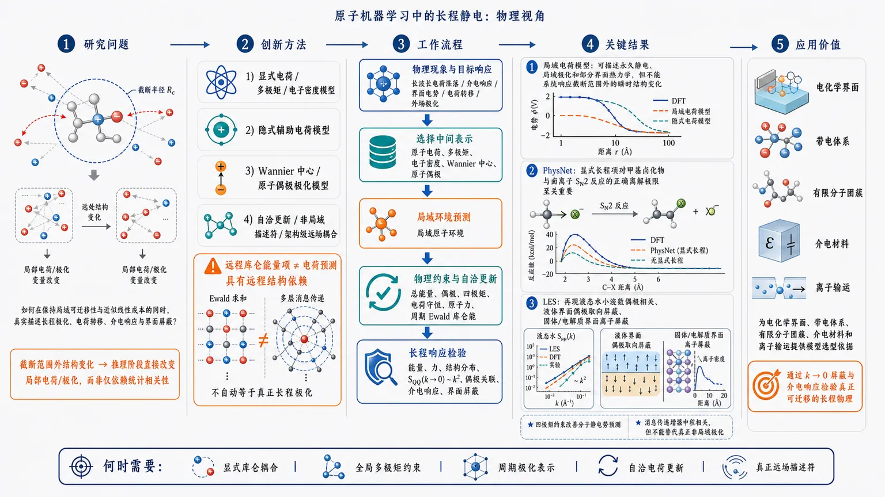
研究问题原子机器学习如何在保留局域模型可迁移性和近似线性计算成本的同时，真实描述库仑相互作用引起的长程极化、电荷转移、介电响应与界面屏蔽？核心判据是：截断范围外的结构变化能否在推理阶段直接改变局部电荷或极化变量，而不是仅依赖训练数据中的统计相关性。创新方法论文提出基于物理机制的长程静电分类框架，将模型按电荷信息和非局域机制分为显式电荷、多极矩与电子密度模型、隐式辅助电荷模型、Wannier中心或原子偶极极化模型，以及带有自洽更新、非局域描述符或架构级远场耦合的模型。最关键的Aha点是区分“能量中存在远程库仑项”和“电荷预测本身具有远程结构依赖”：Ewald求和或多层消息传递并不自动产生真正的长程极化。工作流程从物理现象和目标响应出发，先判断体系是否涉及长波长电荷涨落、介电响应、界面电势、电荷转移或外场极化；再选择原子电荷、多极矩、电子密度、Wannier中心或原子偶极作为中间表示。模型由局域原子环境预测这些变量，通过总能量、偶极、四极矩、电荷守恒、原子力或周期Ewald库仑能进行约束，必要时加入自洽电荷更新或非局域信息传播；最终以能量、力、结构分布、S_QQ(k)在k趋近零时的k²标度、偶极关联、介电响应和界面屏蔽检验输出。关键结果局域电荷模型能够描述永久静电、局域极化、许多分子间相互作用和部分界面热力学，但无法系统响应截断半径外的瞬时结构变化。PhysNet表明显式长程项对甲基卤化物与卤离子S_N2反应的正确离解极限至关重要；LES能够再现液态水小波数偶极相关、液体界面偶极取向屏蔽以及固体/电解质界面的离子屏蔽。四极矩约束可改善分子静电势预测；消息传递虽能增强中程相关，却受原子图连通性限制，不能替代真正的非局域极化。应用价值该框架为电化学界面、带电体系、有限分子团簇、介电材料和离子输运中的模型选型提供物理依据。它帮助研究者判断何时需要显式库仑耦合、全局多极矩约束、周期极化表示、自洽电荷更新或真正的远场描述符，并通过k趋近零的屏蔽和介电响应检验模型是否具有可迁移的长程物理，而非只是在特定训练集上获得表观成功。《Long-range electrostatics in atomistic machine learning: a physical perspective》（None，）
第一部分：核心概览（Overview）
长程静电是原子机器学习实现量子力学精度和跨体系迁移的关键瓶颈。核心贡献不是提出单一新模型，而是建立一套基于物理机制的分类框架：区分显式电荷分解、隐式辅助电荷、Wannier中心/原子偶极表示，以及通过自洽更新、非局域描述符和架构引入真正非局域性的模型。分析明确指出，局域电荷模型可以描述永久静电和局域极化，却无法系统响应截断半径外的瞬时结构变化；真正的长程极化和电荷转移需要非局域机制。该框架尤其适用于判断电化学界面、介电响应与离子输运中长程静电的实际必要性。
第二部分：结构化快速回顾
背景
局域性假设使原子机器学习模型获得可迁移性和近似线性计算复杂度，但它与库仑相互作用的长程性存在根本张力。多数热力学性质在体相材料中对长程作用不敏感；然而在 (k→0) 的电响应、界面、有限分子团簇、带电体系和外加电场下，局域模型可能违反正确的屏蔽和介电响应规律。
方法
按照电荷信息的获得方式，体系化比较三类局域静电模型：
- 显式电荷模型：直接学习原子电荷、多极矩或电子密度系数。
- 隐式电荷模型：把原子电荷作为辅助变量，通过总能量、偶极矩、四极矩等全局量间接确定。
- 极化模型：通过Wannier中心或原子偶极描述周期体系的宏观极化。
同时区分“局域模型对长程效应的统计拟合”和“在推理阶段真正引入非局域结构依赖”。
结果
局域电荷模型能够描述大量分子间静电、界面热力学性质、局域电荷屏蔽和部分周期体系效应。PhysNet在离解极限和 (S_N2) 反应中显示了显式长程项的重要性；LES能够再现液态水小波数偶极相关、界面偶极取向屏蔽以及固体/电解质界面的离子屏蔽。另一方面，消息传递虽然可以扩大有效感受野，却不等价于真正的非局域极化。
讨论
判断模型是否包含长程物理，不能只看模型是否使用“长程能量项”或多层消息传递，而应考察远处结构变化是否能够在推理时改变局部电荷或极化变量。训练集中的结构相关性可能让局域模型表现出“统计意义上的非局域性”，但这种能力依赖数据分布，不能视为一般物理保证。
局限
局域电荷表示受电荷分区方案影响，并且通常忽略原子电荷密度的各向异性。电子密度直接学习的输出维度和推理成本很高。消息传递受截断图连通性限制，无法跨越真空或无中间原子的区域。给定文本在第二章第三节关于极化模型的部分于“short-range energy ... then sepa”处截断，因此后续完整模型、结果、外场耦合、结论及应用分析未被提供。
结论
长程静电不是一个单一的建模问题。永久电荷分布、局域极化、长程结构依赖极化、电子电荷转移、周期极化和外场响应需要不同的物理表示。电化学界面对长程静电高度敏感；离子输运则可能相对不敏感，但这一判断仍需结合具体体系和观测量验证。
第三部分：逐章节冷凝解析
I Introduction
机器学习显著降低第一性原理模拟成本
原子机器学习的主要价值在于接近第一性原理精度，同时将计算负担降低 3—5个数量级。多数模型采用电子近视性原则，把物理目标分解为局域原子贡献，并通过原子周围球形截断窗口构造输入表示。原文明确指出：*"The vast majority of these methods rely on the principle of electronic nearsightedness"*，并进一步说明局域表示使用*"spherical windows of a given real-space cutoff around the atoms of the system."*
局域模型天然适合广延能量和大体系计算
局域能量分解使总能量具有广延性，模型评估复杂度随原子数近似线性增长，而常规从头算方法由于显式处理电子结构，成本呈超线性增长。原文表述为：*"local ML models naturally satisfy the extensive character of the electronic energy, and their evaluation scales linearly with the number of atoms."*
体相热力学性质通常对长程作用不敏感
在体相材料中，长程相互作用往往在热力学平均过程中被削弱，因此短程机器学习势能够较好复现径向分布函数，甚至达到数个 Å 的原子间距离。关键限定是，这种成功主要针对常规静态结构分布和热力学性质，并不自动延伸到电响应。原文指出：*"The assumption of locality has proven to be generally valid in the simulation of bulk materials, where the effect of long-range interactions is averaged out."*
(k→0) 电响应揭示局域模型的根本缺陷
带电粒子流体中，真实长程库仑相互作用要求静态电荷—电荷结构因子满足：
[
SQQ(k)propto k²,qquad k→0.
]
短程模型则保持有限值。即使有限模拟盒由于严格电中性而满足 (SQQ(0)=0)，短程模型在趋近零波矢时仍不能实现完美屏蔽。原文强调：*"long-wavelength charge-density fluctuations are suppressed by perfect screening only in systems with long-range Coulomb interactions."*
介电响应依赖真正的长程偶极关联
纵向偶极—偶极相关函数在 (k→0) 的行为决定宏观介电响应。以液态水为例，只有包含显式长程相互作用的模型才能正确再现该极限。原文为：*"only models that include explicit long-range interactions correctly reproduce the (k → 0) behavior of the longitudinal component of the dipole–dipole correlation function."*
界面和有限体系放大长程静电效应
液—汽界面、带电界面、导电材料和电子转移体系具有几何不平衡性，电场不再通过体相平均抵消，导致长程电荷重排和电子极化直接影响平衡性质。尤其在电化学界面中，电荷转移、长程电子极化和离子屏蔽彼此耦合。原文称：*"the geometrically unbalanced (i.e., anisotropic) distribution of the electrostatic fields produces a macroscopic effect in the equilibrium properties of the system."*
核心区分是局域电荷学习与非局域物理建模
局域电荷密度表示可以处理永久静电和截断半径内的局域极化；长程极化至多被作为与数据集相关的平均统计效应吸收。若要获得结构依赖的长程极化和电子电荷转移，则必须引入非局域性。原文给出清晰区分：*"long-range polarization can be captured at most as a mean, dataset-dependent statistical effect"*，而真正的长程响应需要*"a notion of nonlocality into the model."*
外场效应必须通过极化耦合处理
外加电偏压不能简单看作普通能量偏移，而通常需要通过体系极化与有限电场耦合。该问题与长程静电相关，但在物理上是独立的建模层面。原文将其概括为：*"dealing with the application of a finite electric field ... through the coupling with the system’s polarization."*
研究范围明确排除架构性能比较
分析重点放在核心物理和基本原理，而不是神经网络架构、性能指标或具体工程技巧。原文为：*"we will not touch on any performance metrics or specific technical contraption of neural-network architectures."*
II Electrostatics from local charge models
静电能本质上是电荷密度的非局域自相互作用
静电能写作：
[
Uₑₗₑ=
frac12int dmathbf rint dmathbf r'
frach̊o_Q(mathbf r)h̊o_Q(mathbf r')
|mathbf r-mathbf r'|.
]
总电荷密度由核电荷和电子密度组成：
[
h̊o_Q(mathbf r)
=
sumᵢ Zᵢδ(mathbf r-mathbf Rᵢ₎₊ₕ̊oₑ₍mathbf r).
]
非局域性来自任意两个空间点之间的 (1/|mathbf r-mathbf r'|) 耦合。原文称其为*"the self-interaction of the charge density (h̊o_Q) via the (nonlocal) Coulomb potential."*
局域机器学习通过离散电荷分解规避非局域性
对原子 (i) 的局域环境 (Xᵢ)，任意局域电荷分量 (c) 可表示为：
[
c(Xᵢ₎₌fbₒₗdₛyₘbₒₗθ(Xᵢ₎.
]
(c) 可以是原子部分电荷、原子多极矩、Wannier中心电荷或电子密度基组系数。模型由局部坐标环境映射到电荷分量，从而将连续电荷密度转化为可学习的离散对象。
无自洽更新时，截断外结构对局部电荷没有导数响应
如果不存在电荷密度的自洽更新，则：
[
fracpartial c(Xᵢ₎partialmathbf Rₖ=0,
qquad
|mathbf Rₖ₋mathbf Rᵢ|>rcᵤₜ.
]
这意味着远处原子结构变化不会直接改变 (i) 原子的局部电荷。原文将其概括为：*"any local machine-learning methodology that follows this rationale inherently neglects polarization effects induced by far-field structural rearrangements."*
局域模型能够捕获截断范围内的主要静电贡献
只要结构变化处在足够宽的环境截断范围内，局域电荷模型原则上可以描述由这些变化引起的电荷变化。其主要贡献包括分子框架中的构型能和结合能，以及材料界面的若干热平衡性质。原文指出：*"In most cases, this is sufficient to provide the leading contribution to the Coulomb interactions in the system."*
训练目标可以把部分长程效应以统计方式编码
如果模型训练目标不是局部电荷，而是电子偶极矩或总能量等较非局域的量，局部电荷预测可能间接吸收数据集中的长程极化统计规律。但这种能力依赖训练数据是否包含相同类型的远程结构变化。原文的条件是：*"providing that this mirrors the type of long-range physics encountered during the training procedure."*
II.1 Explicit charge models
原子部分电荷是最直接的显式静电表示
显式模型直接学习量子力学电荷密度的原子分解 (qᵢ)。3D-HDNNP将这一策略引入高维神经网络势的早期发展中，相关应用包括大型纳米结构氧化锌体系和水二聚体。典型流程是：
- 用Hirshfeld分区从DFT电荷密度获得 (qᵢ)；
- 用点电荷近似计算 (Uₑₗₑ)；
- 定义短程能量 (USR=U-Uₑₗₑ)；
- 分别训练电荷和短程能量神经网络；
- 将两者的力贡献相加。
原文称其为：*"The most straightforward strategy to build a charge-aware ML model consists in directly learning an atomic decomposition."*
坐标依赖的电荷必须纳入力的求导
由于 (qᵢ) 依赖原子环境和坐标，计算静电力时必须包含电荷对坐标的导数，否则预测力不再与总能量一致。该要求对应能量守恒和保守力条件。
点电荷忽略局部电荷密度各向异性
单一原子电荷不能表达方向依赖的电子密度，因此通常把偶极和更高阶多极矩的影响吸收到短程能量中。原文指出：*"One of the limitations of atomic charge models is that they neglect the local anisotropy of the underlying physical charge density."*
原子多极矩提高局部静电表示能力
更丰富的模型同时学习：
- 原子电荷 (qᵢ)；
- 原子偶极 (mathbf dᵢ)；
- 原子四极矩 (mathbf Qᵢ)。
相关研究覆盖水和乙醇等分子。GDMA结合核机器学习的方法进一步学习量子力学多极矩与Voronoi预设基线之间的差异，并被用于DNA碱基对、氨基酸对等气相二聚体，达到化学精度。等变GNN进一步利用多极矩在旋转下的变换性质，预测三维静电势图；测试分子规模达到数十万分子量级的数据集，单个分子最多包含 20个重原子，元素包括 H、C、N、O、F、S、Cl。
多极矩分区仍然具有任意性
即使多极矩比点电荷更有表达力，它们仍依赖量子化学中的电荷分区方案。不同分区方法可能产生不同的局部对象，而全局偶极和界面偶极才直接控制远场静电。原文强调：*"these types of atomic decompositions ... fundamentally rely on an arbitrary partitioning choice."*
直接学习电子密度可以减少分区任意性
电子密度模型有两条主要路线：
- 在原子中心基组上展开；
- 在实空间网格上直接学习 (h̊oₑ₍mathbf r))。
原子中心展开形式为：
[
h̊oₑ₍mathbf r)
simeq
sumᵢ₌₁^Nsum_ν c_νⁱ
φ_ν(mathbf r-mathbf Rᵢ₎.
]
其中 (c_νⁱ) 是机器学习预测的电子密度系数，(φ_ν) 是原子基函数。
电子密度模型的表达力以计算成本为代价
每个原子通常关联约 (10²) 个电子密度系数，而不是少量多极矩，因此推理成本增加一个显著的线性前因子。实空间网格表示的维度更高，但不再引入参考电子密度的离散近似。原文指出：*"each atom in the system is ... associated with a number of electron-density coefficients of the order of (10²)."*
局部多极矩不等于全局物理多极矩
原子偶极和四极矩是局部电荷分解对象；分子偶极、界面偶极等全局量则决定远场电势。即使短程能量 (USR) 可以吸收Hartree能量中未显式表示的部分，也不能保证全局静电被准确复现。原文为：*"this does not automatically guarantee that the global electrostatics in the system is accurately reproduced."*
II.2 Implicit charge models
隐式电荷通过全局观测量确定分区
隐式模型不把原子电荷当作唯一的量子化学标签，而把 (qᵢ) 作为辅助变量，通过分子偶极、总能量、总电荷和四极矩等明确物理量间接约束。这样可以减少对任意电荷分区方案的依赖。
分子偶极为局部电荷提供全局约束
对有限、电中性的体系：
[
mathbf d=sumᵢ₌₁Nqᵢmathbf Rᵢ.
]
训练损失为：
[
mathcal L(boldsymbolθ)
sim
sumα₌₁³
łeft|
sumᵢqᵢ₍boldsymbolθ)Rᵢ,α
-d_αref
i̊ght|.
]
三个分量 (α=1,2,3) 通过位置矢量产生全局耦合，使局部电荷共同重构参考分子偶极。关键限制是，这种全局耦合只存在于训练目标中，推理时 (qᵢ) 仍然只依赖局域环境。原文明确指出：*"this global coupling does not introduce a nonlocal character at inference."*
TensorMol展示了隐式偶极拟合的可行性
TensorMol将量子力学偶极作为训练目标，并应用于水团簇、大型有机分子和DNA碱基对相互作用。其静电能由拟合电荷计算，未能由电荷显式解释的部分被并入短程能量。
偶极约束可以表示任意距离上的永久电荷分离
在两性离子分子链中，原子电荷对分子偶极的分解可以捕获延伸到任意大距离的永久电荷分离。这是永久结构电荷分离的统计表示，不等于远处瞬时结构变化引起的自洽极化。原文使用了重要限定：*"extended (permanent) charge separations over arbitrary large distances."*
PhysNet同时拟合能量、偶极和总电荷
PhysNet的多目标损失包含：
[
beginaligned
mathcal L(boldsymbolθ)sim&
w_U|UML-Uᵣₑf|
&+w_dsumα₌₁³
łeft|
sumᵢqᵢRᵢ,α-d_αref
i̊ght|
&+w_qłeft|sumᵢqᵢ₋Qi̊ght|
+原子力项.
endaligned
]
静电能结构为：
[
UML(qᵢ)
sim
USR
+
sumᵢₙₑ ⱼ
fracqᵢqⱼ|mathbf Rᵢ₋mathbf Rⱼ|
fdₐₘₚ(Rᵢⱼ),
]
其中 (fdₐₘₚ!) 在短距离处抑制点电荷库仑项。与仅拟合偶极不同，PhysNet同时用能量和偶极约束电荷分区。
PhysNet中的库仑耦合是统计约束，不是远场信息传播
能量中的库仑项确实将不同原子环境全局耦合起来，但电荷生成本身仍没有访问截断外结构。原文强调：*"no far-field information is used to predict the atomic charges."*
长程静电对离解极限和反应路径具有实质影响
PhysNet在甲基卤化物与卤离子 (S_N2) 反应以及溶剂化蛋白片段中得到验证。图2比较了含长程项和不含长程项的最小能量路径，显示长程相互作用对于正确再现解离极限是必要的。这里提供了定性证据，但给定文本没有报告误差数值、样本量或统计显著性 (P) 值。
AIMNet2增强了多极矩物理约束
AIMNet2除总能量和分子偶极外，还训练分子四极矩，从而进一步约束原子电荷分解。其应用范围从简单有机分子扩展到具有“exotic element-organic bonding”的大型分子。
电荷守恒通过全局校正实现
AIMNet2在第 (n) 次迭代中的电荷为：
[
qᵢ₌
tilde qᵢ₊
fracfᵢsumⱼfⱼ
łeft(
Q-sumⱼtilde qⱼ
i̊ght).
]
其中 (tilde qᵢ) 是前一轮电荷，(fᵢ) 是可学习参数，用来模拟原子Fukui函数。该步骤在推理阶段引入全局电荷更新，但它只保证总电荷 (Q) 守恒，并不描述远场结构诱导的极化。因此仍属于守恒约束下的局域电荷模型。
AIMNet2的凝聚相迁移存在分子可加性风险
AIMNet2主要在气相分子上训练，却可以外推到弱相互作用分子液体并进行分子动力学模拟。但在一般凝聚相体系中，多体相互作用会破坏总电子能量的分子可加性，气相训练得到的迁移能力可能失效。
原子偶极可以作为隐式局部极化变量
PiNet2使用形式氧化态电荷作为基线，并学习原子偶极修正：
[
mathbf d=
sumᵢqᵢOSmathbf Rᵢ
+
mathbf dᵢ₍boldsymbolθ).
]
这种表示允许固定整数或形式电荷承担长程电荷分离，而将局部电子结构变化交给原子偶极。
四极矩对分子静电势预测可能比偶极矩更关键
基于QM9和SPICE数据集的研究显示，仅训练分子四极矩的隐式电荷模型，比仅训练分子偶极的模型产生更准确的分子静电势（MEP）；同时使用偶极和四极矩可以达到最佳精度。原文结论为：*"an implicit charge model trained only on quadrupole moments produces more accurate MEP predictions."* 给定材料没有提供具体MAE、RMSE或样本量。
LES将隐式电荷扩展到周期体系
Latent Ewald summation在倒空间中表示周期库仑能：
[
U(qᵢ)
=
USR
+
frac2πØmega
sumₘₐₜₕbf ₖ
frace⁻frac¹²⁽σ k⁾^²k²
sumᵢⱼ
qᵢqⱼ
e⁻ⁱmathbf kḑot⁽mathbf Rᵢ₋mathbf Rⱼ₎.
]
其中：
- (Ømega) 是晶胞体积；
- (σ) 是平滑高斯电荷的宽度；
- (qᵢ) 是由局部环境预测的潜在辅助电荷。
模型通过量子力学能量和原子力训练周期电荷分解。
LES能够复现多种局部电荷相关现象
LES被用于：
- 周期盒中带电分子和极性分子的结合能；
- 液态水倒空间偶极相关的小 (k) 行为；
- 水/真空界面表面偶极的取向屏蔽；
- 固体/电解质界面的离子屏蔽。
这些现象都依赖局部电荷分布之间的长程耦合。原文概括为：*"all examples requiring a treatment of local charge distributions."*
局域模型可能表现出数据集依赖的“非局域性”
LES也被用于设计有全局电荷转移的数据集。表面上，这似乎与局域电荷模型的导数约束矛盾；但如果数据集规模有限、构象变化有限，远程结构变化可能与参考能量中的电荷分布高度相关，局域模型便能学习这种统计映射。原文称其为：*"a statistical notion of nonlocality in the predicted atomic charges."*
消息传递扩大有效范围但不创造真正非局域性
每一层消息传递只在有限截断半径 (rcᵤₜ) 内传播信息，多层堆叠可得到更大的有效截断 (rcᵤₜeff)。但传播受截断图连通性限制，两个中间没有原子的区域之间无法交换信息。真空分隔的生物分子二聚体提供了这一限制的数值验证。
原文的物理判断是：*"message passing can effectively enhance the description of intermediate-range correlations, yet it does not introduce genuine nonlocality in the charge distribution."*
消息传递不能描述有效截断之外的瞬时极化
由于消息传递交换的特征来自固定局部描述符，特征值不会一致地随全局构型变化，因此无法使一个区域响应 (rcᵤₜeff) 之外的瞬时电荷分布。虽然有效范围在实践中可能达到几纳米，但超过约 6层消息传递后，计算成本被认为变得难以承受。原文为：*"increasing the number of message-passing layers beyond roughly six is found to become computationally prohibitive."*
消息传递不能等价替代显式增大截断半径
在固定 (rcᵤₜ) 的二体到二体消息传递中，表面上可能得到 (rcᵤₜeff=3rcᵤₜ)，但对随机NaCl结构的静电能误差明显大于真正使用 (3rcᵤₜ) 二体表示的模型。原文结论为：*"message passing does not meaningfully replace an explicit increase of the cutoff."*
II.3 Polarization-based models
周期体系不是“大分子”
无限周期重复体系的拓扑与有限分子不同，因此宏观极化的定义也不同。Resta在1992年指出，只有极化差值可观测；King-Smith与Vanderbilt随后用Berry相位建立了现代极化理论。核心思想是：周期体系中的绝对极化并非普通意义下的唯一位置矩。
原文强调：*"An infinitely repeated system is not simply a ‘big molecule’."*
周期极化具有极化量子不确定性
现代极化理论给出：
[
mathbf Psimmathbf P+fracemathbf TØmega,
]
其中 (e) 是电荷量子，(mathbf T) 是任意晶格矢量，(Ømega) 是晶胞体积。加上一个极化量子不会改变可观测物理量。
周期体系的极化不能一般写成电荷密度的一阶矩
由于周期边界条件下位置算符不适定：
[
mathbf P≠
frac1Ømega
intØₘₑgₐdmathbf r,
mathbf r,h̊o_Q(mathbf r).
]
右侧只有在不重叠、彼此独立且电荷或偶极高度局域的“Clausius-Mossotti极限”下才可用于扩展体系。共价键体系通常不满足该条件。原文说明：*"this is almost never the case, especially in insulating systems characterized by covalent bonds."*
Wannier中心提供周期电子极化的离散表示
绝缘体的电子极化可由Wannier中心位置 (mathbf rₙ) 表示：
[
mathbf Pₑₗ
=
-frac1Ømegasumₙmathbf rₙ.
]
加入原子赝核贡献后：
[
mathbf P
=
mathbf Pₑₗ
+
frac1ØmegasumᵢZᵢmathbf Rᵢ.
]
Wannier函数数量等于占据能带数量，因为Wannier表示是占据Bloch态流形上的幺正变换。
Wannier中心把宏观极化重新局域化
每个Wannier中心可视为局域电子轨道，并分配给原子、化学键或结构基元，从而恢复类似Clausius-Mossotti的局部偶极图像。DeepWannier及其消息传递增强版本采用局部环境预测Wannier中心位置，学习损失为：
[
mathcal L(boldsymbolθ)
=
sumₙ
łeft|
mathbf rₙ₍boldsymbolθ)
-
mathbf rₙref
i̊ght|.
]
与原子部分电荷模型相比，电子电荷取整数，机器学习重点预测的是电子中心位置。原文指出：*"the charge values are set as integers, and the model is asked to learn the positions of the (electronic) centers of charge."*
给定材料未提供该节的完整后续内容
现有文本在说明Wannier中心电荷密度如何用位于原子核和Wannier中心的球形高斯电荷近似、以及如何定义 (USR) 后中断。因此，关于该节后续的训练结果、误差、外场极化耦合和模型局限，无法从给定材料中继续提取具体证据。
第四部分：深度理解与语言支持
1. Electronic nearsightedness
Electronic nearsightedness通常译为“电子近视性”或“电子局域性”。它不是说电子真的只受最近邻影响，而是说在许多绝缘体系中，局部观测量对远距离势扰动的响应会快速衰减。
微妙之处在于：
- 对局域能量密度，近视性通常有效；
- 对电荷—电荷相关函数的 (k→0) 极限，近视性可能失效；
- 对宏观偶极、介电常数、界面电势和电荷转移，远程响应可能是主导效应。
因此，“局域能量可学习”不能推出“所有电响应都局域”。
2. Statistical notion of nonlocality
Statistical notion of nonlocality不是严格的物理非局域性。它指的是：训练数据中远距离构型变化与局部环境或目标能量之间存在稳定相关性，局部模型因此可以预测某些看起来非局域的结果。
例如，若数据集中某种远程电荷转移总是伴随着特定局部构型，模型可能学到这种相关性。但当体系尺寸、构型、界面距离或化学环境改变后，这种相关性可能消失。
区别可以概括为：
- 物理非局域性：推理时远处结构变化直接改变局部电子变量；
- 统计非局域性：模型从训练分布中间接猜测远程效应。
3. Perfect screening
Perfect screening指长程库仑体系中，宏观尺度的电荷涨落被集体响应压制。对静态电荷结构因子：
[
SQQ(k)propto k²
quad(k→0).
]
有限盒中的 (SQQ(0)=0) 只是总电荷为零的代数结果，不代表体系正确实现了长波长屏蔽。真正有区分力的是先取 (k→0) 的极限，而不是只检查 (k=0) 一个点。
4. Polarization quantum
Polarization quantum表示周期体系的宏观极化不是唯一实数，而是等价类：
[
mathbf P,quad
mathbf P+fracemathbf TØmega,quad
mathbf P+frac2emathbf TØmega,łdots
]
原因是周期体系中电子可以跨越晶胞边界，极化的绝对值依赖所选晶胞和电子分支。可观测的是极化变化、极化差或与电流泵浦相关的拓扑变化，而不是任意选定的绝对极化值。
5. Auxiliary variables
Auxiliary variables是“辅助变量”，不是独立的实验可观测量或唯一物理分解。PhysNet、LES等模型中的原子电荷可以通过能量、偶极、四极矩等目标被约束，但不同的电荷分配仍可能产生相同的全局物理量。
这类变量的价值不在于宣称“真实原子电荷”被唯一恢复，而在于提供一个可计算的中间表示，使长程库仑能、总偶极和电荷守恒能够同时进入模型。
第五部分：创新评估与关联
1. 创新性判断
主要创新是物理分类框架，而非单一算法
相对于近几年围绕PhysNet、AIMNet2、DeepWannier、LES、PiNet2等模型的分散式发展，核心增量是把不同方法放入同一个物理坐标系中：
- 学习什么：电荷、多极矩、电子密度、Wannier中心；
- 如何约束：局部目标、全局偶极、总能量、四极矩、电荷守恒；
- 是否非局域：局域映射、有限层消息传递、自洽更新、非局域描述符；
- 适用什么现象：永久静电、局部极化、长程极化、电荷转移、周期介电响应。
因此，贡献更接近概念澄清、机制辨析和建模原则总结，而不是新网络结构或新基准纪录。
明确指出“库仑能非局域”不等于“电荷预测非局域”
这是最重要的判别标准。模型可以在能量中使用：
[
sumᵢₙₑ ⱼfracqᵢqⱼRᵢⱼ,
]
但若每个 (qᵢ) 仍只由 (rcᵤₜ) 内环境决定，则远处结构无法在推理时改变该电荷。该区分澄清了很多“加入Ewald求和”或“增加消息传递层数”是否真正解决长程极化的问题。
把数据依赖的表观非局域性与可迁移物理规律分开
LES等模型在有限数据集上可以重现全局电荷转移，但这并不证明模型具备一般性的长程响应机制。创新性在于明确提出：必须区分训练分布内的统计成功和跨尺寸、跨构型、跨界面的物理可迁移性。
将 (k→0) 响应作为模型物理正确性的检验
传统模型评价通常关注能量、力和结构分布误差；这里进一步强调：
- (SQQ(k)) 在 (k→0) 是否满足 (k²) 标度；
- 偶极—偶极相关是否正确收敛；
- 介电响应和离子屏蔽是否得到再现；
- 界面长程电势和极化是否具有正确极限。
这把长波长响应函数引入原子机器学习模型的物理验证标准，相比单纯的局部能量误差更能识别长程缺陷。
指出消息传递的有效范围不能自动等同于真正非局域性
过去2—5年的许多模型通过消息传递扩大感受野。这里进一步指出三个限制：
- 每层传播仍受有限截断半径限制；
- 传播依赖原子图连通性，无法跨越真空间隔；
- 固定局部描述符不能持续响应远处瞬时电荷变化。
因此，消息传递可以改善中程相关，却不能保证长程极化和电子转移。
为电化学界面提供更明确的模型选择逻辑
电化学体系同时包含：
- 界面电荷重新分布；
- 导体中的电子极化；
- 电解液离子屏蔽；
- 外加电场；
- 界面结构动力学。
这些过程不应统一用单一“长程项”处理，而需要分别判断是否需要电荷自洽、周期极化表示、非局域描述符或外场—极化耦合。该问题意识是面向未来电化学机器学习势的重要价值。
2. 相对于过去2—5年工作的具体位置
基于给定参考文献，可将近年进展概括为：
- 2022年前后：等变多极矩模型和DeepWannier推进了局部电荷各向异性、旋转协变表示以及周期极化建模。
- 2023—2025年：AIMNet2、LES、PiNet2及相关周期电荷模型把能量、偶极、四极矩、Ewald求和和电荷守恒结合起来。
- 2025年前后：关于真空分隔体系和消息传递有效截断的研究更直接地暴露了“多层消息传递不等于真正非局域性”的问题。
- 当前框架的增量：不是简单增加新的电荷模型，而是回答“哪类长程物理需要哪类非局域机制”，并把电化学界面、介电响应和离子输运置于同一物理判断框架下。
3. 尚未解决的问题
给定内容显示，以下问题仍然开放：
如何构造普适的自洽非局域极化模型
局域电荷模型无法满足：
[
fracpartial c(Xᵢ₎partialmathbf Rₖ=0
quad
在截断半径外仍成立的限制.
]
要突破这一点，需要推理阶段进行远场感知、自洽电荷更新、响应方程求解或非局域电子结构表示，同时控制计算复杂度和训练稳定性。
如何在周期体系中统一电荷转移与宏观极化
原子电荷、Wannier中心和Berry相位极化分别适合不同物理情形。它们在导体、绝缘体、带电界面和跨晶胞电荷转移中的兼容性仍需进一步处理。
如何用真正可迁移的测试区分统计拟合与物理泛化
应系统改变：
- 体系尺寸；
- 界面间距；
- 电荷转移距离；
- 外场强度；
- 离子浓度；
- 局部构型与远场构型的相关性。
单一能量或力误差不足以证明长程静电已被正确建模。
离子输运对长程静电的敏感性需要定量验证
摘要给出的判断是，离子输运现象似乎比电化学界面平衡性质更不敏感于长程静电，但给定文本没有提供扩散系数、迁移率、活化能、误差百分比或统计检验。因此，这一结论目前应视为领域趋势判断，而非具有明确置信区间的普遍定律。
-
02
📊 含图深析
📄 摘要：针对含氦泡和晶界的钨等离子体面对材料，构建图神经网络代理模型，从原子构型直接预测任意温度下氢扩散系数D_H和热导率κ的完整3×3对称张量。该问题传统分子动力学每个构型需耗时数小时，缺陷结构可使输运性质变化数个数量级。
📖 英文原文
arXiv:2608.15609v1 Announce Type: new Abstract: Helium bubbles and grain boundaries in tungsten plasma-facing components alter hydrogen-isotope transport and thermal conduction by orders of magnitude, yet evaluating these transport properties for a given microstructure requires hours of molecular dynamics (MD) per configuration. We present a graph neural network surrogate that maps a tungsten atomic configuration containing helium bubbles and grain boundaries directly to the full 3×3 symmetric tensors of the hydrogen diffusion coefficient D_H(T) and the thermal conductivity κ(T) at arbitrary temperature. Anisotropy is captured by a rotation-equivariant tensor pooling layer; temperature enters through predicted temperature-independent parameters (an Arrhenius pair (D₀,Eₐ₎, a phonon conductivity tensor, and a defect residual resistivity) expanded analytically via the Arrhenius and Wiedemann-Franz-Matthiessen relations. Training labels for 635 microstructures are generated with an embedded-atom-method potential (Green-Kubo conductivity and multi-temperature tracer diffusion); the electronic channel is calibrated against published irradiation-degradation measurements, and the pipeline is anchored to a first-principles machine-learning potential (VASP+FLARE) through paired MD calibration runs and an active-learning loop. The learned activation energies (median 0.21 eV, rising in bubble and grain-boundary structures) reproduce literature hydrogen migration barriers and trapping physics, and the equivariant pooling keeps predictions consistent across arbitrarily oriented sub-blocks. Coupled finite-element thermal-hydrogen analyses driven by the surrogate show that conductivity degradation changes predicted hydrogen permeation by a factor of 2.5 through the temperature field. The model returns both tensors in milliseconds, enabling microstructure-resolved transport input for component-scale analyses of fusion divertors.
💡 亮点：模型把含氦泡、晶界的钨原子结构直接映射到温度依赖的氢扩散和热导张量。核心对象是完整3×3对称张量，而非标量平均值，并针对缺陷导致的数量级变化进行代理建模。该路线可为缺陷复杂金属中的输运筛选提供高通量工具，也提示团队将等变结构编码与输运张量预测结合。
🔬 与我们研究方向的关系
📐 方法要点：该工作在1000个假想MOF样本上比较四种机器学习模型，以低压CO2吸附容量为目标。输入描述符包括最大孔腔直径、孔限直径、空隙率、质量比表面积和氢原子数；作者先用SHAP与特征重要性筛选变量，再进行机器学习符号回归，寻找由这五个结构描述符组成的简洁数学表达式。摘要没有给出四种模型名称、吸附模拟的压力和温度、训练测试划分、符号表达式、拟合误差、外部验证或不确定性。
🔗 相关工作关联：方法结合了MOF结构—性能回归、树模型或神经网络解释、SHAP特征归因和符号回归。与黑箱模型相比，符号表达式便于检查单调性、尺度和物理合理性，但先做特征筛选可能遗漏强交互，且1000个假想样本的分布决定公式的外推范围。它与凝聚态材料可解释建模、描述符发现和科学机器学习相近，却不是铁电或磁性材料研究；摘要未涉及NbOI2、CrI3、CrSBr、BaTiO3，也没有团队五位人员的方向资料。
💡 对你方向的启示：可将此路线用于铁电和二维磁性材料的可解释结构—性质关系，但需先定义可重复的目标与描述符。对BaTiO3可用键长畸变、体积、Born电荷、局域极化、应变和氧空位距离预测极化或介电响应；对CrI3、CrSBr和NbOI2可加入层间距、配位多面体、SOC相关元素比例和交换路径。数据应由结构枚举结合DFT或DFT+U计算生成，按化学组成和结构原型外推划分，比较黑箱基线、SHAP筛选及符号公式，并用独立结构、物理单调性和DFT复算验证公式。
📖 展开分析 + 配图
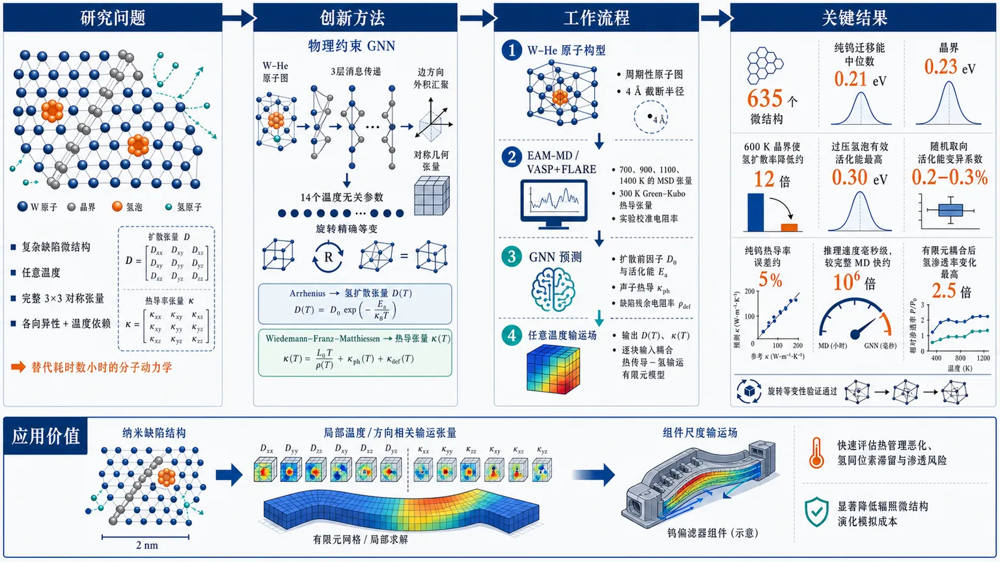
研究问题如何在含氦泡、晶界和空位等复杂缺陷的钨微结构中，快速预测任意温度下氢扩散系数与热导率的完整3×3对称张量，替代每个构型需耗时数小时的分子动力学计算，并保留缺陷引起的各向异性与温度依赖？创新方法提出物理约束的图神经网络代理模型：仅将W–He原子构型编码为图，通过3层消息传递学习14个温度无关参数，再用Arrhenius关系展开氢扩散、用Wiedemann–Franz–Matthiessen模型展开热导率；利用边方向外积构造几何张量池化，使输出张量在任意旋转下精确等变。其Aha点是把复杂的多温度张量输运预测压缩为结构到物理参数的映射，并以少量VASP+FLARE计算校准EAM势的类别依赖偏差。工作流程输入含W、He的原子构型，建立4 Å截断半径的周期性原子图；通过EAM分子动力学在700、900、1100、1400 K计算氢示踪原子MSD张量，并用Green–Kubo方法计算300 K声子热导张量；结合实验校准电子电阻率模型生成输运标签；GNN分别预测扩散前因子张量、活化能、声子热导张量和缺陷残余电阻率；利用Arrhenius与Wiedemann–Franz–Matthiessen关系恢复任意温度下的扩散张量和总热导张量；最后将局部张量逐块输入耦合热传导–氢输运有限元模型。关键结果模型在635个微结构上学习到纯钨氢迁移能中位数0.21 eV，晶界结构升至0.23 eV；600 K时晶界使氢扩散率中位数降低约12倍，过压氦泡可将有效活化能提高至0.30 eV；随机取向测试中活化能变异系数仅0.2–0.3%，证明张量旋转等变性；纯钨300–1400 K热导率与推荐数据误差约5%；推理速度达到毫秒级，相比完整MD快约10⁶倍；热导退化耦合进有限元后，预测氢渗透率变化可达2.5倍。应用价值为聚变装置钨偏滤器提供从纳米缺陷结构到组件尺度输运场的快速多尺度桥接：可在有限元网格中逐块生成温度相关、方向相关的局部扩散与热导系数，用于评估氦泡和晶界导致的热管理恶化、氢同位素滞留及渗透风险，并显著降低辐照微结构演化模拟的计算成本。第一部分：核心概览（Overview）
该研究构建了一个面向含氦泡与晶界钨微结构的图神经网络代理模型，将原子构型直接映射为任意温度下氢扩散系数与热导率的完整 3×3 对称张量。模型以 Arrhenius 与 Wiedemann–Franz–Matthiessen 关系显式处理温度，仅学习 14 个温度无关参数，并通过旋转等变张量池化保持任意取向下的物理一致性。基于 635 个微结构、EAM 分子动力学、VASP+FLARE 校准及实验热导数据，模型在毫秒级推理速度下再现了氢俘获、晶界各向异性和热导退化，可为聚变偏滤器的组件尺度有限元分析提供局部输运系数。
---
第二部分：结构化快速回顾
Graph neural network prediction of temperature-dependent hydrogen diffusion and thermal conductivity tensors of tungsten containing helium bubbles and grain boundaries（None，）
背景
聚变偏滤器中的钨会受到氦泡、位移损伤、氢同位素以及晶界网络的共同影响。辐照钨热导率在约 0.5 dpa 或数千 appm He 时即可降至初始值约一半；氦泡和晶界则可使氢有效扩散率降低数个数量级。传统分子动力学计算每个约 (10⁴) 原子微结构需要数小时，难以服务于组件尺度模拟。
方法
使用 635 个微结构训练 GNN，其中 512 个来自四种基础类别，另有 123 个针对氢俘获增强的结构。网络输入 W–He 原子图，不直接输入氢示踪原子；输出 (D₀)、(Eₐ)、(κₚₕ) 与 (h̊odₑf) 共 14 个温度无关参数。扩散率通过 Arrhenius 关系展开，热导率通过 Wiedemann–Franz–Matthiessen 模型展开。张量输出采用几何张量池化，实现精确旋转等变。
结果
模型学习到的氢迁移能中位数为 0.21 eV；晶界结构中位数升至 0.23 eV。600 K 时晶界结构的扩散率中位数约降低 12 倍。任意取向测试中，活化能变异系数仅 0.2–0.3%。纯钨热导率在 300–1400 K 范围内与推荐数据误差约 5%。推理速度达到毫秒级，较完整 MD 约快 (10⁶) 倍。
讨论
GNN 主要承担结构到物理参数的映射，温度依赖由解析物理关系注入。电子热导率由经验校准的电阻率模型处理，GNN主要预测声子热导张量。EAM 与第一性原理机器学习势之间存在明显的类别依赖偏差：EAM 在晶界处过度俘获氢，却低估孤立空位俘获。
局限
孤立空位的氢结合与俘获仍受到 EAM 势函数偏差影响；电子和声子热导在实验中无法完全分离；氢电阻率系数 (Aₘₐₜₕᵣₘ H) 没有被无氢实验直接约束，而是人为设定为 (AHₑ/3)。所给论文内容在第 4.1 节中途截断，因此组件尺度数值结果、完整讨论和结论章节无法从现有文本核实。
结论
该模型实现了从原子构型到温度相关扩散与热导张量的快速预测，并将局部微结构输运性质接入连续介质求解器。耦合有限元分析显示，热导率退化通过温度场可使预测氢渗透率改变 2.5 倍。
---
第三部分：逐章节冷凝解析
Abstract
The central problem is the MD cost of transport evaluation.
含氦泡和晶界的钨微结构会显著改变氢同位素输运和热传导，而单个构型的高收敛度 MD 计算需要数小时。核心困难被概括为 *"evaluating these transport properties for a given microstructure requires hours of molecular dynamics (MD) per configuration."* 研究目标不是预测单一标量，而是同时获得完整的扩散和热导张量。
The model predicts full tensorial transport properties.
GNN 将 W–He 原子构型映射为任意温度 (T) 下的 (3×3) 对称扩散张量 (Dₘₐₜₕᵣₘ H(T)) 与热导张量 (κ(T))。原文明确表述为 *"maps an atomic configuration of tungsten containing helium bubbles and grain boundaries directly to the full 3 × 3 symmetric tensors."* 这意味着模型保留方向信息，而不是将输运简化为各向同性平均值。
Temperature dependence is physically constrained.
模型预测 14 个温度无关参数，包括扩散的 (D₀) 六个独立分量和 (Eₐ)，声子热导率 (κₚₕ) 六个独立分量，以及缺陷残余电阻率 (h̊odₑf)。温度依赖分别通过 Arrhenius 与 Wiedemann–Franz–Matthiessen 关系解析展开，避免网络在每个温度上独立拟合。关键表述是 *"temperature is handled by predicting temperature-independent physical parameters."*
The dataset combines inexpensive labels with first-principles anchoring.
635 个微结构构成训练标签，其中摘要首先强调的核心训练部分为 512 个结构，覆盖四种基础类别；后文补充了 123 个俘获增强结构。标签来自 Bonny W–H–He EAM 势，电子热导通道通过实验校准，EAM 偏差再由 VASP+FLARE 第一性原理机器学习势进行配对校准。
The principal quantitative findings are physically meaningful.
活化能中位数为 0.21 eV，含氦泡和晶界时升高；旋转等变池化使活化能取向变异系数为 0.2–0.3%。耦合有限元结果显示热导率退化可能使氢渗透预测变化 2.5 倍。原文将应用价值概括为 *"The model returns both tensors in milliseconds."*
---
1 Introduction
Tungsten degradation is controlled by coupled microstructural defects.
钨因高熔点、高热导率和低溅射产额成为 ITER 与 DEMO 偏滤器的主要候选材料，但运行过程中会形成氦泡、位移损伤与致密晶界网络。氦来源包括等离子体注入和 ((n,α)) 嬗变反应。相关背景证据为 *"its near-surface microstructure departs rapidly from the pristine crystal."*
The two target properties are hydrogen transport and heat conduction.
氢扩散决定氚滞留与渗透，热导率决定热量能否传递至冷却剂。实验显示辐照或氦注入钨在约 0.5 dpa 或数千 appm He 时热导率降至初始值约一半；氦泡会作为强俘获中心，使有效氢扩散率降低数个数量级。原文直接指出 *"helium bubbles act as strong traps that reduce effective hydrogen diffusivity by orders of magnitude."*
Component-scale models require spatially resolved tensors.
连续尺度的反应–扩散方程和热传导方程需要位置依赖的 (mathbf D(mathbf x,T)) 与 (boldsymbolκ(mathbf x,T))。氦泡和取向晶界会引入方向性，因此标量材料常数不足。关键要求是 *"position-dependent, and in general anisotropic (tensor), inputs."*
Direct MD is too expensive for evolving microstructures.
约 (10⁴) 原子的微结构进行收敛 Green–Kubo 或 MSD 计算需要数小时，无法在组件寿命筛选或有限元网格上逐块调用。原文将瓶颈表述为 *"a converged GK/MSD evaluation of a single (10⁴)-atom microstructure costs hours of CPU time."*
Existing approaches do not solve dynamic defected transport prediction.
现有等变 GNN 已能预测晶体弹性、介电和光学张量，但目标多为理想晶体的静态 DFT 性质；W–H 机器学习势虽然可改善氢俘获和氦泡模拟，却仍需对每个微结构执行完整 MD。尚未解决的问题是 *"a surrogate that maps a defected, disordered microstructure directly to its dynamic transport tensors."*
The four stated contributions are tightly coupled.
- Tensor-valued temperature-resolved surrogate.
GNN 输出 (D₀)、(Eₐ)、(κₚₕ) 和 (h̊odₑf)，将学习问题压缩为 14 个参数。原文称 *"The physics constraints guarantee sane extrapolation in T and reduce the learning problem to 14 parameters."*
- Lightweight rotation-equivariant tensor output.
张量由边分数与单位键向量构造：
[
mathbf T=sumᵢⱼsᵢⱼhatmathbf eᵢⱼøtimeshatmathbf eᵢⱼ.
]
由于旋转只作用于 (hatmathbf eᵢⱼ)，输出精确按二阶张量变换，无需球谐函数。对应原文为 *"The output tensor is exactly equivariant under rotation without spherical-harmonic machinery."*
- Cost-realistic hybrid teacher strategy.
512 个基础结构用 Bonny W–H–He EAM 生成标签；电子通道由实验校准模型补足；VASP+FLARE 用于偏差校准和主动学习。37 个配对结构的 MLP/EAM 扩散率几何平均比为 0.99，但分类别差异明显：含泡多晶 2.7、无泡多晶 1.7、含泡单晶 0.57、无泡单晶 0.40。
- Learned trapping physics.
纯钨迁移能为 0.21 eV，接近文献中的约 0.2 eV；含氦泡和晶界结构的有效活化能升高。核心科学含义是俘获不是硬编码规则，而是从输运标签中学习出来。原文为 *"trapping emerges from the data rather than being imposed."*
---
2 Methods
2 Methods: Overall workflow
The workflow separates structure generation, MD labeling, physics calibration, and surrogate training.
流程包括：生成可复现缺陷微结构；用低成本 EAM 进行 MD；通过实验校准电子热导；用 GNN 学习温度无关参数；最后用第一性原理机器学习势进行扩散率偏差校正与主动学习。原文概括为 *"a reproducible ensemble of defected microstructures is generated, labelled by molecular dynamics with an inexpensive potential and an experimentally calibrated electronic-conduction model."*
2.1 Microstructure ensemble
The base ensemble contains 512 structures in four defect classes.
四类结构为：单晶/多晶 × 有氦泡/无氦泡。另有 123 个俘获重点结构，总教师数据集为 635 个。结构参数由结构索引确定性采样，因此数据集可复现。
The geometrical parameter ranges cover nanoscale defect variation.
晶胞尺寸为 6–10 (a₀)，约 1.9–3.2 nm；氦泡半径为盒边长的 0.12–0.26；He/空位比为 0.8–1.6；多晶包含 2–4 个晶粒；每个结构插入 8–19 个氢示踪原子。原文给出 *"the cubic cell edge is 6–10 (a₀) ... polycrystals have 2–4 grains, and 8–19 hydrogen tracers are inserted."*
The polycrystal model uses periodic Voronoi tessellation.
晶粒中心数 (n=2–4)，每个晶粒填充独立随机取向的 bcc 晶体，并按最小镜像距离分配原子。晶界重叠原子在保留邻居距离小于 (rₒᵥ=2.0) Å 时删除；该距离为 0.63 (a₀)，低于 bcc 最近邻距离 0.87 (a₀)。模型没有额外插入真空间隙，晶界开放体积完全由重叠删除产生。
Hydrogen is placed to probe trapping environments.
氢示踪原子被放置在间隙位、氦泡边缘和晶界开放体积中；He 与宿主原子间距为 1.7–2.7 Å，氢与宿主间距为 1.3–2.2 Å。氢被设为稀释示踪物，因此其相互作用可忽略。
The extension deliberately strengthens trapping diversity.
额外结构加入更致密、过压氦泡、散布空位以及空位–氢复合体，用于增强训练集中的俘获信号。所有结构先进行共轭梯度弛豫，再进行短时间 NVT 平衡。
The structure sizes remain computationally manageable.
测试结构规模约为 400–2000 个原子。输入图只包含 W 和 He；氢是被预测输运性质的物种，因此不作为 GNN 输入。对应原文为 *"These configurations are the GNN input (W and He only); the hydrogen tracer is the diffusing species whose transport is predicted."*
2.2 Teacher molecular dynamics
Hydrogen diffusion is estimated from tracer MSD tensors.
使用 LAMMPS 与 Bonny W–H–He EAM2 势，在 NVT 系综中进行模拟。时间步长 1 fs；平衡 (2×10⁴) 步，即 20 ps；生产阶段 (3×10⁵) 步，即 300 ps；每 200 步记录一次，约 1500 帧。温度由 Nosé–Hoover 恒温器控制，阻尼常数 0.1 ps。
The diffusion tensor is obtained from the full tensor MSD.
定义
[
Mαβ(τ)
=łangleΔ r_α(τ)Δ r_β(τ)ångleₜ_₀,H,
qquad
Dαβ
=frac12fracdMαβdτ.
]
回归区间为可用滞后时间的 25%–100%，排除短时间弹道阶段；结果经过对称化并转换为 (mathrmm²,s⁻¹)。
The Arrhenius representation compresses four-temperature simulations.
在 700、900、1100、1400 K 四个温度计算扩散张量，以各向同性扩散率
[
Dᵢₛₒ(T)=frac13øperatornametrmathbf D
]
拟合
[
łn Dᵢₛₒ=łn D₀,ᵢₛₒ
-fracEₐk_BT.
]
随后通过
[
mathbf D₀
=łeftłangle mathbf D(T)eEₐ/k_BTi̊ghtångle_T
]
恢复前因子张量。氦泡与晶界造成的滞留时间增加会同时降低 (Dᵢₛₒ) 并提高拟合 (Eₐ)。
Phonon conductivity is computed by Green–Kubo integration.
300 K 下计算热流自相关积分：
[
καβ
=
frac1k_BT²V
int₀ⁱⁿfty
łangle J_α(0)J_β(t)ångle,dt.
]
使用 3 个独立速度种子，每次运行 (4×10⁵) 步，以降低 Green–Kubo 噪声，最终张量对称化。
2.3 Electronic thermal conduction
The electronic channel is necessary because electrons carry about 90% of tungsten heat.
经典 MD 无法计算电子热导，因此采用
[
κₑ₍T)=fracLₑffTh̊o(T),
]
[
h̊o(T)=h̊o_W(T)+Adᵢₛfdᵢₛ
+AHₑcHₑ+Aₘₐₜₕᵣₘ Hcₘₐₜₕᵣₘ H.
]
有效 Lorenz 数为
[
Lₑff
=2.97×10⁻⁸ mathrmW,Ømega,K⁻².
]
该数值略高于 Sommerfeld 理想值，用于吸收小部分晶格热导贡献。
Defect resistivity includes disorder, helium, and hydrogen.
(fdᵢₛ) 是配位偏离 bcc 的 W 原子比例，(cHₑ) 和 (cₘₐₜₕᵣₘ H) 为原子分数。电阻率设置 Ioffe–Regel 饱和值
[
h̊oₛₐₜ=1.5 μØmegamathrm m
]
以防高缺陷区域出现非物理外推。
The calibration uses measured degradation ratios.
氦注入实验采用 280 和 3100 appm 两个浓度；校准使用 (κ/κ₀₌₀.70) 和 0.45。相应实测室温扩散率比约为 0.78 和 0.53。辐照钨在高于 0.5 dpa 后热导率约饱和在初始值的 0.5。
The calibrated coefficients are empirical and partly assumed.
采用几何平均后得到：
[
AHₑ=4.9×10⁻⁵,
quad
Adᵢₛ=7.2×10⁻⁶,
quad
Aₘₐₜₕᵣₘ H=1.6×10⁻⁵ Ømegamathrm m
]
每原子分数对应。由于实验不含氢，(Aₘₐₜₕᵣₘ H) 没有直接实验约束，而是设定为
[
Aₘₐₜₕᵣₘ H=AHₑ/3.
]
Independent irradiated-tungsten data are reproduced.
Sina 等人的质子/散裂中子辐照钨数据给出 50°C 下 (κ/κ₀₌₀.45–0.46)，对应 410–1225 appm He 和饱和位移损伤；模型预测 0.46–0.52。该验证支持总退化量，但不能区分位移损伤和氦的独立贡献。
The label and application regimes use different hydrogen concentrations.
训练标签使用完整模拟盒组成，氢含量为 0.4–5 at.%；此时氢电阻项可能与 300 K 的纯钨电阻率相当或更大。组件应用则使用稀释氢极限 (cₘₐₜₕᵣₘ H=0)，更符合氢为稀释间隙物的实际情形。
2.4 Graph neural network with geometric tensor pooling
The graph excludes the hydrogen tracer and uses a 4 Å cutoff.
输入图由 W、He 节点组成，周期性边界下 cutoff 为
[
r_c=4 Å.
]
节点特征是元素嵌入，边特征是经径向基函数展开的原子间距离。
The network separates scalar and tensor predictions.
经过 3 层 message-passing 后，网络分为两个分支：不变量分支通过平均池化预测 (Eₐ) 与 (h̊odₑf)；张量分支通过几何池化预测 (mathbf D₀) 与 (boldsymbolκₚₕ)。
The tensor construction is exactly symmetric and equivariant.
张量形式为
[
mathbf T
=sum₍ᵢⱼ₎sᵢⱼ
hatmathbf eᵢⱼøtimeshatmathbf eᵢⱼ
+t₀mathbf I.
]
其中 (sᵢⱼ) 与 (t₀) 是旋转不变量，(hatmathbf eᵢⱼ) 是单位键向量。因此输出天然对称，并在旋转下按二阶张量变换。原文为 *"Since rotations act only on (hatbm eᵢⱼ), (bm T) transforms exactly as a rank-2 tensor and is symmetric by construction."*
The constitutive closure has 14 temperature-independent outputs.
输出为 (mathbf D₀₍₆₎)、(Eₐ)、(boldsymbolκₚₕ(6))、(h̊odₑf)，合计 14 个参数。扩散率使用
[
mathbf Dₘₐₜₕᵣₘ H(T)
=mathbf D₀ₑ⁻Eₐ/k_BT.
]
热导率使用
[
boldsymbolκ(T)
=boldsymbolκₚₕfracTᵣₑfT
+
fracLₑffT
h̊o_W(T)+h̊odₑfmathbf I.
]
2.5 Training protocol
The loss emphasizes the two scalar parameters.
14 维目标向量采用 (L₁) 损失，其中 (Eₐ) 和 (h̊odₑf) 的权重为张量分量的 2 倍，因为它们控制温度展开和电子热导。
Rotation augmentation trains covariance rather than mere invariance.
输入结构进行随机旋转，同时对张量标签施加相同旋转。这样网络学习的是输入旋转与输出张量旋转之间的协变映射，而不是简单地让所有输出保持不变。
The training procedure addresses heavy-tailed diffusivity and small data.
(D₀) 采用 (łog₁₀) 参数化；z-score 只使用训练集统计量；优化器为 Adam，学习率 (3×10⁻⁴)，并使用梯度范数裁剪和余弦退火。所有指标以 5 个独立训练/验证划分和随机种子的均值 ± 标准差报告。单次划分中不同架构的差异小于随机波动，表明模型比较存在明显不确定性。
2.6 First-principles anchoring and active learning
The FLARE potential is trained against VASP data.
第一性原理机器学习势使用 FLARE 高斯过程框架，并在 VASP/PBE 数据上在线训练。计算参数包括 600 eV 截断能、0.2 Å(⁻¹) k 点间距和 (Wₛᵥ) 赝势。种子库包含体相、晶界、空位和氦团簇结构。
The first-principles potential is used for calibration because it is expensive.
MLP 每个 MD 步骤的成本约为 EAM 的 3600 倍，因此不用于生成全部标签，而用于 37 个结构的长时间配对扩散模拟和偏差校准。
The EAM bias is class dependent rather than globally multiplicative.
37 个结构的总体几何平均 (DMLP/DEAM) 为 0.99，但类别中位数分别为：含泡多晶 2.7、无泡多晶 1.7、含泡单晶 0.57、无泡单晶 0.40。这意味着 EAM 在晶界处过度俘获氢，在孤立空位处俘获不足。
The static vacancy-binding benchmark supports the anchor.
生产版 MLP 给出单空位–氢结合能
[
E_b(V-H)=1.15 eV,
]
位于 DFT 零点能修正顺序结合能 1.0–1.4 eV 范围内。由此，空位俘获误差主要归因于 EAM，而不是生产版 MLP。
The trap-augmented refit is rejected on dynamic grounds.
加入陷阱相关 DFT 数据后的 MLP 重拟合给出 (E_b=1.06) eV，四面体到四面体迁移势垒为 0.20 eV，但其纯钨扩散率高于实验气体加载尺度 2–6 倍。因此该重拟合模型没有部署，生产版 anchor 被保留。
---
3 Results
3.1 Dataset statistics and learnability
The final dataset contains 635 structures and spans two decades in diffusion scale.
(D₀,ᵢₛₒ) 约覆盖
[
10⁻⁹–10⁻⁷ mathrmm²,s⁻¹.
]
有序单晶最快，含氦泡和晶界结构最慢。使用完整组成、300 K 评价的热导标签为 4–136 W m(⁻¹) K(⁻¹)，中位数为 17 W m(⁻¹) K(⁻¹)。
The structural correlations indicate learnable defect signals.
氦含量与缺陷残余电阻率相关系数为 (r=+0.29)。俘获扩展后，开放体积分数与 (Eₐ) 的相关系数从基础集的 +0.22 增至 +0.43，说明结构中存在可被网络学习的扩散俘获信号。
3.2 Rotation equivariance
The scalar outputs remain stable under arbitrary orientation.
将单晶块切割为 8 个随机取向后，活化能变异系数只有 0.2–0.3%，(D₀,ᵢₛₒ) 变化约 1%。原文称 *"scalar invariants are effectively rotation invariant."*
The tensor outputs rotate covariantly.
张量输出由几何张量池化层旋转变换，因此可将不同晶格取向的局部块拼装到连续场中，而不产生取向依赖的物理不连续。该性质直接服务于大尺度组件的逐块查询。
3.3 Temperature dependence and trapping physics
The learned migration barrier matches pristine tungsten physics.
预测 (Eₐ) 的中位数为 0.21 eV，与钨中氢迁移能约 0.2 eV 的文献范围一致。
The trapping-focused structures expose defect-dependent activation energy.
基础集中的氦含量–活化能相关系数为 (r=-0.08)；加入俘获重点结构后变为 (r=+0.28)。600 K 时有效扩散率降至纯钨约 45%。
Grain boundaries are the strongest learned trapping channel.
晶界类别的活化能中位数为 0.23 eV，600 K 扩散率中位数降低约 12 倍。致密氦泡也产生显著俘获；孤立空位造成的活化能升高较弱，原因被追溯到 EAM 对氢–空位结合的描述不足。
3.4 Electronic conductivity calibration
The electronic model reproduces pure-tungsten temperature dependence.
电子热导率使用 White–Minges 温度相关电阻率，而不是线性温度近似。由于 (h̊o_W(T)) 在高温下超线性增加，(κₑ) 随温度降低，符合实验趋势。300–1400 K 范围内，纯钨热导率误差约 5%。
Bubble porosity is modeled with a Maxwell effective-medium factor.
对于空腔型氦泡，采用
[
κ
=
frac1-φ1+φ/2
(κₚₕ+κₑ₎,
]
其中 (φ) 是局部孔隙率，假设氦泡热导率趋近于零。800 K 时纯钨热导率约 129 W m(⁻¹) K(⁻¹)；(φ=0.10) 和 0.20 时分别降至 110 和 94 W m(⁻¹) K(⁻¹)。
Direct GNN regression of residual resistivity is unstable.
直接让 GNN 回归残余电阻率会导致纯钨热导率不合理塌缩，因为大多数缺陷标签已经在 Ioffe–Regel 上限处饱和。因此最终设计保留解析电子模型，仅由 GNN 提供声子热导张量和完整扩散参数。
3.5 First-principles anchoring and active learning
Class-resolved calibration changes the diffusivity scale without changing the barrier.
校准后，纯单晶 (D₀) 降低约 2.4 倍，但 (Eₐ) 中位数仍为 0.21 eV。这增强了有序区域与缺陷区域之间的扩散率对比，并改善了 EAM 低估空位俘获的问题。
The uncertainty model identifies missing chemical environments.
FLARE 不确定度 (cᵤₙc) 为 0.1–0.6，可标记潜在超出训练域的结构。随后收集 59 个 DFT 结构，其中 39 个采样 (VH₁₋₆)、双空位–氢、氦–空位–氢复合体和小氦泡–氢结构。
Dynamic validation determines which MLP is deployed.
生产版 anchor 同时满足空位结合能和实验扩散尺度；陷阱增强重拟合虽然静态势垒更接近 DFT，却使纯钨动态扩散率高出实验 2–6 倍，因此被排除。
3.6 Validation against experimental and literature data
Pristine hydrogen diffusion agrees with DFT and gas-loading data.
纯钨预测扩散曲线与 Heinola–Ahlgren 的 DFT Arrhenius 关系平行，差异约在 2 倍以内。参考参数为
[
D₀₌₅.2×10⁻⁸ mathrmm²,s⁻¹,
qquad
Eₐ₌₀.21 eV.
]
预测曲线也在实验温度窗口内穿过 Frauenfelder 的气体加载测量。
Pressurized bubbles increase the effective barrier.
含 17% He 的致密过压氦泡结构将 (Eₐ) 提升至 0.30 eV。低温下扩散率低于纯钨，高温去俘获后略高于纯钨曲线。
A representative grain-boundary structure shows moderate but systematic suppression.
单个代表性晶界结构的扩散率整体比纯钨低 3–4 倍；这与所有晶界结构在 600 K 的类别中位数约 12 倍降低不同，说明代表性结构不能替代类别统计。
Thermal conductivity follows the correct decreasing temperature trend.
纯钨预测热导率在 300–1400 K 范围内与推荐数据相差约 5%。氦泡引起的进一步退化由 Maxwell 孔隙率因子处理。
3.7 Inference cost
The surrogate changes the computational scale of microstructure-resolved modeling.
约 (10³) 原子的结构进行收敛 GK/MSD 计算需要数小时，而训练完成的 GNN 可在毫秒级返回两个 (3×3) 张量，速度提升约 (10⁶)。原文称 *"a speed-up of order (10⁶)."*
---
4 Application: coupled thermal–hydrogen transport
The application connects atomistic predictions to finite-element fields.
应用分为两步：首先，对显式纳米尺度结构逐块调用 GNN，并将块统计压缩为平滑本构闭合；其次，将该闭合关系传递到毫米尺度单块有限元模型。
The coupled equations are anisotropic and temperature dependent.
热传导方程为
[
nablaḑot(boldsymbolκ(T)nabla T)=0,
]
氢输运方程为
[
nablaḑot(mathbf Dnabla C)=0.
]
两者均使用二维线性 (P₁) 有限元求解；热方程采用 Picard 线性化。
The finite-element solvers pass numerical verification.
均匀系数解析解验证达到机器精度；温度相关热导测试的相对误差小于
[
10⁻⁵.
]
4.1 Nanoscale fields: direct block-wise evaluation and constitutive closure
The explicit nanoscale volume is exceptionally large relative to the training cells.
计算体积为
[
200×200×2.2 nm,
]
包含约 (5.6×10⁶) 个原子、16 个随机面内取向的柱状晶粒，以及约 (2.2×10⁵) 个氦原子。氦聚集成直径约 0.7 nm 的气泡，其密度从注入表面向内约 60 nm 范围衰减。
The structure is evaluated block by block.
弛豫结构被分割为 2.2 nm 尺寸的局部块，共 (89×89) 个块；每个块以非周期原子图输入 GNN，直接产生局部 (D₀)、(Eₐ) 等参数。现有文本在该处截断，未提供块统计分布、构成本构闭合的具体拟合形式以及后续有限元边界条件和数值结果。
---
第四部分：深度理解与语言支持
1. 术语解析
Rotation-equivariant
“旋转等变”不是输出在旋转后保持不变，而是输入旋转多少，输出张量就按照相同的坐标变换规则旋转多少。标量 (Eₐ) 应保持不变；扩散张量的主轴和非对角分量则必须同步旋转。它区别于 rotation-invariant，后者只适合标量或取向无关的输出。
Geometric tensor pooling
几何张量池化用原子对方向 (hatmathbf eᵢⱼ) 构造
(hatmathbf eᵢⱼøtimeshatmathbf eᵢⱼ)，再用学习到的标量 (sᵢⱼ) 加权。它不需要完整球谐表示，因此参数量较小，但表达能力主要集中于由局部键方向叠加形成的二阶对称张量。
Effective activation energy
这里的 (Eₐ) 不一定等于单个理想晶格跃迁的势垒，而是四个温度下整体有效扩散率的 Arrhenius 拟合参数。氢在陷阱中停留时间随温度变化，会使宏观有效 (Eₐ) 升高。因此晶界的 (0.23) eV 和过压氦泡的 (0.30) eV 表示综合俘获效应，而非单一跃迁路径的严格势垒。
First-principles anchoring
“第一性原理锚定”指用 VASP 产生的 DFT 数据训练 FLARE 势，再用该势和 EAM 在同一结构上的输运结果进行比较，校正 EAM 标签的绝对尺度。它不是让全部 635 个结构都使用 DFT，而是以少量昂贵计算估计低成本教师的系统偏差。
Ioffe–Regel saturation
当缺陷导致电子平均自由程接近晶格尺度时，经典电阻率继续线性增加会变得不物理，因此设置 (h̊oₛₐₜ=1.5 μØmegamathrm m) 的饱和上限。该处理提高外推稳定性，但也会造成残余电阻率标签大量堆积在上限附近，从而削弱直接机器学习该变量的可辨识性。
2. 疑难查证
为什么模型只输入 W 和 He，却能预测氢扩散？
氢被视为低浓度示踪物，其主要运动环境由 W–He 宿主结构决定。模型学习的是“给定宿主微结构下，氢的有效输运参数”。这一设定隐含两个条件：氢–氢相互作用可以忽略，且氢浓度不会显著重构氦泡、晶界或空位结构。热导率应用中也明确采用 (cₘₐₜₕᵣₘ H=0) 的稀释极限。
为什么热导率需要同时使用 GNN 和解析模型？
经典 MD 的 Green–Kubo 只能直接获得声子贡献，而钨约 90% 的热量由电子携带。若完全依赖 GNN，模型必须从有限数据中重新学习复杂的温度–电阻率关系；研究选择让 GNN预测结构相关的声子张量，让实验校准的电阻率模型处理电子通道。这种设计牺牲了一部分端到端统一性，但增强了物理可解释性和温度外推能力。
为什么总体 MLP/EAM 比值 0.99 不能说明 EAM 没有偏差？
因为不同结构类别的偏差方向相反。多晶比值为 1.7–2.7，说明 EAM 扩散率过低；单晶比值为 0.40–0.57，说明 EAM 扩散率过高。类别平均后可能相互抵消，形成接近 1 的总体几何平均。因此必须进行类别分层校准，而不能使用单一全局倍率。
为什么静态 DFT 结合能正确，动态扩散率仍可能错误？
结合能和迁移率对应不同性质。结合能描述局部稳定性，扩散率还受跃迁频率、路径网络、陷阱占据时间、相关跃迁以及长时间统计收敛影响。陷阱增强重拟合虽给出 (1.06) eV 结合能和 (0.20) eV 势垒，却使动态扩散率高于实验 2–6 倍，说明静态基准不足以保证动力学正确性。
---
第五部分：创新评估与关联
1. 创新性判断
The primary novelty is the direct prediction of dynamic tensor transport from disordered atomic structures.
过去的等变 GNN 工作主要针对理想晶体的静态性质，如弹性、介电或光学张量；机器学习势则加速 MD，但仍需逐个微结构运行完整输运模拟。此处的新问题是直接预测缺陷微结构的动态扩散张量和热导张量，并且保留温度依赖和各向异性。
The physically parameterized output is more significant than a generic multi-temperature regressor.
网络不针对 700、900、1100、1400 K 分别输出四组数值，而是学习 (D₀)、(Eₐ)、(κₚₕ) 和 (h̊odₑf)，再用物理关系生成任意温度结果。这样把有限温度标签压缩为 14 个温度无关参数，降低了学习维度，也使温度外推具有明确物理约束。
The lightweight tensor architecture targets a practical scaling bottleneck.
使用
[
sum sᵢⱼhatmathbf eᵢⱼøtimeshatmathbf eᵢⱼ+t₀mathbf I
]
实现二阶张量旋转等变，不依赖昂贵的球谐网络。对于只有数百个训练结构的数据规模，这种简化结构具有现实意义，且在八种随机取向下将 (Eₐ) 的变异控制在 0.2–0.3%。
The hybrid teacher strategy addresses classical-potential bias explicitly.
低成本 EAM 提供大规模标签，VASP+FLARE 只承担偏差测量和主动学习；37 个配对结构揭示了 EAM 对晶界和孤立空位的相反偏差，并实施类别校准。这比单纯声称“使用机器学习势提高精度”更进一步，因为它将势函数误差转化为可量化、可修正的类别依赖因素。
The work closes the atomistic-to-continuum transport loop.
模型不仅在原子尺度验证扩散率和热导率，还被设计为逐块生成连续模型所需的局部张量，并接入耦合热–氢有限元方程。热导退化导致氢渗透预测变化 2.5 倍，说明忽略缺陷导致的热场变化可能显著误判氢输运。
2. 前人尚未解决的问题
该方法重点处理了以下组合性空缺：
- 同时预测氢扩散张量与热导率张量，而非只预测单一标量；
- 面向氦泡–晶界–空位混合缺陷微结构，而非理想周期晶体；
- 显式处理任意温度，而非每个温度单独训练；
- 保持原子构型旋转下的张量协变；
- 将经典势的大规模效率与第一性原理势的偏差校准结合；
- 以毫秒级推理速度服务组件尺度有限元分析。
3. 仍需谨慎对待的创新边界
创新性不等于所有物理误差都已消除。现有证据表明：
- 空位俘获仍依赖类别校准，且 EAM 对孤立空位的描述存在系统误差；
- (Aₘₐₜₕᵣₘ H=AHₑ/3) 是假设而不是直接实验确定值；
- 电子与声子热导的分离主要通过模型假设完成；
- 数据集规模为 635 个结构，与真实辐照微结构的尺寸、缺陷拓扑和化学复杂度仍存在差距；
- 提供的论文文本在第 4.1 节截断，因而无法核实完整的组件尺度渗透率变化、敏感性分析、第五章局限及正式结论。
现有材料中没有报告传统统计显著性检验或 P 值；相关性主要以 Pearson 型 (r)、均值/标准差、几何平均比值和相对误差呈现。
-
03
📊 含图深析
📄 摘要：文章研究体相与纳米晶硅中的声子介导热输运，针对晶界和界面无序造成的热耗散限制，构建机器学习原子间势以改善传统势函数对振动性质和界面声子散射的描述。摘要未给出晶粒尺寸、热导率、势函数类型或误差等具体数值。
📖 英文原文
arXiv:2607.06470v3 Announce Type: replace Abstract: Understanding phonon-mediated heat transport in structurally complex materials remains a central challenge for next-generation electronic and nanomechanical devices, where grain boundaries and interfacial disorder strongly limit thermal dissipation. Although classical interatomic potentials enable large-scale simulations, their limited transferability can lead to inaccuracies in vibrational properties and interfacial phonon scattering. In this work, we develop a machine learning-based framework for modeling thermal transport in bulk and nanocrystalline silicon by combining Gaussian approximation potential and multi-atomic cluster expansion models with lattice-dynamical calculations and molecular dynamics. Harmonic and anharmonic force constants derived from machine-learning interatomic potentials (MLIPs) are used within a unified Phonopy/Phono3py workflow to compute phonon dispersions, lifetimes, and lattice thermal conductivity, providing an internally consistent description of vibrational properties. In nanocrystalline silicon, non-equilibrium molecular dynamics simulations directly quantify the thermal boundary resistance associated with grain boundaries and reveal its sensitivity to interfacial roughness and the underlying interatomic description. Compared with the Stillinger-Weber and Tersoff potentials, the MLIPs provide a quantitatively accurate and internally consistent description of bulk and interfacial phonon transport, enabling better predictive modeling of nanoscale thermal transport in low-dimensional materials.
💡 亮点：工作用机器学习原子间势模拟体相和纳米晶硅中的声子热输运，重点处理晶界与界面无序引起的声子散射。核心改进是提高复杂结构中的振动和界面动力学描述，相比传统经验势具有更强的材料特异性潜力。摘要未给出热导率数值或具体训练策略，但问题与团队热输运和大尺度分子动力学高度吻合。
🔬 与我们研究方向的关系
📐 方法要点：方法上，这篇工作可归入非绝热分子动力学、电子—声子耦合、Wannier/GW-BSE 和载流子输运。从摘要能确认的线索包括：分子动力学与有限温度轨迹, 团簇展开与构型统计，以及声子、有限温度和输运性质, 晶体结构、功能材料和结构—性质关系对应的结构或物理量。若迁移到团队流程，应采用“先用高精度电子结构和声子/电子—声子矩阵元建立小规模基准，再训练可迁移 Hamiltonian 或 ML 势，最后在长时间尺度非绝热 MD、输运或界面电荷转移中验证”的分层验证，而不是只比较单点能量或单一回归误差。还需核对原文的训练数据规模、损失函数、边界条件和误差分解，才能判断其是否适合团队的材料模拟任务。
🔗 相关工作关联：它与五位研究人员已有工作的直接连接是：非绝热分子动力学、电子—声子耦合、Wannier/GW-BSE 和载流子输运已经出现在团队的方向画像中，可对应到卤化物钙钛矿、二维半导体、FeSe、光电界面和能源材料。与传统只做 0 K formation energy/静态势垒的工作相比，这里更应关注声子、有限温度和输运性质, 晶体结构、功能材料和结构—性质关系在温度、缺陷、应变或外场下的变化；摘要没有给出的模型细节不作延伸判断。这种联系应通过同一材料体系上的独立基准和跨分布测试确认，不能仅凭方法名称或期刊来源下结论。
💡 对你方向的启示：对当前研究最具体的启示不是泛泛地“使用 ML”，而是把该文的非绝热分子动力学、电子—声子耦合、Wannier/GW-BSE 和载流子输运嵌入现有材料模拟链：先在卤化物钙钛矿、二维半导体、FeSe、光电界面和能源材料中选择一个已有 DFT 数据基础的体系，按“先用高精度电子结构和声子/电子—声子矩阵元建立小规模基准，再训练可迁移 Hamiltonian 或 ML 势，最后在长时间尺度非绝热 MD、输运或界面电荷转移中验证”补充训练/验证集，再比较《利用机器学习原子间势研究纳米晶硅声子热输运》对应模型对相稳定、极化/磁序、缺陷或动力学指标的改进。若结果只在训练分布内有效，应通过跨温度、跨应变、跨缺陷浓度和跨超胞测试检查可迁移性。第一步可以选取团队已有的 HfO₂、二维磁体、半导体缺陷或钙钛矿数据做小样本试验，再决定是否扩大到生产级计算。
📖 展开分析 + 配图
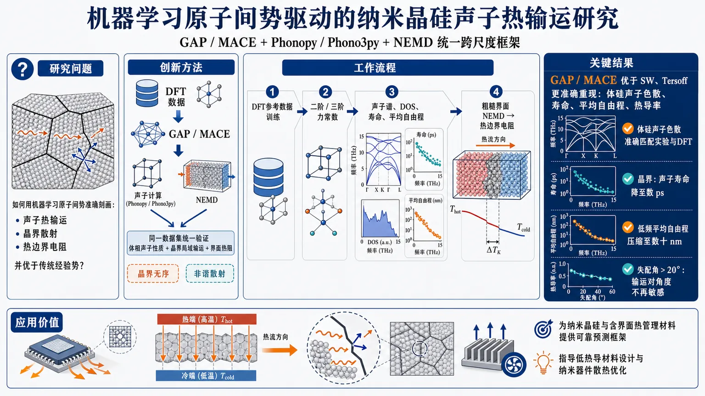
研究问题如何用机器学习原子间势准确刻画纳米晶硅中声子热输运、晶界散射与热边界电阻，并优于传统经验势。创新方法构建 GAP/MACE + Phonopy/Phono3py + NEMD 的统一跨尺度框架，在同一数据集上同时验证体相声子性质、晶界局域输运和界面热阻，抓住晶界无序与非谐散射的关键机制。工作流程DFT参考数据训练GAP/MACE → 计算二阶/三阶力常数与声子谱 → 构建不同失配角晶界并分析DOS、寿命、平均自由程 → 用粗糙界面NEMD提取热边界电阻。关键结果GAP和MACE比SW、Tersoff更准确重现体硅声子色散、寿命、平均自由程和热导率；晶界使声子寿命降至数皮秒、低频平均自由程压缩到数十纳米；失配角超过20°后输运对角度不再敏感。应用价值为纳米晶硅和含界面热管理材料提供可用于预测晶界热输运与界面热阻的可靠计算框架，可指导低热导材料设计和纳米器件散热优化。第一部分：核心概览（Overview）
研究建立了一个由 GAP、MACE、Phonopy/Phono3py 和 非平衡分子动力学（NEMD）组成的统一框架，用于预测体相及纳米晶硅中的声子输运。结果表明，机器学习原子间势能够同时较准确地重现体硅的声子色散、寿命、平均自由程和晶格热导率，并进一步解析晶界失配、局域粗糙度与热边界电阻之间的关系。相较于 Stillinger–Weber 和 Tersoff 势，MLIPs 对三阶力常数和界面非谐散射的描述更可靠。研究的领域价值在于把材料势函数、晶格动力学和界面尺度 NEMD 连接为内部一致的预测体系。不过，所给论文文本在第四章 Figure 10 的图注处截断，尚未提供粗糙度对应的热边界电阻完整数据及第五、六章正文，因此关于界面定量结果和最终结论的判断存在证据边界。
第二部分：结构化快速回顾
《Phonon-Mediated Thermal Transport in Nanocrystalline Silicon Using Machine-Learning Interatomic Potentials》（None，）
背景
纳米尺度下，热输运逐渐偏离傅里叶定律，受到声子散射、界面相互作用、非谐效应、相干性损失和非平衡效应共同控制。单晶硅室温热导率约为 148 W m⁻¹ K⁻¹，晶粒尺寸约 100 nm 的纳米晶硅热导率可降至约 10 W m⁻¹ K⁻¹。晶界对低频声学声子的传播尤其具有抑制作用，晶界透射率在约 2–3 THz 以下仍较高，但在 3–4 THz 以上快速下降。
方法
体硅采用 3 × 3 × 3 常规立方晶胞超胞，共 216 个原子，实验晶格常数为 5.431 Å。GAP 和 MACE 使用统一参考数据集训练，并与 SW、Tersoff 比较。二阶和三阶力常数分别采用 0.01 Å 和 0.03 Å 位移、3 × 3 × 3 位移超胞计算。晶界模型为尺寸 60 × 30 × 30 ų、含 3189 个原子的双晶结构，失配角为 10°、20°、30°、40°。NEMD 模型尺寸为 120 × 30 × 30 ų，含 5350 个原子，界面粗糙度振幅为 1、2、3 Å。
结果
GAP 和 MACE 重现了体硅声子态密度、色散关系及热导率的实验趋势；SW 和 Tersoff 高估光学支频率、声子寿命和热导率。晶界核心区域的声子寿命普遍为数皮秒，低频声子平均自由程被压缩至数十纳米量级。增大失配角主要增强局域无序，但超过 20° 后输运性质对角度的敏感性减弱。
讨论
晶界的主要作用不是简单由几何失配角决定，而是由界面局域原子构型、结构无序和粗糙度共同决定。晶界核心中的声子速度分支在约 2–6 THz 范围内出现合并，并在 6–10 THz 范围内显著展宽，表明发生了模式混合。MLIP 的优势主要来自对二阶、三阶力常数及非谐散射的更一致描述。
局限
所给文本没有提供 GAP/MACE 的完整训练集规模、DFT 计算细节、训练误差、交叉验证误差、热导率具体数值、误差条、重复模拟次数或统计显著性。NEMD 部分在 Figure 10 图注处中断，因此无法从现有材料确认不同粗糙度振幅下的热边界电阻数值、温度梯度拟合区间、热流收敛性和统计不确定度。晶界模型还存在有限尺寸、制备路径和人为粗糙度参数化带来的模型依赖。
结论
在提供的章节中，核心结论是：GAP 和 MACE 相较 SW、Tersoff 能更可靠地描述体硅和晶界区域的声子输运；晶界显著缩短声子寿命和平均自由程，降低局域热导率；当界面已充分无序化后，局域构型比精确失配角更能决定输运。
第三部分：逐章节冷凝解析
I Introduction
纳米器件中的热输运已进入非傅里叶和非平衡主导区间。
当器件尺寸接近声子特征长度时，热流不再适合仅用宏观傅里叶定律描述，而受到声子散射、相干性损失和非平衡效应控制。论文直接指出，*"As device dimensions approach characteristic phonon length scales, classical descriptions of heat conduction based on Fourier’s law progressively lose validity, and thermal transport becomes increasingly governed by phonon scattering, coherence loss, and non-equilibrium effects."*
这意味着热导率不再是与尺寸无关的材料常数，而可能依赖于声子平均自由程、界面间距和局部温度分布。
体硅热输运由声子群速度、寿命和非谐相互作用共同决定。
晶体硅中的热传导可放入晶格动力学和玻尔兹曼输运方程框架中分析。决定单个声子输运贡献的核心量包括群速度、模态寿命和非谐声子–声子相互作用。原文概括为：*"At these length scales, thermal conduction is fundamentally determined by phonon group velocities, mode-dependent lifetimes, and anharmonic interactions."*
因此，只匹配晶格常数、弹性常数或总能量，并不能保证原子间势能够正确预测热输运。
晶界将纳米晶硅的热输运转化为界面受限问题。
纳米结构硅中的晶界、表面和缺陷会破坏晶格周期性，缩短声子平均自由程，并形成界面主导的热输运机制。晶界对不同频率声子的影响高度不均匀：低于约 2–3 THz 的声子仍具有较高透射率，而高于约 3–4 THz 后透射率快速下降。论文将晶界描述为：*"effective phonon scattering centers that disrupt lattice periodicity, alter vibrational spectra, and limit phonon mean free paths."*
纳米晶硅的热导率相较单晶硅降低一个数量级以上。
室温下，单晶硅热导率约为 148 W m⁻¹ K⁻¹；晶粒尺寸约 100 nm 的纳米晶硅约为 10 W m⁻¹ K⁻¹。这一差异主要来源于晶界对体硅中承担主要热流的声学声子进行强烈散射。原文给出的比较是：*"Experimental and computational studies consistently report a reduction in thermal conductivity from approximately 148 W m−1 K−1 in single-crystal silicon at room temperature to approximately 10 W m−1 K−1 in nanocrystalline silicon with grain sizes of around 100 nm."*
晶界不仅造成散射，还重塑局部振动谱。
晶界会引入结构无序、破坏平移对称性并改变局域成键环境，从而产生局域振动态和频率依赖的散射机制。其影响不是单纯降低所有声子模式的寿命，而是改变不同频率、不同空间位置声子的传播和局域化程度。原文指出：*"These alterations give rise to localized vibrational states and frequency-dependent phonon scattering mechanisms."*
传统经验势的主要问题是振动性质和界面可迁移性不足。
SW 和 Tersoff 具有计算效率高、能够较好描述体相结构与弹性性质的优点，但其固定解析形式和参数化策略可能错误预测声子色散、群速度、散射率、声子寿命、晶格热导率和界面热阻。在晶界等偏离理想晶体对称性的环境中，原子的配位数和局域环境发生变化，误差会进一步扩大。原文明确指出：*"their restricted functional forms and parameterization strategies can introduce significant inaccuracies in vibrational properties, including phonon dispersions, group velocities, and scattering rates."*
MLIP 的理论优势在于学习高维势能面。
机器学习原子间势从 DFT 参考数据中学习复杂的多体相互作用、不同局域原子环境和非谐效应，理论上能够以接近第一性原理的精度实现更大尺度模拟。论文将其优势概括为：*"By learning high-dimensional representations of the potential energy surface from density functional theory reference datasets, MLIPs capture many-body interactions, diverse local atomic environments, and anharmonic effects that are difficult to describe using fixed analytical forms."*
GAP 与 MACE 代表两类互补的机器学习势函数。
GAP 使用二体距离描述符和多体 SOAP 描述符表征局域环境；MACE 使用保持物理对称性的等变消息传递神经网络，用于捕捉复杂多体关联。GAP 的关键表示包括 Smooth Overlap of Atomic Positions；MACE 的关键设计是保持旋转等基本对称性。原文分别称 GAP 能够*"characterize local environments"*，MACE 则能够*"preserve fundamental physical symmetries and capture complex many-body correlations."*
研究缺口是 MLIP 对晶界声子散射的系统性验证不足。
已有 MLIP 研究尚未充分说明：相较 SW 和 Tersoff，现代机器学习势究竟会如何改变晶界处的频率分辨散射、声子寿命、平均自由程和热边界电阻。研究因此提出将 MLIP、晶格动力学和 NEMD 结合起来。其研究目标被表述为：*"systematic investigations of phonon transport across grain boundaries using MLIPs remain limited."*
研究设计覆盖体相验证、晶界局域输运和界面热阻。
工作流程包括：
- 用 GAP、MACE、SW、Tersoff 对体硅声子色散和热输运进行基准比较；
- 用二阶和三阶力常数计算声子寿命、平均自由程和晶格热导率；
- 构造失配角为 10°、20°、30°、40° 的对称倾斜晶界；
- 分析晶界核心和近晶界区域的 DOS、声子寿命、平均自由程与群速度；
- 用不同粗糙度的 ML-NEMD 模型计算界面热输运和热边界电阻。
与 Fuji 和 Seko 所采用的扰动 MD 方法相比，该研究强调 NEMD 能够直接处理界面和非平衡过程。原文写道：*"Unlike the perturbed MD approach used by Fuji and Seko, which is primarily suited for evaluating bulk thermal conductivity in homogeneous systems, we employ NEMD simulations to investigate the effects of varying grain-boundary roughness amplitudes and disorder on thermal transport."*
II Bulk Silicon: Model Validation
体硅基准结构由 216 个原子组成。
模型采用金刚石立方结构，使用 Atomsk 生成 3 × 3 × 3 常规立方晶胞超胞，实验晶格参数为 a = 5.431 Å，总原子数为 216，三个方向均施加周期性边界条件。原文具体说明：*"A 3 × 3 × 3 supercell of the conventional cubic unit cell, comprising 216 atoms, was constructed using the experimental lattice parameter a = 5.431 Å."*
GAP 体硅分子动力学采用 1 fs 时间步长和 60 ps 平衡流程。
模拟使用 LAMMPS 与 QUIP/QUIPY 接口，时间步长为 1 fs。体系先进行能量最小化，然后在 300 K 下依次经过：
- NVT 平衡 20 ps；
- 零外压 NPT 松弛 20 ps；
- NVT 再平衡 20 ps。
总平衡时间为 60 ps。这一流程旨在同时稳定温度和体积，并减少初始结构对训练数据的影响。原文明确给出：*"The total equilibration time amounted to 60 ps, comprising an initial NVT stage (20 ps), followed by an NPT relaxation at zero pressure (20 ps), and a final NVT equilibration step (20 ps)."*
训练数据同时包含能量、力和晶体及非晶构型。
GAP 初始模型训练于覆盖晶态和非晶态硅的 DFT 数据；后续统一数据集则从平衡轨迹提取原子构型、能量和原子力，并以 extxyz 格式储存。该数据集意在同时覆盖体相及界面相关局域环境。原文称：*"The GAP model was trained on density functional theory (DFT) data covering crystalline and amorphous configurations."*
GAP 与 MACE 使用相同参考数据集进行公平比较。
比较的四种势函数为：
- 重新训练的 GAP，文件名为 Si_Phonon.xml；
- 基于 MACE 框架的等变神经网络模型；
- Stillinger–Weber；
- Tersoff。
GAP 和 MACE 使用同一参考数据集，以避免因训练数据不同而导致比较偏差。原文为：*"Both GAP and MACE were trained on the same reference dataset, enabling a consistent and unbiased assessment of their predictive performance relative to the empirical models."*
GAP 的 SOAP 超参数被明确设定。
GAP 使用二体距离描述符和多体 SOAP 描述符，具体参数为：
- (nₘₐₓ=7)；
- (lₘₐₓ=6)；
- (ζ=2)；
- 800 个 sparse points；
- 能量和力同时进入训练目标；
- 使用优化后的正则化参数。
这些参数决定局域环境表示的分辨率及稀疏高斯过程的计算规模。原文给出：*"The SOAP representation used nmax = 7, lmax = 6, ζ = 2, and 800 sparse points, with energies and forces included simultaneously in the training objective."*
MACE 训练使用 20% 验证集和最多 200 个 epoch。
MACE 通过 `maceᵣᵤₙₜᵣₐᵢₙ` 工作流训练，验证集比例为 0.20，联合优化能量和力目标，最多训练 200 epochs，并使用 GPU。需要注意的是，提供文本没有给出网络层数、截断半径、通道数、参数量、训练集大小或最终训练/验证误差。原文具体为：*"with a validation fraction of 0.20, optimizing joint energy and force targets for up to 200 epochs on a GPU."*
二阶和三阶力常数由有限位移法获得。
Phonopy 和 Phono3py 用于计算：
- 二阶力常数，对应位移幅度 0.01 Å；
- 三阶力常数，对应位移幅度 0.03 Å；
- 两者均采用 3 × 3 × 3 位移超胞。
所得张量以 HDF5 格式保存，用于后续计算声子色散、寿命和晶格热输运。原文为：*"Second- and third-order force constants were computed using a 3 × 3 × 3 displacement supercell within the Phonopy/Phono3py framework, with displacement amplitudes of 0.01 Å (harmonic) and 0.03 Å (anharmonic)."*
GAP 和 MACE 准确重现体硅的声子态密度。
GAP 与 MACE 均能再现声子 DOS 的总体谱形和带宽，尤其保留了声学支与光学支之间的清晰分离。SW 和 Tersoff 在高频光学区域出现明显偏差，说明其二阶力常数存在不足。原文指出：*"GAP and MACE accurately reproduce the overall spectral shape and bandwidth, including the clear separation between acoustic and optical branches."*
经验势系统性高估光学模频率并扭曲布里渊区边界附近的支曲率。
GAP 和 MACE 沿高对称方向的色散关系与实验数据符合良好；SW 和 Tersoff 则高估光学模频率，并使布里渊区边界附近的分支曲率发生偏移。这类误差会改变群速度，进而影响热导率。原文为：*"The empirical potentials, however, systematically overestimate optical-mode frequencies and slightly distort branch curvature near the Brillouin-zone boundaries."*
MLIP 给出相近且物理一致的声子寿命分布。
GAP 和 MACE 在整个频率范围内预测出相近的寿命分布。声学声子具有有限但适中的寿命，频率升高后由于非谐散射增强，寿命系统性下降。两种 MLIP 对第三阶力常数给出了相互一致的描述。原文写道：*"Both models exhibit physically consistent behavior, with acoustic phonons possessing finite but moderate lifetimes and a systematic reduction toward higher frequencies due to increasing anharmonic scattering."*
SW 和 Tersoff 明显高估低频和中频声学声子的寿命。
经验势预测的低频和中频声学区域寿命明显过长，意味着低估了非谐声子–声子散射强度。过长寿命会导致不现实的长平均自由程，最终造成热导率高估。原文直接说明：*"This overestimation reflects an underprediction of the anharmonic phonon–phonon scattering strength."*
GAP 和 MACE 能正确再现热导率随温度升高而下降的趋势。
图 3(a) 中，GAP 和 MACE 与实验数据符合最好，不仅再现热导率的数量级，也再现随温度升高而下降的趋势。该趋势来源于升温后声子–声子散射增强。SW 和 Tersoff 偏差明显，尤其在低温区，因为低温热流主要由长波长声学声子承担，而经验势对它们的寿命预测过长。原文为：*"Both MLIPs capture not only the correct magnitude of κ but also its temperature dependence, including the systematic decrease with increasing temperature arising from enhanced phonon–phonon scattering."*
累积热导率表明 MLIP 能覆盖从短尺度到数百纳米的热载流子贡献。
在 300 K 下，GAP 和 MACE 的累积热导率—平均自由程曲线与 Li 等人的第一性原理结果及 FDTR 实验结果接近，表明两种 MLIP 能够合理描述热载流子在延伸至数百纳米尺度范围内的贡献。原文称：*"the cumulative curves obtained using GAP and MACE closely match the first-principles results reported by Li et al. and the experimental measurements based on frequency-domain thermoreflectance."*
MACE 预测出合理的温度依赖平均自由程。
图 3(c) 在 100 K、200 K 和 300 K 下计算 MACE 的声子平均自由程。温度升高时，平均自由程系统性缩短；低频声学模式具有最长平均自由程，高频模式经历更强散射。原文为：*"The results exhibit the expected temperature dependence, with mean free paths systematically decreasing as temperature increases due to enhanced anharmonic scattering."*
群速度分布符合声学模高速、光学模低速的物理图像。
GAP 在 300 K 下得到的群速度图显示，低频声学分支具有较大群速度，光学模式群速度显著较小。声子色散、寿命、平均自由程、群速度和宏观热导率之间的一致性，构成了 MLIP 框架内部物理一致性的证据。原文总结为：*"The internal consistency among phonon dispersion, lifetimes, mean free paths, group velocities, and macroscopic thermal conductivity demonstrates that the MLIP-based framework provides a quantitatively reliable and physically coherent description of phonon transport in bulk silicon."*
体相验证支持 MLIP 向晶界和大尺度体系推广。
提供的结果显示，GAP 和 MACE 的精度接近第一性原理计算，同时保留大尺度模拟所需的计算效率。需要严格区分：文本声称“接近第一性原理精度”，但没有提供完整误差百分比或基于同一计算设置的数值对比。原文为：*"the MLIPs achieve accuracy approaching first-principles predictions for both harmonic and anharmonic phonon properties."*
III Nanocrystalline Silicon: Grain Boundary Model
晶界模型采用 3189 原子、四种对称倾斜失配角。
双晶模型尺寸为 60 × 30 × 30 ų，含 3189 个原子。两个晶粒绕 (z) 轴进行大小相等、方向相反的旋转，得到总失配角：
- 10°：两侧分别旋转 (+5°) 和 (-5°)；
- 20°：分别为 (+10°) 和 (-10°)；
- 30°：分别为 (+15°) 和 (-15°)；
- 40°：分别为 (+20°) 和 (-20°)。
晶界法向为 (x) 方向。原文为：*"Four misorientation angles were considered, corresponding to total tilt angles of 10°, 20°, 30°, and 40°."*
模型将晶体学失配与几何粗糙度分开处理。
本章只研究由失配角引起的内禀晶体学无序；更强的几何粗糙度和高度无序界面被放到下一章的 ML-NEMD 中研究。这一拆分有助于区分两类散射来源，但也意味着晶格动力学部分和 NEMD 部分研究的界面状态并不完全相同。原文明确说明：*"This section focuses on crystallographic misorientation as a source of intrinsic interface disorder."*
空间分辨分析将体系划分为近晶界区和晶界核心区。
体系沿输运方向划分为：
- 近晶界区：(9 łeq x łeq 22) Å，约 560 个原子；
- 晶界核心区：(24 łeq x łeq 37) Å，约 550 个原子。
晶界核心位于界面中心附近，近晶界区则用于判断界面散射是否局限在边界附近。原文给出的区域定义为：*"a near-GB region (9 ≤ x ≤ 22 Å, ∼560 atoms) and a GB core region centered at the interface (24 ≤ x ≤ 37 Å, ∼550 atoms)."*
晶界结构经过高温退火以允许局域重排。
每个双晶结构先进行共轭梯度能量最小化，再周期性清除总动量。温度流程为：
- 100 K 初始化；
- 100 K → 300 K，NVT 升温 20 ps；
- 600 K 退火 20 ps；
- 冷却回 300 K，再用 20 ps；
- 在 300 K 下进行 40 ps NVE 生产模拟。
高温退火的目的，是使晶界局部原子构型能够重排；最终 NVE 阶段用于避免恒温器对轨迹的直接干扰。原文为：*"An annealing step was then performed by equilibrating the system at 600 K for 20 ps to facilitate local atomic rearrangements within the grain-boundary region."*
晶界专用 MACE 势由界面局域数据训练。
近晶界区和晶界核心区分别记录原子位置、力和每原子能量，形成代表不同局域环境的数据集；随后训练专门描述晶界构型的 MACE 势，并用于计算晶界声子性质。这里的模型分工是：GAP 用于晶界结构的 MD 准备，MACE 用于 Phonopy/Phono3py 晶格动力学计算。原文指出：*"These data were used to train a MACE-based interatomic potential specifically for grain-boundary configurations."*
晶界核心 DOS 比近晶界区更显著偏离体硅。
四种失配角下，近晶界区的 DOS 均更接近原始晶体硅；晶界核心则在低频和中频范围出现峰展宽及谱权重重新分配。随着失配角增大，这些变化整体更加明显。原文为：*"the near-GB region exhibits a DOS that is closer to pristine crystalline silicon than that of the GB core region."*
晶界主要扰动低频声学模式，并引入局域化和频谱展宽。
体硅中主导热输运的低频声学模在晶界核心受到最强改变，说明长波长声子的相干传播被削弱，并出现部分空间限制。约 15 THz 的高频光学模仍然存在，但峰展宽、强度降低，表明局域散射增强。原文具体写道：*"The low-frequency acoustic modes, which dominate heat transport in bulk silicon, exhibit the strongest changes."*
晶界核心声子寿命降至数皮秒量级。
在 300 K 下，10°、20°、30° 和 40° 晶界核心的声子寿命相较体硅显著降低，并在较宽频率范围内保持数皮秒量级。10° 晶界的寿命略长，但不同角度的总体差异不大。原文为：*"the lifetimes are substantially reduced relative to bulk silicon and remain on the order of a few picoseconds across a broad frequency range."*
失配角超过一定程度后，局域无序比精确角度更重要。
10° 晶界略显有序，具有稍长寿命；但 20°、30° 和 40° 的总体寿命分布相近。这说明界面一旦达到较强结构无序状态，散射强度主要由局域原子无序控制，而不是由失配角本身单独决定。原文总结为：*"once the interfacial region becomes structurally disordered, scattering is governed primarily by local atomic disorder rather than the precise misorientation."*
强散射主要局限于晶界核心。
近晶界区的寿命对失配角依赖很小，而晶界核心的寿命显著降低，说明晶界诱导散射在空间上局域化。原文为：*"the strong scattering observed at the interface is localized within the grain-boundary region."*
晶界核心平均自由程被压缩到数十纳米以内。
对于 10° 和 20° 晶界，在全频率范围内平均自由程均显著低于体硅；低频声学模式仍然拥有最大平均自由程，但也仅为数十纳米量级。频率升高后，平均自由程快速下降。原文写道：*"even these are limited to a few tens of nanometers, substantially smaller than in bulk crystalline silicon."*
10° 晶界的低频声子传播能力略优于高角度晶界。
10° 晶界在低频声学区域具有略大的平均自由程，符合其更有序、更弱散射的结构特征。20° 晶界散射更强；30° 和 40° 晶界与 20° 情形定性相似，进一步增加失配角并未产生显著新的输运机制。原文为：*"The higher-angle grain boundaries (30° and 40°) exhibit qualitatively similar behavior to the 20° case."*
升温会进一步缩短晶界核心平均自由程。
温度升高后，非谐声子–声子散射增强，声子相干性降低，平均自由程系统性缩短。该趋势与体硅中的温度依赖一致，但晶界核心的平均自由程基线已经因结构无序而显著降低。原文指出：*"The temperature dependence further reveals a systematic reduction of mean free paths at elevated temperatures."*
晶界区域的群速度分支发生合并和展宽。
在 300 K 下，晶界核心的声子群速度分布在约 2–6 THz 范围内出现低速和高速分支合并；约 6–10 THz 的高速分支也发生展宽。该变化反映了结构无序导致的声子模式混合与速度重新分配。原文为：*"the low- and high-velocity branches between approximately 2 and 6 THz tend to merge, while the higher-velocity branch between 6 and 10 THz exhibits increased broadening."*
晶界核心的累积热输运在较短平均自由程处饱和。
在 100 K 和 300 K 下，晶界区域累积热导率曲线都在相对短的平均自由程处饱和，意味着长距离传播声子对晶界核心热输运贡献很小。100 K 下饱和位置略偏向更长平均自由程，300 K 下由于非谐散射增强而更快饱和。原文写道：*"In both cases, the cumulative curves saturate at relatively short mean free paths, indicating that long-propagation phonons contribute only weakly to heat transport inside the interface."*
晶界核心热导率远低于体硅且温度依赖较弱。
10°、20°、30° 和 40° 晶界的热导率均明显低于体硅，并在研究温区内仅随温度弱变化。10° 晶界热导率略高，符合其较强的原子相干性。原文为：*"In all cases, the conductivity remains far below that of bulk silicon and varies only weakly with temperature over the investigated range."*
零失配角模型不是理想体硅，而是带有处理历史影响的界面参考。
(0°) 配置没有真正的晶体学失配，但由于其与晶体区域经历了不同的热处理，界面仍存在轻微无序；此外还受到双晶有限尺寸效应影响。因此，(0°) 模型热导率始终低于理想体硅，但高于其他真实晶界模型，且温度依赖仍接近体硅。原文为：*"despite the absence of misorientation, the presence of the interfacial region and finite-size effects in the bicrystal model contribute to additional phonon scattering."*
IV Machine-Learning Non-Equilibrium Molecular Dynamics
ML-NEMD 通过稳态温度跳变提取热边界电阻。
NEMD 在体系两端施加有限温差，建立稳态热流，再由晶界处温度剖面的不连续性提取热边界电阻（thermal boundary resistance, TBR）。该方法同时包含完整的非谐声子–声子相互作用和非平衡效应。原文为：*"The thermal boundary resistance is extracted from the temperature discontinuity at the grain boundary, as obtained from the steady-state temperature profile."*
NEMD 主模型使用体硅数据集训练的 GAP。
LAMMPS 通过 QUIP/QUIPY 接口运行 NEMD，除非特别说明，默认使用 Si_Phonon.xml GAP；部分计算使用 SW 和 Tersoff 作为比较。原文写道：*"Unless otherwise stated, the simulations employed the GAP trained on the bulk silicon dataset (Si_Phonon.xml)."*
NEMD 双晶模型比晶格动力学模型更长。
体系尺寸为 120 × 30 × 30 ų，含 5350 个原子，全部方向施加周期性边界条件。晶界位于约 (x=60) Å 处，并垂直于热输运方向。增加输运方向长度有助于在界面两侧形成用于温度梯度拟合的体相区域。原文为：*"Nanocrystalline silicon bicrystals containing symmetric tilt grain boundaries were constructed in a simulation cell of dimensions 120 × 30 × 30 ų, comprising 5350 atoms."*
界面粗糙度通过 12 Å 厚区域中的正弦位移场控制。
粗糙度只施加于总厚度为 12 Å 的晶界薄层，使用沿输运方向变化的正弦原子位移场，设置三个振幅：
- (A=1) Å；
- (A=2) Å；
- (A=3) Å。
相邻晶体区域保持有序，因此该设计试图隔离局域界面几何对热阻的影响。原文为：*"This procedure modifies only the local interfacial geometry while preserving crystalline order in the adjoining bulk regions."*
粗糙双晶经过高温分阶段平衡。
结构先进行共轭梯度能量最小化，再经历：
- 100 K 保持 20 ps；
- 100 K → 300 K 升温 20 ps；
- 300 K → 350 K 升温 20 ps；
- 350 K 保持 40 ps。
总 NVT 处理时间为 100 ps，之后将平衡结构写入 restart 文件，用作 NEMD 生产模拟初态。原文具体为：*"a staged NVT protocol consisting of a 100 K hold for 20 ps, a ramp from 100 K to 300 K over 20 ps, a ramp from 300 K to 350 K over 20 ps, and a final 350 K hold for 40 ps."*
所给文本不足以完成第四章和后续章节的定量解析。
提供内容在 Figure 10 图注的短语 *"Schematic of the non-equilibrium molecular dynamics setup used to compute interfacial thermal transport across a symmetric 20° silicon g"* 处中断。因而缺少以下关键证据：
- 热源和冷源的具体位置、恒温器类型和温度；
- 稳态热流的数值；
- 温度剖面的拟合区间；
- 不同粗糙度 (A=1、2、3) Å 对应的 TBR；
- GAP、SW、Tersoff 的定量比较；
- NEMD 运行时长、采样间隔和重复次数；
- 第五章、结论章节的完整原始标题与正文；
- 统计误差、置信区间或显著性检验。
因此，现有文本只能确认方法设计和研究变量，不能严谨报告第四章后半段的实验性数值结论。
V Thermal Boundary Resistance / 后续章节
所给论文内容没有包含这一章的原始标题或正文。根据引言中的研究目标，可以确认其拟分析晶界热边界电阻及其对粗糙度、无序程度和原子间势的敏感性，但不能从现有文本推导具体数值或排序关系。任何关于 TBR 随 (A=1、2、3) Å 的单调性、SW/Tersoff 与 GAP 的相对偏差、拟合误差或统计显著性的陈述，都缺乏所给材料支持。
VI Conclusions / 结论章节
所给论文内容没有包含第六章正文。引言末尾仅说明：*"The main conclusions are summarized in Sec. VI."*
因此，能够可靠提取的结论仅限于前述章节已经明确呈现的结果：MLIP 对体硅声子输运的描述优于 SW 和 Tersoff；晶界核心具有数皮秒量级声子寿命、数十纳米量级低频平均自由程以及显著降低的热导率；较高失配角之间的差异弱于局域结构无序的影响。
第四部分：深度理解与语言支持
术语解析
Phonon-mediated thermal transport
可译为“声子介导的热输运”，强调热能主要由晶格振动量子，即声子，承载和传播。它不同于电子热输运或辐射热输运。*“phonon-mediated”* 不仅表示“存在声子”，还暗示热导率可以分解为声子群速度、寿命、占据数和散射机制的综合结果。
Thermal boundary resistance
“热边界电阻”描述热流跨越两个材料区域或同一材料内部界面时产生的额外温度降。其核心关系通常可写作：
[
RK=fracΔ TGBJ,
]
其中 (Δ TGB) 是晶界两侧温度跳变，(J) 是热流密度。它不是晶界区域本身的体热导率；前者描述跨界面传热障碍，后者描述区域内部的热传导能力。论文分别讨论了晶界核心局域热导率和界面热边界电阻，二者不能混为一谈。
Phonon lifetime
“声子寿命”是某个声子模在发生散射前维持其准粒子状态的特征时间。寿命越短，通常意味着散射率越高。它不是声子传播距离；平均自由程还要结合群速度：
[
Łambdałₐₘbdₐsim vłₐₘbdₐτłₐₘbdₐ.
]
因此，晶界可以通过降低寿命、降低群速度或同时改变二者来压低平均自由程。
Grain-boundary roughness
“晶界粗糙度”在这里不是随机表面粗糙度的直接实验测量，而是通过晶界薄层中的正弦原子位移场人为构造的几何扰动，振幅为 1、2、3 Å。因此，它代表一种可控的模型参数，物理含义是界面形貌起伏强度，而不是完整描述真实多晶材料中所有类型的化学无序、空位、杂质和非平衡缺陷。
Internally consistent description
“内部一致的描述”表示同一套 MLIP 所产生的二阶力常数、三阶力常数、声子色散、群速度、寿命、平均自由程和热导率之间相互匹配。它不等同于“每一个量都已被实验完全证明正确”。内部一致性是必要条件，但还需要独立实验数据、交叉验证和不确定性分析来证明绝对准确性。
疑难概念解释
为什么声子寿命过长会导致热导率过高？
在晶格动力学框架中，声子对热导率的贡献可以粗略理解为：
[
κ sim sumłₐₘbdₐ Cłₐₘbdₐvłₐₘbdₐ²τłₐₘbdₐ,
]
其中 (Cłₐₘbdₐ) 是模态热容，(vłₐₘbdₐ) 是群速度，(τłₐₘbdₐ) 是寿命。若 SW 或 Tersoff 低估非谐散射，就会高估 (τłₐₘbdₐ)，进而高估平均自由程 (Łambdałₐₘbdₐ) 和热导率。即使势函数能够正确描述静态晶格结构，也可能因为三阶力常数不准确而错误预测热输运。
为什么晶界失配角增大后输运变化反而变弱？
低失配角晶界通常仍保留一定晶格关联性。随着失配角增加，局域结构无序迅速增强；当界面已经进入强散射状态后，声子相干性已被大幅破坏，继续增加失配角不会线性增加散射率。此时决定输运的控制变量从“几何失配角”转为“局域原子排列、键长分布、配位环境和界面粗糙度”。因此，20°、30° 和 40° 结果相近并不矛盾。
为什么晶界核心热导率对温度不敏感？
体硅的热导率具有明显温度依赖，是因为升温会增强声子–声子散射。但晶界核心中，结构无序和界面散射已经把声子平均自由程压缩到很短范围。此时继续增加体相非谐散射的边际影响较小，热流已经主要受界面结构限制，所以局域热导率对温度的变化弱于体硅。这属于从本征非谐散射主导向结构界面散射主导的转变。
为什么零失配角配置仍然比理想体硅热导率低？
(0°) 双晶并不等同于无限大、完美平移对称的单晶。该模型仍具有人工界面、不同热处理历史和有限输运尺寸。即使没有晶体学取向差异，界面区域也可能有局域重排和残余无序，从而产生额外散射。因此，(0°) 配置只能作为“近体相界面参考”，不能直接当作理想体硅的数值替代。
为什么需要同时使用 Phono3py 和 NEMD？
Phono3py 基于谐和非谐力常数，能够提供频率分辨的色散、寿命、群速度和平均自由程，适合解释“哪些声子在散射”。NEMD 则直接施加温度梯度并计算稳态热流，能够包含非平衡效应和复杂界面几何。前者具有较强的模态分辨能力，后者更接近实际界面热流测量；两者结合能够把微观散射机制与宏观界面热阻关联起来。
第五部分：创新评估与关联
创新性判断
核心创新是建立了跨尺度且内部一致的 MLIP 输运工作流。
贡献不只是“用机器学习势替代经验势”，而是将：
- DFT 数据驱动的 GAP/MACE；
- 二阶、三阶力常数；
- Phonopy/Phono3py；
- 频率分辨声子性质；
- 晶界局域结构；
- 粗糙界面 ML-NEMD；
- 热边界电阻提取；
放入同一研究框架中。这样可以同时检验势函数对体相和界面的适用性。原文将目标概括为：*"establishing a unified framework for assessing the predictive capability of MLIPs for interfacial thermal transport."*
解决了经验势在非理想局域环境中的迁移性问题。
SW 和 Tersoff 在体相结构及弹性性质方面计算高效，但在高频光学色散、非谐散射强度和声子寿命方面存在系统误差。该研究用统一数据集比较 GAP/MACE 与经验势，展示了经验势“静态性质可用、输运性质可能失真”的具体表现，尤其是：
- 光学模频率高估；
- 声子寿命过长；
- 平均自由程不现实地偏长；
- 晶格热导率系统性高估。
这比仅报告某一种 MLIP 的热导率预测更具有诊断价值。
将晶界局域振动谱与界面宏观输运联系起来。
晶界分析不是只计算一个总热导率，而是考察了 DOS、声子寿命、平均自由程、群速度和累积热输运。由此得到较清晰的机制链条：
[
局域结构无序
i̊ghtarrow
DOS 展宽与模式混合
i̊ghtarrow
声子寿命降低
i̊ghtarrow
平均自由程缩短
i̊ghtarrow
晶界热导率降低.
]
这种从原子结构到声子模态再到热输运的连接，是研究的主要科学价值。
指出“局域无序”可能比“名义失配角”更具决定性。
10°、20°、30°、40° 四种结构显示，10° 略有差异，而 20° 以上总体行为趋同。该结果提示，使用单一失配角作为晶界热阻预测变量可能过于粗糙；真实预测需要考虑晶界核心的局域配位、键长、自由体积、粗糙度和重构状态。
与近年相关工作的关系应谨慎表述。
根据所给文本，能够明确识别的比较对象主要是：
- SW 和 Tersoff 经验势；
- Fuji 和 Seko 的 perturbed MD 方法；
- Li 等人的第一性原理累积热导率；
- FDTR 实验数据。
但文本没有提供完整参考文献题目、发表年份、具体模型性能或近 2–5 年相关工作的系统综述。因此，不能严谨断言该研究相较所有近年工作的绝对优越性。较稳妥的判断是：其新颖性主要位于方法整合、晶界局域声子解析以及粗糙度可控的 ML-NEMD 界面分析，而不是提出一种全新的 MLIP 架构或新的声子输运基本理论。
关键不足与可验证性风险
训练数据与模型误差披露不足。
提供内容没有给出训练样本量 (n)、能量 RMSE、力 RMSE、测试集构成、DFT 泛函、截断半径、MACE 网络规模或不确定性估计。没有这些信息，难以判断“接近第一性原理精度”是定量结论还是定性描述。
热输运结果缺少明确数值。
多处使用“accurate”“good agreement”“significantly reduced”“far below”等表述，但未给出图中具体数据、误差条、相对误差百分比或统计置信区间。特别是热边界电阻部分，核心定量结果位于未提供的截断文本之后。
晶界模型的有限尺寸效应不可忽略。
体相模型只有 216 个原子，晶界局部区域约 550–560 个原子，NEMD 输运方向长度为 120 Å。这些尺寸可能限制低频长波长声子的采样，并使平均自由程、累积热导率和热边界电阻对周期边界条件敏感。论文自身也承认结果可能受到 *“finite-size effects”* 影响。
粗糙度参数化不等同于真实纳米晶界。
使用正弦位移场改变几何形貌具有可控性，但真实晶界还包含多种重构、空位、杂质、局域应力和晶粒尺寸分布。因而 (A=1、2、3) Å 的结果更适合解释为一种理想化粗糙度扫描，而不是对所有实验纳米晶硅界面的直接预测。
尚不能确认 MLIP 对热边界电阻的最终优势。
体相验证明确支持 GAP/MACE 优于 SW/Tersoff，但 NEMD 中 GAP、SW 和 Tersoff 的界面热阻比较结果尚未出现在所给文本中。界面部分的“定量准确性”需要等待缺失章节中的热流、温度跳变、误差估计和实验对照数据。
-
04
📊 含图深析
📄 摘要：与第一性原理计算相比，机器学习原子间势现在已经能够高精度再现体相材料的能量、力和应力。对缺陷的描述仍然是一个挑战，因为在缺陷中，配位环境和电子数会偏离完美参考结构中的情况。我们发现，当前一代基础机器学习原子间势不能描述半导体 Sb₂Se₃ 的缺陷物理。我们引入全局缺陷电荷嵌入，以区分不同电荷态的成键特征。我们进一步采用一种多保真方法，将低成本的半局域交换-关联泛函参考数据与高质量的非局域杂化泛函能量和力相结合，后者能够很好地描述缺陷能量景观的细微特征。由此得到的具备缺陷描述能力的力场可以找到稳定结构构型，并预测与直接量子力学计算定量一致的缺陷热力学，而计算成本仅为其一小部分。
📖 英文原文
arXiv:2603.05238v3 Announce Type: replace Abstract: Machine learning interatomic potentials (MLIPs) can now reproduce the energy, forces and stresses of bulk materials with high accuracy compared to first-principles calculations. The description of imperfections, where coordination environments and electron counts deviate from those found in pristine reference structures, remains a challenge. We find that the current generation of foundation MLIPs do not describe the defect physics of the semiconductor Sb2Se3. We introduce global defect charge embeddings that distinguish the bonding characteristics of different charge states. We further employ a multi-fidelity approach that combines low-cost (semi-local exchange-correlation functional) reference data with high-quality (non-local hybrid functional) energies and forces that describe well the subtleties of the defect energy landscape. The resulting defect-capable force fields can find stable structural configurations and predict defect thermodynamics in quantitative agreement with direct quantum mechanical calculations, at a fraction of the computational cost.
💡 亮点：工作针对Sb2Se3带电点缺陷，提出带有全局缺陷电荷嵌入的多保真机器学习原子间势。模型显式区分缺陷电荷与成键环境，回应基础势函数在非理想配位和电子数变化下的失效问题。摘要未报告训练规模、模型误差或扩散动力学结果，但该方向直接连接带电缺陷结构采样和可迁移势能面建设。
🔬 与我们研究方向的关系
📐 方法要点：方法上，这篇工作可归入热力学知情 ML、机器学习势、自由能采样、CALPHAD/团簇展开。从摘要能确认的线索包括：第一性原理标注与结构优化, 热力学自由能、相稳定与有限温度建模，以及缺陷、畴壁、成核和开关动力学, 晶体结构、功能材料和结构—性质关系对应的结构或物理量。若迁移到团队流程，应采用“在 DFT 能量/力/应力之外加入跨温度构型、相对自由能、熵或热膨胀信息；用主动学习补采相变、畴壁和相竞争区域，再用热力学积分、MC 或有限温度 MD 验证”的分层验证，而不是只比较单点能量或单一回归误差。还需核对原文的训练数据规模、损失函数、边界条件和误差分解，才能判断其是否适合团队的材料模拟任务。
🔗 相关工作关联：它与五位研究人员已有工作的直接连接是：热力学知情 ML、机器学习势、自由能采样、CALPHAD/团簇展开已经出现在团队的方向画像中，可对应到HfO₂ 基铁电、二维滑移铁电、钙钛矿和磁性氧化物。与传统只做 0 K formation energy/静态势垒的工作相比，这里更应关注缺陷、畴壁、成核和开关动力学, 晶体结构、功能材料和结构—性质关系在温度、缺陷、应变或外场下的变化；摘要没有给出的模型细节不作延伸判断。这种联系应通过同一材料体系上的独立基准和跨分布测试确认，不能仅凭方法名称或期刊来源下结论。
💡 对你方向的启示：对当前研究最具体的启示不是泛泛地“使用 ML”，而是把该文的热力学知情 ML、机器学习势、自由能采样、CALPHAD/团簇展开嵌入现有材料模拟链：先在HfO₂ 基铁电、二维滑移铁电、钙钛矿和磁性氧化物中选择一个已有 DFT 数据基础的体系，按“在 DFT 能量/力/应力之外加入跨温度构型、相对自由能、熵或热膨胀信息；用主动学习补采相变、畴壁和相竞争区域，再用热力学积分、MC 或有限温度 MD 验证”补充训练/验证集，再比较《带电点缺陷的多保真机器学习原子间势》对应模型对相稳定、极化/磁序、缺陷或动力学指标的改进。若结果只在训练分布内有效，应通过跨温度、跨应变、跨缺陷浓度和跨超胞测试检查可迁移性。第一步可以选取团队已有的 HfO₂、二维磁体、半导体缺陷或钙钛矿数据做小样本试验，再决定是否扩大到生产级计算。
📖 展开分析 + 配图
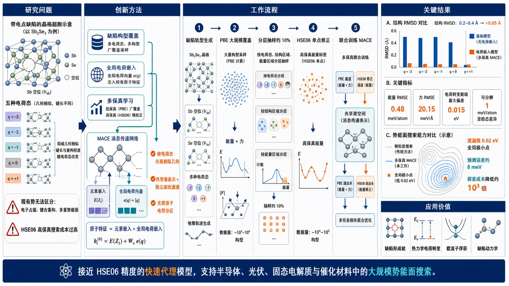
研究问题现有基础机器学习原子间势主要依赖局域几何和元素信息，无法区分同一缺陷在不同总电荷下的电子占据、键合重构与多重势能面；同时，HSE06高保真搜索成本过高。研究要解决的是：如何在缺陷数据稀缺且电荷态显著改变结构的情况下，准确识别带电点缺陷基态并高效重建高保真势能面。创新方法提出“缺陷构型覆盖＋全局电荷嵌入＋多保真学习”的组合架构：将超胞总电荷映射为可学习向量并注入所有原子特征，使消息传递网络按电荷态分离相似几何构型；同时用大量PBE数据密集覆盖构型空间，仅对约10%的分层抽样构型计算HSE06，通过共享潜表示和独立读出通道学习PBE到HSE06的能量修正。关键Aha点是：全局电荷条件化同时表达几何无关的电荷能级偏移和电荷依赖的成键力，不需要不唯一的原子电荷分区。工作流程以Sb₂Se₃中的Sb、Se空位为对象，生成覆盖多个电荷态、键畸变和亚稳构型的缺陷弛豫轨迹；先用低成本PBE对大规模构型进行能量和力计算，再从不同电荷态、结构区域及能量区域分层抽取约10%构型进行HSE06单点修正；将总电荷编码为全局嵌入，结合元素嵌入输入MACE消息传递网络，联合训练PBE与HSE06双通道；训练后扫描候选势能面、搜索全局极小点，并预测基态结构、形成能、热力学电荷转变能级和构型坐标图。关键结果四种基础模型在V_Sb(1)的q=-3至+1五个电荷态上均无法稳定识别DFT基态，结构RMSD通常为0.2–0.4 Å；电荷嵌入模型将能量RMSE降至0.48 meV/atom、力RMSE降至20.15 meV/Å，所有基态结构RMSD均低于0.05 Å。热力学电荷转变能级最大偏差仅0.015 eV，可分辨低至1 meV/atom的亚稳态差异；多保真模型发现标准粗粒度搜索遗漏的低0.02 eV全局极小点，预测误差约8 meV，并将势能面探索成本降低约三个数量级。应用价值为带电缺陷的结构搜索和缺陷热力学计算提供接近HSE06精度的快速代理模型，显著降低大规模势能面扫描、全局极小点搜索和构型坐标图计算的成本。该方法可支持半导体、光伏、固态电解质和催化材料中的缺陷形成能、电荷转变、载流子俘获及缺陷动力学研究，并为构建跨材料、跨电荷态的缺陷基础模型提供架构和数据策略。第一部分：核心概览（Overview）
该研究针对带电点缺陷机器学习原子间势（MLIP）中的两个核心障碍：缺陷构型数据稀缺，以及标准局域描述符无法区分不同总电荷。以 Sb₂Se₃ 中 Sb、Se 空位为案例，研究引入全局电荷嵌入，并结合 PBE 大规模低保真数据与 HSE06 稀疏高保真数据。模型将基态结构误差降至 0.05 Å以内，热力学电荷转变能级最大偏差仅 0.015 eV，同时将势能面搜索成本降低约 3个数量级。其学术地位在于为从完美晶体基础模型走向带电缺陷基础模型提供了明确架构与数据策略。
第二部分：结构化快速回顾
《Multi-fidelity Machine Learning Interatomic Potentials for Charged Point Defects》（None，）
背景
- 点缺陷决定半导体、光伏、固态电解质和催化材料的关键性质。
- 带电缺陷具有多个电荷态，同一缺陷在不同电荷下可能拥有完全不同的局域键合与基态结构。
- 现有基础 MLIP 主要依赖局域原子环境，缺少总电荷信息；高精度 HSE06 势能面搜索又计算昂贵。
方法
- 用 Sb₂Se₃ 中 (VSb₍₁₎) 和 (VSₑ₍₁₎) 作为测试体系。
- 基准比较四种基础模型：MACE-MH-1、MACE-MPA-0、GRACE-2L-OMAT、MatterSim v1 5M。
- 构建带全局缺陷电荷嵌入的 MACE 模型。
- 将总电荷 (qₜₒₜ) 映射为可学习向量，并加入原子种类嵌入。
- 采用多保真训练：大量收集 PBE 数据，约 10% 构型计算 HSE06 单点修正。
结果
- 四种基础模型均无法在五个电荷态 (q=-3) 至 (+1) 上稳定识别 (VSb₍₁₎) 的 DFT 基态。
- 基础模型结构 RMSD 通常为 0.2–0.4 Å，超过可靠识别阈值 0.1 Å。
- 电荷嵌入模型在五个电荷态上的平均误差为：
- 能量 RMSE：0.48 meV/atom
- 力 RMSE：20.15 meV/Å
- 基态结构 RMSD 均小于 0.05 Å。
- 热力学转变能级最大偏差为 0.015 eV。
- 多保真模型发现了标准粗粒度搜索遗漏的、低 0.02 eV 的全局极小点，并将其预测误差控制在 8 meV。
- 势能面探索成本降低约 三个数量级。
讨论
- 基础模型失败不只是因为缺少带电样本，也因为模型表示本身无法区分不同电荷态。
- 全局电荷嵌入使结构相似但电子占据不同的构型在潜空间中分离。
- PBE 提供高覆盖率，HSE06 提供缺陷能量景观中关键的精细修正。
局限
- 验证体系集中于 Sb₂Se₃，没有证明跨材料、跨化学空间泛化。
- 训练模型针对固定缺陷超胞尺寸。
- 未给出完整训练集规模、独立材料外推测试、误差置信区间或统计显著性检验。
- 模型训练使用未进行有限尺寸静电修正的 DFT 原始能量；修正需在模型外处理。
- 全HSE06训练仍依赖完整高保真弛豫轨迹，多保真策略虽显著降低成本，但高保真抽样设计仍影响可靠性。
结论
- 仅在体相数据上训练的基础 MLIP 不足以描述带电或中性缺陷。
- 缺陷环境覆盖 + 全局电荷条件化 + 多保真学习构成了带电缺陷 MLIP 的有效组合。
- 该方法能够近似 HSE06 缺陷势能面，并支持结构搜索、热力学转变能级和构型坐标图等高成本任务。
第三部分：逐章节冷凝解析（Section-by-Section Condensing）
原文可辨识的主要章节标题为：Abstract、Limitation of foundation models for charged defects、Charged defect prediction with global embeddings、Improved accuracy and efficiency via multi-fidelity training、Conclusion、Data Availability Statement、Acknowledgments。提供文本未包含完整补充信息章节标题及全部 SI 内容，因此无法对未显示的原始章节逐字复原。
Abstract
缺陷物理超出完美晶体基础模型的训练分布
基础 MLIP 在体相材料的能量、力和应力预测中已经接近第一性原理精度，但缺陷涉及配位数变化、对称性破缺和电子数变化。核心判断是：*"The description of imperfections, where coordination environments and electron counts deviate from those found in pristine reference structures, remains a challenge."*
- 研究对象为半导体 Sb₂Se₃。
- 直接发现现有基础模型无法可靠描述其缺陷物理：*"the current generation of foundation MLIPs do not describe the defect physics of the semiconductor Sb₂Se₃."*
- 问题不是一般的数值误差，而是缺陷能量景观、重构结构和电荷依赖性整体失真。
全局缺陷电荷嵌入解决电荷态不可辨识问题
总电荷被编码为全局可学习表示，用于区分不同电荷态的键合特征。关键设计是：*"We introduce global defect charge embeddings that distinguish the bonding characteristics of different charge states."*
- 同一化学缺陷在不同 (q) 下可对应不同势能面。
- 传统只使用元素种类和局域几何的描述符会把多个势能面压缩成一个能量映射。
- 全局电荷嵌入不需要显式原子电荷划分，因此避免了电荷分区歧义。
多保真训练兼顾覆盖率与理论精度
训练同时使用低成本半局域泛函数据和高质量非局域混合泛函数据：*"We further employ a multi-fidelity approach that combines low-cost (semi-local exchange-correlation functional) reference data with high-quality (non-local hybrid functional) energies and forces."*
- PBE 负责密集覆盖构型空间。
- HSE06 负责修正缺陷能量面的细微差异。
- 目标是让 MLIP 以远低于直接 HSE06 搜索的成本逼近高保真势能面。
预测精度达到定量缺陷建模要求
模型能够找到稳定结构并预测缺陷热力学：*"The resulting defect-capable force fields can find stable structural configurations and predict defect thermodynamics in quantitative agreement with direct quantum mechanical calculations, at a fraction of the computational cost."*
- 结构 RMSD：≤ 0.05 Å。
- 缺陷形成能和电荷转变能级：约 0.02 eV 精度。
- 多保真搜索成本：降低约 10³。
Limitation of foundation models for charged defects
点缺陷结构搜索是电子结构计算中的主要瓶颈
缺陷性质依赖于正确的基态原子结构；结构错误会传递至形成能、迁移势垒、载流子俘获率和降解反应。原文将问题概括为：*"Accurate predictions of these properties rely fundamentally on identifying the correct ground-state atomic structure."*
- 复杂缺陷往往存在多个相互竞争的亚稳构型。
- 能量差可能处于极窄窗口内，不能依靠单一初始结构弛豫。
- 混合泛函能更准确描述缺陷电子结构，但全面搜索成本过高。
基准测试包含四种基础等变力场
测试模型为 MACE-MH-1、MACE-MPA-0、GRACE-2L-OMAT、MatterSim v1 5M，并与 PBE-DFT 比较。原文明确写道：*"we first benchmarked four state-of-the-art equivariant atomistic force fields"*。
- 选择 PBE 作为参考，是为了匹配基础模型的训练理论层级。
- 测试缺陷为 (VSb₍₁₎)。
- Sb₂Se₃ 为 Pnma 空间群，具有 2种不等价 Sb 位点和3种不等价 Se 位点。
- (VSb₍₁₎) 具有五个电荷态：(q=-3,-2,-1,0,+1)。
ShakeNBreak 用于系统探索多重势能面
不同电荷态根据有效过剩电荷生成不同数量的近邻键畸变初始结构。为保证公平性，基础模型和 DFT 使用完全相同的初始构型：*"The same initial configurations were used for both foundation model and DFT relaxations in each charge state to ensure a fair comparison."*
- (q=-3) 的有效过剩电荷为零，因此额外使用中性态初始结构以扩大搜索范围。
- 该设计避免把初始构型差异误判为模型能力差异。
基础模型在五个电荷态上均未稳定找到正确基态
结构 RMSD 通常为 0.2–0.4 Å，明显高于可靠结构识别阈值 0.1 Å。原文结论为：*"none of the tested models consistently identifies the DFT-predicted ground-state geometry ... across all charge states."*
- GRACE-2L-OMAT 在 (q=-2) 的偶合结果较好。
- MACE-MH-1 在 (q=-1) 的结果较好。
- 这些成功不是跨电荷态稳定的物理预测，而是误差抵消造成的偶然匹配。
中性 Sb 空位也会发生基础模型无法描述的共价重构
中性 (VSb₍₁₎) 移除 Sb 后产生三个空穴，驱动三个 Se 原子形成共价三聚体。关键几何细节为：
- Se 三聚体键角约 110°。
- 基础模型通常保持高对称、类体相结构。
- 或者落入键角约 99° 的虚假局域极小点。
原文给出的物理解释是：*"removing an Sb atom introduces three holes that drive a covalent reconstruction into a Se trimer with a bond angle of 110° through electron sharing."*
模型缺少缺陷电子环境导致领域间隙
基础模型主要由闭壳层体相结构训练，倾向于把空位理解为纯几何空洞，而不是能驱动局域重构的电子活性中心。原文表述为：*"they tend to treat point defects as steric voids instead of electronically active centers that drive local reconstruction."*
- “领域间隙”指训练数据中的体相分布与缺陷构型分布不重叠。
- 缺陷中的断键、成键、局域空穴和电子占据变化没有在训练集中得到充分表示。
- 因此即使电荷态为中性，模型也会失败。
局域性假设无法表达总电荷差异
标准 MLIP 只把总能量视为原子位置和元素种类的函数，不显式输入总电荷。原文总结为：*"standard MLIPs represent the total energy as a function of atomic positions and species without incorporating any charge information."*
- 具有相似局域几何的不同电荷态会获得近似相同的描述符。
- 但它们的电子占据、键合强度和能量不同。
- 结果是多个电荷依赖的 PES 被映射到单一能量面。
完全电离态仍然失败说明问题不只是局域重构
(q=-3) 是闭壳层、局域电荷较少、结构重构较弱的状态，但所有模型的 RMSD 仍超过 0.1 Å。这一结果排除了“只有强重构缺陷才难预测”的解释。
- 模型在 (q=-3) 略有改善，因为其偏好低畸变、接近体相环境的结构。
- 但没有总电荷描述符，模型无法区分“由电荷导致的弛豫”和“完美晶体附近的几何变化”。
- 原文指出：*"all predictions still exceed the 0.1 Å threshold."*
平坦势能面反映错误力而非单纯结构偏差
模型系统性预测出比 DFT 更平坦的 PES：*"the models systematically predict flatter PESs compared to DFT, indicating incorrect forces."*
- 势能面曲率由力和二阶响应决定。
- 平坦化意味着模型不仅找错最低点，也错误估计了构型扰动的恢复力。
- 因而通过基础模型极小点启动后续 DFT 弛豫，也不能保证回到真实 DFT 基态。
带电缺陷需要两类额外信息
可靠的带电缺陷 MLIP 至少需要：
- 覆盖对称性破缺、亚稳态和多种键重构的缺陷训练数据；
- 显式编码电子状态的模型结构。
原文直接概括为：*"reliable descriptions of charged point defects require two additional factors."*
- 仅给基础模型加入总电荷、但不提供缺陷训练数据，仍不能恢复 DFT 基态。
- 这说明“数据问题”和“表示问题”是相互独立的必要条件。
Charged defect prediction with global embeddings
训练数据同时覆盖多个电荷态和缺陷构型
模型采用联合训练方式，输入包含多个电荷态的 DFT 缺陷构型，满足“数据覆盖”和“电荷条件化”两个要求。关键描述为：*"The training dataset includes defect configurations across multiple charge states simulated by DFT."*
- 具体演示体系为 (VSₑ₍₁₎)。
- 训练覆盖五个电荷态。
- 数据包含键畸变构型的完整弛豫轨迹，以更充分覆盖 PES，而不是只保留最终极小点。
全局电荷向量加入原子种类嵌入
架构基于 MACE v0.3.15。总电荷 (qₜₒₜ) 被映射为可学习向量，并加入每个原子的元素嵌入：*"The total charge (qₜₒₜ) is mapped to a learnable vector that is added to the atomic species embeddings."*
- 同一个全局电荷向量被注入所有原子特征。
- 这种设计不要求人为决定电荷属于哪个原子。
- 额外计算复杂度和模型复杂度较低。
电荷通过相互作用路径影响构型能量和力
电荷嵌入进入消息传递层，参与学习相互作用能 (Eᵢₙₜₑᵣ)。其物理作用是影响电荷依赖的键合与结构重构：*"it propagates through the message-passing layers, enabling the network to learn charge-dependent interaction energies (Eᵢₙₜₑᵣ)."*
- 节点特征 (hᵢ⁽t⁾) 由边嵌入 (mathbf eᵢⱼ) 与邻居特征共同更新。
- 电荷信息因此能够改变原子间相互作用。
- 原子力由相互作用能对坐标的导数给出，能够响应电荷诱导的几何变化。
独立嵌入能量负责几何无法表达的电荷能级偏移
模型从初始电荷增强嵌入中直接读出几何无关项 (Eₑₘb)：*"a geometry-independent energy contribution (Eₑₘb), capturing the charge-state energy shifts that are not represented by local atomic geometry."*
总能量为：
[
Eₜₒₜ=E₀₊Eᵢₙₜₑᵣ+Eₑₘb,
]
其中：
[
E₀₌sumᵢ Eᵣₑf(Zᵢ₎.
]
由于 (E₀) 和 (Eₑₘb) 不依赖原子坐标：
[
mathbf Fᵢ₌₋fracpartial Eₜₒₜpartial mathbf rᵢ
=-fracpartial Eᵢₙₜₑᵣpartial mathbf rᵢ.
]
- (Eᵢₙₜₑᵣ) 决定几何相关的力和势能面形状。
- (Eₑₘb) 允许不同电荷态在局域几何近似相同时拥有不同总能量。
- 这避免了强迫局域几何描述符承担电子占据的全部信息。
电荷嵌入使潜空间按电荷态分离
PCA 分析显示，无电荷嵌入时，不同电荷态在二维描述符空间中显著重叠；前两个主成分解释 79.5% 方差。原文指出：*"configurations from different charge states overlap significantly in the 2D descriptor space."*
加入全局电荷嵌入后：
- 不同电荷态形成清晰的电荷特异性聚类。
- 同时仍保留对局域结构差异的敏感性。
- 这意味着模型获得了“电荷身份”和“构型变化”两个相互补充的坐标。
模型达到接近 HSE06 的能量和力精度
与 HSE06 测试数据相比，五个电荷态平均误差为：
- (RMSE_E=0.48 meV/atom)
- (RMSE_F=20.15 meV/Å)
原文将该结果归因于电荷嵌入实现了跨电荷态准确预测：*"This separation allows the model to learn charge-dependent energy offsets for structurally similar configurations."*
- 该结果是平均值，不能等同于每个电荷态均具有完全相同误差。
- 提供文本未列出各电荷态分别的 RMSE、最大误差或误差分布。
结构预测误差低于可靠识别阈值
模型对 (VSₑ₍₁₎) 五个电荷态均找到了 HSE06 基态，全球 RMSD 均小于 0.05 Å，低于 0.1 Å 的可靠识别阈值：*"the charge-embedded model successfully identifies the HSE06 reference ground states for all cases, with global RMSD values within 0.05 Å."*
- 该精度足以区分局域空位环境中的细微电荷依赖重构。
- 与基础模型常见的 0.2–0.4 Å 偏差形成显著对比。
模型能够解析 1 meV/atom 量级的亚稳态差异
中性 (VSₑ₍₁₎) 的稳定构型与亚稳构型能量差可低至约 0.1 eV/59原子超胞，即 1–2 meV/atom。模型仍能区分其中低至 1 meV/atom 的差异：*"It correctly distinguishes meta-stable configurations with energy differences as small as 1 meV/atom."*
- 这对缺陷结构搜索非常关键，因为错误排序几个 meV 就可能把亚稳态误判为基态。
- 该结果说明评估不能只看平均能量 RMSE，还必须看极小点排序和势能面拓扑。
热力学转变能级与 HSE06 高度一致
电荷转变能级最大偏差为 0.015 eV：*"with a maximum deviation of only 0.015 eV."*
- 转变能级由不同电荷态缺陷形成能的相对差异决定。
- 因此该指标同时检验了跨电荷态能量零点、基态结构和电荷依赖重构。
- 摘要给出的总体表述为约 0.02 eV，正文给出的最大偏差为 0.015 eV；后者更具体。
显式原子电荷或静电模型并非自动更优
QET、MACE-POLAR 和 MACE-LES 的额外比较显示，它们对 DFT 缺陷 PES 的描述精度低于全局电荷嵌入模型：*"explicitly modeling atomic charge distribution or electrostatics ... gives a less accurate description of the DFT defect PESs."*
- 缺陷中的原子电荷分区可能并不唯一。
- “显式建模电荷”与“准确表达缺陷势能面”不是同义命题。
- 全局总电荷条件化在该案例中提供了更稳健、低复杂度的替代路径。
Improved accuracy and efficiency via multi-fidelity training
全HSE06轨迹训练是规模化应用瓶颈
带电荷嵌入的单一高保真模型虽然准确，但依赖完整的 HSE06 弛豫轨迹。原文明确指出：*"its reliance on full relaxation trajectories at the hybrid functional level presents a significant bottleneck for large-scale applications."*
- HSE06 的高成本限制了构型空间的密集采样。
- 仅计算少量候选极小点可能错过真正的全局极小点。
传统粗粒度搜索可能改变势能面拓扑
常见工作流先用 HSE06 的 (Γ)-点采样探索，再对候选极小点使用收敛 k 点进行高精度计算。但这种策略假定粗粒度 PES 与高保真 PES 具有相同极小点结构。原文指出：*"this approach assumes that the coarse-level search adequately reproduces the shape of HF PESs and its global minimum."*
- (Γ)-点近似可能改变不同构型的相对能量。
- 候选筛选一旦漏掉真实盆地，后续高精度弛豫无法自行恢复该盆地。
- 因此“先粗搜、后精修”不一定具有全局可靠性。
多保真数据以PBE密集采样、HSE06稀疏修正
策略使用大量收敛 k 点的 PBE 数据，并通过分层抽样选取约 10% 构型计算 HSE06 单点：*"the MF approach samples the PES densely at the low-cost PBE level while incorporating a sparse subset (∼10%) of HF HSE06 corrections determined using stratified sampling."*
- PBE 提供广泛构型覆盖。
- HSE06 不需要对每个构型进行完整弛豫。
- 分层抽样的目的，是让高保真点覆盖不同电荷态、结构区域和能量区域，而非随机集中于单一盆地。
共享潜表示与双读出通道学习泛函差异
多保真模型使用共享潜在表示，并设置独立的 PBE 与 HSE06 读出通道：*"The model learns the functional-dependent difference ((Δ)) from HSE06 single-point energies on selected PBE structures through a joint training framework with a shared latent representation and separate ... readout channels."*
- 低保真通道学习 PBE 势能面。
- 高保真通道学习 PBE 到 HSE06 的能量修正。
- 这比直接从稀疏 HSE06 数据学习完整复杂势能面更节省样本。
标准粗搜索漏掉了真正的全局极小点
在中性 (VSₑ₍₁₎) 中，HSE06-(Γ) 点搜索只找到亚稳极小点；多保真模型发现了一个低 0.02 eV 的不同全局极小点。原文描述为：*"the MF-trained model discovers a distinct global minimum 0.02 eV lower in energy."*
- 该低能盆地来自泛函依赖的能量修正。
- 收敛 k 点的混合泛函 DFT 随后验证该构型。
- DFT 与 MLIP 预测极小点的结构差异仅 8 meV 对应的能量尺度。
多保真模型将势能面探索成本降低约三个数量级
综合搜索成本约降低 (10³)：*"this MF approach dramatically reduces the computational cost of comprehensive PES exploration by approximately three orders of magnitude."*
- 训练完成后，模型可作为 HSE06 PES 的快速替代物。
- 优势主要来自推理阶段能以极低成本密集扫描构型空间。
- 成本优势并不意味着高保真计算消失，而是将其限制在训练阶段的稀疏校正点。
构型坐标图可以被高效重建
载流子俘获的 CCD 要求沿连接两个电荷态基态的连续反应坐标，密集计算两种电荷态能量，并解析曲率与交叉区域。多保真模型能够高精度重现 HSE06 CCD：*"Our MF model reproduces HSE06 reference CCDs with high precision at negligible inference cost."*
- CCD 需要同时评估多个电荷态，因此天然检验电荷条件化能力。
- 该方法可扩展到有限温自由能、发光线形和缺陷动力学。
- 提供文本没有给出 CCD 的具体最大能量偏差，因此不能进一步量化其误差。
Conclusion
基础模型对带电缺陷属于分布外失效
研究将带电点缺陷视为完美晶体基础模型的 out-of-distribution 场景：*"we evaluate their generalizability to the out-of-distribution regime of charged point defects."*
- 失败覆盖所有电荷态，而不是只发生在某一个极端电荷状态。
- 中性缺陷也会因电子驱动重构而超出体相训练分布。
电荷嵌入和缺陷数据共同恢复HSE06级缺陷物理
在固定缺陷超胞尺寸下，缺陷数据加全局电荷嵌入可获得：
- 基态结构 RMSD：≤ 0.05 Å
- 缺陷形成能和热力学转变能级：约 0.02 eV
- HSE06 参考级别的能量景观重现
原文总结为：*"training on defect configurations with global charge embeddings at a fixed defect supercell size can recover ground-state structures to within 0.05 Å."*
多保真模型兼具全局搜索能力和计算效率
多保真方案不仅修正能量精度，还发现传统工作流漏掉的全局极小点，并作为大构型空间的快速代理模型：*"We further introduce a multi-fidelity training scheme that not only discovers global minima missed by standard defect screening workflows, but also provides a computationally efficient surrogate model."*
- 该贡献超越单纯的回归误差降低。
- 真正的评价标准是是否改善缺陷结构排序、基态识别和性质计算可达性。
研究目标是缺陷基础模型而非单一材料模型
最终愿景是扩展到跨材料、跨电荷态和跨理论层级的缺陷基础模型：*"our work lays the groundwork for future defect foundation models that generalize across materials, charge states, and levels of theory."*
- 当前证据主要来自 Sb₂Se₃。
- “奠定基础”是方法学外推目标，不等同于已经证明跨材料泛化。
Data Availability Statement
数据与模型计划公开
计划公开：
- Sb₂Se₃ 带电缺陷的 DFT 参考数据；
- 训练集和测试集划分；
- 训练好的 MACE 模型权重；
- 结构搜索与热力学转变能级预测脚本。
原文表述为：*"The datasets generated and analysed during the current study will be made available upon publication."*
- 提供文本显示的是“发表后提供”，不代表当前已经可下载。
- MACE 软件本身为开源项目，地址为 `https://github.com/ACEsuit/mace`。
第四部分：深度理解与语言支持
术语解析
Foundation MLIP
“基础模型”并不表示专门为缺陷设计，而是指利用大规模、多材料体相数据训练、试图跨化学空间泛化的通用 MLIP。语境中的关键限制是：体相泛化能力不能自动转化为缺陷泛化能力，因为缺陷构型属于训练分布之外。
Global charge embedding
“全局电荷嵌入”是把整个周期超胞的总电荷 (qₜₒₜ) 编码成一个可学习向量，再注入所有原子的初始特征。它表达的是体系级条件变量，不是每个原子的局域电荷。与原子电荷分区模型相比，它避免回答“额外电荷究竟属于哪个原子”这一不适定问题。
Potential energy surface（PES）
PES 是原子坐标到势能的高维映射。基态是全局最低点，亚稳态是局域最低点，势垒与反应路径取决于曲率和鞍点。模型即使能量平均误差很小，也可能因为局部曲率错误而错过低能盆地；因此结构搜索比单纯 parity plot 更严格。
Multi-fidelity learning
多保真学习不是简单把 PBE 和 HSE06 数据混合训练，而是利用二者之间的系统性关系。这里共享潜表示学习结构信息，PBE 通道描述广泛低成本 PES，HSE06 通道学习高低理论层级之间的 (Δ) 修正。
Thermodynamic transition level
电荷转变能级描述缺陷从电荷态 (q) 转变为 (q') 时，两种电荷态形成能相等的费米能级位置。它是相对能量指标，因此对不同电荷态之间的能量偏移、结构弛豫和电子结构误差都敏感。最大偏差 0.015 eV 说明跨电荷态能量排序相当准确。
疑难查证
为什么总电荷嵌入可以影响力，但几何无关能量项不能影响力？
模型能量分解为：
[
Eₜₒₜ=E₀₊Eᵢₙₜₑᵣ+Eₑₘb.
]
(Eₑₘb) 依赖电荷态，但不依赖原子坐标，因此：
[
fracpartial Eₑₘbpartial mathbf rᵢ=0.
]
它可以改变不同电荷态的总能量基准，却不能直接产生力。真正改变结构重构的，是电荷嵌入进入消息传递层后对 (Eᵢₙₜₑᵣ) 的影响。换言之，模型同时需要：
- 一个几何无关项，表示电子占据引起的整体能量偏移；
- 一个几何相关项，表示电荷改变键合后产生的力。
为什么“显式原子电荷模型”不一定优于全局电荷嵌入？
点缺陷中的电荷通常具有离域、杂化和周期边界依赖性。不同电荷分区方案可能给出不同的原子电荷，但可观测总能量和力是唯一的。若强行学习不唯一的原子电荷标签，模型可能学习到分区方法的伪影；还可能出现电荷向体相非物理扩散。全局总电荷是定义明确的量，因此在该案例中更稳定。
为什么中性缺陷仍然需要电荷信息？
“中性”只意味着超胞总电荷为零，并不意味着缺陷没有电子重排。Sb 空位移除 Sb 后会产生空穴，空穴可局域在邻近 Se 上并驱动成键重构。因此中性缺陷仍可能具有强烈的电子结构变化。这里的电荷嵌入既用于区分不同总电荷态，也帮助模型学习缺陷电子状态与结构之间的关联。
为什么低保真PBE搜索可能漏掉HSE06全局极小点？
如果两个构型 (A) 和 (B) 在 PBE 下能量接近，但 HSE06 修正满足：
[
Δ EHSE₀₆(A)-Δ EHSE₀₆(B)<0,
]
则 HSE06 可能反转二者排序。传统流程若只在 PBE 或 HSE06-(Γ) 点下筛选候选，就可能从一开始排除真实 HSE06 全局极小点。多保真模型的作用是学习这种构型依赖的泛函差异，而不是假设低保真与高保真势能面具有相同拓扑。
为什么RMSE很小仍需进行结构搜索验证？
平均能量和力误差是统计量，不能保证极小点排序正确。缺陷体系中亚稳态差异可低至 1 meV/atom；即使平均 RMSE 为 0.48 meV/atom，少数关键构型仍可能排序错误。因此研究同时报告：
- 基态结构 RMSD；
- 亚稳态能量差；
- 热力学转变能级；
- 全局极小点是否被搜索到；
- CCD 势能面是否被重现。
第五部分：创新评估与关联
创新性判断
创新一：把“缺陷数据不足”和“电荷不可辨识”拆分为两个独立问题
过去 2–5 年的相关工作大致沿两条路线发展：
- 训练中性缺陷或单一电荷态模型；
- 引入原子电荷、长程静电或电荷平衡机制。
该研究明确证明，单独增加总电荷输入但没有缺陷构型数据仍会失败；单独增加缺陷数据但不编码电荷也会把多个 PES 混为一谈。真正有效的组合是：
[
defect-enriched data+global charge conditioning.
]
创新二：全局电荷条件化替代复杂原子电荷分配
相对于 QEq、长程描述符、极化模型和原子电荷建模，全局电荷嵌入具有三个特点：
- 输入量定义明确：总超胞电荷；
- 不依赖不唯一的原子电荷分区；
- 计算和架构开销较低。
关键贡献不是首次提出“电荷可以作为模型输入”，而是将其具体嵌入 MACE 等变消息传递架构，同时通过 (Eₑₘb) 和 (Eᵢₙₜₑᵣ) 分别表达电荷能量偏移与电荷依赖相互作用。
创新三：多保真学习被用于缺陷势能面的全局搜索，而非只做性质回归
多保真 ML 在材料和分子建模中已有先例，但这里的实际目标更严格：发现低保真搜索会遗漏的高保真全局极小点。
具体证据包括：
- 约 10% 的 PBE 构型获得 HSE06 修正；
- 标准 HSE06-(Γ) 搜索只找到亚稳态；
- 多保真模型发现低 0.02 eV 的新全局极小点；
- 收敛 k 点 HSE06 验证差异为 8 meV；
- 总搜索成本降低约 10³。
因此，多保真策略在这里承担的是势能面拓扑校正和候选结构恢复，而不只是降低平均预测误差。
创新四：评价指标覆盖缺陷科学真正关心的物理量
研究没有停留在能量、力 parity plot，而是同时检验：
- 多电荷态基态结构；
- 亚稳构型能量排序；
- 缺陷形成能；
- 热力学转变能级；
- 构型坐标图；
- 全局极小点是否能被搜索发现。
这使方法评价从“回归准确率”推进到“能否支持实际缺陷物理推断”。
解决的前人未解决问题
根据提供的参考文献脉络，过去工作尚未同时解决以下问题：
- 一个统一模型同时区分多个缺陷电荷态；
- 在固定缺陷体系中准确重现电荷依赖结构重构；
- 在接近 HSE06 的理论层级上解析 meV/atom 级亚稳态差异；
- 用低保真密集数据恢复高保真全局势能面；
- 以可承受成本构建 CCD 等需要连续势能面采样的性质。
原文将这一空白概括为：*"a single model capable of simultaneously distinguishing multiple charge states and subtle energy differences between competing defect configurations has not yet been demonstrated."*
新颖性的边界
尚未证明跨材料泛化
所有定量结果主要来自 Sb₂Se₃，涉及 (VSb₍₁₎) 和 (VSₑ₍₁₎)。因此不能直接推出模型已经适用于：
- 氧化物、卤化物或二维材料；
- 间隙、反位和复合缺陷；
- 多种超胞尺寸；
- 磁性缺陷或自旋多重态；
- 缺陷浓度变化显著的体系。
固定超胞尺寸限制了有限尺寸外推
总电荷、周期镜像相互作用和补偿背景都依赖超胞尺寸。模型在固定超胞中获得的 (Eₑₘb) 未必能直接外推到其他尺寸。有限尺寸静电修正没有被纳入训练能量，而是在模型外处理，这对形成能和转变能级的跨超胞比较尤其重要。
缺少完整统计不确定度分析
提供文本未报告：
- 训练集和测试集的具体 (n)；
- 不同随机种子下的方差；
- bootstrap 置信区间；
- 统计显著性 (P) 值；
- 高保真抽样比例变化带来的误差曲线；
- 外部材料测试集。
因此，数值结果证明了案例有效性，但尚不足以给出普适性的统计保证。
结论性的创新判断
该研究最重要的创新不是单独提出一种新的神经网络层，而是建立了一个面向带电缺陷的完整方法学闭环：
[
多电荷缺陷数据
i̊ghtarrow
全局电荷条件化
i̊ghtarrow
PBE密集采样
i̊ghtarrow
HSE06稀疏校正
i̊ghtarrow
高保真势能面搜索.
]
在提供的 2026 年预印本文本范围内，这一闭环解决了现有基础 MLIP 无法同时处理电荷态区分、局域重构、精细能量排序和高成本全局搜索的问题；但其跨材料、跨超胞和跨自旋泛化能力仍需要独立验证。
-
05
📊 含图深析
📄 摘要：随着亮度提高且计算需求接近可用资源的极限，现代粒子物理实验对高保真探测器模拟的需求不断增加。深度生成模型已成为传统蒙特卡罗模拟的有前景替代方案，近期进展从大语言模型（LLM）和 next-token 预测范式中汲取灵感。在这项工作中，我们提出了一种用于量能器的可泛化基础模型（FM），该模型建立在 next-token Transformer 骨干之上，旨在支持跨材料、粒子种类和探测器配置的模块化适配。我们的方法将专家混合预训练与参数高效微调策略相结合，以实现受控的、可加性的模型扩展，并避免灾难性遗忘。一个预训练骨干被训练用于生成跨多种吸收体材料的电磁簇射，而新材料则通过添加并调优轻量级专家模块来纳入。向新粒子类型的扩展通过参数高效微调和模块化词汇表实现，从而保持基础模型的完整性。这一设计使得随着新的模拟数据集可用，模型能够高效、渐进地整合知识，而这是真实探测器开发工作流程中的一项关键需求。此外，我们证明，在既定 LLM 优化流程下，next-token 量能器模型在计算上可与标准生成方法竞争。这些结果确立了 next-token 架构作为通向可扩展、物理感知的量能器基础模型以及未来高能物理实验的一条可行路径。
📖 英文原文
Modern particle physics experiments face an increasing demand for high-fidelity detector simulation as luminosities rise and computational requirements approach the limits of available resources. Deep generative models have emerged as promising surrogates for traditional Monte Carlo simulation, with recent advances drawing inspiration from large language models (LLM) and next-token prediction paradigms. In this work, we introduce a generalizable foundation model (FM) for calorimetry built on next-token transformer backbones, designed to support modular adaptation across materials, particle species, and detector configurations. Our approach combines mixture-of-experts pre-training with parameter-efficient fine-tuning strategies to enable controlled, additive model expansion without catastrophic forgetting. A pre-trained backbone is trained to generate electromagnetic showers across multiple absorber materials, while new materials are incorporated through the addition and tuning of lightweight expert modules. Extensions to new particle types are achieved via parameter-efficient fine-tuning and modular vocabularies, preserving the integrity of the base model. This design enables efficient, incremental knowledge integration as new simulation datasets become available, a critical requirement in realistic detector-development workflows. In addition, we demonstrate that next-token calorimeter models are computationally competitive with standard generative approaches under established LLM optimization procedures. These results establish next-token architectures as a viable path toward extensible, physics-aware FMs for calorimetry and future high-energy physics experiments.
💡 亮点：工作将下一标记预测变换器、混合专家和参数高效微调用于量热器响应生成。模型目标是跨材料、粒子种类和探测器配置复用基础表示，而不是材料性质预测。摘要没有给出模型参数量、训练数据规模或定量精度，因此对凝聚态研究的直接信息有限，但其模块化迁移思路可借鉴到多材料原子模拟。
🔬 与我们研究方向的关系
📐 方法要点：方法上，这篇工作可归入磁性机器学习势、自旋 Hamiltonian、自旋—晶格动力学和非共线磁结构。从摘要能确认的线索包括：蒙特卡洛统计采样，以及磁性、自旋以及自旋—晶格耦合, 晶体结构、功能材料和结构—性质关系对应的结构或物理量。若迁移到团队流程，应采用“训练集同时覆盖原子位移和自旋构型，显式标注交换、各向异性、DMI 或自旋力；用自旋 MD/MC 与 DFT 自旋能差验证温度、应变和缺陷下的磁序稳定性”的分层验证，而不是只比较单点能量或单一回归误差。还需核对原文的训练数据规模、损失函数、边界条件和误差分解，才能判断其是否适合团队的材料模拟任务。
🔗 相关工作关联：它与五位研究人员已有工作的直接连接是：磁性机器学习势、自旋 Hamiltonian、自旋—晶格动力学和非共线磁结构已经出现在团队的方向画像中，可对应到CrI₃/CrSBr 等范德华磁体、反铁磁/交替磁材料、磁性氧化物。与传统只做 0 K formation energy/静态势垒的工作相比，这里更应关注磁性、自旋以及自旋—晶格耦合, 晶体结构、功能材料和结构—性质关系在温度、缺陷、应变或外场下的变化；摘要没有给出的模型细节不作延伸判断。这种联系应通过同一材料体系上的独立基准和跨分布测试确认，不能仅凭方法名称或期刊来源下结论。
💡 对你方向的启示：对当前研究最具体的启示不是泛泛地“使用 ML”，而是把该文的磁性机器学习势、自旋 Hamiltonian、自旋—晶格动力学和非共线磁结构嵌入现有材料模拟链：先在CrI₃/CrSBr 等范德华磁体、反铁磁/交替磁材料、磁性氧化物中选择一个已有 DFT 数据基础的体系，按“训练集同时覆盖原子位移和自旋构型，显式标注交换、各向异性、DMI 或自旋力；用自旋 MD/MC 与 DFT 自旋能差验证温度、应变和缺陷下的磁序稳定性”补充训练/验证集，再比较《基于混合专家与参数高效微调的量热学通用基础模型》对应模型对相稳定、极化/磁序、缺陷或动力学指标的改进。若结果只在训练分布内有效，应通过跨温度、跨应变、跨缺陷浓度和跨超胞测试检查可迁移性。第一步可以选取团队已有的 HfO₂、二维磁体、半导体缺陷或钙钛矿数据做小样本试验，再决定是否扩大到生产级计算。
📖 展开分析 + 配图
研究问题如何构建一个能够跨越不同吸收体材料、粒子类型和探测器配置进行泛化，并能随新模拟数据持续扩展的量能器生成基础模型，同时避免为每种新情况全面重训和灾难性遗忘？创新方法将量能器电磁簇射转化为序列化 next-token 预测任务，以 Transformer 作为生成骨干；通过混合专家（MoE）让模型共享主干并学习不同材料的簇射规律，遇到新材料时只新增轻量专家模块；遇到新粒子时结合参数高效微调（PEFT）与模块化词表进行适配，实现模型能力的可加式扩展。工作流程输入吸收体材料、粒子类型、探测器配置及对应模拟数据；先将电磁簇射表示为可生成的序列或 token，利用 next-token Transformer 与 MoE 进行多材料预训练；接收新材料时添加并训练专属专家，接收新粒子时通过模块化词表和 PEFT 更新少量参数；最后生成目标条件下的量能器电磁簇射模拟结果，并将新知识保留在扩展模块中。关键结果预训练主干能够生成多种吸收体材料中的电磁簇射；新材料无需全面重训即可通过轻量专家接入，新粒子可通过 PEFT 和模块化词表扩展，同时保持基础模型完整性；在采用既有 LLM 优化流程后，next-token 量能器模型的计算效率可与标准生成模型竞争，并支持持续、增量式知识整合。应用价值为高能物理提供可持续扩展的量能器仿真平台，能够降低新材料、新粒子和新探测器配置接入的训练成本与时间，减少重复建模和灾难性遗忘，帮助实验团队快速适应探测器设计变化，并提升大规模模拟的计算效率。核心概览
论文提出面向量能器模拟的可泛化基础模型，结合 next-token Transformer、专家混合与参数高效微调，支持跨材料、粒子和探测器配置的增量扩展，属于高能物理中的深度生成式探测器仿真方向。
方法要点
- 以 next-token Transformer 为骨干，将电磁簇射生成建模为序列式预测问题。
- 采用 mixture-of-experts（MoE）进行预训练，使主干模型学习多种吸收体材料上的电磁簇射。
- 面向新材料，通过新增并训练轻量专家模块实现模块化扩展。
- 面向新粒子类型，采用参数高效微调（PEFT）与模块化词表进行适配。
- 设计目标是以可加式扩展持续整合新数据，同时避免灾难性遗忘。
- 使用既有的 LLM 优化流程，使 next-token 量能器模型具备可竞争的计算效率；具体优化设置摘要未详述。
关键结果
- 预训练主干能够覆盖多种吸收体材料的电磁簇射生成。
- 新材料可通过加入轻量专家模块纳入模型，而非全面重训整个模型。
- 新粒子类型可通过参数高效微调和模块化词表扩展，并保持基础模型完整性。
- 该框架支持随新模拟数据到来进行高效、增量式知识整合。
- 在采用既定 LLM 优化方法时，next-token 量能器模型在计算上可与标准生成模型竞争；具体比较对象、指标和数值摘要未详述。
- 作者据此认为，next-token 架构可作为可扩展、具物理感知能力的量能器基础模型路径。
创新性判断
- 可能的新颖点在于：将 LLM 式 next-token 建模系统性地引入量能器基础模型，并将其定位为可持续扩展的探测器仿真平台，而不只是单任务生成器。
- 将 MoE 预训练与 PEFT 结合，用于按材料、粒子类型和配置进行模块化增量适配，可能是其核心系统设计贡献。
- 强调通过添加专家模块和模块化词表来抑制灾难性遗忘，契合真实探测器研发中数据与需求持续演化的工作流。
- 其相对既有工作的实际领先程度仍不确定：摘要未给出基线方法、保真度评测、泛化测试范围、模型规模或消融实验细节。
-
06
📊 含图深析
📄 摘要：预训练机器学习原子间势，即所谓通用模型或基础模型，为原子模拟提供了有吸引力的起点，但如果没有额外参考数据（微调），它们对材料特异性可观测量的精度往往仍然有限。在这里，我们系统量化需要多少第一性原理数据才能将通用模型转化为具有从头算精度的材料特异性势，并询问微调是否必然优于从头训练。我们比较了五种通用 MLIP 框架，即 MACE-MP-0、SevenNet-0、GRACE-1L-OAM、MatterSim-v1-5M 和 ORB-v2，涵盖七个化学多样体系，并纳入稀有和反应性事件。仅用 10 个 AIMD 衍生构型进行微调对所研究体系而言是不够的；200 个构型在有利情况下可以成功，但结果仍强烈依赖体系。相比之下，2000 个 AIMD 构型构成了稳健的默认选择，能够产生较低的力和能量误差，并再现目标材料特异性可观测量。对 AIMD 轨迹进行中等密度子采样可将所需轨迹长度减少十倍，而模型质量损失很小。在相同数据集上从头训练与 MACE 和 SevenNet 的朴素微调具有竞争力，并且往往略微更准确，而 GRACE 需要更多数据。MoS₂ 中硫空位跃迁的能量剖面显示，低轨迹层面误差并不能保证正确的反应剖面，这凸显了可观测量层面验证的必要性。最后，我们表明，在数据稀缺情形下，对独立训练模型进行平均可以在不增加第一性原理成本的情况下改善预测。综合来看，这些结果为将有限 AIMD 参考数据转化为可靠的材料特异性 MLIP 提供了实用指南，使其可用于接近 DFT 精度的纳秒时间尺度模拟。
📖 英文原文
arXiv:2608.14899v1 Announce Type: new Abstract: Pretrained machine-learning interatomic potentials, so-called universal or foundation models offer an appealing starting point for atomistic simulations, but their accuracy for material-specific observables often remains limited without additional reference data (fine-tuning). Here, we systematically quantify how much first-principles data are required to convert universal models into ab initio-accurate material-specific potentials, and ask whether fine-tuning is necessarily preferable to training from scratch. We compare five universal MLIP frameworks, MACE-MP-0, SevenNet-0, GRACE-1L-OAM, MatterSim-v1-5M and ORB-v2, across seven chemically diverse systems incorporating rare and reactive events. Fine-tuning on only 10 AIMD-derived configurations is insufficient for the investigated systems; 200 configurations succeed in favorable cases, but the outcome remains strongly system-dependent. By contrast, 2000 AIMD configurations constitute a robust default, yielding low force and energy errors and reproducing the target material-specific observables. Moderately dense sub-sampling of the AIMD trajectory reduces the required trajectory length tenfold with little loss in model quality. Training from scratch on the same datasets is competitive with, and often slightly more accurate than, naive fine-tuning for MACE and SevenNet, whereas GRACE requires more data. The energy profile for a sulfur-vacancy jump in MoS₂ reveals that low trajectory-level errors do not guarantee a correct reaction profile, highlighting the need for observable-level validation. Finally, we show that averaging independently trained models improves predictions in scarce-data regimes at no additional first-principles cost. Together, these results provide practical guidelines for converting limited AIMD reference data into reliable material-specific MLIPs for nanosecond-timescale simulations at near-DFT accuracy.
💡 亮点：工作比较五种通用机器学习势在材料专用微调中的数据效率，并检验微调是否始终优于从头训练。核心数据来源是第一性原理分子动力学轨迹，评价重点是材料特异性观测量而非仅体相能量。摘要未给出最小样本量、误差曲线或具体材料结论，但对团队构建可迁移势能面具有直接方法价值。
🔬 与我们研究方向的关系
📐 方法要点：方法上，这篇工作可归入机器学习 Hamiltonian、带电缺陷形成能、缺陷扩散和非辐射复合。从摘要能确认的线索包括：分子动力学与有限温度轨迹, 第一性原理标注与结构优化，以及缺陷、畴壁、成核和开关动力学, 晶体结构、功能材料和结构—性质关系对应的结构或物理量。若迁移到团队流程，应采用“把电荷态、有限尺寸修正、局域配位和缺陷迁移路径纳入标注；用小超胞 DFT+U/GW 或缺陷形成能基准校准，再扩展到大超胞和有限温度扩散”的分层验证，而不是只比较单点能量或单一回归误差。还需核对原文的训练数据规模、损失函数、边界条件和误差分解，才能判断其是否适合团队的材料模拟任务。
🔗 相关工作关联：它与五位研究人员已有工作的直接连接是：机器学习 Hamiltonian、带电缺陷形成能、缺陷扩散和非辐射复合已经出现在团队的方向画像中，可对应到SiO₂、SiC、GaN、卤化物钙钛矿、HfO₂ 氧空位和二维半导体。与传统只做 0 K formation energy/静态势垒的工作相比，这里更应关注缺陷、畴壁、成核和开关动力学, 晶体结构、功能材料和结构—性质关系在温度、缺陷、应变或外场下的变化；摘要没有给出的模型细节不作延伸判断。这种联系应通过同一材料体系上的独立基准和跨分布测试确认，不能仅凭方法名称或期刊来源下结论。
💡 对你方向的启示：对当前研究最具体的启示不是泛泛地“使用 ML”，而是把该文的机器学习 Hamiltonian、带电缺陷形成能、缺陷扩散和非辐射复合嵌入现有材料模拟链：先在SiO₂、SiC、GaN、卤化物钙钛矿、HfO₂ 氧空位和二维半导体中选择一个已有 DFT 数据基础的体系，按“把电荷态、有限尺寸修正、局域配位和缺陷迁移路径纳入标注；用小超胞 DFT+U/GW 或缺陷形成能基准校准，再扩展到大超胞和有限温度扩散”补充训练/验证集，再比较《从第一性原理分子动力学轨迹高效构建材料专用机器学习势》对应模型对相稳定、极化/磁序、缺陷或动力学指标的改进。若结果只在训练分布内有效，应通过跨温度、跨应变、跨缺陷浓度和跨超胞测试检查可迁移性。第一步可以选取团队已有的 HfO₂、二维磁体、半导体缺陷或钙钛矿数据做小样本试验，再决定是否扩大到生产级计算。
📖 展开分析 + 配图
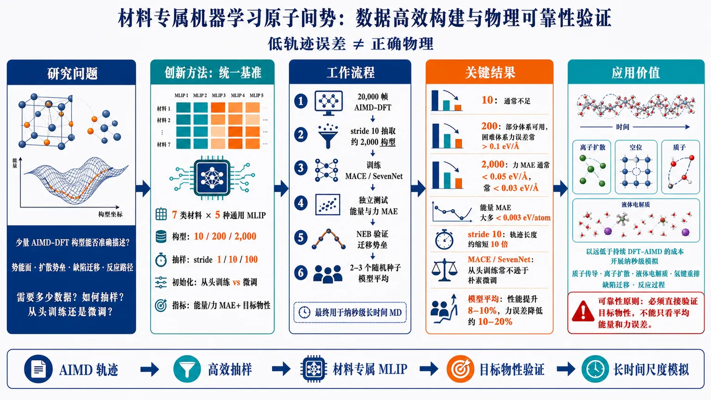
研究问题在仅使用少量 AIMD-DFT 构型的条件下，如何构建能够准确描述特定材料势能面、扩散势垒、缺陷迁移和反应路径的材料专属机器学习原子间势？研究进一步比较：需要多少训练构型、应采用何种轨迹抽样密度，以及从头训练是否优于通用模型微调。创新方法建立“数据规模—抽样间隔—模型初始化—目标物性”统一基准：在七类材料和五种通用 MLIP 上比较 10、200、2,000 个 AIMD 构型、stride 1/10/100、从头训练与微调，并用 MoS₂ 硫空位 NEB 能量曲线检验真实迁移势垒。核心 Aha！是证明低轨迹 MAE 不等于正确物理，且 MACE/SevenNet 用约 2,000 个构型从头训练常不逊于微调；多个随机种子模型平均还能在不增加 DFT 数据的情况下提升性能。工作流程针对目标材料开展 AIMD-DFT 模拟，获得约 20,000 帧覆盖局部化学环境的轨迹；以 stride 10 抽取约 2,000 个带能量和力标签的构型；分别训练或微调 MACE、SevenNet 等 MLIP；在独立测试构型上计算能量与力 MAE；进一步用 NEB 检验缺陷迁移或反应能量曲线，并通过 2–3 个不同随机种子模型平均降低预测方差；最终将模型用于纳秒级长时间分子动力学模拟。关键结果10 个构型通常不足以定义可靠的材料专属势能面；200 个构型仅在部分有利体系中实用，困难体系的力误差仍常超过 0.1 eV/Å；2,000 个构型通常使力 MAE 低于 0.05 eV/Å、常低于 0.03 eV/Å，能量 MAE 大多低于 0.003 eV/atom。stride 10 可将所需 AIMD 轨迹长度缩短约十倍；MACE 和 SevenNet 从头训练常优于朴素微调。模型平均 2–3 个模型通常带来 8–10% 性能提升，并使力误差降低约 10–20%。应用价值为材料专属 MLIP 的数据准备提供可执行的成本—精度准则：小体系可从约 20,000 帧 AIMD 中抽取 2,000 个构型，训练可进行数纳秒模拟的势能模型，从而以远低于持续 DFT-AIMD 的成本研究质子传导、离子扩散、液体电解质、氢键重排、缺陷迁移和反应过程。该研究同时建立了可靠性原则：必须直接验证目标物性，不能只依据平均能量和力误差判断模型是否可用。第一部分：核心概览（Overview）
论文系统研究了如何以极少量 AIMD-DFT 构型构建材料专属 机器学习原子间势（MLIP）。在七类涵盖质子传导、液体电解质、低势垒氢键、锂硅化物和缺陷二维材料的体系、五种通用势框架上比较发现：10 个构型通常不足，200 个构型仅在部分体系有效，2,000 个构型是较稳健的默认规模。中等密度抽样可将 AIMD 轨迹长度缩短十倍；MACE 和 SevenNet 从头训练常优于朴素微调。研究还证明，轨迹级误差不能替代目标物性验证，模型集成可在不增加 DFT 成本的情况下提升稀疏数据性能。
第二部分：结构化快速回顾
《Data-Efficient Construction of Material-Specific Machine-Learning Interatomic Potentials from Ab Initio Molecular Dynamics Trajectories》（None，）
背景
- 计算矛盾：AIMD 具有接近量子力学的化学精度，但受限于 DFT 计算成本；经典力场适合长时间模拟，却难以描述反应、缺陷和复杂化学环境。
- 通用 MLIP 的不足：通用或基础模型具有广泛化学覆盖率，但对特定材料中的扩散势垒、缺陷迁移和反应路径未必定量可靠。
- 核心问题：缺少关于“需要多少材料专属 DFT 数据”以及“微调是否一定优于从头训练”的实用准则。
方法
- 比较五种通用 MLIP：MACE-MP-0（small）、SevenNet-0、GRACE-1L-OAM、MatterSim-v1.0.0-5M、ORB-v2。
- 覆盖七个体系：CDP、CPP、KOH、Li₁₃Si₄、L-Pyro、MoS₂ 硫空位、PhOH。
- 使用每体系 10、200、2,000 个 AIMD 构型；主要采用 stride 100，并比较 stride 10 和 stride 1。
- 对 MACE、SevenNet、GRACE 进行同规模从头训练，与微调直接比较。
- 使用 MoS₂ 硫空位跳跃的 NEB 能量曲线进行目标物性验证。
- 评估不同随机种子模型的平均预测效果。
结果
- 10 个构型：通常不足以形成可靠的材料专属势能面。
- 200 个构型：Li₁₃Si₄、L-Pyro、PhOH 等有利体系可能达到实用误差；CDP、CPP、KOH、MoS₂ 仍常出现超过 0.1 eV/Å 的力误差。
- 2,000 个构型：力误差通常低于 0.05 eV/Å，经常低于 0.03 eV/Å；能量误差大多低于 0.003 eV/atom，常低于 0.001 eV/atom。
- stride 10 可将所需 AIMD 轨迹长度缩短十倍，模型质量总体不显著下降。
- MACE 和 SevenNet 从头训练通常与微调相当或略优；GRACE 从头训练需要更多数据。
- 对 2–3 个模型求平均，通常可将预测提升 8–10%；力误差总体可下降 10–20%。
讨论
- 数据构型数通常比 AIMD 轨迹总长度更重要，但过密抽样会增加相关性和冗余。
- 轨迹级 MAE 不能保证反应路径或迁移势垒正确。
- 对 MACE 和 SevenNet，预训练初始化并非在 200 或 2,000 个目标体系构型下始终带来优势。
- 适用工作流是：约 20,000 帧 AIMD 轨迹，以 stride 10 抽取约 2,000 个训练构型，再训练 MACE 或 SevenNet。
局限
- 仅比较了朴素微调与从头训练，没有系统评估主动学习、LoRA、冻结层、多头回放等高级策略。
- 只使用七个体系，且结论可能依赖体系大小、温度、化学元素和反应类型。
- 主要结论基于单一 DFT 设置：BLYP 或 PBE、CP2K、DZVP-MOLOPT 基组和 GTH 赝势。
- 论文没有报告统计显著性检验或 P 值；模型差异主要依据 MAE、能量曲线和物性重现情况判断。
- 测试集由特定 MACE 微调模型生成轨迹后重新进行第一性原理计算得到，测试分布可能并非完全独立于模型工作流。
- 仅展示一个明确的目标物性级案例，即 MoS₂ 硫空位跳跃。
结论
- 2,000 个 AIMD 构型是所研究体系中较稳健的默认数据量。
- stride 10提供了轨迹长度与构型覆盖之间的有效折中。
- 对 MACE 和 SevenNet，使用相同数据从头训练往往不逊于朴素微调。
- 反应势垒、扩散路径等关键物性必须直接验证。
- 在数据稀缺时，模型平均是一种无需额外 DFT 数据的低成本增益策略。
第三部分：逐章节冷凝解析
Introduction
可用性由目标物性决定
原子模拟的价值不由平均结构误差单独决定，而由其能否重现目标物性决定。扩散势垒、质子转移、缺陷迁移、氢键重排、溶剂化结构和成键断键过程往往由低概率构型控制。论文将这一问题概括为：*“The usefulness of an atomistic simulation is ultimately determined by whether it reproduces the physical observable of interest.”*
这意味着均衡态附近的大量简单构型，可能无法覆盖决定高势垒过程的过渡区域。对稀有事件而言，训练集的“构型数量”与“是否进入正确局部环境”同等重要。
AIMD 的精度与成本冲突
AIMD 沿轨迹显式计算电子结构，因此能够保留局部化学反应信息，但 DFT 的重复计算限制了体系规模与时间尺度。经典力场可以进行长时间模拟，却受限于固定函数形式和预设参数化域，难以外推到反应性或缺陷环境。原文指出 AIMD 的优势在于：*“the electronic structure is evaluated explicitly along the trajectory”*，而 MLIP 的价值在于将昂贵的量子计算转移到训练阶段。
通用 MLIP 不等于材料定量精度
MACE、GRACE、SevenNet、MatterSim 和 ORB 在广泛基准上表现良好，但平均力能误差无法保证某一特定反应坐标的准确性。通用模型预训练数据可能严重欠采样稀有事件，因此“广泛化学覆盖”与“特定物性可靠性”之间存在明显差异。关键判断是：*“Broad chemical coverage, however, does not automatically translate into quantitative reliability for a particular material property.”*
微调数据规模缺乏明确准则
微调可以利用通用模型的化学初始化，降低对目标体系 DFT 数据的需求，但数据太少时只能局部修正势能面，无法可靠定义材料专属势能面。论文将未解决问题明确表述为：*“the amount of DFT-labeled data needed for reliable material-specific accuracy is still unclear.”*
该问题包含两个变量：
- 训练构型数量；
- 构型从 AIMD 轨迹中抽样的方式。
因此，2,000 个彼此高度相关的构型，未必等价于 2,000 个广泛分布于相空间的构型。
研究设计隔离了初始化效应
研究刻意比较两个容易复现的方案：
- 通用模型微调；
- 在完全相同 DFT 数据上从头训练。
这种设计将“预训练权重的价值”与“目标体系数据本身的价值”区分开来。原文称其目的为：*“This design isolates the roles of dataset size, trajectory sub-sampling and model initialization.”*
体系具有化学与动力学多样性
七个体系分别探测不同困难：
- CDP、CPP：质子传导固体酸；
- L-Pyro：包含低势垒氢键的有机晶体；
- PhOH：液相氢键体系；
- KOH：浓电解质；
- Li₁₃Si₄：锂硅化物中的离子扩散；
- MoS₂：含硫空位的二维缺陷材料。
因此，基准不仅测试平均结构拟合，还测试不同成键模式、相态和稀有动力学过程。
目标物性验证不可缺失
MoS₂ 的硫空位跳跃通过 NEB 计算评估。这个案例用于识别“MAE 看似较低但反应路径错误”的模型。论文直接强调：*“This distinction between numerical accuracy on trajectory data and physical accuracy for the target observable is central to the construction of reliable material-specific MLIPs.”*
Results
Dataset size
10 个构型无法支撑生产级模型
10 构型数据集被定义为有意设置的极端稀疏下限，而不是实际生产方案。多数模型虽然相较通用模型有一定改善，但力能误差仍常过大，目标物性也无法稳定重现。其物理原因不是模型完全不会学习，而是样本只能进行局部校正，不能覆盖材料专属势能面的关键区域。原文表述为：*“a very small number of reference structures can locally correct a universal model but does not provide enough information to define a reliable material-specific potential-energy surface.”*
200 个构型具有体系依赖性
200 个构型对 Li₁₃Si₄、L-Pyro 和 PhOH 等体系可能已经达到实用力误差；但 CDP、CPP、KOH 和 MoS₂ 仍较困难，力误差经常超过 0.1 eV/Å。能量误差也通常偏大。因此，200 个构型不能作为普适默认规模，只能作为条件性可用的低数据区间。论文结论是：*“200 configurations can suffice for favorable systems, but this dataset size does not provide a generally reliable route to ab initio-quality material-specific MLIPs.”*
2,000 个构型提供稳健默认值
2,000 个 DFT 标注构型在七个体系和五种通用框架中表现出更稳定的性能：
- 力 MAE 通常低于 0.05 eV/Å；
- 力 MAE 经常低于 0.03 eV/Å；
- 能量 MAE 大多低于 0.003 eV/atom；
- 能量 MAE 常低于 0.001 eV/atom。
因此，2,000 被定义为“practical default dataset size”。该数字不是理论上的普适极限，而是这一基准范围内兼顾成本与稳健性的经验阈值。
MoS₂ 案例揭示 MAE 与反应曲线脱钩
通用 MACE-MP-0 的力误差为 0.510 eV/Å。使用 200 个构型微调后，力误差降至 0.039 eV/Å，能量误差为 0.0026 eV/atom，但 NEB 能量曲线仍不能重现 DFT 结果。只有 2,000 构型微调模型恢复了 DFT 硫空位跳跃能量剖面。
这一结果说明，0.039 eV/Å 的轨迹平均误差并不足以证明迁移势垒正确。原文明确指出：*“low force and energy errors do not necessarily guarantee a correct reaction energy profile.”*
高势垒过程需要目标级验证
其他 MLIP 框架也呈现相同趋势：10 或 200 个构型训练的模型不能可靠重现硫空位跳跃；2,000 个构型模型明显更可靠。对于高势垒缺陷迁移，少量关键过渡区域样本可能比均衡态中的大量相似构型更有价值。
Trajectory sub-sampling
stride 10 可将 AIMD 轨迹缩短十倍
固定训练集规模时，将抽样间隔从 stride 100 改为 stride 10，所需 AIMD 轨迹长度缩短十倍。例如，2,000 个构型可以来自约 20,000 帧轨迹，而不必使用约 200,000 帧的长轨迹。代价是相邻构型之间相关性更强、相空间覆盖可能变窄。
构型数量通常比轨迹总长度更重要
stride 10 与 stride 100 数据集呈现相同总体趋势：
- 数据集从 10 增加到 200、2,000 时，误差下降；
- 不同模型框架的相对表现相近；
- 绝对误差总体可比。
因此，在研究的体系和抽样区间内，训练构型总数往往比原始 AIMD 轨迹长度更决定模型质量。论文概括为：*“the number of training configurations is often more important than the total length of the AIMD trajectory from which they were sampled.”*
相同轨迹成本下，密集抽样可能更有效
使用 stride 10 生成的 2,000 构型数据集，可能优于从相同长度轨迹中用 stride 100 得到的 200 构型数据集。这里的收益来自更多训练监督，而不是更长的独立动力学时间。
stride 1 暴露了数据冗余问题
MoS₂ 中进一步测试了从 stride 1 轨迹抽取 10 至 48,000 个构型：
- 力误差从超过 0.15 eV/Å 快速下降；
- 当数据量超过约 8,000 个构型后，力误差趋于平台；
- 能量误差在小数据集时已约为 0.001–0.002 eV/atom，随数据量变化不规律；
- 超过 4,000 个构型的模型才全部正确重现 DFT 能量曲线。
这说明高度相关的连续帧会变得冗余。值得注意的是，stride 1 需要超过 4,000 个构型才能恢复能量曲线，而 stride 10 或 100 在 2,000 个构型时即可做到，表明“更多帧”不一定等于“更多有效信息”。
损失函数权重影响能量误差解释
MoS₂ 训练中能量损失权重比力损失低 100 倍，因此能量误差对数据量变化较不敏感。原文为：*“for MoS₂, the energy loss was weighted 100 times less than the force loss during fine-tuning.”*
这意味着不同误差指标不能脱离训练目标解释；低能量 MAE 可能部分来自损失加权，而非势能面的全面正确。
Training strategies
从头训练遵循相同数据规模规律
MACE、SevenNet 和 GRACE 从头训练均使用与通用模型相匹配的模型规模，并使用相同的 10、200、2,000 构型数据。数据量增加会显著降低误差，尤其是从 10 增加到 200 时；从 200 增加到 2,000 通常仍有进一步改善。
MACE 与 SevenNet 从头训练具有竞争力
在 MACE 和 SevenNet 中，从头训练通常与微调相当，很多情况下略优。2,000 构型时：
- 从头训练模型的力误差常低于 0.02 eV/Å；
- 能量误差常低于 0.001 eV/atom；
- 微调模型的力误差常约为 0.03 eV/Å，能量误差相近。
例如 MoS₂ 的 MACE 模型：
- 从头训练：力误差 0.013 eV/Å，能量误差 0.0007 eV/atom；
- 微调：力误差 0.030 eV/Å，能量误差 0.0011 eV/atom。
但这些差异接近 DFT 参考数据自身的不确定性，因此不应过度解释。论文指出：*“differences between fine-tuning and training-from-scratch should not be overinterpreted.”*
GRACE 从头训练需要更多数据
GRACE 从头训练明显逊于 MACE 和 SevenNet；在 MoS₂ 硫空位跳跃中，任何从头训练的 GRACE 模型都未恢复 DFT 能量曲线。由此可见，训练策略的优劣依赖具体框架，不能将 MACE 或 SevenNet 的结论直接推广到所有通用 MLIP。
较低 MAE 可能伴随较差的势能面平滑性
MoS₂ 中，从头训练 MACE 的数值误差低于微调模型，但其 NEB 能量曲线更不平滑。微调模型虽然力和能量 MAE 较高，却可能给出物理上更连贯的反应路径。
这说明模型质量至少包含两个维度：
- 数值误差：力 MAE、能量 MAE；
- 物理形状：能量曲线平滑性、势垒位置和反应路径。
因此，单纯按 MAE 排名可能错误。
SevenNet 需要 2,000 个构型才能恢复反应曲线
在 SevenNet 中，只有使用 2,000 个构型从头训练的模型恢复了硫空位跳跃的正确能量曲线。GRACE 则在该测试中没有任何从头训练模型成功。这进一步支持“2,000 构型是稳健起点，而非最低需求”的判断。
氢氧根离子迁移仍被高估
MACE 和 SevenNet 从头训练模型总体上能高精度重现其他体系的 DFT 参考物性，但 hydroxide-ion mobility 仍被高估。该结果表明，即使整体力能误差较低，特定动力学输运性质仍可能存在系统偏差。
推荐的实际训练方案
对于较小体系，推荐：
- AIMD 轨迹约 20,000 帧；
- stride 10 抽取约 2,000 个构型；
- 从头训练 MACE 或 SevenNet；
- 小体系轨迹生成时间约 1–2 天；
- 超过 100 个原子后，计算成本显著增加。
论文的实践建议是：*“a robust starting point is to train MACE or SevenNet from scratch on approximately 2,000 configurations obtained by sub-sampling an AIMD trajectory using stride 10.”*
Model averaging in scarce-data regimes
模型平均降低预测方差
在相同数据集上使用不同随机种子独立训练多个模型，再平均输出，可以同时降低预测离散程度和平均误差。其思想与委员会模型相关，但此处重点是提升精度，而非单独进行不确定性量化。
2–3 个模型已能获得大部分收益
平均模型数量从 1 增加到 10 时，预测误差总体下降；最明显的是力误差。平均 2 或 3 个模型通常已经带来 8–10% 的性能改善，继续增加模型的边际收益较小。
无需新增 DFT 数据即可提升 10–20%
模型平均通常使力误差降低 10–20%，且不添加任何新的训练构型或第一性原理计算。这一策略尤其适合 200 构型等稀疏数据场景。论文直接报告：*“Most of the gain is already obtained by averaging two or three models.”*
Discussion
2,000 个构型是经验稳健点
在七种材料和五种通用模型中，2,000 个 AIMD 构型通常同时带来较低力能误差和目标物性重现。200 个构型在有利体系中可能足够，但结果更依赖材料和框架。
抽样方式重要，但次于有效数据量
stride 10 相比 stride 100 造成更强构型相关性，却在测试体系中保持相近模型质量。相比之下，stride 1 的极密集数据在超过约 8,000 个构型后出现明显冗余。因此，推荐“中等密度”抽样，而不是连续使用每一帧。
预训练初始化并非必然有利
MACE 和 SevenNet 从头训练在 200 和 2,000 构型区间经常不逊于微调，说明当目标体系数据量达到一定规模后，通用模型的初始化优势可能被材料专属监督数据抵消。GRACE 的反例说明这一结论具有模型架构依赖性。
物性验证应成为标准评估流程
MoS₂ 硫空位跳跃显示，表面上可接受的 MAE 仍可能对应错误的反应能量剖面。对于扩散势垒、缺陷迁移、质子转移和其他稀有过程，应直接进行 NEB、扩散系数、迁移率或反应路径验证，而不能仅报告测试集 MAE。
推荐四步工作流
- 生成覆盖目标材料状态和局部环境的 AIMD 轨迹。
- 从约 20,000 帧轨迹中以 stride 10 抽取约 2,000 个构型。
- 从头训练 MACE 或 SevenNet，或微调对应通用模型。
- 在没有额外 DFT 数据时，使用多个随机种子模型并平均输出。
Methods
AIMD 计算设置
AIMD 使用 CP2K 2025.1，在 CPU 上执行：
- 交换-相关泛函：KOH、L-Pyro、PhOH 使用 BLYP；CDP、CPP、MoS₂、Li₁₃Si₄ 使用 PBE；
- 赝势：GTH；
- 基组：DZVP-MOLOPT；
- 恒温器：Nosé–Hoover chain；
- 时间步长：0.5 fs。
温度设置
- PhOH、L-Pyro：300 K；
- KOH：333 K；
- Li₁₃Si₄：500 K；
- CDP、CPP：510、540、585、620、660 K；
- MoS₂：1,000 K。
训练数据规模为每体系 10、200、2,000 个构型，使用 stride 10 与 stride 100 抽样。
模型与软件版本
训练和微调使用官方实现：
- MACE-torch 0.3.14；
- GRACE tensorpotential 0.5.1；
- SevenNet 0.11.2；
- MatterSim 1.1.2；
- ORB 0.3.2。
微调模型分别为 MACE-MP-0（small）、GRACE-1L-OAM、SevenNet-0、MatterSim-v1.0.0-5M 和 ORB-v2。从头训练使用与通用模型相同的模型规模。
测试集构造
所有报告误差均来自未用于训练和验证的数据。测试集通过对 MACE-MP-0 微调模型生成的轨迹进行第一性原理重新计算获得；该 MACE 模型使用 2,000 个 stride-100 AIMD 构型训练。这个流程可以提供独立于训练构型的测试结构，但测试分布仍与特定 MLIP 生成的轨迹相关。
长时间 MLIP-MD 与 NEB
MLIP-MD 使用 ASE 3.25.0，每次运行：
- 模拟时间：3 ns；
- 时间步长：0.5 fs；
- 温度与 AIMD 对应；
- GPU：NVIDIA A100。
NEB 计算也使用 ASE 和 NVIDIA A100。3 ns、0.5 fs 对应约 600 万个时间步，说明研究目标确实是将短 AIMD 数据转化为长时间尺度模拟能力。
第四部分：深度理解与语言支持
术语解析
Material-specific MLIP
可译为“材料专属机器学习原子间势”。它不是只针对某个元素组合训练的势，而是针对特定材料、相态、温度区间和局部化学环境校准的势能面。与 universal MLIP 的区别在于：前者追求目标体系中的定量物性，后者追求跨材料的广泛适用性。
Fine-tuning
“微调”表示从预训练通用模型参数出发，用目标体系的 DFT 数据继续更新参数。它隐含一个假设：预训练表示已经包含目标体系所需的部分化学知识。微调数据很少时，模型可能保留通用模型中的错误势能面结构；数据足够多时，微调可能失去其初始化优势。
Training from scratch
“从头训练”不是从零开始进行物理建模，而是使用相同网络架构和模型规模，但参数随机初始化，不加载通用模型权重。该方法直接优化目标体系数据，因此在数据量达到 200–2,000 时可能更专注于目标势能面，但也可能缺乏先验化学信息。
Trajectory-level error
“轨迹级误差”通常指测试构型上的力 MAE 和能量 MAE。它回答的是：“模型在抽到的构型上与 DFT 有多接近？”但它不直接回答：“模型是否正确预测扩散势垒、反应路径或相变机制？”
Observable-level validation
“目标物性级验证”针对实际科学问题直接测试，例如 NEB 迁移能垒、扩散系数、离子迁移率或质子传导机制。MoS₂ 案例表明，物性级验证比单纯 MAE 更能揭示稀有事件区域的势能面错误。
疑难概念解释
为什么 200 个构型的 MAE 可以很低，但反应曲线仍错误？
MAE 是对测试构型集合的平均量：
[
MAE=frac1Nsumᵢ |FᵢMLIP-FᵢDFT|.
]
如果大多数测试构型来自热平衡区域，而迁移路径中的过渡构型很少出现，那么模型可以在高概率区域表现很好，却在决定势垒的狭窄区域产生系统误差。平均值会稀释这些局部错误。NEB 则沿人为构造的反应坐标密集评估能量，能直接暴露该问题。
为什么 stride 10 可能优于 stride 100？
固定训练集规模时，stride 10 意味着用更短轨迹获得同样数量的 DFT 构型。虽然相邻帧更相关，但 stride 100 的长轨迹如果只抽取 200 个构型，可能因为数据量不足而无法学习局部环境。研究结果说明，在本基准中，“额外获得的监督样本”带来的收益超过了中等程度的相关性损失。
为什么 stride 1 又会产生冗余？
相邻 AIMD 帧的原子位置和力变化很小，连续抽取会反复提供近似相同的局部环境。数据量增加后，模型接收到的是更多重复信息，而不是新的相空间区域。因此 stride 1 需要超过 4,000–8,000 个构型才能达到 stride 10 或 100 在约 2,000 个构型时的物性水平。
为什么从头训练的数值误差更低，却可能不如微调模型可靠？
MAE 衡量局部数值偏差，不衡量能量曲线的连续性、曲率和反应路径拓扑。从头训练模型可能更积极地拟合有限数据，从而获得更低测试 MAE，但在数据稀疏区域形成不够平滑的势能面。微调模型保留的预训练先验有时反而提供更平滑的全局结构。
第五部分：创新评估与关联
创新性判断
首次将“数据量—抽样密度—初始化方式—目标物性”放入同一比较框架
过去 2–5 年的相关研究大多分别讨论通用势的跨体系性能、单一体系微调、主动学习或模型不确定性。该研究的价值在于同时控制和比较：
- 10、200、2,000 个目标体系构型；
- stride 1、10、100；
- 通用模型微调与同规模从头训练；
- 轨迹 MAE 与 NEB 物性曲线；
- 单模型与多模型平均。
这种组合使“数据量是否足够”和“预训练初始化是否有价值”能够被直接区分。
给出了具有操作性的经验阈值
研究没有停留在“更多数据通常更好”的一般结论，而提出了具体工作参数：
- 10 个构型：仅适合作为数据稀缺下限；
- 200 个构型：可在部分有利体系中使用，但不稳健；
- 2,000 个构型：更可靠的默认规模；
- stride 10：可将参考轨迹长度缩短约十倍；
- 约 20,000 帧 AIMD：小体系的一种实用数据生成方案。
这些数字直接连接了 DFT 成本、训练集规模和长期模拟可靠性。
修正了“微调必然优于从头训练”的直觉
通用模型具有丰富预训练知识，但在 MACE 和 SevenNet 中，使用相同目标体系数据从头训练往往达到更低力误差。由此提出了重要边界条件：当目标体系数据已经达到数百至数千构型时，预训练初始化并不必然提供额外收益；模型架构本身仍然决定迁移效果，GRACE 的表现就是反例。
将物性级失败案例作为核心证据
MoS₂ 硫空位跳跃是研究中最有说服力的创新性证据。200 构型微调模型的力误差已达到 0.039 eV/Å，能量误差达到 0.0026 eV/atom，但仍无法恢复 DFT 反应能量曲线。这个案例把“低 MAE 不等于正确物理机制”从方法论提醒转化为定量展示。
提出无额外 DFT 成本的模型平均策略
在 200 个构型的稀疏数据条件下，改变随机种子并训练多个模型，再平均输出，可获得 8–10% 的典型改善，整体力误差降低 10–20%。相比新增 AIMD-DFT 构型，这是一种计算成本更低、实现门槛更小的鲁棒性增强方式。
创新边界与尚未解决的问题
创新主要是系统基准、经验准则和评估原则，而不是新的 MLIP 架构或训练算法。以下问题仍未解决：
- 2,000 构型是否适用于更大体系、更多元素和更强反应性环境；
- 主动学习能否用远少于 2,000 个精心选择的构型达到相同物性精度；
- 目标物性导向的数据选择是否比均匀 AIMD 抽样更高效；
- 不同 DFT 泛函、基组和自旋状态对阈值的影响；
- 模型平均能否同时提供可靠的不确定性校准；
- 对输运系数、长时间相关函数和相变等性质，3 ns 验证是否足够。
就提供的稿件内容而言，没有给出 P 值、置信区间或统计显著性检验，因此“从头训练略优于微调”应理解为经验性性能比较，而非经过统计检验的普遍定理。
-
07
📊 含图深析
📄 摘要：针对Bi、Sb与S、Se、I、Br构成的Pnictogen硫卤化物固溶体，作者结合DFT与机器学习预测不同组分和表面终止下的价带、导带边位置。材料带隙可调范围为1.2至2.1 eV，目标是处理庞大组分空间并评估太阳能转换适用性。
📖 英文原文
arXiv:2608.16611v1 Announce Type: new Abstract: Pnictogen chalcohalide (MChX; M=Bi,Sb; Ch=S,Se; X=I,Br) solid solutions combine earth-abundant constituents, tunable band gaps (1.2-2.1 eV), and strong optical absorption, making them attractive for solar energy conversion. Yet their vast compositional space has so far prevented a systematic assessment of how band-edge positions vary with stoichiometry and surface termination. Here, we combine first-principles density functional theory with machine learning to predict the valence and conduction band-edge positions of BiₓSb₁₋ₓS_ySe₁₋yI_zBr₁₋z solid solutions across their full compositional range on the two most stable surfaces, (010) and (011). We find that the valence-band maximum and conduction-band minimum can be tuned by more than 1 eV through composition alone, and shift by up to 0.6 eV between the two surface terminations for a same composition despite their nearly degenerate formation energies, establishing facet selection as a design parameter on par with chemical substitution. Guided by these results, we identify specific compositions capable of driving hydrogen, ammonia, methane, hydrogen peroxide, and oxygen (photo)electrochemical half-reactions, and show that several electron- and hole-transport contact materials commonly used in photovoltaic devices align with MChX solid solutions only as hole-selective contacts.
💡 亮点：工作以DFT和机器学习联合预测BiₓSb₁₋ₓS_ySe₁₋yI_zBr₁₋z固溶体的价带与导带边，显式考虑组分和表面终止效应。研究对象具有1.2至2.1 eV可调带隙和强光吸收潜力，机器学习用于压缩庞大化学空间。该路线与团队的半导体、光电材料和高通量设计方向直接相连，但摘要未给出模型架构和带边误差。
🔬 与我们研究方向的关系
📐 方法要点：方法上，这篇工作可归入非绝热分子动力学、电子—声子耦合、Wannier/GW-BSE 和载流子输运。从摘要能确认的线索包括：第一性原理标注与结构优化, 密度泛函理论和电子结构计算，以及声子、有限温度和输运性质, 晶体结构、功能材料和结构—性质关系对应的结构或物理量。若迁移到团队流程，应采用“先用高精度电子结构和声子/电子—声子矩阵元建立小规模基准，再训练可迁移 Hamiltonian 或 ML 势，最后在长时间尺度非绝热 MD、输运或界面电荷转移中验证”的分层验证，而不是只比较单点能量或单一回归误差。还需核对原文的训练数据规模、损失函数、边界条件和误差分解，才能判断其是否适合团队的材料模拟任务。
🔗 相关工作关联：它与五位研究人员已有工作的直接连接是：非绝热分子动力学、电子—声子耦合、Wannier/GW-BSE 和载流子输运已经出现在团队的方向画像中，可对应到卤化物钙钛矿、二维半导体、FeSe、光电界面和能源材料。与传统只做 0 K formation energy/静态势垒的工作相比，这里更应关注声子、有限温度和输运性质, 晶体结构、功能材料和结构—性质关系在温度、缺陷、应变或外场下的变化；摘要没有给出的模型细节不作延伸判断。这种联系应通过同一材料体系上的独立基准和跨分布测试确认，不能仅凭方法名称或期刊来源下结论。
💡 对你方向的启示：对当前研究最具体的启示不是泛泛地“使用 ML”，而是把该文的非绝热分子动力学、电子—声子耦合、Wannier/GW-BSE 和载流子输运嵌入现有材料模拟链：先在卤化物钙钛矿、二维半导体、FeSe、光电界面和能源材料中选择一个已有 DFT 数据基础的体系，按“先用高精度电子结构和声子/电子—声子矩阵元建立小规模基准，再训练可迁移 Hamiltonian 或 ML 势，最后在长时间尺度非绝热 MD、输运或界面电荷转移中验证”补充训练/验证集，再比较《机器学习加速Pnictogen硫卤化物固溶体带边工程》对应模型对相稳定、极化/磁序、缺陷或动力学指标的改进。若结果只在训练分布内有效，应通过跨温度、跨应变、跨缺陷浓度和跨超胞测试检查可迁移性。第一步可以选取团队已有的 HfO₂、二维磁体、半导体缺陷或钙钛矿数据做小样本试验，再决定是否扩大到生产级计算。
📖 展开分析 + 配图
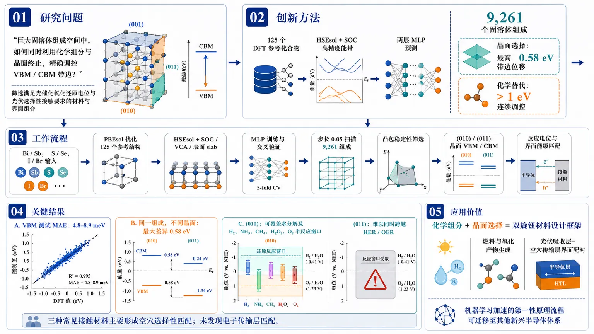
研究问题如何在巨大固溶体组成空间中，同时利用化学组分与晶面终止精确调控VBM/CBM带边，并筛选满足光催化氧化还原电位和光伏选择性接触要求的材料与界面组合？创新方法将125个DFT参考化合物与HSEsol+SOC高精度能带计算结合，训练两层MLP模型预测9,261个固溶体组成的VBM，再结合CBM、凸包稳定性和(010)/(011)表面分析，首次建立晶面分辨的全组成带边相图；关键Aha是发现晶面选择可产生最高0.58 eV的带边位移，与化学替代引起的超过1 eV调控同等重要。工作流程以Bi/Sb、S/Se、I/Br元素丰度为输入，先用PBEsol优化125个参考结构，再通过HSEsol+SOC、VCA和表面slab计算获得带边数据；训练并交叉验证MLP模型，扫描步长0.05的9,261个固溶体，结合凸包稳定性筛选可合成组成，预测两种稳定晶面的VBM/CBM，最后与HER、OER、CO₂还原电位及CdS、V₂O₅、MoSe₂接触能级匹配。关键结果化学组分可使VBM/CBM连续移动超过1 eV，同一组成在(010)与(011)晶面间最大带边差异达0.58 eV，且模型VBM测试MAE仅4.8–8.9 meV。(010)表面可覆盖水分解及H₂、NH₃、CH₄、H₂O₂、O₂等半反应窗口；(011)虽表面能相近却整体无法同时跨越HER/OER。三种常见接触材料均主要形成空穴选择性匹配，未发现电子传输层匹配。应用价值建立“化学组分+晶面选择”的双旋钮材料设计框架，可按目标反应定向选择MChX固溶体组成和表面：为无偏压水分解、燃料与氧化产物生成提供候选材料，并指导光伏吸收层与空穴传输层的界面配对；该机器学习加速的第一性原理流程还可迁移至其他新兴半导体体系。第一部分：核心概览 (Overview)
这篇工作把机器学习和第一性原理 DFT结合起来，首次系统绘制了 Bi/Sb–S/Se–I/Br 钙硫卤固溶体在 (010)/(011) 两个稳定表面上的 VBM/CBM 全组成相图。核心贡献在于证明：化学组分可让带边移动超过 1 eV，而晶面选择本身也能带来最高约 0.6 eV 的额外偏移，重要性几乎与掺杂同级。由此给出面向光催化与光伏的具体组分与界面配对规则，建立了可迁移到其他新兴半导体体系的表面导向材料设计框架。
第二部分：结构化快速回顾
《Machine Learning-Accelerated Band-Edge Engineering of Pnictogen Chalcohalide Solid Solutions for Solar Energy Technologies》（None，）
背景
MChX（Bi/Sb；S/Se；I/Br）具备 1.2–2.1 eV 带隙、强吸收、低温可加工和热力学稳定性，但其巨大成分空间使带边与表面终止难以系统评估。
方法
以 125 个 DFT 参考化合物训练 MLP，在 0.05 步长的 9,261 个固溶体组分上预测 VBM，并结合既有模型推得 CBM 与热力学稳定性；重点考察 (010) 和 (011) 表面。
结果
VBM/CBM 可由组分调控超过 1 eV，同一组分在两晶面间最大可差 0.58 eV。(010) 表面可覆盖水分解、H₂、NH₃、CH₄、H₂O₂、O₂ 等多种半反应窗口；(011) 表面整体不满足水分解要求。多个常见接触材料只与这些固溶体形成空穴选择性匹配。
讨论
表面能几乎简并（Δγsurf = 0.012–0.024 J/m²）却出现显著带边差异，指向表面偶极/静电参考位移而非新表面态主导；这说明facet selection 与chemical substitution 同等关键。
局限
仅考虑两类最稳定晶面、VCA 近似、以及有限的接触材料集合；未直接验证实验界面、缺陷与真实重构效应。
结论
MChX 固溶体构成一个可同时通过成分与晶面双重调控的能源材料平台，可定向服务于光催化燃料生成和光伏空穴选择性接触设计。
第三部分：逐章节冷凝解析 (Section-by-Section Condensing)
I Introduction
Earth-abundant chalcohalides as a device-relevant semiconductor family
MChX 被界定为由 Bi/Sb、S/Se、I/Br 构成的地壳丰度高半导体，带隙位于 1.2–2.1 eV，吸收系数达 25–66 μm⁻¹，兼具热力学稳定性与300°C 以下低温可加工性。关键表述是 *“their band gaps fall in the optimal range for solar energy conversion”*，说明其天然适配太阳能转换窗口。
Solid solutions extend the tuning space beyond ternaries
从三元 MChX 扩展到 BiₓSb₁₋ₓS_ySe₁₋yI_zBr₁₋z 后，带隙与介电性质可连续调节。关键表述 *“solid solutions … open new avenues for property engineering”* 说明研究焦点从“材料发现”转向“性质连续设计”。
Band-edge positions determine photocatalysis and photovoltaics
光催化中，带边需跨越HER/OER 或 CO₂ 还原电位；光伏中，带边决定吸收层/选择性接触的电荷抽取效率。关键句 *“band edge engineering facilitates optimal absorber-selective contact alignments”* 将带边工程直接对接器件设计。
Why ML is needed
组合空间巨大，单靠 DFT 全枚举和实验全合成都不可行，因此引入高通量 + 数据驱动策略。关键句 *“exhaustive exploration using first-principles density functional theory is computationally prohibitive”* 直接给出方法学动机。
II Results and Discussion
Structural assumptions and reference surfaces
MChX 固溶体沿用 Pnma 正交相、准一维柱状结构；默认该相对固溶体同样稳定。两种最低能晶面为 (010) 与 (011)，并默认在固溶体中保持最低表面能。关键句 *“the (010) and (011) surfaces are found to be the most energetically favorable”* 奠定后续所有带边比较的几何基础。
A dense composition map was explored
以 x,y,z 0.05 步长扫描，覆盖 9,261 个固溶体；其中稳定性筛选来自先前的凸包预测。核心是把“局部点计算”扩展为“全组成相图”。
#### II.1 Dataset generation and ML models performance
Reference dataset size and electronic-structure setup
构建了 125 个 DFT 参考化合物，组分取 0, 0.25, 0.5, 0.75, 1。几何优化用 PBEsol，能带对齐用 HSEsol+SOC，反映对重元素自旋轨道耦合的明确处理。原文 *“range-separated hybrid functional HSEsol was employed along with spin-orbit coupling corrections”* 是精度保障的核心。
Why VCA was chosen
由于 SQS 超胞对 HSEsol+SOC 过于昂贵，采用 VCA。这一步的含义是：把 Bi/Sb、S/Se、I/Br 的等电子替代视为虚拟原子平均化处理。关键句 *“VCA … computationally efficient”* 说明模型主要针对平均结构效应，而非显式无序涨落。
MLP architecture and hyperparameters
使用 Scikit-learn MLP，两层神经元数分别为 32/64，输入为元素相对丰度，输出为目标性质；标准化后用 Adam, 学习率 0.001, ReLU, α = 0.05。说明模型极简，但足以捕捉带边规律。
Model accuracy is high enough for map generation
VBM 交叉验证误差很低：(011) 表面训练/测试 MAE 为 12.3/8.9 meV，(010) 表面为 7.3/4.8 meV。这意味着模型几乎达到“近定量”预测水平，足以支撑密集相图。
#### II.2 Band alignments
Composition alone tunes band edges by more than 1 eV
在可合成组分内，(010) 表面 VBM 从 -6.33 eV 到 -5.80 eV，CBM 从 -4.87 eV 到 -4.17 eV；(011) 表面 VBM 从 -6.88 eV 到 -6.17 eV，CBM 从 -5.25 eV 到 -4.62 eV。这说明组分调控对带边的影响是连续且幅度巨大的。
Facet choice matters as much as chemistry
尽管两表面形成能几乎简并，仍可出现最高 0.58 eV 的带边差异；例如 BiSI₀.₄Br₀.₆ 的两表面差异最大。关键句 *“facet selection as a design parameter on par with chemical substitution”* 是全篇最重要的设计结论之一。
Band-edge shifts stem from surface dipoles rather than new states
投影态密度显示，价带顶主要由 S/Br p 态和少量 Bi s+p 反键 lone-pair 贡献构成，导带底主要是 Bi p 态；这些轨道构成在体相与两表面之间基本不变。关键句 *“neither surface introduces new electronic states”* 支持“静电参考位移”解释，而非表面态劫持带边。
Surface dependence is electronically rigid
由于带边轨道成分几乎未变，显著偏移更像是整体刚性平移。这对器件设计很重要：改变晶面可不改带隙，却改变相对真空能级位置。
#### II.3 Application 1: Photocatalysis
Water splitting requires strict band-edge straddling
水分解要求 CBM > HER (-4.4 eV) 且 VBM < OER (-5.7 eV)；同时作者采用 0.5 eV 过电位容差。关键句 *“the conduction and valence band edges must straddle the relevant redox potentials”* 是光催化判据的核心。
(010) surface supports a wide photocatalytic window
在 (010) 上，适合 OER 的组分很广，包括硒富、SbSIₓBr₁₋ₓ 及少量 BiSI 附近组分；适合 HER 的主要是Sb 富，并且在 S 富 情况下可容纳一定 Bi。说明 (010) 是真正的“多反应窗口”晶面。
CH4 reduction is the most demanding reduction path
CO₂ → CH₄ 仅在接近 SbSBr 的少数组分可行，反映八电子还原对导带位置要求最苛刻。这个结果把“反应难度排序”直接映射到组分空间。
H2O2 and O2 generation reveal facet-specific oxidation selectivity
H₂O₂ 路径在 (011) 上偏向Se 富与 SbSIₓBr₁₋ₓ；在 (010) 上则转向 BiSIₓBr₁₋ₓ。O₂ 路径在 (010) 上的可行区域又与 (011) 上的 H₂O₂ 区域几乎重合，显示同一材料家族可通过晶面切换实现不同氧化半反应。
(011) surface fails water splitting despite similar surface energy
尽管 (011) 和 (010) 的表面能接近，(011) 整体不能同时跨越 HER/OER 电位，因此不适合整体水分解。关键句 *“globally fail to straddle the HER and OER potentials”* 说明“低表面能”不等于“功能最优”。
#### II.4 Application 2: Photovoltaics
Photovoltaic limitation is interface alignment, not only bulk quality
尽管 MChX 光电性质优良，实验效率仍低于 10%，远低于 ~30% Shockley–Queisser limit。关键句 *“device-level limitations associated with surface-dependent band alignments may be equally important”* 把矛盾从体材料转到界面工程。
Three common contacts act only as HTLs
CdS (-6.27 eV)、V₂O₅ (-6.20 eV)、MoSe₂ (-5.60 eV) 都能作为 (010) 的空穴传输层，但在两种表面上都找不到任何电子传输层匹配。原文 *“no ETL match is found”* 是一个明确的设计瓶颈。
Contact selectivity depends strongly on absorber composition
CdS/V₂O₅ 更适合 Bi 富、S 富、Br 富 区域；MoSe₂ 更适合 Se 富、Sb 富 区域。三者互补，几乎覆盖 (010) 的全组成空间，但仍不能解决电子选择性接触缺失问题。
(011) devices are constrained to hole extraction
在 (011) 上，仅 V₂O₅ 和 CdS 保持 HTL 对齐，范围还更窄；电子抽取在这三种材料里完全缺席。说明同一吸收体在不同晶面上的器件架构选择会根本不同。
III Conclusions
Two-dimensional control knob: composition plus facet
最重要的结论是：化学替代和晶面选择共同构成带边工程的双旋钮，且两者带来的偏移量量级相当。关键句 *“facet selection as a design parameter on par with composition itself”* 概括了全篇主张。
Application-specific outcomes are sharp and nontrivial
(010) 能支持无偏压水分解，并按组分偏向 H₂/NH₃ 或 O₂/H₂O₂；(011) 虽然表面能相近，却不能水分解。光伏上仅形成空穴选择性接触，且电子接触仍待发现。
The framework is generalizable
该工作不只针对某一材料，而是建立了可迁移的 ML-accelerated first-principles 表面设计范式，适用于其他新兴半导体。
Methods
First-principles calculations
使用 VASP、PBEsol、HSEsol+SOC，平面波截断能 450 eV，总能收敛到 1 meV/f.u.，力收敛阈值 0.5 meV·Å⁻¹。这是一套高精度电子结构流程。
Surface generation workflow
用自研 SurfAIcing 生成表面和输入文件，并自动后处理表面能与带对齐数据。该流程把“表面构建—计算—整理”自动化。
Band alignment protocol
通过slab 与 bulk 共同求得相对真空的电势对齐；表面 slab 厚度约 15 Å，并配同等真空层。关键点是先取宏观/平面平均电势，再对齐 VBM/CBM。
Machine learning model details
MLP 使用 32/64 神经元两层结构，20-fold cross-validation 评估，输入是元素丰度，输出是目标性质。模型代码和仓库已公开，125 个参考固溶体数据也已开放。
第四部分：深度理解与语言支持 (Understanding & Nuance)
1) 术语解析
Band alignment：不是简单“带隙大小”，而是 VBM/CBM 相对于真空能级或界面能级的位置。在光催化里决定能否跨越氧化还原电位，在光伏里决定能否实现选择性抽取。
Facet selection：指晶面终止的选择。这里不是几何细节，而是与化学替代同级的“设计旋钮”，因为不同晶面可导致近 0.6 eV 的带边差异。
Convex hull：热力学稳定性判据。落在或接近凸包的组分更可能可合成，排除了大量会分解的无效候选。
Virtual crystal approximation (VCA)：把无序固溶体近似为“虚拟平均晶体”。适合等电子替代，但会弱化局域无序、短程有序和局域弛豫。
Hole-selective / electron-selective contact：前者允许空穴通过、阻挡电子；后者相反。这里所有测试材料都只表现出 HTL 兼容性，没有找到 ETL。
2) 疑难查证
为什么表面能几乎相同，带边却差很多？
因为表面能衡量的是结构稳定性，而带边相对真空的位置强烈依赖表面偶极、局域配位和静电势参考。两种表面可以“都很稳定”，但其中一个表面外侧电荷重排更强，于是整体能级被抬高或压低。
为什么 VBM/CBM 的轨道成分没变，位置却变了？
轨道成分不变只说明电子结构类型没变；位置变化说明参考电势变了。可把它理解为：同一栋房子的内部布局没变，但整栋楼在地基上整体上移或下沉。
为什么 (011) 不能水分解，但还能做某些半反应？
整体水分解要求同时跨越 HER 和 OER 两端；单独半反应只需满足一侧带边。因此 (011) 可以满足某些单半反应窗口，却不具备完整分解水所需的“双端夹持”。
第五部分：创新评估与关联 (Synthesis & Novelty)
创新性判断
相较于过去 2–5 年内关于 MChX 三元材料 和 固溶体带隙调控 的工作，这篇论文的新意不在“再次证明它们能调带隙”，而在于把问题推进到三个更难层级：
- 全组成空间的带边映射：不是抽样几个点，而是用 9,261 个组分构建连续相图。
- 晶面分辨的带边工程：首次把 (010)/(011) 的表面终止差异提升为与组分同级的设计变量。
- 器件与反应定向筛选：不只讨论材料性质，而是直接给出 HER/OER、H₂、NH₃、CH₄、H₂O₂、O₂ 与接触材料匹配规则。
解决的前人未解问题包括：
- 过去缺少对 固溶体表面带边 的系统评估；
- 过去通常只关注体相带隙，忽略表面终止导致的真空能级偏移；
- 过去没有把光催化半反应与光伏选择性接触放进同一材料相图中统一筛选。
更进一步，真正的概念升级是把“facet engineering”从形貌优化提升为与chemical substitution 并列的第一性设计原则。对新兴半导体而言，这比单纯提升带隙预测精度更有方法学价值。
-
08
📊 含图深析
📄 摘要：作者将协同优化变分自编码器与定量构效关系模型结合，用于燃料分子逆向设计，以研究辛烷值RON为示范性质。辅助回归头被嵌入潜空间，以同时改善分子重构和性质估计；数据来自GDB-13子集。摘要未给出生成分子数量、RON误差或实验验证。
📖 英文原文
arXiv:2504.12075v4 Announce Type: replace-cross Abstract: In the present work, a generative deep learning framework combining a Co-optimized Variational Autoencoder (Co-VAE) with quantitative structure-property relationship (QSPR) techniques is developed to enable inverse molecular design of fuels. The Co-VAE approach integrates an auxiliary fuel property prediction regression head with the VAE latent space, enhancing molecular reconstruction and accurate property estimation (Research Octane Number (RON) chosen as the fuel property of interest for demonstration studies). A subset of the GDB-13 database, combined with a curated RON database, is used for the Co-VAE training. Hyperparameter tuning is further utilized to optimize the balance among reconstruction fidelity, chemical validity, and RON prediction. Subsequently, an independent regression model is trained to further improve RON prediction accuracy, and a differential evolution algorithm is employed to efficiently navigate the Co-VAE latent space and identify promising fuel molecule candidates with RON greater than a chosen threshold. The overall generative deep learning framework captures complex structure-property relationships within a latent representation, and can be readily extended to different or multiple fuel properties, allowing exploration of large chemical spaces relevant to fuel design. Furthermore, the framework can be further augmented by incorporating additional synthesizability criteria to improve applicability and reliability for de novo design of novel high-performance fuels.
💡 亮点：该流程在变分自编码器潜空间中加入燃料性质回归头，以联合优化分子重构与RON预测。训练数据取自GDB-13子集，目标是按指定燃料性质生成候选分子，而非直接模拟材料电子结构。摘要未披露定量性能或实验结果，对团队的启发主要限于性质条件生成和逆向设计工作流，材料机制交叉有限。
🔬 与我们研究方向的关系
📐 方法要点：方法上，摘要目前只能确认：论文题目和摘要中可确认的方法。需要回到原文核对数据来源、标签定义、模型架构、物理约束和验证集，不能把题名直接等同于可迁移算法。若要接入团队的 ML 势或 Hamiltonian 流程，应先确认它是否同时学习能量、力、应力、自旋、极化或电子结构，以及是否报告跨材料/跨温度外推。还需核对原文的训练数据规模、损失函数、边界条件和误差分解，才能判断其是否适合团队的材料模拟任务。
🔗 相关工作关联：与团队方向的可能连接在于：AI for science 与材料/物理问题的结构化分析。团队已有机器学习势、第一性原理、有效 Hamiltonian、缺陷计算、电子—声子耦合和有限温度动力学基础，但该文是否提供可复用数据或物理量仍需查证。若研究对象属于机器人、量子信息或电网等非材料场景，关联主要是物理约束学习、少样本建模或不确定性评估，而不是直接迁移材料机制。这种联系应通过同一材料体系上的独立基准和跨分布测试确认，不能仅凭方法名称或期刊来源下结论。
💡 对你方向的启示：对《用于燃料分子逆向设计的生成式深度学习流程》的启示是先做可证伪的对接：从一个已有材料体系和小规模 DFT 基准开始，明确输入、目标、基线和外推测试，再决定是否接入铁电/磁性、缺陷或载流子动力学工作。具体可先把该文的表示或损失函数在 HfO₂、二维滑移铁电、CrI₃/CrSBr、SiC/GaN 缺陷或卤化物钙钛矿上做小规模复现；若没有直接交叉，应保留为方法参考而非强行迁移。第一步可以选取团队已有的 HfO₂、二维磁体、半导体缺陷或钙钛矿数据做小样本试验，再决定是否扩大到生产级计算。
📖 展开分析 + 配图
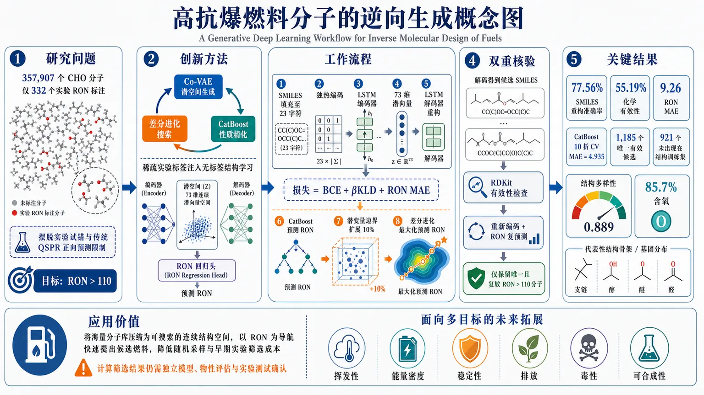
研究问题如何在约35.8万个CHO分子的巨大化学空间中，摆脱实验试错和传统QSPR只能正向预测的限制，反向生成具有预测高抗爆性（RON>110）的新型燃料分子？创新方法提出“Co-VAE潜空间生成 + CatBoost性质精化 + 差分进化搜索”的闭环流程：用带RON辅助回归头的LSTM变分自编码器，让连续潜变量同时编码SMILES结构与抗爆性；再用CatBoost从73维潜嵌入中精确预测RON，最后在潜空间中通过差分进化直接寻找高RON区域，并用RDKit有效性检查和解码后重新编码复预测进行双重核验。Aha点在于把稀疏实验标签注入大规模无标签结构学习，使分子生成空间本身朝高RON方向组织。工作流程输入357,907个C/H/O分子及332个实验RON标注：先将SMILES填充为23字符并进行独热编码；再以LSTM编码器压缩为73维潜向量，由LSTM解码器重构分子，同时通过RON回归头联合训练，损失为BCE+βKLD+RON MAE；随后提取潜嵌入训练并优化CatBoost回归器；接着将潜变量边界向外扩展10%，用差分进化最大化预测RON；最后解码为SMILES，经RDKit过滤无效结构，重新编码并再次预测RON，仅保留复核后仍大于110的唯一分子。关键结果最优Co-VAE达到77.56%的SMILES重构准确率、55.19%的化学有效性和9.26的RON MAE；独立CatBoost在RON数据上的10折交叉验证MAE降至4.935。一次潜空间搜索得到1,185个唯一、有效且预测RON>110的分子，其中921个未出现在Co-VAE结构训练集；生成物结构多样性为0.889，85.7%含氧，主要呈现支链、醇、醚和醛等高辛烷结构基元。但这些结果仍属于同一模型内部筛选，尚无实验验证。应用价值该流程可将海量分子库压缩为可搜索的连续结构空间，以目标RON为导航快速提出候选燃料，减少随机采样和早期实验筛选成本，适合作为高抗爆燃料研发中的计算优先级排序工具。它还可扩展为同时约束挥发性、能量密度、稳定性、排放、毒性和可合成性的多目标设计系统，但候选必须经过独立模型、物性评估和实验测试确认。第一部分：核心概览
该研究建立了面向逆向燃料分子设计的端到端流程：以带辅助 RON 回归头的 Co-VAE 学习分子结构与抗爆性的联合潜表示，再以 CatBoost 精化预测，并用差分进化搜索高辛烷值区域。流程从约 35.8 万个 CHO 分子中生成 1,185 个预测 RON>110 的有效分子，其中 921 个未见于训练集。其领域价值在于将生成、预测与连续潜空间优化连接为可扩展燃料筛选管线，但尚未完成外部或实验验证。
第二部分：结构化快速回顾
《A Generative Deep Learning Workflow for Inverse Molecular Design of Fuels》（None，）
- 背景：高抗爆、低排放燃料的化学空间极大；传统实验试错、基团贡献法与单纯 QSPR 难以系统提出新颖分子结构。
- 方法：在 LSTM-VAE 中加入 RON 回归头，利用 GDB-13 的 CHO 子集和 332 个实验 RON 标注分子训练；以贝叶斯优化调参，以 CatBoost 二次拟合 RON，并以差分进化搜索潜空间。
- 结果：最优 Co-VAE 测试重构准确率为 77.56%、有效性为 55.19%、RON MAE 为 9.26；独立 CatBoost 的 10 折交叉验证 MAE 为 4.935。
- 讨论：潜空间搜索得到 1,185 个预测 RON>110 的有效分子，富含支链、醇、醚和醛等高辛烷结构基元。
- 局限：RON 标签仅 332 个；高 RON 区域存在外推风险；候选仅经同一预测模型内部验证，未评估可合成性、稳定性、安全性及多目标燃料性质。
- 结论：Co-VAE、独立 QSPR 回归与全局潜空间搜索的组合可高效提出候选燃料分子，但只能作为实验和独立模型验证之前的优先级排序工具。
第三部分：逐章节冷凝解析
1 Introduction
- 燃料设计面对组合爆炸式化学空间。 现代发动机要求同时具备高抗爆性和更清洁燃烧特征，而实验试错与专家经验难以覆盖大规模候选空间。问题被明确界定为：*"Traditional methods of fuel design and development rely on experimental trial-and-error and expert intuition"*，且这些方法 *"are inefficient for exploring large chemical spaces of potential fuel molecules"*。
- 既有模型化方法主要解决配方匹配，而非跨空间新分子生成。 基团贡献法和混合燃料设计算法能用于汽油及其混合物的目标规格匹配，但其能力边界是：*"These approaches are effective for constrained formulation problems but do not, by themselves, propose novel molecular structures across large chemical spaces."*
- QSPR 提升性质预测，却不天然提供逆向生成能力。 指纹和图表示方法已改善辛烷值预测，但有限标注数据和手工特征限制广泛化学空间的泛化。关键限制为：*"many QSPR models are trained on relatively limited datasets with hand-crafted features, which may not generalize across broad chemical spaces."*
- 燃料生成研究已出现，但“性质条件化生成加显式逆向搜索”的整合验证仍有限。 近年工作覆盖低数据多目标模仿学习、图生成模型优化、高辛烷分子设计和燃料混合物设计；缺口被精确限定为：*"integrated demonstrations on fuel-relevant corpora with explicit inverse design for desirable fuel properties remain limited."*
- Co-VAE 的设计目标是让潜变量同时承载结构重构和 RON 信息。 基础 VAE 使用 SMILES 序列，先前发现将 β 从 0 逐步提高至 0.25 可平衡重构与正则化；过高 β 会发生后验坍塌，过低 β 则正则不足。证据为：*"gradually increasing β to a moderate value (0.25) provided the best trade-off between reconstruction accuracy and latent space consistency."*
- 完整工作流由三段组成。 第一步以辅助 RON 回归头训练 Co-VAE；第二步从其潜嵌入训练独立回归器；第三步通过差分进化在高 RON 区域搜索并解码结构。流程图的原始定义为：*"Step 1: Co-optimize the VAE for molecular reconstruction and RON prediction. Step 2: Fine-tune the regression model to enhance RON prediction. Step 3: Explore the VAE latent space regions linked to high RON and decode the corresponding species."*
2 Co-VAE Model Development
#### 2.1 Data Curation and Processing
- 分子结构语料来自受燃料化学约束的 GDB-13 子集。 原始 GDB-13 覆盖超过 9.70 亿个、最多含 13 个重原子的有机分子；筛选仅含 C、H、O 且最多 10 个重原子的分子，初得 418,274 个独特物种。数据范围原文为：*"an extensive collection of small organic molecules containing up to 13 heavy atoms, encompassing over 970 million unique compounds."*
- 环数过滤将结构空间进一步约束到较实际的燃料候选。 删除超过两个环的物种，以降低多环结构复杂性及其与实用燃料配方的偏离。筛选逻辑为：*"Highly polycyclic compounds introduce significant structural complexity and are less pertinent to practical fuel formulations."*
- RON 标签集仅包含 332 个单组分实验测量值。 数据来自文献汇编 [9, 22, 23]，保留冲突来源中的最新可靠值，范围从低于 0 至高于 100；负 RON 条目代表长链低辛烷烷烃，未被剔除。原始说明为：*"The curated dataset spans RON values from below zero to above 100; sub-zero entries correspond to long chain alkane low-octane species and were retained as reported."*
- 最终结构语料为 357,907 个物种，标签分子可不属于 GDB-13 子集。 RON 集中缺失于下采样 GDB-13 的分子仍被补入，以扩大结构-性质学习覆盖；因此 332 个标注样本并不等于最终结构语料的全部增量。关键表述为：*"With this incorporation, the final dataset contained 357,907 species."*
- 分子输入采用固定长度 SMILES one-hot 编码。 所有 SMILES 填充至 23 个字符，词表为 8 个符号；该表示直接对应 LSTM 输入，亦允许从潜嵌入解码回结构字符串。实现细节为：*"All the SMILES strings were padded to a maximum length of 23 characters"*，且 *"the character set comprised eight unique symbols representing atoms and molecular substructures."*
#### 2.2 Model Architecture
- Co-VAE 使用 LSTM 编码器、LSTM 解码器与双层前馈 RON 头。 编码器由两层 LSTM 和两个全连接层构成，输出潜分布的均值与对数方差；解码器执行反向映射和序列重构；新增两层前馈网络输入潜变量均值并预测 RON。架构定义为：*"an additional feedforward neural network is introduced with two layers that uses the means of the latent features to predict RON."*
- 联合目标函数将性质误差直接纳入生成表征。 总损失为 BCE + β·KLD + L_RON；其中 BCE 测量 SMILES 重构，KLD 约束潜分布，L_RON 为 RON 的 MAE。原式为：*"Loss = BCE + β *KLD + L_RON"*，且 *"L_RON represents the mean absolute error (MAE) associated with RON prediction."*
- β 退火日程固定为前 75 个 epoch 从 0 增至 0.25，之后保持 0.25。 这一设定服务于重构准确性与潜空间连续性之间的平衡，并针对后验坍塌风险。原始参数描述为：*"gradually increasing β from zero to 0.25 over 75 epochs and maintaining it at 0.25 thereafter."*
#### 2.3 Hyperparameter Optimization
- Co-VAE 调参覆盖网络容量、潜空间维度和训练批量。 LSTM 层数搜索 2-3，隐藏层宽度 64-256，全连接层 50-150，条件层 10-100，潜变量维度 32-128，batch size 64-256；学习率固定为 1×10⁻³，训练 300 epoch。固定设置依据是：*"Preliminary experiments indicated that the model consistently converged within this epoch range."*
- 数据划分对结构语料和 RON 标签集采用不同策略。 GDB 派生数据按 95%/2.5%/2.5% 划分训练、验证、测试；332 个 RON 分子中，验证集和测试集各 10 个物种。无 RON 标签的分子仍参与 BCE 与 KLD，仅已标注分子贡献性质误差：*"only molecules with experimentally measured RON values contribute to L_RON."*
- 贝叶斯优化的预算为 16 个随机初始点、每批 8 点、共 40 次运行。 复合评分由重构准确率、有效率及 5 倍 RON MAE 倒数相加，使生成质量和性质预测共同决定模型选择。评分定义为：*"the sum of reconstruction accuracy, validity, and five times the inverse of RON MAE."*
- 最优配置出现在第 16 次迭代，潜空间维度为 73。 最优网络为 2 层 LSTM、隐藏维度 151、两个 FC 层为 84 和 72、两个条件层为 49 和 19、batch size 172；测试集重构准确率 77.56%、化学有效性 55.19%、Co-VAE 内置 RON MAE 9.26。这说明辅助头提供性质引导，但其精度不足以单独作为最终筛选器。
3 Regression Model Development for RON Prediction
- 独立回归阶段将 Co-VAE 潜嵌入作为唯一表征输入。 目的在于保留联合训练所得表征，同时允许脱离 Co-VAE 内部前馈头的模型选择和充分调参。设计动机为：*"leverage the rich, informative features captured in the Co-VAE latent space while tailoring the regression model to best fit the specific characteristics of the RON prediction task."*
- 比较了广泛的回归模型族及其超参数空间。 候选包括 XGBoost、CatBoost、LightGBM、Random Forest、Gradient Boosting、Linear/Ridge/Lasso/ElasticNet、SVR、KNeighbors、Decision Tree、TabNet 和 SuperLearner；例如 CatBoost 搜索迭代数 50-1000、学习率 0.001-0.3、深度 1-10、L2 叶节点正则 1-10。
- NSGA-2 同时优化 R²、RMSE 和 MAE。 每个模型在训练部分进行 10 折交叉验证；NSGA-2 的种群大小为 100、迭代 20 次，并从 Pareto 前沿中选择 MAE 最低的候选。选择规则为：*"For each model class, the candidate with minimum MAE value from the Pareto front was selected as the best candidate."*
- CatBoost 是测试集最佳模型，测试 MAE 为 5.365。 固定最优超参数后，在完整 RON 数据集再次 10 折交叉验证，MAE 降至 4.935。该数值被定位为与现有机器学习 QSPR 接近：*"This level of accuracy is on par with state-of-the-art ML-based QSPR models in the literature."*
- 预测误差仍显著大于标准 RON 实验重复性。 标准 RON 测试的实验重复性约为 ±1 RON，而回归模型交叉验证 MAE 为 4.935，因此模型只能用于候选排序和粗筛，不能替代精确实验判定。定量限制为：*"the current data-driven approach exceeds this threshold."*
4 Generative Design of High-RON Fuel Molecules
- 搜索目标被设为预测 RON>110。 每个潜变量维度的边界先由完整 RON 数据集的最小值和最大值确定，再将该跨度向两侧扩展 10%，以进入已观测分布之外但仍受学习到的化学结构约束的区域。原始设计为：*"each latent variable’s range was extended by 10% of its respective span."*
- 差分进化执行连续高维潜空间的全局式随机搜索。 采用 SciPy 的 DE 实现，通过变异、交叉和选择最大化 CatBoost 预测 RON；它并非穷尽搜索，初值、迭代次数和种群规模均会影响候选集合。算法性质为：*"a population-based, stochastic optimization method designed for continuous and high-dimensional spaces."*
- 候选必须通过化学有效性和重编码一致性两道筛查。 首先用 RDKit 排除价态或 SMILES 语法无效结果；随后将解码分子重新编码、重新预测，只保留预测 RON 仍高于 110 的结构。第二步的必要性在于 VAE 解码的随机扰动可能使原潜向量与解码分子的性质预测不一致：*"the second step filters out decoding artifacts."*
- 单次搜索获得 1,185 个唯一、有效且预测 RON>110 的分子。 其中 264 个已在 Co-VAE 结构训练集出现，且只有 2 个属于 RON 回归训练集；因此有 921 个生成分子未被 Co-VAE 见过。结果不能等价于 921 个“实验未知分子”，只能证明其未出现在该 Co-VAE 训练语料中。
- 生成物与带 RON 标签分子并非直接复现。 基于 Morgan 指纹，生成物到完整 RON 标注集最近邻的 Tanimoto 相似度中位数为 0.242，四分位距 0.206-0.303。低相似度支持结构新颖性，但不证明性质预测的外推可靠性。量化解释为：*"chemically related to known RON-relevant structures but are not direct reproductions of labeled examples."*
- 高 RON 候选呈现较高内部多样性和富氧趋势。 抽样两两结构多样性为 0.889，85.7% 分子含氧；示例主要包括支链、醇、醚和醛。结构观察为：*"predominantly features branched structures, alcohols, ethers, and aldehydes—functional groups known to enhance RON."*
- 化学有效性不等于燃料可用性。 RDKit 合法 SMILES 并不保证可合成性、热/化学稳定性、安全性、能量密度、挥发性或材料相容性；预测 RON 也尚未得到实验确认。边界表述为：*"chemically valid SMILES do not imply synthesizability, stability, or safety."*
5 Conclusions
- 该流程将生成模型、性质预测器和优化器串联为性质导向的分子搜索系统。 Co-VAE 用 RON 辅助目标塑造潜空间，CatBoost 提升预测性能，DE 将搜索导向高预测 RON 区域。实际收益是减少随机采样：*"reducing the need for random sampling from large chemical spaces."*
- “高 RON 分子”应被严格解读为模型引导候选。 RON 标签集相对结构语料极小，预测器偏差无法排除；高 RON 区域可能是外推，且没有正式定义适用域。限制表述为：*"results should be interpreted as model-guided candidates rather than validated high-RON molecules."*
- 优化和验证存在同模型闭环风险。 候选通过用于优化的同一回归模型评估，构成模型内部验证；需要外部 QSPR、物理估计或实验测试打破这一闭环。原始警示为：*"candidates are validated only in a model-internal setting."*
- 真实燃料设计是多目标问题。 RON 之外还需同时约束挥发性、能量密度、稳定性、排放、毒性、可合成性及不确定性；未来还应处理存在非线性组分相互作用的多组分燃料。核心方向为：*"realistic fuel design is inherently multi-objective, involving volatility, energy density, stability, emissions, and other constraints."*
第四部分：深度理解与语言支持
术语解析
- Inverse molecular design（逆向分子设计）：从目标性能，例如 RON>110，反向寻找可能实现该性能的结构；与“给定分子预测 RON”的正向 QSPR 不同，输出对象是候选结构集合。
- Co-optimized VAE（协同优化变分自编码器）：重构损失、潜分布正则和 RON 误差被共同优化。它不是严格意义上以 RON 显式条件输入的 conditional VAE；RON 通过辅助回归任务间接塑造潜空间。
- Latent-space embedding（潜空间嵌入）：SMILES 经编码器压缩得到的连续向量。在这里维度为 73；相近向量被期望代表某种结构相近或性质相关的分子，但并不自动保证欧氏距离与化学相似度、RON 差异严格对应。
- Posterior collapse（后验坍塌）：解码器过强或 KLD 约束配置失衡时，解码器几乎不使用潜变量，潜变量趋近先验分布；表面上可重构训练序列，实则潜空间缺乏可供连续优化的分子信息。
- Applicability domain（适用域）：模型训练数据能够支持可靠预测的结构与性质范围。RON>110 的候选若远离 332 个标签分子的分布，预测属于外推；即使模型数值输出很高，也没有等价的可信度保证。
疑难查证
为何需要“解码后重新编码”的第二次筛查？
差分进化优化的是连续潜向量 (z)，而真正进入 RON 预测器的合理分子表征应是某个可解码 SMILES 经编码器返回的向量 (E(D(z)))。VAE 的 (D(z)) 是离散 token 序列生成过程：很小的 (z) 扰动可能改变一个字符、支链或官能团，造成结构突变。因此，优化器找到的高分 (z) 不必等于其解码分子重新嵌入后的高分 (E(D(z)))。二次筛查实际检验的是：
[
hatRON(z)>110
quad 且 quad
hatRON(E(D(z)))>110
]
这提高了生成结构与预测性质之间的一致性，但仍未解决预测器本身可能在高 RON 区域系统性偏高的问题。
为何 921 个未见训练集分子不能直接称为“发现的新燃料”？
“未见于 Co-VAE 训练集”只说明结构语料中没有完全相同的 SMILES，不能证明其在化学文献、数据库或工业实践中未知；Morgan 指纹最近邻相似度中位数 0.242 表明它们与标注例子不完全相同，也不能证明可合成、可储运或具有真实 RON>110。科学上更准确的称谓是：计算生成的、模型内部筛选通过的候选分子。
第五部分：创新评估与关联
- 将燃料分子生成、性质预测和全局逆向搜索整合为单一可执行链路。 相比仅做 RON-QSPR 的工作，系统不仅估计已有分子的性质，还通过 Co-VAE 潜空间、独立 CatBoost 和 DE 输出结构候选。相较于近年的低数据生成、图生成高辛烷设计和燃料混合物设计，明确给出了从大规模 CHO 语料预训练式结构学习，到稀疏 RON 标注监督，再到阈值导向搜索与重编码核验的流程。
- 半监督式损失使用大规模无标签结构数据与小规模 RON 标签。 357,907 个结构用于 BCE/KLD，只有 332 个实验 RON 样本参与 (LRON)。这一设计针对燃料性质标签昂贵、结构库丰富的典型数据不平衡问题；但稀疏标签也正是最大统计瓶颈。
- 独立回归器纠正 Co-VAE 内置性质头的精度不足。 Co-VAE RON MAE 为 9.26，而潜嵌入上的 CatBoost 交叉验证 MAE 为 4.935。生成器与高容量监督预测器解耦，使“可生成的连续表征”与“较强的性质排序器”分别优化，这是流程上的实质增益。
- 双重一致性筛查是面向 VAE 解码误差的实用补偿。 RDKit 有效性只能确保 SMILES 符合化学语法与价态规则；重编码后复预测进一步约束“优化潜向量”与“实际解码结构”之间的性质一致性。该机制比单次潜空间打分更接近可用于下游筛选的生成工作流。
- 创新边界仍然清晰。 没有外部盲测、实验 RON、置信区间或正式适用域分析；候选由参与优化的同一 CatBoost 评价；单目标 RON 不能代表实际燃料性能。因此，创新主要位于工作流整合和候选空间探索，而非已证明的高 RON 燃料发现或实验级性质预测。
-
09
📊 含图深析
📄 摘要：作者提出纳米晶方程学习器NanoEQL，以白盒神经网络替代标准激活函数，通过八类算子拟合数学方程，利用前驱体和反应条件预测纳米晶尺寸与形貌，并尝试解释尺寸决定机制。摘要未给出具体材料、方程、数据规模、预测误差或实验验证结果。
📖 英文原文
arXiv:2608.14734v1 Announce Type: cross Abstract: Deep learning models of nanocrystal synthesis enable the prediction of size and shape by encoding precursors and reaction conditions. However, their black-box nature hinders gaining deep insights into the underlying synthetic mechanisms. Here, we develop the Nanocrystal Equation Learner (NanoEQL), a fully white-box neural network to unravel the size determination mechanisms of nanocrystal synthesis. Building on the EQL architecture, eight operators are introduced to replace standard activation functions to fit the mathematical equations in nanocrystal synthesis. Among these operators, three smoothed operators address the gradient explosion of singular operators at zero. To evaluate the weights of different precursors, we develop a temperature-gated attention pooling strategy that encodes concentration-driven and reactivity-driven chemical synthesis mechanisms into the temperature gate. The NanoEQL model illustrates that the final nanocrystal size can be described by a linear equation composed of three scalars representing nanocrystallization capability (-Zp), growth capability (Zrea), and external input potential (-Zops). These interpretable scalars not only advance the rational design of nanocrystal synthesis but also establish a generalizable paradigm for deciphering chemical reaction mechanisms through white-box machine learning.
💡 亮点：NanoEQL用包含八类算子的白盒神经网络拟合纳米晶尺寸决定方程，目标是从前驱体和反应条件中提取可读机制。相比黑箱预测，模型输出数学表达式，便于检查变量作用和机制假设。摘要没有具体材料、定量误差或实验验证，因此与团队的晶体材料计算只有间接方法联系，不能据此推出成核动力学结论。
🔬 与我们研究方向的关系
📐 方法要点：方法上，摘要目前只能确认：论文题目和摘要中可确认的方法。需要回到原文核对数据来源、标签定义、模型架构、物理约束和验证集，不能把题名直接等同于可迁移算法。若要接入团队的 ML 势或 Hamiltonian 流程，应先确认它是否同时学习能量、力、应力、自旋、极化或电子结构，以及是否报告跨材料/跨温度外推。还需核对原文的训练数据规模、损失函数、边界条件和误差分解，才能判断其是否适合团队的材料模拟任务。
🔗 相关工作关联：与团队方向的可能连接在于：晶体结构、功能材料和结构—性质关系。团队已有机器学习势、第一性原理、有效 Hamiltonian、缺陷计算、电子—声子耦合和有限温度动力学基础，但该文是否提供可复用数据或物理量仍需查证。若研究对象属于机器人、量子信息或电网等非材料场景，关联主要是物理约束学习、少样本建模或不确定性评估，而不是直接迁移材料机制。这种联系应通过同一材料体系上的独立基准和跨分布测试确认，不能仅凭方法名称或期刊来源下结论。
💡 对你方向的启示：对《用可解释神经网络揭示纳米晶合成的尺寸决定机制》的启示是先做可证伪的对接：从一个已有材料体系和小规模 DFT 基准开始，明确输入、目标、基线和外推测试，再决定是否接入铁电/磁性、缺陷或载流子动力学工作。具体可先把该文的表示或损失函数在 HfO₂、二维滑移铁电、CrI₃/CrSBr、SiC/GaN 缺陷或卤化物钙钛矿上做小规模复现；若没有直接交叉，应保留为方法参考而非强行迁移。第一步可以选取团队已有的 HfO₂、二维磁体、半导体缺陷或钙钛矿数据做小样本试验，再决定是否扩大到生产级计算。
📖 展开分析 + 配图
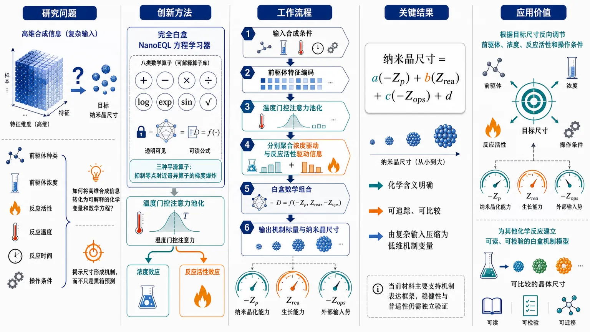
研究问题如何将前驱体浓度、反应活性与操作条件等高维合成信息转化为可解释的化学变量和数学方程，从而揭示纳米晶最终尺寸的形成机制，而不只是进行黑箱预测？创新方法提出完全白盒的 NanoEQL 方程学习器：用八类数学算子替代标准激活函数，并以三种平滑算子抑制奇异算子在零点附近的梯度爆炸；通过温度门控注意力池化同时编码前驱体浓度效应与反应活性效应，最终将复杂输入压缩为具有化学含义的三个机制标量：纳米晶化能力 -Zp、生长能力 Zrea 和外部输入势 -Zops。Aha 点在于把神经网络内部表示直接组织成可读的尺寸决定方程。工作流程输入前驱体种类、浓度、反应活性及反应温度、时间等操作条件；先编码各前驱体特征，再由温度门控注意力池化计算其贡献权重，分别聚合浓度驱动与反应活性驱动信息；随后通过包含八类算子的白盒方程网络进行数学组合，并用平滑算子稳定训练；模型输出三个机制标量及最终纳米晶尺寸，形成由 -Zp、Zrea、-Zops 共同构成的线性方程。关键结果NanoEQL 表明，最终纳米晶尺寸可由三个具有化学解释标签的标量通过线性方程描述：-Zp 表征纳米晶化能力，Zrea 表征生长能力，-Zops 表征外部输入势。现有材料未提供样本量、误差指标、黑箱基线、消融实验或独立验证，因此只能确认其提出了机制表达框架，尚不能确认方程的稳健性、普适性或实际性能提升。应用价值将复杂纳米晶合成条件压缩为可追踪、可比较的低维机制变量，为根据目标尺寸反向调节前驱体、浓度、反应活性和操作条件提供依据；同时为其他化学反应建立可读、可检验的白盒机器学习机制模型提供通用思路。第一部分：核心概览
该工作提出 Nanocrystal Equation Learner（NanoEQL），将可解释神经网络用于解析纳米晶尺寸形成机制。模型以八类数学算子替代传统激活函数，并通过温度门控注意力池化编码前驱体浓度与反应活性，最终将纳米晶尺寸表示为由纳米晶化能力、成长能力和外部输入势三类标量共同决定的线性方程。核心价值不只是提高预测可解释性，而是尝试从数据驱动模型中提取具有化学含义的低维机制变量。不过，现有材料仅包含 arXiv 页面信息和摘要，缺少正文、图表、实验数据、样本量、误差指标及统计检验，因此无法验证其机制方程的稳健性、普适性和相对于既有方法的实际增益。
第二部分：结构化快速回顾
《Unraveling the Size Determination Mechanism of Nanocrystal Synthesis via Interpretable Neural Networks》（None，）
背景
纳米晶合成模型能够根据前驱体与反应条件预测尺寸和形貌，但传统深度学习具有黑箱性质，难以解释变量如何对应实际合成机制。核心问题是从预测模型中反推出可化学解释的方程或机制变量。
方法
提出 NanoEQL，以 EQL（Equation Learner） 架构为基础，引入八种算子替代标准激活函数。三种平滑算子用于缓解奇异算子在零点附近导致的梯度爆炸。前驱体权重通过温度门控注意力池化计算，并将浓度驱动机制与反应活性驱动机制编码进温度门控结构。
结果
模型给出的核心机制形式是：最终纳米晶尺寸可以表示为由三个标量构成的线性方程。这三个标量分别对应：
- 纳米晶化能力：`-Zp`
- 生长能力：`Zrea`
- 外部输入势：`-Zops`
摘要中的直接表述为 *“the final nanocrystal size can be described by a linear equation composed of three scalars”*。
讨论
三个标量试图将复杂的前驱体、反应物和操作条件压缩为具有化学含义的潜变量。其理论贡献在于把预测模型转化为可读的机制方程，并试图建立白盒机器学习解释化学反应机制的通用范式。
局限
所给材料没有提供：
- 数据集来源与样本量 `n`
- 纳米晶材料种类与化学体系数量
- 训练集、验证集和测试集划分
- 预测误差，如 `R²`、`MAE`、`RMSE`
- 与黑盒模型的基线比较
- 八种算子的具体数学形式
- 温度门控的参数化方式
- `Zp`、`Zrea`、`Zops` 的拟合结果、置信区间和统计显著性
- 外部数据集或跨化学体系验证
- 机制方程是否满足独立实验验证
因此，摘要支持“提出一种可解释建模框架”，但不足以支持“已经可靠揭示普适尺寸决定机制”的强结论。
结论
NanoEQL 将方程学习、可解释神经网络和化学机制编码结合起来，提出以三个可解释标量描述纳米晶尺寸的框架。其最大价值是机制表达形式的可读性；其科学可信度仍取决于正文中未提供的实验规模、基线性能、消融实验和独立验证。
第三部分：逐章节冷凝解析
可获得的原始结构范围
提供的文本是 arXiv 条目页面内容，而非论文全文。页面中可见的正式内容包括题目、作者、摘要、学科分类、提交信息和链接；没有出现论文正文的章节标题。因此，无法严格按照论文原始章节标题逐章解析，也无法为不存在于所给文本中的实验结果、公式、表格和讨论添加原文引述。
当前唯一能够可靠解析的正文部分是 Abstract。
Abstract
黑箱深度学习阻碍合成机制解释
纳米晶合成深度学习模型的输入包括前驱体和反应条件，输出包括纳米晶尺寸与形貌。问题不在于模型能否拟合输出，而在于内部表示无法直接转换为化学机制。摘要将这一障碍概括为 *“their black-box nature hinders gaining deep insights into the underlying synthetic mechanisms”*。
这句话包含两个层次：
- 预测任务层面：模型已经可以编码合成条件并预测尺寸、形貌。
- 科学发现层面：模型内部权重或隐藏层表示尚不能直接回答“哪些物种控制成核”“哪些因素控制生长”“操作条件如何改变最终尺寸”等问题。
因此，研究目标不是单纯提高预测精度，而是提高从模型中提取方程结构和化学变量含义的能力。
NanoEQL 被设计为完全白盒模型
模型名称为 Nanocrystal Equation Learner（NanoEQL），定位是完全白盒的神经网络。摘要中的直接表述是 *“we develop the Nanocrystal Equation Learner (NanoEQL), a fully white-box neural network to unravel the size determination mechanisms of nanocrystal synthesis”*。
“完全白盒”至少意味着模型的计算过程原则上可以被展开为明确的数学运算，而不是依赖不可解释的深层非线性变换。与常见的后验解释方法不同，白盒结构将可解释性放在模型设计阶段，而不是训练完成后再用特征重要性、注意力热图或 SHAP 值进行近似解释。
不过，“白盒”不自动等同于“机制真实”。一个明确的方程可能只是对有限数据范围的经验拟合。机制真实性仍需要：
- 跨实验条件复现；
- 跨材料体系迁移；
- 对关键变量的干预实验；
- 与已知成核和生长理论的一致性；
- 参数不确定性分析。
八种数学算子替代标准激活函数
NanoEQL 基于 EQL 架构，通过八种算子替代普通神经网络中的标准激活函数。摘要原文为 *“Building on the EQL architecture, eight operators are introduced to replace standard activation functions to fit the mathematical equations in nanocrystal synthesis”*。
这种设计的目的，是让模型能够表达化学和物理关系中常见的数学形式，例如：
- 加法与线性组合；
- 乘法耦合；
- 指数或对数关系；
- 周期性关系；
- 分式或其他非线性关系。
但是，所给材料没有列出八种算子的名称、公式、输入输出维度或参数约束。因此不能判断：
- 算子是否覆盖了纳米晶合成中真正需要的函数族；
- 算子是否会引入不可辨识的等价表达；
- 方程选择是由结构预设、稀疏化正则化，还是训练后剪枝获得；
- 八种算子是否全部被实际使用；
- 不同随机种子是否得到相同方程。
三种平滑算子用于抑制零点梯度爆炸
部分算子在输入接近零时可能具有奇异导数。例如倒数、对数、幂函数或某些分式运算，在 `x = 0` 附近可能造成数值不稳定或梯度爆炸。摘要指出，八种算子中有三种平滑算子用于处理这一问题，原文为 *“three smoothed operators address the gradient explosion of singular operators at zero”*。
这一设计具有明确的优化动机：
- 奇异算子增强了方程表达能力；
- 但奇异点会破坏梯度下降；
- 平滑版本试图保留原函数的主要形状，同时限制零点附近的梯度；
- 训练稳定性与方程可解释性之间由此形成折中。
关键缺失是平滑函数的具体定义。例如需要知道其是否采用：
- `x + ε`
- `sqrt(x² + ε)`
- 截断函数；
- softplus 替代；
- 分段连续函数；
- 可学习平滑参数。
没有这些细节，无法判断平滑是否改变了最终方程的物理含义，也无法判断 `ε` 的选择是否影响模型结论。
温度门控注意力池化编码前驱体贡献
模型使用温度门控注意力池化来评估不同前驱体的权重。摘要中的原文是 *“To evaluate the weights of different precursors, we develop a temperature-gated attention pooling strategy”*。
注意力池化通常将多个前驱体的表示加权汇总。若第 `i` 个前驱体表示为 `hᵢ`，其权重可抽象写成：
[
αᵢ =
fracexp(sᵢ/T)
sumⱼ exp(sⱼ/T)
]
其中 `sᵢ` 是前驱体得分，`T` 是温度参数。温度越低，权重分布越尖锐，模型更倾向于选择少数关键前驱体；温度越高，权重越均匀，模型会保留更多前驱体的共同贡献。
摘要进一步指出，该温度门控结构编码两类合成机制：*“concentration-driven and reactivity-driven chemical synthesis mechanisms”*。
这意味着权重不应仅由分子嵌入相似度决定，还试图同时反映：
- 浓度驱动机制：某一物种因为投入量高而具有更大整体影响；
- 反应活性驱动机制：某一物种即使浓度较低，也可能因反应性高而产生显著作用。
然而，摘要没有说明温度是：
- 每个前驱体独立学习；
- 每个反应体系学习；
- 由浓度和反应活性显式计算；
- 还是由网络间接预测。
因此，不能把注意力权重直接等同于实验意义上的因果贡献。注意力权重通常是模型内部的分配系数，而不是经过干预验证的因果效应。
最终尺寸由三个化学标量决定
NanoEQL 给出的主要解释是，最终纳米晶尺寸由三个标量组成的线性方程描述。摘要原文为 *“The NanoEQL model illustrates that the final nanocrystal size can be described by a linear equation composed of three scalars”*。
三个标量及其符号含义为：
- `-Zp`：纳米晶化能力，对应 *“nanocrystallization capability”*；
- `Zrea`：生长能力，对应 *“growth capability”*；
- `-Zops`：外部输入势，对应 *“external input potential”*。
可以将其抽象理解为：
[
Dfᵢₙₐₗ
=
β₀
+
βₚ₍₋Zₚ₎
+
βᵣₑₐZᵣₑₐ
+
βₒₚₛ(-Zₒₚₛ)
]
其中 `D_final` 表示最终尺寸，`β` 表示线性组合系数。需要强调的是，摘要只说明存在“由三个标量组成的线性方程”，没有给出：
- 截距；
- 三个系数的数值；
- 系数正负号；
- 单位；
- 尺寸的测量方式；
- 三个标量如何从原始输入计算；
- 三个标量之间是否存在共线性；
- 方程的拟合误差和置信区间。
负号本身也不能直接解释为“该因素抑制尺寸”。最终效应取决于标量定义、外部线性系数、标准化方式以及变量方向约定。若输入经过归一化，`-Zp` 和 `-Zops` 可能只是模型为了获得稳定表达而采用的符号约定。
白盒标量用于理性设计和机制解码
摘要将三个标量的作用概括为 *“These interpretable scalars not only advance the rational design of nanocrystal synthesis but also establish a generalizable paradigm for deciphering chemical reaction mechanisms through white-box machine learning”*。
这里包含两个主张：
- 合成设计价值：如果 `-Zp`、`Zrea` 和 `-Zops` 能够稳定对应化学功能，就可以反向调节前驱体、浓度或操作条件，以获得目标尺寸。
- 方法学推广价值：同类白盒结构可以用于其他化学反应，从预测输出中提取低维机制变量。
但“推进理性设计”和“建立可推广范式”属于较强的外推性表述。要成立，至少需要证明：
- 三个标量在不同材料体系中保持相同化学含义；
- 改变一个控制变量时，相应标量发生可预测变化；
- 通过独立实验能够根据标量反向设计目标尺寸；
- 模型在未见过的反应条件下仍然有效；
- 机制解释优于普通特征重要性分析或符号回归。
第四部分：深度理解与语言支持
1. Equation Learner
Equation Learner 可译为“方程学习器”或“方程发现模型”。它的目标不是只学习一个从输入到输出的数值映射，而是学习一个可显式写出的数学表达式。
与普通回归的区别在于：
- 普通回归通常预先指定模型形式，例如线性回归或多项式回归；
- 方程学习器允许通过算子组合搜索表达式结构；
- 结果理想情况下是可阅读、可分析和可检验的方程。
但可解释方程仍可能是经验规律，而非因果定律。尤其在变量高度相关、数据范围狭窄或样本量较小时，多个不同方程可能同样具有良好拟合效果。
2. White-box neural network
White-box neural network 指内部计算结构和参数作用可以被明确追踪的神经网络。这里的“白盒”主要描述可解释性结构，而不是实验机制已经被证明。
白盒模型可能回答：
- 模型使用了哪些运算；
- 哪些输入被组合；
- 哪些变量进入了最终方程；
- 参数如何影响输出。
它不一定自动回答：
- 该变量是否因果控制尺寸；
- 该变量是否只是其他未观测变量的代理；
- 方程是否适用于训练数据范围之外。
3. Temperature-gated attention pooling
Temperature-gated attention pooling 可以理解为带有温度控制的注意力加权汇聚。温度参数调节权重分布的集中程度：
- 高温：各前驱体权重更均匀；
- 低温：少数前驱体获得更高权重；
- 温度门控：温度本身根据某些化学信息动态变化。
该结构适合表达“浓度”和“反应性”共同影响前驱体贡献的设想。但注意力权重不能直接被解释为因果强度，除非存在受控干预或额外的机制验证。
4. Singular operators and gradient explosion
Singular operator 是在某些输入点不定义、发散或导数趋于无穷的算子。例如：
[
f(x)=frac1x,quad
f(x)=łog x,quad
f(x)=x⁻p
]
在 `x` 接近零时，这类函数可能导致：
- 输出数值变得极大；
- 梯度变得极大；
- 参数更新不稳定；
- 损失函数出现 `NaN` 或训练崩溃。
Gradient explosion 指反向传播时梯度绝对值过大，使优化过程失稳。平滑算子的作用是将奇异行为限制在可训练范围内，但平滑必然可能改变原始算子在零点附近的数学性质。因此，需要通过消融实验说明平滑参数不会显著改变最终机制方程。
5. Nanocrystallization capability、growth capability 与 external input potential
这三个表达不是纳米晶化学中足够标准、定义统一的物理量，更像是模型构造出的机制潜变量。
- Nanocrystallization capability：可能表示输入体系形成晶核或促进晶体化的综合倾向。
- Growth capability：可能表示已有晶核继续长大的综合能力。
- External input potential：可能表示温度、时间、搅拌、注射方式等外部操作变量对尺寸的综合影响。
只有在给出明确数学定义、单位、输入组成和干预验证后，它们才可被视为具有稳定物理意义的机制量。目前更谨慎的称呼是“具有化学解释标签的模型标量”。
第五部分：创新评估与关联
1. 创新性判断
基于所给摘要，可以识别出四项可能的创新：
将方程学习直接嵌入纳米晶合成预测模型
研究重点从“预测尺寸”推进到“提取尺寸决定方程”。摘要明确强调 *“fully white-box neural network”*，其区别在于可解释性不是训练后的附加分析，而是模型结构本身的目标。
针对奇异算子设计平滑机制
将奇异数学算子引入神经网络可以扩大可表达方程空间，但也会造成零点附近训练不稳定。三种平滑算子针对这一具体问题提供了结构性处理，具有方法设计上的针对性。
把浓度和反应性纳入前驱体权重机制
普通注意力池化通常只学习数据相关权重。温度门控策略试图将浓度驱动与反应活性驱动同时写入权重生成过程，这是面向化学体系的领域结构先验。
把高维合成输入压缩为三个机制标量
最终用 `-Zp`、`Zrea` 和 `-Zops` 描述尺寸，提供了比单纯特征排名更接近机制建模的解释形式。若这些标量能够跨体系稳定复现，并能支持反向实验设计，其创新性会明显高于一般的可解释机器学习工作。
2. 相对于近年工作的真实新颖性仍无法完全判定
无法仅凭摘要完成严格的“过去 2-5 年相关工作”比较，原因包括：
- 没有提供参考文献列表；
- 没有正文中的相关工作章节；
- 没有说明所用 EQL 与既有方程学习模型的具体差异；
- 没有报告与符号回归、可解释树模型、PINN、SHAP、注意力模型或传统动力学模型的比较；
- 没有给出数据集和基线结果；
- 没有说明此前是否已有纳米晶尺寸预测模型提取类似的成核、生长和操作变量。
因此，能够确认的是方法组合具有潜在新颖性，不能确认其已经在整个领域中首次实现。
3. 解决的前人问题
若摘要中的方法得到正文实验支持，它主要针对以下未充分解决的问题：
- 黑箱模型可以预测纳米晶尺寸，却难以解释输入变量如何形成输出；
- 纳米晶合成涉及多种前驱体和反应条件，传统特征重要性难以形成统一方程；
- 复杂反应网络中的浓度效应与反应活性效应容易混杂；
- 传统方程拟合受限于预先选择的函数形式；
- 具有奇异函数的方程搜索模型容易出现训练不稳定；
- 预测精度与化学可解释性通常难以同时获得。
4. 最关键的待验证问题
这项工作能否构成可靠的机制发现，取决于以下证据：
- 预测性能：NanoEQL 是否达到或接近黑箱模型的 `R²`、`MAE` 和 `RMSE`？
- 方程稳定性：不同随机种子、数据划分和初始化是否得到相同结构？
- 跨体系泛化：三个标量是否适用于不同材料、配体和前驱体体系？
- 消融实验：移除平滑算子、温度门控或某类化学先验后，性能和方程是否显著变化？
- 因果验证：单独改变浓度、反应活性或操作条件时，模型标量是否按理论预期变化？
- 反向设计：能否先指定目标尺寸，再利用三个标量选择实验条件并成功合成？
- 不确定性：方程系数和机制标量是否有置信区间、误差条或贝叶斯后验？
- 与已有方法比较：是否优于符号回归、稀疏回归、动力学模型和后验解释方法？
资料完整性结论
当前提供的内容最多支持一份基于摘要的初步学术解析。凡涉及具体 `n`、实验数值、`P` 值、模型层数、学习率、批量大小、算子公式、基线结果、图表结论或论文原始章节标题，现有文本均未提供，不能可靠补写。该 arXiv 条目页面显示版本为 `v1`，且没有同行评审信息；因此，摘要中的机制主张应视为待验证的研究结论，而非已经确立的领域共识。
-
10
📊 含图深析
📄 摘要：本工作提出一种机器学习-符号回归（ML-SR）策略，用于发展一个具有物理可解释性的公式，以预测假想金属有机框架（hMOFs）中的低压 CO2 吸附容量。在一个包含 1,000 个样本的小数据集上训练了四种机器学习模型，并通过 SHAP 和特征重要性分析识别出五个关键描述符：最大孔腔直径、孔限制直径、空隙率、质量比表面积和氢原子数。随后采用符号回归推导出一个简洁的吸附公式 Q=aA，其中 a 表示吸附基线（mmol/g），A 是一个纳入四个结构描述符的无量纲吸附数。我们将 A 解释为吸附结合力与扩散驱动力之间的比值，揭示了孔拓扑和表面化学如何共同影响吸附。针对包含 137,652 个 hMOF 的综合数据集进行验证表明，该公式对 62,448 个结构实现了超过 70% 的预测准确率，确认了其在定义的结构和操作范围内具有较强适用性。不同于传统黑箱机器学习模型，所提出的物理引导表达式能够实现高效预测，并提供对吸附机制更清晰的认识。
📖 英文原文
arXiv:2608.14990v1 Announce Type: new Abstract: This work presents a machine learning-symbolic regression (ML-SR) strategy to develop a physically interpretable formula for predicting low pressure CO2 adsorption capacity in hypothetical metal-organic frameworks (hMOFs). Four ML models were trained on a small dataset of 1,000 samples, and five key descriptors-largest cavity diameter, pore limiting diameter, void fraction, gravimetric surface area, and number of hydrogen atoms-were identified through SHAP and feature importance analyses. Symbolic regression was then employed to derive a concise adsorption formula, Q=aA, where a represents an adsorption baseline (mmol/g) and A is a dimensionless adsorption number incorporating four structural descriptors. We interpret A as the ratio between an adsorption binding force and a diffusion driving force, revealing how pore topology and surface chemistry jointly influence adsorption. Validation against a comprehensive dataset of 137,652 hMOFs demonstrates that this formula achieves over 70% prediction accuracy for 62,448 structures, confirming strong applicability within defined structural and operational ranges. Unlike conventional black box ML models, the proposed physics-guided expression enables efficient prediction and provides clearer insight into adsorption mechanisms.
💡 亮点：研究将监督学习、SHAP特征筛选和符号回归串联，用1000个MOF样本建立低压CO2吸附容量的显式公式。最终描述符集中在孔径、空隙率、比表面积和氢含量，强调结构因素的物理可解释性。摘要未报告公式形式或测试误差，对团队的直接交叉有限，但可借鉴其从黑箱预测提炼可解释材料设计规则的流程。
🔬 与我们研究方向的关系
📐 方法要点：方法上，摘要目前只能确认：论文题目和摘要中可确认的方法。需要回到原文核对数据来源、标签定义、模型架构、物理约束和验证集，不能把题名直接等同于可迁移算法。若要接入团队的 ML 势或 Hamiltonian 流程，应先确认它是否同时学习能量、力、应力、自旋、极化或电子结构，以及是否报告跨材料/跨温度外推。还需核对原文的训练数据规模、损失函数、边界条件和误差分解，才能判断其是否适合团队的材料模拟任务。
🔗 相关工作关联：与团队方向的可能连接在于：AI for science 与材料/物理问题的结构化分析。团队已有机器学习势、第一性原理、有效 Hamiltonian、缺陷计算、电子—声子耦合和有限温度动力学基础，但该文是否提供可复用数据或物理量仍需查证。若研究对象属于机器人、量子信息或电网等非材料场景，关联主要是物理约束学习、少样本建模或不确定性评估，而不是直接迁移材料机制。这种联系应通过同一材料体系上的独立基准和跨分布测试确认，不能仅凭方法名称或期刊来源下结论。
💡 对你方向的启示：对《用机器学习符号回归发现可解释的MOF二氧化碳吸附公式》的启示是先做可证伪的对接：从一个已有材料体系和小规模 DFT 基准开始，明确输入、目标、基线和外推测试，再决定是否接入铁电/磁性、缺陷或载流子动力学工作。具体可先把该文的表示或损失函数在 HfO₂、二维滑移铁电、CrI₃/CrSBr、SiC/GaN 缺陷或卤化物钙钛矿上做小规模复现；若没有直接交叉，应保留为方法参考而非强行迁移。第一步可以选取团队已有的 HfO₂、二维磁体、半导体缺陷或钙钛矿数据做小样本试验，再决定是否扩大到生产级计算。
📖 展开分析 + 配图
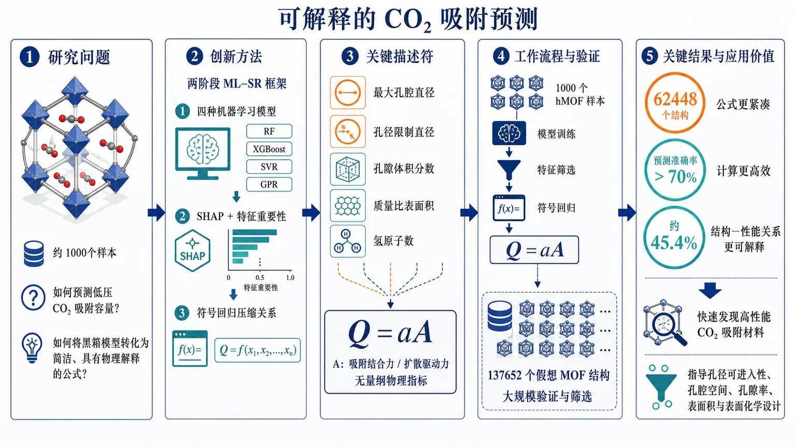
研究问题如何仅用约1000个样本，从假想金属有机框架的孔结构与表面化学描述符中预测低压CO₂吸附容量，并将黑箱模型转化为具有物理解释的简洁公式？创新方法提出机器学习—符号回归（ML-SR）两阶段框架：先用四种机器学习模型结合SHAP和特征重要性筛出最大孔腔直径、孔径限制直径、孔隙体积分数、质量比表面积和氢原子数，再通过符号回归压缩为Q=aA，其中A被解释为吸附结合力与扩散驱动力之比，将复杂特征关系转化为无量纲物理指标。工作流程输入1000个hMOF样本及其结构描述符，训练四种机器学习模型预测低压CO₂吸附容量；利用SHAP和特征重要性识别关键变量；将筛选出的描述符送入符号回归搜索低复杂度数学表达式；得到Q=aA形式的吸附公式；最后在137652个假想MOF结构上进行大规模验证和筛选。关键结果在137652个hMOF结构组成的验证数据集上，62448个结构达到超过70%的预测准确率，约占总数45.4%。所得公式相比黑箱模型更紧凑、计算效率更高，并尝试统一表达孔拓扑、孔隙空间、表面积与表面化学对CO₂吸附的共同影响。应用价值为大规模虚拟MOF筛选提供低成本、快速且可解释的CO₂吸附预测工具，帮助研究者根据孔径可进入性、孔腔空间、孔隙率、表面积和表面化学特征发现潜在高性能吸附材料，并为材料设计提供可理解的结构—性能关系。第一部分：核心概览
该研究提出一种结合机器学习与符号回归的 ML-SR 框架，用仅含 1,000 个样本的数据识别影响低压 CO₂ 吸附容量的关键结构描述符，并进一步构造可解释公式 (Q=aA)。其中，(A) 被解释为吸附结合力与扩散驱动力之比。公式在 137,652 个假想 MOF 上验证，对其中 62,448 个结构实现超过 70% 的预测准确率。核心贡献是将黑箱预测转化为具有潜在物理含义的紧凑数学表达式，但其适用范围、准确率定义及独立实验验证仍需完整论文和补充数据确认。
第二部分：结构化快速回顾
《Discovering Physically Interpretable Mathematical Expression for Predicting CO2 Adsorption in Metal-Organic Frameworks via Machine Learning-Symbolic Regression》（None，）
背景
低压 CO₂ 吸附容量受到 MOF 孔结构、孔隙率、表面积以及表面化学等因素共同影响。传统机器学习能够预测吸附性能，却通常难以提供明确的物理机制解释。研究目标是针对假想金属有机框架（hMOFs）建立既具预测能力、又具可解释性的数学表达式。
方法
使用 1,000 个样本训练四种机器学习模型，并通过 SHAP 和 feature importance 分析筛选重要描述符。识别出的五个关键描述符为：
- 最大孔腔直径（largest cavity diameter, LCD）
- 孔径限制直径（pore limiting diameter, PLD）
- 孔隙体积分数（void fraction）
- 质量比表面积（gravimetric surface area, GSA）
- 氢原子数（number of hydrogen atoms）
随后利用符号回归寻找紧凑表达式，最终得到：
[
Q=aA
]
其中 (Q) 是吸附容量，(a) 是吸附基线，(A) 是无量纲吸附数。
结果
在包含 137,652 个 hMOFs 的综合数据集上验证时，62,448 个结构达到超过 70% 的预测准确率。原文表述为 *“Validation against a comprehensive dataset of 137,652 hMOFs demonstrates that this formula achieves over 70% prediction accuracy for 62,448 structures”*。
讨论
(A) 被解释为吸附结合力与扩散驱动力的比值，从而试图把孔拓扑与表面化学统一到一个具有物理意义的无量纲指标中。该表达式相较于黑箱模型具有更高的可解释性和计算效率。
局限
摘要没有提供：
- 四种机器学习模型的具体名称；
- 训练集、验证集和测试集的划分；
- 误差指标的定义；
- “超过 70% 准确率”的具体计算方式；
- (a) 和 (A) 的完整数学形式；
- 符号回归的搜索空间、复杂度惩罚或候选表达式；
- 温度、压力、吸附剂状态等操作条件；
- 与实验 MOF 数据的独立验证；
- 统计显著性、置信区间或不确定性分析。
此外，摘要称五个描述符被识别为关键变量，但最终 (A) “incorporating four structural descriptors”，这暗示氢原子数可能未进入最终公式，或其处理方式需要正文澄清。
结论
研究展示了一个由数据驱动发现、再由物理概念解释的 MOF 吸附预测策略。其主要价值不只是提高预测速度，而是尝试把机器学习中的变量重要性转化为可计算、可解释的数学关系。不过，当前证据仍主要支持“在特定结构和操作范围内具有应用潜力”，尚不足以证明该公式具有普适吸附定律的地位。
第三部分：逐章节冷凝解析
章节信息边界
所提供材料是 arXiv 页面元数据与摘要，没有包含 PDF 正文、目录或完整章节标题。因此无法严格按照论文原始章节逐章提取，也不能可靠提供正文中的样本划分、模型超参数、公式展开式、图表数值或统计检验结果。当前能够逐点核验的原始内容主要来自标题、摘要和页面信息。
Abstract
研究对象与预测任务
研究对象是假想金属有机框架，预测目标是低压条件下的 CO₂ 吸附容量。摘要明确限定任务为 *“predicting low pressure CO2 adsorption capacity in hypothetical metal-organic frameworks (hMOFs)”*。这意味着结论不能自动外推到：
- 高压吸附；
- 混合气体吸附；
- 湿度存在时的吸附；
- 实际合成 MOF；
- 不同温度或不同吸附平衡条件。
数据规模存在明显层次差异
机器学习模型使用的小数据集包含 1,000 个样本，原文为 *“Four ML models were trained on a small dataset of 1,000 samples”*。最终验证却使用 137,652 个 hMOFs，即：
[
137,652 / 1,000 approx 137.7
]
验证集规模远大于训练数据，说明研究重点可能是利用小样本机器学习提取规律，再检验公式对大规模结构库的迁移能力。但摘要没有说明 137,652 个结构是否完全独立于 1,000 个训练样本，也没有说明它们是否来自同一生成分布。
机器学习模型数量明确，但模型身份缺失
研究训练了 四种机器学习模型，原文为 *“Four ML models were trained”*。然而摘要没有给出模型名称，因此无法判断比较的是树模型、核方法、神经网络，还是其他回归模型，也无法评估模型选择是否覆盖了足够不同的归纳偏置。
缺失信息包括：
- 模型架构；
- 输入描述符总数；
- 超参数；
- 正则化方法；
- 交叉验证方式；
- 基线模型；
- 每个模型单独的性能。
特征筛选结合 SHAP 与特征重要性
五个关键描述符通过 SHAP 和 feature importance 分析得到，原文为 *“five key descriptors-largest cavity diameter, pore limiting diameter, void fraction, gravimetric surface area, and number of hydrogen atoms-were identified through SHAP and feature importance analyses”*。
这些变量大致对应三类物理因素：
- 孔口可进入性：PLD 决定分子能否进入孔道；
- 内部空间尺度：LCD 反映孔腔可容纳空间；
- 孔体积与可用界面：void fraction 和 GSA 分别体现空间占据比例及潜在接触面积；
- 化学组成或表面化学代理变量：氢原子数可能间接反映有机配体组成、极性环境或框架化学性质。
但 SHAP 值高并不等于因果关系成立。在高度相关的结构描述符之间，SHAP 重要性可能受特征相关性、背景分布和模型结构影响。摘要没有提供相关性矩阵、部分依赖图或消融实验，因此不能仅凭变量排序确认每个描述符的独立物理作用。
符号回归用于发现数学关系
研究的第二阶段使用符号回归生成公式，原文为 *“Symbolic regression was then employed to derive a concise adsorption formula”*。这一步与普通回归的区别在于，目标不是只拟合系数，而是同时搜索：
- 变量组合；
- 运算符；
- 函数形式；
- 表达式复杂度；
- 拟合误差与可解释性之间的平衡。
摘要没有说明是否允许使用乘法、除法、指数、对数、幂函数等运算，也没有说明是否施加维度一致性约束。因此，公式的物理可解释性仍需依赖正文中的具体表达式和约束条件。
最终公式采用乘法分解
最终表达式写作：
[
Q=aA
]
原文为 *“Q=aA, where a represents an adsorption baseline (mmol/g) and A is a dimensionless adsorption number incorporating four structural descriptors.”*
其中：
- (Q)：CO₂ 吸附容量；
- (a)：吸附基线，单位为 mmol/g；
- (A)：无量纲吸附数；
- (aA)：保持与 (Q) 相同的容量单位。
这种形式的优点是把预测问题拆成“基线尺度 × 结构修正因子”。若 (A) 确实无量纲，则公式在量纲上比随意拼接不同单位变量更合理。
五个关键描述符与四变量公式之间存在待解释缺口
摘要一方面列出五个关键描述符，另一方面称 (A) 包含四个结构描述符。这一差异是当前文本中最重要的技术疑点之一。
可能解释包括：
- 氢原子数仅对机器学习模型重要，未进入最终符号公式；
- 氢原子数被吸收到 (a) 中；
- 氢原子数通过某种组合变量进入 (A)；
- 摘要中的“四个”是笔误；
- 最终公式只使用四个变量，而特征分析阶段筛选出五个变量。
在没有正文公式的情况下，不能判定哪一种解释正确。
物理解释采用力比值框架
研究将 (A) 解释为吸附结合力与扩散驱动力的比值，原文为 *“We interpret A as the ratio between an adsorption binding force and a diffusion driving force”*。
这一解释试图建立如下直觉：
[
A sim fracadsorption binding forcediffusion driving force
]
当结合力相对较强时，CO₂ 更容易被孔壁或活性位点稳定吸附；当扩散驱动力或传质作用占主导时，分子更可能快速通过孔道而不形成高覆盖度。该解释具有启发性，但“力”的严格定义尚不清楚。它可能是：
- 实际势能梯度；
- 经验性吸附亲和性；
- 表面化学作用的代理量；
- 由符号回归变量组合构造出的无量纲比值。
若没有独立的分子模拟、吸附能或扩散系数验证，仅凭最终表达式无法证明 (A) 真的是力的物理比值。
孔拓扑与表面化学被置于同一解释框架
摘要进一步指出，(A) 揭示了孔拓扑与表面化学如何共同影响吸附，原文为 *“revealing how pore topology and surface chemistry jointly influence adsorption”*。
这是一项有价值的建模取向，因为 CO₂ 吸附不是单纯由孔径决定：
- 孔径影响分子进入、堆积和空间利用；
- 表面积影响潜在接触位点数量；
- 孔隙率影响可用体积；
- 表面化学影响局部相互作用强度；
- 过小孔径可能增强势场重叠，但也可能阻碍扩散。
不过，摘要没有量化各因素的边际贡献，也没有报告交互项、敏感性系数或不同孔径区间中的行为变化。
大规模验证结果需要谨慎解释
验证数据包含 137,652 个 hMOFs，其中 62,448 个结构达到超过 70% 的预测准确率。62,448 个结构约占总验证集的：
[
frac62,448137,652×100% approx 45.4%
]
因此，“对 62,448 个结构超过 70% 准确率”不能直接理解为“对整个验证集的准确率超过 70%”。更准确的表述是：约 45.4% 的结构满足某个尚未定义的准确率阈值。
原文为 *“achieves over 70% prediction accuracy for 62,448 structures”*。这里至少存在三个需要正文澄清的问题：
- “accuracy”是相对误差小于 30% 的比例，还是 (R²) 超过 0.70？
- 62,448 是满足阈值的样本数，还是某一子集的样本数？
- 其余 75,204 个结构的误差分布如何？
对于连续吸附容量预测，“accuracy”不是最标准的单一指标。通常还需要报告 MAE、RMSE、MAPE、(R²)、分位数误差和外推失败率。
与黑箱机器学习的比较集中于可解释性和效率
摘要称该表达式相较于传统黑箱模型能够高效预测并提供更清晰的吸附机制洞察，原文为 *“Unlike conventional black box ML models, the proposed physics-guided expression enables efficient prediction and provides clearer insight into adsorption mechanisms.”*
这里有两个相对独立的主张：
- 计算效率更高：需要比较单次推理时间、批量预测速度、内存占用或大规模筛选成本；
- 机制解释更清晰：需要展示公式变量与已知吸附理论、模拟结果或实验趋势的一致性。
摘要只直接支持第二个主张的意图，尚未提供足够数值证据支持效率优势，也没有给出与黑箱模型相比的性能损失或收益。
第四部分：深度理解与语言支持
术语解析
Physically interpretable
“物理可解释”不等于“公式中出现了物理名词”。严格来说，它要求公式中的变量、运算关系和参数能够对应可讨论的物理过程，并且这种对应关系最好能通过独立数据验证。
本研究中，(A) 被解释为结合力与扩散驱动力的比值，因此物理解释来自变量组合及其机制映射，而不只是来自模型透明度。
Adsorption baseline
“吸附基线”表示一个参考吸附尺度，摘要将其定义为 (a)，单位是 mmol/g。它类似于把材料整体吸附水平中的一个尺度因素单独提取出来，再用无量纲 (A) 表示结构修正。
“baseline”并不天然意味着零条件、最低吸附量或实验空白值。它可能是经验常数、拟合参数或某种参考状态，必须根据正文定义判断。
Adsorption number
“吸附数”是一个无量纲组合指标。它与 Damköhler number、Knudsen number 等无量纲数在思想上类似：把不同物理量组合成可比较的尺度。
但“number”本身不说明机制是否真实成立。关键在于：
- 分子如何构造；
- 各变量的幂指数是什么；
- 是否满足量纲一致性；
- 是否在不同数据集上保持稳定；
- 是否能对应独立的吸附能或扩散数据。
Hypothetical MOFs
“假想 MOF”指结构库中的计算生成或虚拟材料，而非已经合成并完成实验表征的材料。hMOF 数据集适合进行大规模结构筛选，但其结果受到以下因素影响：
- 结构是否可合成；
- 框架是否稳定；
- 模拟力场是否可靠；
- 孔道是否在真实条件下保持开放；
- 缺陷、溶剂和杂质是否被忽略。
因此，hMOF 上的预测成功不能直接等同于实验可实现性。
Symbolic regression
符号回归不是给定函数形式后估计系数，而是搜索函数结构。它可以发现类似：
[
Q=cfracx₁^α x₂^βx₃^γ
]
这样的表达式。其优势是获得人类可读公式，风险则是：
- 搜索空间过大时容易过拟合；
- 复杂表达式可能只是数据拟合伪象；
- 不同随机种子可能产生多个等价公式；
- 变量相关性可能使公式结构不稳定。
疑难查证：为什么“强吸附”和“快扩散”可能同时存在张力
CO₂ 吸附通常需要两个条件共同满足：
- 分子能够进入孔道；
- 进入后能被孔壁或活性位点稳定保留。
较小孔径可能增强孔壁势场重叠和吸附能，但孔口过小会增加扩散阻力。较大孔道通常有利于传质，却可能降低单位体积内的势场重叠和局部相互作用强度。
因此，吸附容量往往不是“孔越大越好”或“孔越小越好”的单调关系，而可能取决于：
- PLD 与 CO₂ 动力学尺寸的匹配；
- LCD 对分子堆积的影响；
- 孔体积与表面积的协同；
- 表面极性和局部化学环境；
- 温度与压力。
将 (A) 写成结合力与扩散驱动力的比值，理论上可以表达这种竞争关系。但必须知道 (A) 的具体变量形式，才能判断它是否真正表示竞争机制，还是仅仅是对多个描述符的经验性压缩。
疑难查证：为什么特征重要性不能单独证明机制
SHAP 衡量的是某个特征对模型输出的边际贡献，通常依赖特定背景分布。若 LCD、PLD、孔隙率和表面积彼此相关，模型可能在多个变量之间分摊贡献。
例如：
- GSA 较高的结构可能同时具有特定孔隙率；
- LCD 与 PLD 可能受到同一孔拓扑控制；
- 氢原子数可能与有机配体类型相关；
- 某一变量的重要性可能只是另一个未观测变量的代理。
因此，真正的机制证据需要进一步结合：
- 特征消融；
- 受控结构对比；
- 部分依赖或累计局部效应；
- 分子模拟得到的吸附能；
- 扩散系数或能垒；
- 外部实验数据。
第五部分：创新评估与关联
创新性判断
基于给出的摘要，可以确认的创新点有三项。
将机器学习特征筛选与符号回归串联
许多材料信息学研究停留在黑箱预测或特征重要性排序。这里将四种机器学习模型、SHAP、特征重要性和符号回归组合成两阶段流程：
- 用机器学习从小样本中识别重要变量；
- 用符号回归把变量转化为简洁公式。
原文概括为 *“This work presents a machine learning-symbolic regression (ML-SR) strategy”*。真正的新意不一定来自单个算法，而来自把预测性能与公式发现连接起来。
尝试建立无量纲物理解释
公式 (Q=aA) 将吸附容量拆为有单位的基线 (a) 与无量纲结构指标 (A)。这种形式比直接报告一个复杂回归器更接近工程关联式或尺度分析表达。
若 (A) 能稳定对应吸附结合与扩散之间的竞争关系，则可能为大规模 MOF 筛选提供比单纯特征排名更强的解释框架。
用小训练集支持大结构库筛选
研究只使用 1,000 个样本训练模型，却在 137,652 个 hMOFs 上进行验证。该设计的潜在价值在于减少高成本数据需求，并生成适用于大规模虚拟材料筛选的快速公式。
不过，这一创新是否真正成立，取决于以下尚未披露的证据：
- 1,000 个样本是否覆盖结构空间；
- 大规模验证集是否存在分布偏移；
- 62,448 个结构的准确率如何定义；
- 与原始黑箱模型相比，公式性能下降多少；
- 与过去 2—5 年已有 ML、GNN、可解释学习和符号回归方法相比，是否具有显著优势。
相对于近年相关工作的可确认差异
在不查询完整参考文献和正文的前提下，不能严谨断言其相对于具体论文的优先性。但从摘要可识别的差异包括：
- 从预测模型推进到数学表达式发现；
- 从相关性解释推进到“结合力/扩散驱动力”的机制性解释；
- 从单一数据集评估推进到大规模 hMOF 验证；
- 从高维模型输出压缩为 (Q=aA) 的低复杂度表达。
这些差异构成潜在创新，但还不是充分的创新证明。尤其是“物理可解释”是否超过已有的基于孔径、表面积和吸附能的经验模型，需要与近年工作逐项比较。
前人问题的可能解决方式
该策略主要针对三个长期问题：
黑箱模型难以解释
通过符号回归生成公式，试图回答“哪些结构变量以什么数学关系影响吸附”。
高通量预测成本较高
一旦公式只依赖少量结构描述符，预测 137,652 个结构的成本可能显著低于逐一运行复杂模型或分子模拟。
孔结构与化学因素难以统一
通过 (A) 将孔拓扑和表面化学压缩到同一无量纲指标中，试图解释两类因素的协同作用。
当前最关键的验证缺口
该研究要达到强创新和可推广结论，还需要补充：
- 完整公式及其参数；
- 四种机器学习模型名称与性能；
- 数据集生成方式和数据划分；
- 所有描述符的定义、单位和范围；
- 公式复杂度与过拟合控制；
- (A) 与吸附能、扩散系数的独立相关性；
- 不同温度和压力下的稳健性；
- 对真实实验 MOF 的外部验证；
- 预测区间和不确定性；
- 对 75,204 个未达到 70% 阈值结构的误差分析；
- 与近期 GNN、集成模型、可解释模型和其他符号回归方法的公平对比。
综合判断：该工作具有明确的方法学创新和潜在工程价值，但目前更适合表述为“在限定 hMOF 数据与低压条件下发现了一个具有物理启发性的经验表达式”，尚不能据现有摘要把它提升为普适的 CO₂ 吸附理论公式。
-
11
📄 摘要：表面与大气之间的湍流通量通常通过经验拟合关系进行参数化。本文针对海上环境测试机器学习技术对该关系的拟合能力。为此，研究使用了三个海上站点的数据：Martha's Vineyard Coastal Observatory（MVCO）空气-海洋相互作用塔、FINO1研究平台，以及部署在加利福尼亚海岸外的CASPER-West FLIP研究船。采用了两种机器学习方法：神经网络（NN）和随机森林（RF）。由于观测站点的塔架测量高度不同，竖直差异被作为梯度输入。模型分别针对动量通量和热通量建立。训练于单个站点的机器学习模型与物理基础的、面向海上通量的COARE-3模型相比具有竞争力，在某些情况下甚至更优。对于大多数指标，热通量机器学习模型通常优于物理参数化；但动量通量的结果则较为混合，只有训练数据最多的站点MVCO取得了优于COARE-3的结果。当将该站点训练的机器学习模型应用到其他站点时，结果比使用被测试站点自身数据训练的模型更差。由三个站点数据合并建立的机器学习模型，通常对训练数据较少的站点表现出改进。关于哪些变量最重要的分析表明，风速对动量通量最重要，而温度梯度对热通量最重要。
📖 英文原文
arXiv:2608.14935v1 Announce Type: new Abstract: Turbulent fluxes between the surface and the atmosphere are typically parameterized using empirically fit relationships. Here we test machine learning techniques for fitting the relationship for the offshore environment. To do that, data from three offshore sites are used: the Martha's Vineyard Coastal Observatory (MVCO) air-sea interaction tower, the FINO1 research platform, and the CASPER-West FLIP research vessel deployed off the coast of California. Two machine learning methods were employed: Neural Networks (NN) and Random Forests (RF). Because the observational sites had towers with measurements at different levels, the vertical differences were input as gradients. Models were built for both momentum flux and heat flux. ML models trained at the individual sites were competitive with and in some cases, better than the physically-based COARE-3 model tailored to offshore fluxes. The heat flux ML models generally outperformed the physics-based parameterizations for most metrics, but the results were mixed for momentum flux, with only the site with the most training data (MVCO) producing results better than COARE-3. When the ML models from that site were applied to the other sites, results were degraded from using data from the site being tested. ML models built from data combined from the three sites generally showed improvements for the sites with less available training data. When assessing which variables were most important, the wind speed was most important for momentum flux and temperature gradient for heat flux.
💡 亮点：工作用神经网络和随机森林从三个海上观测站点学习海面—大气湍流通量参数化。重点是跨海域环境的经验关系拟合与模型比较，不涉及材料或量子体系。摘要未给出性能指标、输入变量和外部验证，因此与团队没有直接研究交叉；可借鉴之处仅是多站点分布外评估和物理参数化思路。
🔬 与我们研究方向的关系
📐 方法要点：方法上，摘要目前只能确认：论文题目和摘要中可确认的方法。需要回到原文核对数据来源、标签定义、模型架构、物理约束和验证集，不能把题名直接等同于可迁移算法。若要接入团队的 ML 势或 Hamiltonian 流程，应先确认它是否同时学习能量、力、应力、自旋、极化或电子结构，以及是否报告跨材料/跨温度外推。还需核对原文的训练数据规模、损失函数、边界条件和误差分解，才能判断其是否适合团队的材料模拟任务。
🔗 相关工作关联：与团队方向的可能连接在于：AI for science 与材料/物理问题的结构化分析。团队已有机器学习势、第一性原理、有效 Hamiltonian、缺陷计算、电子—声子耦合和有限温度动力学基础，但该文是否提供可复用数据或物理量仍需查证。若研究对象属于机器人、量子信息或电网等非材料场景，关联主要是物理约束学习、少样本建模或不确定性评估，而不是直接迁移材料机制。这种联系应通过同一材料体系上的独立基准和跨分布测试确认，不能仅凭方法名称或期刊来源下结论。
💡 对你方向的启示：对《开发海上机器学习近地表层参数化方案》的启示是先做可证伪的对接：从一个已有材料体系和小规模 DFT 基准开始，明确输入、目标、基线和外推测试，再决定是否接入铁电/磁性、缺陷或载流子动力学工作。具体可先把该文的表示或损失函数在 HfO₂、二维滑移铁电、CrI₃/CrSBr、SiC/GaN 缺陷或卤化物钙钛矿上做小规模复现；若没有直接交叉，应保留为方法参考而非强行迁移。第一步可以选取团队已有的 HfO₂、二维磁体、半导体缺陷或钙钛矿数据做小样本试验，再决定是否扩大到生产级计算。
📖 展开分析 + 配图
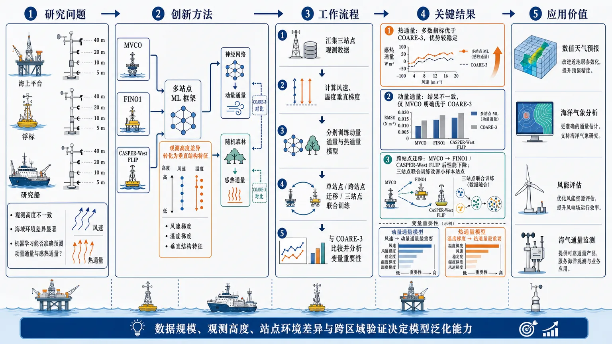
研究问题在观测高度不一致、海域环境差异显著的条件下，机器学习能否准确预测海上近地层的动量通量与感热通量，并在不同观测站点之间保持泛化能力？创新方法提出面向海上表面层参数化的多站点机器学习框架：将不同测量高度之间的风速、温度等垂直差异编码为梯度输入，分别利用神经网络和随机森林预测动量通量与热通量，并与海上物理方案 COARE-3 对比；关键 Aha 点是把“观测高度差异”转化为具有物理意义的垂直结构特征，同时检验单站点训练、跨站点迁移和多站点联合训练。工作流程汇集 MVCO 海气相互作用塔、FINO1 海上研究平台和 CASPER-West FLIP 研究船的观测数据；计算不同观测层之间的风速、温度等垂直梯度；分别构建动量通量模型和热通量模型；使用神经网络与随机森林进行训练和预测；开展单站点训练、MVCO 模型跨站点迁移及三站点合并训练；将机器学习输出与 COARE-3 预测结果比较，并分析风速、温度梯度等变量的重要性。关键结果机器学习在单站点训练中总体可与 COARE-3 竞争，部分情形下表现更好。热通量模型在多数评价指标上通常优于物理参数化，优势较稳定；动量通量结果不一致，只有训练数据最多的 MVCO 明确优于 COARE-3。MVCO 模型迁移到 FINO1 和 CASPER-West FLIP 后性能下降，说明站点分布差异限制跨站点泛化；三站点联合训练通常改善训练数据较少站点的结果。变量分析显示，风速对动量通量最重要，温度梯度对热通量最重要。应用价值为海上数值天气预报、海洋气象分析、风能评估和海气通量监测提供数据驱动的表面层参数化思路。研究表明，机器学习尤其适合改进热通量预测，并可通过多站点数据融合弥补小样本站点的数据不足；同时揭示部署实际系统时必须重视训练数据规模、观测高度、站点环境差异和跨区域验证，不能直接假设模型能够普遍替代物理方案。第一部分：核心概览（Overview）
研究建立了一个面向海上近地层湍流通量参数化的机器学习框架，利用 MVCO、FINO1 与 CASPER-West FLIP 三个观测平台，分别预测动量通量与感热通量。核心方法是将不同观测高度之间的垂直差异编码为梯度，并比较神经网络（NN）、随机森林（RF）与海上物理参数化方案 COARE-3。结果显示，机器学习对热通量的改进较稳定，而动量通量性能高度依赖训练数据规模与站点代表性。研究的主要贡献不是证明机器学习普遍优于物理模型，而是揭示了海上跨站点泛化能力、训练数据量和变量重要性之间的关键约束。
第二部分：结构化快速回顾
《Developing an Offshore Machine Learning Surface Layer Scheme》（None，）
背景
海气界面的湍流动量、热量交换通常依赖经验拟合关系。海上观测站点的仪器高度不一致，直接合并数据会产生垂直代表性问题，因此需要将高度差异显式表示为垂直梯度。
方法
使用三个海上观测地点的数据：
- MVCO：Martha’s Vineyard Coastal Observatory air-sea interaction tower；
- FINO1：海上研究平台；
- CASPER-West FLIP：部署于加利福尼亚近海的研究船。
比较两类机器学习模型：
- Neural Networks（NN）；
- Random Forests（RF）。
分别建立动量通量模型和热通量模型，并与针对海上通量设计的 COARE-3 进行比较。
结果
单站点训练的机器学习模型总体上具有竞争力，部分情况下优于 COARE-3。热通量模型在多数评价指标上通常优于物理参数化；动量通量结果不一致，仅拥有最多训练数据的 MVCO 获得了优于 COARE-3 的结果。将 MVCO 模型迁移到其他站点后，性能低于使用目标站点数据训练的模型。三站点合并训练通常改善了训练数据较少站点的结果。变量重要性分析显示，风速对动量通量最重要，温度梯度对热通量最重要。
讨论
机器学习具有捕捉海上表面层非线性关系的潜力，但性能依赖数据量、站点环境差异和训练—测试分布匹配程度。跨站点迁移并不能自动保证泛化；数据融合对小样本站点更有帮助。
局限
提供的材料没有给出样本量、训练/测试划分、评价指标定义、误差数值、超参数、随机种子、统计显著性或不确定性区间。因此无法判断性能提升的绝对幅度及其统计可靠性，也无法评估不同站点数据是否存在时间自相关、季节偏差或测量误差差异。
结论
机器学习海上表面层方案在热通量预测上表现出较强潜力，但动量通量对训练数据规模和站点特异性更加敏感。多站点数据联合训练可以改善数据稀缺站点的模型性能，但仍需更系统的跨区域验证。
第三部分：逐章节冷凝解析（Section-by-Section Condensing）
提供的文本只有 arXiv 页面元数据和摘要，没有论文 PDF 正文，也没有原始章节目录。因此能够严格逐章节解析的原始章节只有 Abstract；以下所有数值、结论和引述均限定在摘要明确提供的证据范围内。摘要没有给出 `n`、具体误差、P 值或模型超参数，不能补写或推断这些信息。
Abstract
海上表面—大气湍流交换依赖经验参数化。
研究对象是海气界面与大气之间的湍流通量，传统方法通常通过经验关系进行参数化。摘要明确指出：*"Turbulent fluxes between the surface and the atmosphere are typically parameterized using empirically fit relationships."*
这里的重点不是用机器学习替代所有大气物理，而是检验机器学习能否拟合海上环境中的表面层通量关系。
研究覆盖三个具有不同观测条件的海上站点。
数据来自 MVCO、FINO1 和 CASPER-West FLIP 三个站点。原文分别表述为：*"data from three offshore sites are used: the Martha's Vineyard Coastal Observatory (MVCO) air-sea interaction tower, the FINO1 research platform, and the CASPER-West FLIP research vessel deployed off the coast of California."*
这三个平台在地理位置、观测平台类型和仪器高度上具有差异，因此适合检验站点内拟合与跨站点泛化。
机器学习模型包括神经网络和随机森林。
研究采用两种模型：Neural Networks（NN）与Random Forests（RF）。对应原文为：*"Two machine learning methods were employed: Neural Networks (NN) and Random Forests (RF)."*
二者代表不同的归纳偏置：
- NN 擅长学习连续、非线性的高维映射；
- RF 通过多棵决策树的集成建模，通常对非线性关系和变量尺度较稳健，并可提供变量重要性估计。
摘要没有给出网络层数、节点数、激活函数、树的数量、最大深度或特征子采样比例，因此无法比较两类模型的具体实现质量。
垂直观测高度差异被编码为梯度。
不同观测站点的塔架测量高度不一致，研究没有简单忽略这一问题，而是将高度差异作为垂直梯度输入。原文为：*"Because the observational sites had towers with measurements at different levels, the vertical differences were input as gradients."*
这一设计试图把不同高度之间的风速、温度等变化转换为可比较的局地信息。其物理含义是：模型输入不只包含某一高度的状态量，还包含近地层垂直变化率。
模型分别预测动量通量与热通量。
研究针对两类不同物理量分别建模：*"Models were built for both momentum flux and heat flux."*
二者虽然都属于湍流通量，但控制机制并不完全相同：
- 动量通量与风速、风切变、稳定度、粗糙度和海气界面阻力密切相关；
- 热通量更直接受到海气温差、空气温度梯度、湿度和稳定度影响。
因此，不能用热通量模型的成功直接推断动量通量模型也具有同等泛化能力。
单站点机器学习模型总体上可与 COARE-3 竞争。
摘要指出：*"ML models trained at the individual sites were competitive with and in some cases, better than the physically-based COARE-3 model tailored to offshore fluxes."*
这里的结论具有明确限定：
- 机器学习模型是在单个站点分别训练的；
- 机器学习模型是“具有竞争力”，并且“在某些情况下更好”，不是全面优于 COARE-3；
- 对照模型是针对海上通量的物理方案 COARE-3，因此比较对象并非通用统计基线。
热通量模型的优势比动量通量更稳定。
摘要给出了方向性结论：*"The heat flux ML models generally outperformed the physics-based parameterizations for most metrics, but the results were mixed for momentum flux."*
这里有两个重要信息：
- 热通量的机器学习模型在多数评价指标上通常优于物理参数化；
- 动量通量的结果是混合的，即不同站点或评价指标之间并不一致。
由于摘要没有列出具体指标，无法判断“most metrics”具体包括均方根误差、平均绝对误差、相关系数、偏差、散点指数还是其他指标。
动量通量的改进只在训练数据最多的 MVCO 明确出现。
摘要进一步限定了动量通量结果：*"with only the site with the most training data (MVCO) producing results better than COARE-3."*
这说明动量通量的机器学习优势可能受到样本规模强烈影响。现有文本没有给出三个站点的样本数，因而只能确认 MVCO 的训练数据最多，不能量化“最多”对应的数量或比例。
MVCO 模型跨站点迁移后性能下降。
将 MVCO 训练得到的模型应用于另外两个站点时：*"When the ML models from that site were applied to the other sites, results were degraded from using data from the site being tested."*
这一结果说明存在明显的分布偏移（distribution shift）或站点域差异。可能的来源包括：
- 不同海域的风场和稳定度分布不同；
- 平台结构导致流场扰动不同；
- 仪器高度与采样策略不同；
- 海况、粗糙度和热力条件不同；
- MVCO 模型学习到了一部分站点特有关系。
摘要没有给出迁移前后的误差，因此不能判断性能下降是轻微退化还是严重失效。
三站点合并训练有助于数据较少的站点。
摘要指出：*"ML models built from data combined from the three sites generally showed improvements for the sites with less available training data."*
这一发现支持跨站点数据融合作为小样本站点的补偿策略。其含义不是合并数据必然改善所有站点，而是对训练数据较少的站点通常更有利。该结果也暗示，数据规模增加可能比单纯更换模型类型更重要。
风速是动量通量最重要的变量。
变量重要性分析显示：*"the wind speed was most important for momentum flux"*。
这与海气界面动量交换的物理直觉一致：风速直接影响近地层剪切、阻力和动量输送强度。但“最重要”依赖具体重要性方法。随机森林可能使用置换重要性或基于分裂的指标，神经网络则可能使用敏感性、置换或解释模型。摘要没有说明采用哪一种，因此不能将其解释为严格的因果贡献。
温度梯度是热通量最重要的变量。
对应原文为：*"temperature gradient for heat flux."*
这意味着模型认为垂直温度变化对热通量预测最具信息量，符合近地层热交换受温度梯度和大气稳定度控制的物理认识。需要注意，变量重要性表示预测信息贡献，不等同于独立因果效应；温度梯度可能与风速、湿度、稳定度等变量存在共线性。
摘要没有提供统计显著性或可复核的定量性能。
提供的内容未出现任何样本量、误差值、置信区间、标准差、P 值、交叉验证折数或显著性检验。因而不能严谨地写出“性能提高了多少”“是否显著”或“哪个模型显著优于另一个模型”。任何此类数字都超出了给定材料的证据范围。
第四部分：深度理解与语言支持（Understanding & Nuance）
术语解析
Surface layer scheme：表面层方案
指近地表大气中用于计算风、热量、水汽与地表之间交换的参数化模块。`scheme` 在大气科学中通常不是泛指算法，而是可以嵌入数值天气预报、气候模式或风能模型的计算方案。
Turbulent flux：湍流通量
表示由湍流涡旋输送的物理量通量。动量通量可理解为风对海面的应力交换；热通量表示热能在海面与大气之间的湍流输送。它不同于仅由平均流动产生的平流输送。
Empirically fit relationships：经验拟合关系
指根据观测或实验数据拟合出的参数化关系，通常不完全从基本守恒方程推导。COARE-3 虽然是物理基础方案，但其中仍包含经验公式、稳定度修正和观测校准，因此“物理模型”和“纯经验模型”不是绝对二分。
Momentum flux：动量通量
在海气界面问题中通常与表面应力相关。它不等同于“动量的平均输送量”这一宽泛概念，而是特指湍流引起的动量交换强度，常受摩擦速度、风速、粗糙度和稳定度控制。
Generalization across sites：跨站点泛化
指模型在未参与训练的观测平台或海域上保持预测能力。MVCO 模型迁移后性能下降，表明单站点高精度不等于跨站点泛化能力强。
疑难概念：为什么热通量更容易被机器学习改善？
热通量与温度梯度之间往往存在较直接的统计关系，且温度梯度能较明确地表征海气热力交换方向和强度。机器学习可以利用风速、温度、湿度及其梯度之间的非线性组合修正传统参数化中的系统偏差。
动量通量则更容易受到平台流场、海面粗糙度、风速测量高度、稳定度和波浪状态影响。即使两个站点的平均风速相同，其表面应力关系也可能不同。因此，动量通量更依赖足够大的训练样本和与目标站点相近的数据分布。
疑难概念：为什么“梯度输入”很重要？
如果直接输入某一高度的风速或温度，模型可能把“观测高度”误认为物理状态本身，导致不同站点之间不可比。使用梯度可以显式表达：
- 风速随高度的变化；
- 温度随高度的变化；
- 近地层稳定度相关信息；
- 不同观测层之间的局地垂直结构。
但梯度编码并不能自动消除所有站点差异。若平台周围存在结构物扰动，或各站点的高度范围和测量误差不同，梯度本身也可能不具备完全一致的物理含义。
第五部分：创新评估与关联（Synthesis & Novelty）
创新性判断
最明确的创新点是将多站点海上观测与机器学习表面层参数化结合。
研究同时使用 MVCO、FINO1 和 CASPER-West FLIP 三个海上平台，比较单站点训练、跨站点迁移和三站点联合训练。这使问题从“机器学习能否拟合某一个站点”推进到“机器学习能否在不同海上观测域之间泛化”。
垂直梯度作为跨平台输入是具有针对性的设计。
不同平台的测量高度不一致是海上观测数据合并的实际障碍。将垂直差异输入为梯度，提供了一种物理上有意义的数据标准化方式。该设计比简单拼接不同高度的原始变量更适合表面层问题。
机器学习与专门的物理海气通量方案进行直接比较。
基线不是简单线性回归，而是海上通量领域的 COARE-3。因此，机器学习的价值被放在具有实际使用意义的物理参数化背景下评估。
研究揭示了“数据量—泛化能力—物理量类型”的差异。
结果表明：
- 热通量机器学习模型更稳定地改善多数指标；
- 动量通量只有训练数据最多的 MVCO 优于 COARE-3；
- MVCO 模型迁移到其他站点后性能下降；
- 联合三站点数据通常改善数据较少的站点。
这组结果的重要性在于，它没有把机器学习性能简化为“优于物理模型”，而是暴露了站点特异性和训练数据规模的作用。
相对于近年相关工作的谨慎判断
仅凭提供的摘要，无法严谨完成与过去 2—5 年工作的逐篇比较，因为没有给出相关工作综述、参考文献内容、基准数据集或统一评价表。能够确认的相对贡献是：
- 面向offshore surface layer而非一般陆地边界层；
- 同时预测动量通量与热通量；
- 使用三个异质海上平台进行站点内、跨站点和联合训练比较；
- 将观测高度差异作为梯度输入；
- 评估机器学习与 COARE-3 的相对表现；
- 识别出风速和温度梯度分别是动量通量、热通量预测中的首要变量。
尚不能宣称的创新
现有材料不足以支持以下更强结论：
- 不能宣称机器学习全面优于 COARE-3；
- 不能宣称跨站点迁移已经解决；
- 不能宣称模型具有普适海域泛化能力；
- 不能宣称变量重要性证明了因果机制；
- 不能宣称性能提升具有统计显著性；
- 不能判断 NN 是否优于 RF，或反之，因为摘要未给出分模型结果。
从现有证据看，最稳妥的学术定位是：一项针对海上表面层机器学习参数化的多站点实证研究，重点贡献在于系统揭示数据量与站点差异对模型性能的影响，而不是提出一个已经被证明具有普适性的全新通量理论。
-
12
📊 含图深析
📄 摘要：文章在Mississippi State/ORNL公开电力系统攻击数据上，比较保真度核支持向量机、变分分类器和六种调优后的经典模型，并覆盖白盒、迁移、决策型黑盒及投毒攻击。作者强调八项评估选择会在模型比较前塑造结论，摘要未给出各模型的具体准确率。
📖 英文原文
arXiv:2608.15617v1 Announce Type: new Abstract: Machine-learning detectors for power-system cyberattacks are themselves attack surfaces, and quantum machine learning has been proposed for them. We benchmark fidelity-kernel SVMs and variational classifiers against six tuned classical models on public power-system attack data (Mississippi State/ORNL), across white-box, transfer, decision-based black-box, and poisoning attacks. Our headline finding is methodological: the benchmark's answers are set by the evaluator's choices before the models. Eight choices -- six in the evaluation protocol, two in the tuning the benchmark itself runs -- each reversed or moved a conclusion at fixed models. The largest is the split: the row-level protocol scores 0.905 macro-F1 where holding whole source files out leaves 0.594, and in the capped matched-dimensionality regime the quantum arm sits within noise of chance with the classical arm 0.024 above it. A fidelity kernel looks most robust until attacked directly (retention 0.886 to 0.064); a mis-fitted surrogate manufactures a 10x asymmetry; an unseeded black-box attack moves 75% between restarts. A positive control explains the accuracy null: the labels, not the pipeline. We give the control that catches each choice and release the seeded benchmark.
💡 亮点：研究比较量子机器学习与六种经典模型在电力系统网络攻击检测中的鲁棒性，覆盖白盒、迁移、黑盒和投毒攻击。最突出结论是评估协议中的八项选择会先于模型本身决定基准结果。它与凝聚态材料没有直接关系，但对团队比较机器学习势、哈密顿量和材料性质模型时设计无偏测试集具有方法学警示。
🔬 与我们研究方向的关系
📐 方法要点：方法上，摘要目前只能确认：论文题目和摘要中可确认的方法。需要回到原文核对数据来源、标签定义、模型架构、物理约束和验证集，不能把题名直接等同于可迁移算法。若要接入团队的 ML 势或 Hamiltonian 流程，应先确认它是否同时学习能量、力、应力、自旋、极化或电子结构，以及是否报告跨材料/跨温度外推。还需核对原文的训练数据规模、损失函数、边界条件和误差分解，才能判断其是否适合团队的材料模拟任务。
🔗 相关工作关联：与团队方向的可能连接在于：AI for science 与材料/物理问题的结构化分析。团队已有机器学习势、第一性原理、有效 Hamiltonian、缺陷计算、电子—声子耦合和有限温度动力学基础，但该文是否提供可复用数据或物理量仍需查证。若研究对象属于机器人、量子信息或电网等非材料场景，关联主要是物理约束学习、少样本建模或不确定性评估，而不是直接迁移材料机制。这种联系应通过同一材料体系上的独立基准和跨分布测试确认，不能仅凭方法名称或期刊来源下结论。
💡 对你方向的启示：对《量子机器学习电力系统攻击检测基准：评估选择决定模型结论》的启示是先做可证伪的对接：从一个已有材料体系和小规模 DFT 基准开始，明确输入、目标、基线和外推测试，再决定是否接入铁电/磁性、缺陷或载流子动力学工作。具体可先把该文的表示或损失函数在 HfO₂、二维滑移铁电、CrI₃/CrSBr、SiC/GaN 缺陷或卤化物钙钛矿上做小规模复现；若没有直接交叉，应保留为方法参考而非强行迁移。第一步可以选取团队已有的 HfO₂、二维磁体、半导体缺陷或钙钛矿数据做小样本试验，再决定是否扩大到生产级计算。
📖 展开分析 + 配图
研究问题在公共电力系统攻击检测中，量子机器学习能否在与经典模型匹配的特征维度、样本预算和攻击条件下取得准确率或对抗鲁棒性优势？研究进一步追问：数据划分、攻击者能力、代理模型、攻击目标、随机起点、测量几何、量子核带宽和正则化等评估选择，是否会先于模型本身改变甚至反转研究结论？创新方法提出面向评估方法学的 QuantumGridBench 基准：在 78,368 条、128 维公共硬件在环电网数据上，统一比较 6 类经典模型与 fidelity-kernel SVM、VQC，并逐项控制八种评估选择。关键 Aha！是用标签–核正控制证明“真实标签下没有量子优势”源于量子核与标签结构不匹配，而非实验流程无法发现优势；同时用随机扰动、直接量子核攻击和多重重启揭示黑盒攻击算法可能制造虚假鲁棒性。工作流程汇总并去重 Mississippi State/ORNL 数据，使用训练集统计量完成缺失值处理、标准化和 PCA 降维，形成完整 128 维与 PCA-8/12/16 两种特征制度；在共享数据划分、维度和 2,000 样本预算下，对经典模型和量子模型分别进行 Optuna 或量子线路调参。随后执行 FGSM、PGD、量子核白盒攻击、代理模型迁移攻击、HopSkipJump 决策型黑盒攻击、标签翻转投毒和高斯传感器噪声测试，并通过整文件留出、随机扰动控制、标签–核正控制、平衡代理、多重重启和多种随机种子复核结果，最终报告宏平均 F1、攻击后 F1、retention、KTA、几何差异及可复现实验产物。关键结果评估协议显著决定结论：同一 LightGBM 的宏平均 F1 从行级划分的 0.905 降至整文件留出的 0.594±0.008。匹配维度和样本预算后，PCA-8/12/16 上 XGBoost 达到 0.597/0.606/0.607，最佳量子核仅为 0.564/0.564/0.574，VQC 约为 0.514/0.510，没有稳定量子优势。QSVM 的攻击 retention 从共享协议下的 0.886 降至直接量子核攻击后的 0.064；未平衡代理造成的迁移不对称从 10.2 倍降至平衡代理后的 0.8 倍；HopSkipJump 将 QSVM 判为最难攻击，但 0.5σ 随机扰动即可翻转其 45% 的预测。KTA 与 F1 的相关为 0.65–0.97，明显比几何差异更能预测性能。应用价值为安全关键型电力系统和量子机器学习研究提供可复现的评估契约：必须同时报告数据泄漏风险、文件级泛化、攻击可用性、代理模型质量、攻击目标、随机起点、重复次数、物理可实现性和模拟器限制。该基准可防止把近重复泄漏、高 retention、黑盒搜索失败或代理偏差误判为量子优势，帮助研究者筛选真正有效的检测器，并为未来具备物理约束、DER 数据和真实量子硬件的实验建立可靠对照。第一部分：核心概览（Overview）
这是一项关于量子机器学习（QML）电力系统攻击检测的基准评估研究。核心贡献不是证明量子模型优于经典模型，而是证明评估协议本身可以先于模型决定结论：数据划分、攻击可用性、代理模型拟合、攻击目标、随机起点、测量几何、量子核带宽与正则化等八项选择均能反转或显著改变结论。基于 78,368 条公共 Mississippi State/ORNL 数据，研究发现行级划分得到的 LightGBM 宏平均 F1 为 0.905，而整文件留出仅为 0.594；匹配维度和样本预算后，量子模型没有稳定优势。研究同时提供了正控制、泄漏控制、攻击控制及可复现实验包 QuantumGridBench，学术地位更接近评估方法学与可复现性基准，而非量子优势证明。
第二部分：结构化快速回顾
《Benchmarking Quantum Machine Learning for Power-System Attack Detection: Evaluation Choices Decide the Outcome Before the Models Do》（None，）
背景
- 电力系统检测器本身暴露于对抗攻击；攻击者既然能够操纵测量值规避状态估计，也可能操纵测量值规避检测器。
- 既有 QML 鲁棒性证据主要来自图像数据，电力系统 QML 研究则主要使用私有或模拟数据。
- 公共 Mississippi State/ORNL 数据上的 QUPID 只评估了变分量子模型与白盒攻击，没有覆盖量子核、迁移攻击、决策型黑盒攻击和投毒攻击。
方法
- 使用 78,368 行、128 个特征的公共硬件在环电力系统数据，二分类比例为攻击 71%、自然状态 29%。
- 比较 6 类经典模型：Logistic Regression、RBF-SVM、Random Forest、XGBoost、LightGBM、2 层 MLP；比较 2 类量子模型：fidelity-kernel SVM（QSVM）与 VQC。
- PCA 降至 8、12、16 维，量子模型的量子比特数与维度一致；所有匹配维度模型共享每模型 50 次 Optuna 调参预算。
- 评估 FGSM、PGD、迁移攻击、QSVM 直接白盒攻击、HopSkipJump 决策型黑盒攻击、标签翻转投毒和高斯传感器噪声。
- 通过整文件留出、随机扰动控制、标签–核正控制、代理模型重拟合、黑盒多重启等手段检查评估有效性。
结果
- 行级划分下 LightGBM 宏平均 F1 为 0.905；整文件留出下降至 0.594 ± 0.008。
- PCA-8、2,000 样本上，XGBoost 为 0.597 ± 0.002，ZZ-QSVM 为 0.564，VQC 为 0.514 ± 0.007。
- 原始攻击协议下 QSVM retention 为 0.886，但加入直接针对量子核的攻击后下降至 0.064；VQC retention 为 0.072。
- 未平衡 MLP 代理产生 10.2× 的迁移不对称；加入平衡样本权重后，不对称性降至 0.8×。
- HopSkipJump 将 QSVM 判定为最难攻击，median distortion 为 2.818σ；随机扰动却能在 0.5σ 半径翻转其 45% 的预测。
- 标签正控制在 8 个单元格中均检测到量子优势，优势为 0.004–0.092 宏平均 F1，说明真实标签下的量子准确率空值主要来自标签–核不匹配，而不是流程无法发现量子优势。
讨论
- 匹配维度比较回答的是“同等维度、同等数据预算下量子特征映射是否有竞争力”，不是“量子模型是否应替代全特征梯度提升模型”。
- 行级划分、攻击可用性、代理模型规范、攻击目标、起点和测量几何属于评估协议；核长度尺度和正则化常数属于模型选择协议。
- 鲁棒性排名首先反映攻击者是否拥有合适的攻击路径，其次才反映模型本身的抗攻击能力。
- 黑盒攻击中的高失真结果可能是 HopSkipJump 的搜索假设被量子核决策边界破坏，而非模型真正鲁棒。
局限
- 行级划分包含源文件近重复样本，整文件划分虽能测量泄漏影响，但未重新调参。
- PCA 空间中的 ℓ∞ 威胁模型不保证电力流一致性；ε = 0.5σ 映射回原始特征后，有 109/128 个通道移动超过 0.1σ。
- 数据不包含分布式能源或太阳能遥测，不能外推至 DER 场景。
- 量子结果来自精确 statevector 模拟，不是实际量子硬件执行。
- HopSkipJump 受到未设种子的初始对抗点影响；某些结果本身不可由随机种子完全复现。
- 提供文本在第五部分中途截断，未包含完整的后续章节、参考文献细节及可能存在的最终结论章节。
结论
- 在该数据与预算下，没有出现稳定、可推广的量子准确率优势。
- 评估选择能够在固定模型下改变甚至反转研究结论。
- 可靠基准必须同时报告数据划分、攻击可用性、代理模型状态、攻击目标、随机起点、随机控制、重复次数和物理可实现性。
- QuantumGridBench 将每个结果关联到版本化运行产物，以支持种子级复现。
第三部分：逐章节冷凝解析
I Introduction
电力系统攻击使鲁棒性成为运行条件
电力系统状态估计和保护逻辑依赖 PMU、继电器和日志流；false data injection attack（FDIA）可直接污染这些流并绕过坏数据检测。检测器本身也是可被操控的机器学习模型。原文将这一点概括为 *“a detector is itself a model exposed to adversarial inputs”*，并进一步指出：*“For grid detectors, adversarial robustness is the operating condition, not an academic axis.”*
既有量子鲁棒性证据存在领域偏置
QML 被提出用于安全关键场景，部分研究声称量子分类器可能比经典模型更抗对抗扰动，但证据几乎全部来自图像数据。现有系统化研究将领域概括为 *“image- and malware-centric, variational-model-only, and silent on quantum kernels”*，意味着电力系统表格数据、量子核和非变分模型仍缺乏系统评估。
公共电力系统数据上的研究空缺
电力系统 QML 工作大多使用私有或模拟电网数据。QUPID 是公共数据例外，但只防御变分网络上的白盒攻击，未比较模型家族，也没有迁移性、量子核、决策型黑盒和投毒分析。研究问题因此聚焦于：量子鲁棒性是否能在真实公共电网数据和对称多轴评估中复现。
三个研究问题定义比较边界
- RQ1：准确率：混合量子模型能否匹配经过调优的经典基线？
- RQ2：鲁棒性与迁移性：模型家族是否存在不同的对抗鲁棒性，标准评估协议是否能正确测量这种差异？
- RQ3：敏感性：编码方式、量子比特数、线路深度、shots 和训练集大小如何影响结果？
研究贡献集中于评估选择
贡献 C1 覆盖准确率、白盒、迁移、决策型黑盒和投毒攻击，并指出八项评估或选择决策能在固定模型下改变结论。代表性数值包括：行级 F1 `0.905` 对整文件留出 `0.594`；QSVM retention `0.886 → 0.064`；迁移不对称性 `10.2× → 0.8×`；黑盒攻击结果在重启间变化 `75%`。
正控制用于区分“量子无效”与“标签不匹配”
以每个量子 Gram 矩阵自身的几何特征向量构造标签后，相同流程在 8 个单元格中都检测到量子优势，优势为 `+0.004` 至 `+0.092` 宏平均 F1。这一设计支持原文的判断：*“The null is a property of the labels, not the pipeline.”*
可复现性被作为独立贡献
QuantumGridBench 是配置驱动、固定种子、版本化的开源实验包。核心复现原则是 *“every number traces to a versioned run artifact.”*
II Related Work
经典电力系统攻击检测已达到较高表面准确率
Mississippi State/ORNL 数据是公共电力系统网络攻击检测的标准基准。既有经典结果通常依赖树集成和神经网络；近期工作也包括 PCA 加自编码器的混合流程。PCA 降维与当前研究的匹配维度实验具有方法上的对应关系。
QUPID 覆盖范围有限
QUPID 使用带差分隐私噪声防御的变分网络，报告了白盒规避攻击下的量子韧性，但缺少量子核、迁移、黑盒、投毒和固定种子统计。当前研究特别指出，其未覆盖的轴正是未防御 VQC 最脆弱的部分。
量子核没有普遍准确率优势
大规模表格数据评估显示，量子核准确率由数据集选择主导，并不存在一般性优势。量子核理论要求量子核和经典核之间存在几何差异，但原文强调 *“the geometric difference between quantum and classical kernels is necessary but not sufficient.”*
带宽调优存在结构性矛盾
量子核带宽是泛化所必需的调参项，但增大带宽可能同时削弱量子核与经典核之间的几何差异，使量子核趋向经典行为。过去研究已观察到准确率与几何差异可能反向变化；当前研究进一步测量了真实标签下真正预测准确率的筛选量，并识别出几何差异中的谱退化混淆。
对抗 QML 研究主要基于图像与变分模型
既有工作证明量子分类器可能受到对抗扰动，也提出量子假设检验证书和退极化噪声相关界限。图像数据上存在量子鲁棒性优势，但最近的跨量子–经典比较显示攻击可以双向迁移，且不存在稳健性设计效应。
当前研究扩展了攻击套件和模型范围
研究将比较对象扩展到量子核、树模型、VQC、经典核模型，攻击扩展到白盒、迁移、决策型黑盒和投毒。研究还把变分模型中的编码–深度权衡推广到量子核带宽轴。
黑盒结果修正了“模型产生假鲁棒性”的常见叙事
既有“obfuscated gradients”讨论通常认为模型掩盖梯度会制造虚假鲁棒性；这里观察到相反机制：HopSkipJump 攻击本身因决策边界几何而失效。原文表述为 *“here the attack, not the model, produces the false sense of security.”*
评估实践中的八项选择被量化
既有评估规范强调随机重启、多目标和迁移检查，安全机器学习研究也讨论数据窥探、抽样和泄漏。当前研究的新增点是把这些建议转化为固定模型下的数值对照：*“Each row of Table IV is a choice that reversed or materially moved a conclusion here at fixed models.”*
III Methodology
#### III-A Threat model
攻击目标是规避检测
攻击者通过扰动测量值，使攻击样本被判为自然状态。可见威胁模型为：
- MLP、VQC 和两类核机器：白盒，使用完整梯度；
- 其他模型：灰盒，通过共享训练数据、标准化器和 PCA 流程的 MLP 代理实施迁移；
- 所有模型：黑盒，仅查询决策结果的决策型攻击。
扰动空间是标准化 PCA 坐标
扰动为 PCA 输入空间中的 ℓ∞ 有界变化，ε 取 `0.05, 0.1, 0.2, 0.3, 0.5`，单位是训练划分逐分量标准差 σ。8–16 个 PCA 维度的扰动会对应原始 128 通道的相关变化，因此并非只改变少数物理传感器。
物理一致性未被强制执行
PCA 空间球不保证功率流守恒、继电器状态合法或日志计数器可实现。原文明确称其为 *“deliberately an abstract capability”*。此外还测试 5%、10%、20% 标签翻转投毒，以及三个信噪比水平的加性高斯传感器噪声。
#### III-B Dataset and splits
数据规模与来源明确
数据来自 Mississippi State/ORNL 硬件在环测试床，包含 PMU 相量、继电器、控制面板与 Snort 日志，共 128 列、15 个文件组。合并、去重并用训练集统计量填补无限阻抗值后，得到 `78,368` 行。
行级划分为 60/20/20
训练集为 `47,020` 行，固定索引被所有模型共享。二分类标签为攻击 71%、自然 29%；攻击场景包括数据注入、命令注入和继电器设置变化。另有三分类版本：no-event、natural、attack。
行级划分含有近重复泄漏
行级划分下，`45.8%` 的测试行在标准化全特征空间中存在距离小于 `0.1` 的训练邻居；整文件留出后该比例仅为 `5.0 ± 0.4%`。因此行级结果同时测量了记忆近复制样本和真正泛化。
预处理防止了测试集拟合
标准化器和 PCA 只在训练集拟合；最终配置的测试集只访问一次。准确率结果以 `10` 个种子的均值 ± 标准差报告。
#### III-C Feature regimes and model zoo
两种特征制度
经典模型分别运行在：
- 完整 `128` 个特征；
- PCA-8、PCA-12、PCA-16，并重缩放到 `[-π, π]`。
第二种是量子模型的公平匹配制度，量子比特数等于 PCA 维度。
经典模型共享调参预算
6 个经典模型为 Logistic Regression、RBF-SVM、Random Forest、XGBoost、LightGBM 和 2-layer MLP。每个模型使用 Optuna `50` 次试验，以验证集 macro-F1 为目标；搜索使用 seeds `0,1,2`，最佳配置在全部 `10` 个种子上重新训练，并对类别不平衡使用 class weights。
#### III-D Quantum models
QSVM 使用 fidelity kernel
量子核定义为：
[
k(x,x')=|łangleφ(x)|φ(x')ångle|²
]
实验采用 RY-angle 和 ZZ feature map，在 `8/12/16` 个量子比特上运行。编码带宽是调优超参数。
量子核受到二次样本复杂度限制
Gram 矩阵需要 `O(N²)` 次线路评估，因此量子核训练样本被限制为 `2,000` 个分层样本。匹配维度下所有经典模型也采用相同上限，以保持预算公平。
VQC 的线路与优化设置
VQC 使用 angle encoding、strongly-entangling layers，深度取 `2,4,6`；优化器为 Adam，使用 early stopping 和 class-weighted loss。线路由 PennyLane 的 exact statevector simulator 模拟。
噪声与理论诊断
测试 analytic、`1024` shots 和 `4096` shots；另在退极化噪声 `p=0.05` 下进行消融。量子核与调优后的经典 RBF 核比较两个诊断量：
- KTA：核–目标对齐度；
- geometric difference (g)：量子核与经典核的几何差异。
核进行 trace normalization，经典核使用 `λ=10⁻⁶` ridge regularization。
标签–核正控制具有因果诊断作用
利用每个 Gram 矩阵自身的几何特征向量生成工程标签。如果流程能够识别量子核携带的可利用结构，则在这些标签上应出现量子优势。该正控制最终确实产生量子胜出。
#### III-E Attacks and statistics
白盒攻击与迁移攻击
FGSM 和 PGD 对 MLP、VQC 实施白盒攻击；非可微模型接收 MLP 代理生成的迁移攻击。PGD 使用 `20` 步、步长 `0.25ε`、一个随机起点、不使用多重重启，并最大化交叉熵。
QSVM 获得专门的目标攻击
QSVM 的决策函数被显式微分：
[
f(x)=sumⱼ αⱼ|łangleψ(x)|ψⱼångle|²⁺b
]
模拟器中的梯度与精确参考实现误差为 `2×10⁻⁵`，与有限差分误差为 `4×10⁻⁷`。匹配的经典 RBF-SVM 接收相同形式的攻击。
黑盒攻击使用 HopSkipJump
HopSkipJump 在所有 8 个模型家族上运行，每个样本约 `600` 次查询，并配套同半径随机扰动控制。由于 ART 的初始对抗点来自未设种子的随机生成器，每次运行只是一个随机抽样，因此报告 `5` 次重启。
实验样本量与重复方式
- 规避攻击曲线：`500` 个分层测试点、`10` 个种子；
- HopSkipJump 和随机控制：`100` 个分层测试点；
- 随机控制：`3` 次抽样；
- 投毒：每个模型以 `1` 个种子重新训练；
- 统计检验：跨种子的 paired Wilcoxon signed-rank，并使用 Holm–Bonferroni 校正。
检验反映的是固定划分下的种子变异，而不是重新抽样造成的总体方差。
IV Results
#### IV-A The split protocol decides the headline number
源文件留出显著降低准确率
相同的调优 LightGBM，仅改变划分索引，macro-F1 从行级 `0.905` 降至整文件留出 `0.594 ± 0.008`。近邻比例也从 `45.8%` 降到 `5.0 ± 0.4%`。原文称行级划分是 *“the costliest evaluator choice in this study.”*
调参会放大泄漏收益
手工配置 LightGBM 的下降为 `0.256`，Optuna 调优版本下降 `0.311`，说明超参数搜索部分优化了数据泄漏模式。整文件实验继续使用行级协议调出的超参数，未测量重新调参能否恢复部分性能。
匹配维度下接近随机水平
在 PCA-8、2,000 样本上，整文件留出时：
- XGBoost：`0.523 ± 0.013`；
- ZZ-QSVM：`0.508 ± 0.012`；
- 随机基线：`0.499`。
经典–量子差距从行级的 `+0.031` 降至 `+0.015 ± 0.015`，并在 5 个划分中的 1 个划分反转符号。
#### IV-B RQ1: Classical wins every matched contest under the row-level protocol — the binding constraint is kernel sample complexity
经典模型在所有匹配维度上胜出
PCA-8/12/16 下，调优 XGBoost 的 macro-F1 为 `0.597/0.606/0.607`；最佳量子核为 `0.564/0.564/0.574`；VQC 在 PCA-8/12 为 `0.514/0.510`。经典优势为 `0.032–0.042`，约为经典种子噪声的 `15–20` 倍，排序从未翻转。
完整特征显著优于匹配维度
完整 128 特征上的 LightGBM 达到 `0.906`。固定特征与超参数后，切换至 PCA-16 损失 `0.105`；2,000 样本限制进一步损失 `0.197`。
样本上限解释了大部分量子–经典差距
完整训练集规模从 `n=2,000` 增至 `n=47,020` 时，学习曲线从 `0.595` 上升到 `0.763`。2,000 样本上限造成的损失约为整个量子–经典差距的 `5` 倍，因此量子核的竞争力只在其自身样本复杂度强制形成的受限制度内出现。
正控制显示真实标签导致空值
在工程标签上，8 个实验单元格全部出现量子优势，范围为 `+0.004` 至 `+0.092` macro-F1；优势与 `log(g)` 的相关系数为 `r=+0.85`，`p=0.007`。最弱单元格为 `+0.004 ± 0.003`，仅属边缘性优势。工程标签的 KTA 为 `0.046–0.50`，而真实电网标签的 KTA 不超过 `0.015`。
#### IV-C Kernel diagnostics: Alignment predicts accuracy; the geometric difference is confounded
几何差异很大但没有带来准确率优势
调优量子核的几何差异最高达到 `g=73`，三分类版本达到 `101.7`；但 KTA 始终不超过 `0.015`，准确率仍低于经典模型。因此“大几何差异”只满足潜在量子优势的必要条件，不构成充分条件。
KTA 比几何差异更稳定地预测准确率
在两套标签分布的 `54` 个带宽配置上，KTA 与验证集 macro-F1 的 Spearman 相关在所有单元格均为正，范围 `ρ=+0.65` 至 `+0.97`。相比之下，`ρ(g,F1)` 在同一研究的不同单元格之间变号，范围 `−0.82` 至 `+0.63`。
谱退化混淆几何差异
谱退化与几何差异的总体相关为 `ρ=+0.80`。小带宽时，Gram 矩阵接近常数矩阵，最大特征值占谱的 `96–99%`；大带宽时，矩阵接近单位矩阵，中位非对角 fidelity 不超过 `3.4×10⁻⁴`。两种极端都可能远离经典核，但都不代表学习到有用结构。
未观察到典型指数集中
每增加一个量子比特，非对角元素方差只下降 `0.05–0.09 log₂`，而指数集中理论预期约为 `−1.0`。因此该数据上的量子核失效不能归因于标准形式的 exponential concentration。
特征映射没有同时满足非退化与标签对齐
在调优范围内及其外部，都没有出现同时满足“非退化”和“标签对齐”的带宽区域。决定真实任务表现的是标签对齐，而不是单纯的量子–经典几何距离。
#### IV-D RQ2: Attack availability, not model family, sets the robustness ranking
共享攻击协议会制造 QSVM 的表面鲁棒性
PGD 在 ε=`0.5σ` 下，QSVM 保留干净 macro-F1 的 `88.6%`，VQC 仅保留 `7.2%`。但 QSVM 此时的 F1 为 `0.499`，仅比随机地板低 `0.001`；因此 retention 高并不代表有用检测能力。
直接攻击量子核会改变排名
针对 QSVM 决策函数的目标攻击将 F1 降至 `0.036 ± 0.009`，retention 降至 `0.064`，是迁移攻击结果的 `14` 分之一，并且在 ε=`0.01σ` 时已经开始崩溃。
匹配经典控制呈现不同结果
同一攻击作用于调优 RBF-SVM 后，retention 为 `0.685`。跨 10 个攻击种子的配对检验为 `p=0.002`，rank-biserial correlation 为 `−1.0`，差距约为 36 个合并攻击种子标准差。
攻击可用性先于模型家族决定鲁棒性排名
白盒可攻击的模型中，QSVM/VQC retention 为 `0.064/0.072`，RBF-SVM/MLP 为 `0.685/0.621`；树模型没有白盒攻击路径，因此其 retention 只是上界。原文将结论概括为 *“a cross-family robustness ranking reports attack availability before it reports robustness.”*
泄漏控制未消除白盒差异
整文件训练后，QSVM 相对于随机地板低 `0.42–0.48`，经典核约为 `0.10`；两个划分、20 个攻击种子中均观察到这一方向。差异不是行级泄漏单独造成的，但经典核在整文件训练后的最终状态略有变化。
#### IV-E The transfer asymmetry is an artifact of the surrogate, not a property of the families
未平衡 MLP 代理产生显著迁移不对称
MLP 代理未使用 class_weight，在攻击占 `71%` 的任务上 `96.6%` 时间预测正类，并比分层随机地板低 `0.031`。它产生的 MLP→VQC 攻击损害是反向迁移的 `10.2×`，表面上与图像领域的方向性不对称一致。
平衡样本权重会消除不对称
重新用 balanced sample weights 拟合代理后，对经典目标的损害保持 `0.205` 对 `0.209`，说明攻击强度没有消失；对 VQC 的损害则从 `0.344` 降至 `0.114`。迁移不对称性从 `10.2×` 降至 `0.8×`。
替代代理进一步支持代理能力解释
第二个独立实现得到 `1.1×`；使用具备 class_weight 的调优 RBF-SVM 作为代理时，不对称性为 `0.15×`。按照代理超过随机地板的程度 `−0.031、+0.035、+0.090` 排序，不对称性单调下降；归一化攻击强度后为 `1.65 → 0.56 → 0.20`。
不存在跨家族量子鲁棒性不对称
所有修正后的迁移方向都低于 1，符合模型内部迁移通常更强的预期，而不是量子鲁棒性结果。原文明确指出：*“no asymmetry survives here in either direction.”*
机制仍未完全确定
类别先验无法解释全部现象；附录中的测量显示该解释是错误的。已确认的事实是：错误代理能够在 10 个种子上制造稳定、合理且符合既有图像结论的结果，而准确率和 retention 表本身无法暴露该问题。
#### IV-F The decision-based black-box attack is itself fooled
HopSkipJump 将 QSVM 错判为最鲁棒
QSVM 的 HopSkipJump median flip distortion 为 `2.818σ`，经典模型为 `0.200–0.867σ`。但在同半径随机扰动下，QSVM 在 `0.5σ` 即有 `45%` 预测翻转，是 8 个模型中最脆弱者；其决策 margin 反而增至干净值的 `154%`。
量子核破坏了 HopSkipJump 的线搜索假设
密集采样显示，部署带宽下 QSVM 有 `26%` 的扰动射线穿越多个决策边界，RBF-SVM 为 `17%`。随着长度尺度变化，QSVM 达到每条射线 `3.84` 次穿越，单条射线最多 `19` 次；经典控制降至 `0.03` 次。线搜索因此在远离真实边界处终止，高 distortion 被误读为鲁棒性。
随机扰动控制反转黑盒排名
RBF-SVM 和 Random Forest 的 HSJ distortion 为 `0.000σ`，并不表示脆弱；RBF-SVM 在该攻击下反而是最鲁棒模型。最低失真可能意味着模型已处于边界附近，而不是攻击有效。
HopSkipJump 结果缺乏稳定复现性
同一个种子运行三次得到 median distortion `0.661、0.636、0.703`；QSVM 五次重启范围为 `2.808–4.917σ`，均值 `3.920 ± 1.035σ`。报告值是最低一次抽样。
各模型变异系数为：QSVM `0.26`、XGBoost `0.16`、VQC `0.13`、LightGBM `0.11`、MLP 和 Logistic Regression `0.02`、RBF-SVM 与 Random Forest `0.000`。因此，HSJ 判定最鲁棒的模型反而是排名最不可复现的模型。
量子核准确率最优点也是随机扰动最脆弱点
不同带宽重建 QSVM 后，准确率最优点的随机翻转率为 `42%`；模型退化到随机水平的带宽区域为 `19–29%`。三分类任务重复该趋势但峰值更低。与 RBF-SVM 不同，量子特征映射的准确率调优会同时选择最脆弱点。
攻击目标决定模型最终状态
完整预算攻击可能使模型进入两种状态：
- disabled state：核衰减、预测趋于常数、macro-F1 回到随机地板；
- inverted state：输出仍有变化，但 macro-F1 远低于地板。
固定 C 扫描 RBF 带宽三个数量级时，干净 macro-F1 变化小于 `0.08`，却可以在两种攻击终态之间切换。相同预算、步数和种子下，距离导向目标使攻击质量进一步下降 `6.2×`，达到干净值的 `0.027`。
正则化常数控制攻击终态而非干净准确率
随着 `C: 1 → 835`，固定攻击质量下的决策扩散比从 `0.119 → 0.642`；当 `C≤10` 时，量子核进入 disabled state，且干净准确率没有损失。因此正则化是影响攻击终态的鲁棒优化旋钮。
#### IV-G RQ3: Sensitivity ablations
shots 和退极化噪声不会改变排序
1024/4096 shots 造成的噪声只有有效核 spread 的 `2–6%`，不改变模型排序。退极化噪声 `p=0.05`、纯度 `0.22` 时，macro-F1 仅下降 `0.024`，KTA 下降 `1.6%`。纯模拟和混合噪声下 KTA 都约为 `0.022`，说明结果对硬件噪声不敏感的原因是标签相关信号本身很弱。
VQC 未出现 8 量子比特下的 barren plateau
深度 2/4/6 的梯度范数方差在 `2%` 范围内保持平坦。受控扫描显示方差衰减主要发生在量子比特轴，而非深度轴。因此 VQC 准确率弱不是训练不可行，而是模型–数据匹配不足。
小样本条件下经典模型仍占优
在理论上可能出现量子优势的数据效率区域，训练样本为 `250` 时经典领先 `11.3` 个 macro-F1 点；样本增至 `2,000` 后领先扩大到 `12.0` 点。
标签投毒影响有限
标签翻转比例达到 `20%` 时，除 MLP 外，没有模型家族的 macro-F1 变化超过 `0.03`。
高斯传感器噪声更强烈影响高性能模型
在 `10 dB` 信噪比下，LightGBM 从 `0.634` 降至 `0.516`。由于高性能模型损失更多，研究使用 retention 报告噪声影响。
模拟量子核推理代价高
模拟量子核每样本推理速度约为最快经典模型的 `10³–10⁵×`；RBF-SVM 与量子核的差距约为 `22×`。这些是模拟器结果，不能直接解释为实际量子硬件速度差异。
V Discussion and Limitations
#### What the matched-dimensionality comparison answers
匹配维度实验的结论范围有限
PCA 制度回答的是同等维度、同等数据量下量子特征映射是否竞争，而不是量子模型能否替代完整 128 特征上的梯度提升模型。完整特征行级结果为 `0.906`，不能与约 `0.60` 的匹配维度结果直接等价。
性能损失可分解为样本上限与 PCA
约 `0.60` 的匹配制度结果中，量子核 `O(N²)` 成本强制的 2,000 样本上限解释了到完整特征分数距离的约 `65%`，PCA 解释约 `35%`。
完整特征白盒结果支持攻击结论
在完整 128 特征、macro-F1=`0.776` 的 MLP 上，ε=`0.5σ` 的白盒 PGD 将 retention 降至 `0.256`。强检测器的 retention 更低，因为它有更多性能可被攻击损失。
#### What simulation does and does not establish
statevector 仿真刻画的是模型类别
所有量子结果来自 exact statevector simulation，因此结论适用于所定义的模型类和线路，而非具体硬件。shots 与退极化噪声实验只能说明主要排序对这些噪声设置不敏感。
不支持具体硬件部署声明
真实设备拓扑、门误差、编译开销、测量开销和队列延迟均未被完整建模，因此不能由结果推出实际量子设备具备相同推理性能或鲁棒性。
#### Physical realizability, measured
PCA 扰动与真实电网物理约束存在距离
ε=`0.5σ` 的 PCA 扰动映射回 128 个原始通道后，有 `109` 个通道移动超过 `0.1σ`。该威胁模型授予攻击者对大部分测量向量的协同控制，因此报告的攻击退化更接近对较弱真实攻击者的上界。
离散变量修正影响很小
将 15 个整数型日志和状态通道四舍五入到可实现值后，macro-F1 损失最多 `0.016`；说明离散化不是主要结论来源。
数据覆盖不足限制外推
数据不包含 DER 或太阳能遥测，因此不能推出分布式能源安全结论。物理约束攻击、DER 丰富数据和更真实的测量生成机制仍需研究。
#### The checklist is the deliverable
八项选择改变了固定模型下的结论
六项属于评估协议：数据划分、攻击可用性、代理模型规范、攻击目标、攻击起点和测量几何；两项属于模型选择协议：核长度尺度与正则化常数。它们分别导致：
- split：macro-F1 约变化 `0.31`；
- attack availability：retention `0.886 → 0.064`；
- surrogate specification：迁移不对称 `10.2× → 0.8×`；
- attack objective、starting point 和 measurement geometry：改变黑盒和白盒鲁棒性解释。
提供文本在此处结束，未包含第五部分后续内容及完整结论章节，不能对未显示的原始标题进行可靠补全。
第四部分：深度理解与语言支持
术语解析
Kernel–target alignment（核–目标对齐，KTA）
KTA 衡量核矩阵的几何结构与标签相似性结构是否一致。高 KTA 表示相似样本更可能具有相同标签，低 KTA 表示核虽然可能具有复杂几何差异，但未必对分类有用。这里真实标签的 KTA `≤0.015`，而工程标签可达 `0.046–0.50`，解释了为什么量子核在正控制中胜出、在真实标签中却没有。
Geometric difference（几何差异，(g)）
(g) 衡量量子核相对于经典 RBF 核的几何偏离程度。它回答“两个核是否不同”，不回答“量子核的不同是否携带标签信息”。谱退化会使 (g) 很大：近常数矩阵和近单位矩阵都能与 RBF 核差异很大，但都可能没有有效分类结构。
Retention
Retention 是攻击后性能与干净性能的比值，通常可写为：
[
retention=fracF1ₐₜₜₐcₖₑdF1cₗₑₐₙ
]
高 retention 只有在攻击后 F1 仍高于随机地板时才有意义。QSVM 的 retention 为 `0.886`，但攻击后 F1=`0.499`，已经接近地板 `0.501`，因此“保留率高”是误导性的。
Transfer asymmetry（迁移不对称性）
迁移不对称性比较源模型生成的攻击对目标模型的损害。例如 MLP→VQC 的损害除以 VQC→MLP 的损害。如果源代理没有正确处理类别不平衡，就可能产生虚假的方向性。这里该比值从 `10.2×` 降至 `0.8×`，说明不对称性来自代理质量，而不是量子–经典边界的固有方向性。
Barren plateau
Barren plateau 指量子线路随着量子比特数或深度增加，梯度趋近于零，导致参数训练困难。该实验中 8 量子比特、深度 2/4/6 的梯度范数方差变化在 `2%` 内，因此 VQC 弱不是典型 barren plateau，而是特征表示与标签结构不匹配。
疑难查证
为什么“量子核与经典核差异很大”仍然不能证明量子优势？
分类性能取决于核诱导的相似性是否与标签边界一致。若核矩阵近似常数矩阵，所有样本彼此相似；若近似单位矩阵，所有样本彼此几乎正交。这两种核都可以与 RBF 核产生较大几何差异，却不提供可泛化的类别结构。因此：
[
几何差异大 notRightarrow 标签信息多
]
研究中 KTA 在所有真实标签单元格均不超过 `0.015`，而 KTA 与 F1 的相关达到 `ρ=0.65–0.97`，说明对齐度比抽象几何差异更接近实际预测能力。
为什么行级划分会产生 0.905 的高分？
数据行来自 15 个源文件，同一源文件内部存在近重复记录。随机按行切分时，测试样本很可能在训练集中拥有几乎相同的邻居。模型即使没有学习跨事件规律，也能依靠近复制特征获得高分。整文件留出把同一文件的所有行同时放入训练集或测试集，使近邻比例从 `45.8%` 降至 `5.0%`，LightGBM F1 随之从 `0.905` 降至 `0.594`。
为什么没有白盒攻击的树模型不能直接称为更鲁棒？
鲁棒性比较必须在相同攻击能力下进行。如果攻击算法只能计算可微模型梯度，那么不可微树模型没有真正接受等价攻击，其 retention 只是“当前攻击协议未能攻击它”的上界。QSVM 的例子更直接：最初没有量子核目标梯度时 retention 为 `0.886`；补充直接攻击后降到 `0.064`。
为什么 HopSkipJump 会把最脆弱的 QSVM 判为最难攻击？
HopSkipJump 假设沿搜索方向能够通过线搜索定位决策边界。量子 fidelity kernel 在某些带宽下沿一条射线多次穿越边界，最多达到 `19` 次。算法可能在错误边界或远离实际有效边界的位置终止，于是报告过大的 distortion。随机控制发现 QSVM 在 `0.5σ` 即有 `45%` 预测翻转，证明高 HSJ distortion 不能单独解释为鲁棒性。
为什么更强的干净模型可能有更低的 retention？
Retention 的分母是干净 F1。一个干净性能很高的模型有更大的可损失空间；而接近随机的模型即使已失效，数值上也可能显示较高 retention。完整特征 MLP 的干净 F1 为 `0.776`，PGD 后 retention 为 `0.256`，并不与 matched regime 中较弱模型的不同 retention 直接矛盾。因此应同时报告干净 F1、攻击后 F1、随机地板和 retention。
第五部分：创新评估与关联
创新性判断
核心新颖性是把“评估选择”变成可测量的实验对象
过去 2–5 年的相关工作主要关注三类问题：量子模型是否具有准确率优势、量子分类器是否具有对抗鲁棒性、以及量子核的几何差异能否带来泛化收益。这里的推进在于：固定模型和大部分训练条件，逐项改变评估选择，并记录结论是否反转。八项选择不是一般性检查清单，而是被量化为具体效应，例如 `0.905→0.594`、`0.886→0.064` 和 `10.2×→0.8×`。
首次把量子核纳入该公共电网数据的跨家族安全基准
QUPID 只覆盖变分网络和白盒规避攻击；当前设置增加了 fidelity kernel、经典核、树模型、迁移攻击、决策型黑盒攻击、投毒和正控制。因此研究对象从“某个量子模型是否有效”扩展为“不同模型家族在同一评估契约下如何比较”。
提出标签–核正控制来解释量子优势空值
仅观察真实标签下的量子失败，无法区分“量子核没有能力”和“数据标签与核结构不匹配”。工程标签正控制在所有 8 个单元格中产生 `+0.004–+0.092` 的量子优势，且 `r=+0.85, p=0.007` 地跟随几何差异。这为量子核准确率空值提供了比“模拟器流程失效”更具体的解释。
识别几何差异中的谱退化混淆
研究把量子核几何差异拆解为有用结构与退化结构：小带宽的近常数 Gram 和大带宽的近单位 Gram 都能放大 (g)，但都不提高标签对齐。谱退化与 (g) 的相关达到 `ρ=+0.80`，而 KTA 与 F1 的相关稳定为 `+0.65–+0.97`。这一诊断细化了“几何差异是量子优势必要条件”的既有论断。
发现黑盒攻击方法本身会制造虚假鲁棒性
已有对抗机器学习讨论常将错误归因于模型隐藏梯度；这里证明 HopSkipJump 的线搜索假设会被量子核的多重边界穿越破坏。随机扰动控制、射线边界计数和多重重启共同表明，攻击算法可能比模型更直接地决定鲁棒性排名。
修正跨量子–经典迁移不对称的解释
图像领域的方向性迁移不对称在电网数据上首先出现，但通过平衡代理模型重拟合后从 `10.2×` 变为 `0.8×`。这一结果提醒研究者：跨家族迁移结论必须报告代理模型的类别权重、验证性能和独立替代代理结果。
创新边界
- 研究没有证明任何实际量子硬件上的优势；
- 没有建立物理一致、满足功率流约束的攻击生成器；
- 量子模型仍受 `2,000` 样本的核矩阵成本限制；
- 整文件划分下没有重新调参；
- 量子核在真实标签上的主要结论是“没有观察到优势”，不是理论上排除了未来量子优势；
- 提供文本缺失第五部分后续内容及最终章节，因此无法确认论文是否还提出了额外的实验、完整检查表或正式结论。
综合判断：创新主要位于基准设计、评估有效性、攻击控制和可复现性方法学，而不在新的量子线路、量子学习理论或电力系统物理模型。最重要的科学命题是：在安全关键型 QML 研究中，模型差异只有在评估协议经过泄漏、攻击可用性、代理质量、随机性和物理可实现性控制后才具有解释力。
-
13
📊 含图深析
📄 摘要：WF-Bench构建神经网络波函数基准数据集和可复现实验协议，覆盖拓扑态、Wigner晶体和超导波函数等多种强关联量子物态，并通过匹配一系列著名多体目标波函数研究表达能力与经验尺度律。摘要未给出具体模型、系统尺寸、误差或尺度律参数。
📖 英文原文
arXiv:2605.29683v2 Announce Type: replace Abstract: We present a comprehensive benchmarking dataset and empirical scaling law analysis for neural network wavefunctions by matching them to a wide spectrum of famous many body target wavefunctions. The dataset, WF-Bench, spans multiple distinct regimes of strongly correlated quantum matter, including topological states, Wigner crystals, and superconducting wavefunctions, providing a diverse and challenging test bed for neural network wavefunction expressivity. We introduce a systematic and reproducible benchmarking protocol for target wavefunction matching, enabling consistent performance evaluation across different neural network wavefunction architectures. By using wavefunction fidelity as the uniform metric, we discover empirical scaling laws that characterize how representability depends on system size and key model parameters, including number of determinant and model depth. By applying our benchmark protocol on Psiformer and Ferminet, we show that WF-Bench establishes a unified dataset driven framework for evaluating and comparing neural network wavefunctions and for guiding the design of future architectures.
💡 亮点：WF-Bench以拓扑态、Wigner晶体和超导波函数为目标，系统评估神经网络波函数的表达能力和规模扩展。工作贡献在于统一数据集与可复现实验协议，而非提出某个材料模型。摘要没有报告具体精度或尺度律参数，但它为强关联量子态机器学习建立了可比基准，和团队的量子功能材料、超导及拓扑研究存在方法交叉。
🔬 与我们研究方向的关系
📐 方法要点：方法上，摘要目前只能确认：论文题目和摘要中可确认的方法。需要回到原文核对数据来源、标签定义、模型架构、物理约束和验证集，不能把题名直接等同于可迁移算法。若要接入团队的 ML 势或 Hamiltonian 流程，应先确认它是否同时学习能量、力、应力、自旋、极化或电子结构，以及是否报告跨材料/跨温度外推。还需核对原文的训练数据规模、损失函数、边界条件和误差分解，才能判断其是否适合团队的材料模拟任务。
🔗 相关工作关联：与团队方向的可能连接在于：晶体结构、功能材料和结构—性质关系。团队已有机器学习势、第一性原理、有效 Hamiltonian、缺陷计算、电子—声子耦合和有限温度动力学基础，但该文是否提供可复用数据或物理量仍需查证。若研究对象属于机器人、量子信息或电网等非材料场景，关联主要是物理约束学习、少样本建模或不确定性评估，而不是直接迁移材料机制。这种联系应通过同一材料体系上的独立基准和跨分布测试确认，不能仅凭方法名称或期刊来源下结论。
💡 对你方向的启示：对《WF-Bench：神经网络波函数表达能力与尺度律基准》的启示是先做可证伪的对接：从一个已有材料体系和小规模 DFT 基准开始，明确输入、目标、基线和外推测试，再决定是否接入铁电/磁性、缺陷或载流子动力学工作。具体可先把该文的表示或损失函数在 HfO₂、二维滑移铁电、CrI₃/CrSBr、SiC/GaN 缺陷或卤化物钙钛矿上做小规模复现；若没有直接交叉，应保留为方法参考而非强行迁移。第一步可以选取团队已有的 HfO₂、二维磁体、半导体缺陷或钙钛矿数据做小样本试验，再决定是否扩大到生产级计算。
📖 展开分析 + 配图
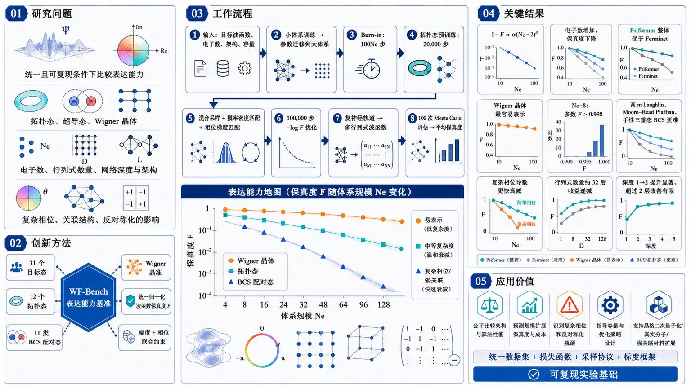
研究问题在统一且可复现的条件下，神经网络波函数对拓扑态、超导态和 Wigner 晶体等不同多体量子态的表达能力如何随电子数、行列式数量、网络深度和架构变化？复杂相位、关联结构与反对称化机制分别会怎样影响波函数保真度和计算成本？创新方法提出 WF-Bench 神经网络波函数表达能力基准：构建覆盖 12 个拓扑态、11 类 BCS 配对态和多种 Wigner 晶体的 31 态数据集，用统一的归一化波函数保真度 F 同时约束幅度与相位，并结合混合采样、概率密度匹配、相位梯度（概率流）匹配和 transfer learning，缓解大体系中的梯度信号消失与 Monte Carlo walker 自陷；进一步扫描电子数、行列式数量和网络深度，拟合经验标度关系。Aha 点在于：把不同物理复杂度的目标波函数转化为同一张可比较的“表达能力地图”。工作流程输入目标波函数、电子数集合、网络架构及容量参数；先以较小电子数训练并继承参数到更大体系，当前规模执行 100Ne 步 burn-in；拓扑态额外进行 20,000 步预训练，通过混合分布匹配概率密度并匹配相位梯度；随后从网络采样分布进行 100,000 步 −log F 保真度优化，网络输出复神经轨道并组合为多行列式波函数；训练结束后进行 100 次 Monte Carlo 评估并取平均保真度，最后比较架构、体系类别和容量变量的表现并拟合 F=1−α(Ne−2)^β。关键结果所有目标波函数的误差 1−F 均可近似用电子数幂律描述，电子数增加会使保真度下降；Psiformer 在全部 31 个目标上整体优于参数量相近的 Ferminet。Wigner 晶体最容易表示，Ne=8 时多数保真度超过 0.998；高 m Laughlin 态、Moore–Read Pfaffian 态和手性三重态 BCS 态更难，复杂相位导致更快衰减。增加行列式数量在约 32 个后收益递减，网络深度从 1 层增至 2 层提升显著，超过 2 层后改善有限。应用价值提供统一的数据集、损失函数、采样训练协议和经验标度框架，可用于公平比较神经网络波函数架构，预测模型随体系规模扩展时的保真度和成本，识别复杂相位与反对称化结构造成的表示瓶颈，并指导新架构、容量配置和优化策略设计。该基准也为后续扩展到晶格二次量子化体系、真实分子和强关联材料提供可复现实验基础。第一部分：核心概览
WF-Bench 将神经网络波函数的可表达性转化为可重复、跨物理体系比较的基准测试问题。数据集包含 31 个目标波函数，覆盖拓扑态、超导态和 Wigner 晶体三类具有不同关联结构、相位复杂度与反对称化机制的量子态。通过统一优化波函数保真度，系统考察电子数、行列式数量和网络深度对可表示性的影响，并发现电子数增长导致 (1-F) 呈经验幂律增长，而增加行列式或深度存在明显收益递减。Psiformer 在参数量相近时整体优于 Ferminet。其主要地位在于提供了面向神经网络波函数表达能力的统一数据集、训练协议和经验标度框架，但因仅比较两种架构且优化误差可能混入表达能力结论，仍属于基准框架的初步建立。
第二部分：结构化快速回顾
《WF-Bench: A Benchmark for Neural Network WaveFunction Expressivity and Scaling Laws》（None，）
背景
神经网络波函数已用于基态优化、激发态光谱、开放系统动力学、实时演化和量子态层析，但不同架构面对不同物理波函数时的表达能力如何变化，缺乏统一理解。精确求解多体薛定谔方程的计算资源随系统规模指数增长，因此需要同时考察精度与计算成本。
方法
构建包含 31 个目标波函数的 WF-Bench，覆盖 12 个拓扑态、11 类 BCS “geminal”态以及多种 Wigner 晶体。以
[
L_F=-łog F
]
为核心损失，并以混合采样、概率密度匹配和相位梯度匹配缓解大体系优化中的信号消失与 walker 自陷。使用 KFAC 优化器，比较 Ferminet 和 Psiformer。
结果
所有测试波函数的保真度均可近似为
[
F=1-α(Nₑ₋₂₎^β.
]
Psiformer 在全部目标上优于 Ferminet；在拓扑态 (Nₑ₌₁₀) 时，两者参数量分别约为 (7.3×10⁵) 和 (8.3×10⁵)。增加 (Nₘ̊ dₑₜ) 在约 32 之后收益有限，增加 (Nₘ̊ ₗₐyₑᵣ) 在 2 层之后收益明显减弱。
讨论
(β) 反映保真度随电子数衰减的速率，(α) 决定小体系下的整体误差尺度。拓扑态和手性三重态的相位与关联结构更复杂，Wigner 晶体因电子局域化而更容易表示。
局限
优化协议并非完美，尤其是拓扑态中的复杂相位结构可能造成训练失败；因此测得的保真度同时受架构表达能力和优化可达性影响。数据集尚未覆盖晶格二次量子化体系、分子及更多强关联体系。文中没有报告统计显著性检验或 (P) 值。
结论
WF-Bench 提供了数据集驱动、架构无关的神经网络波函数表达能力评估框架，可用于比较模型、拟合规模律和指导新架构设计。
第三部分：逐章节冷凝解析
1 Introduction
神经网络波函数已成为多体量子问题的通用变分表示
神经网络波函数利用深度网络的表示能力，已应用于基态优化、激发态光谱、开放系统动力学、实时演化和量子态层析。相关应用横跨凝聚态物理、高能物理、量子化学、量子信息和量子计算。原文将其概括为 *“flexible variational ansätze for quantum many body problems”*，强调其核心角色不是普通监督学习器，而是量子态的变分参数化。
现有架构形成了明显的归纳偏置差异
Ferminet 使用 streaming permutation-equivariant 的一体和二体特征；Psiformer 使用自注意力机制；其他路线包括消息传递图神经网络和面向周期体系的 DeepSolid。不同架构在输入特征、粒子交换对称性、长程关联和周期性处理方面存在结构差异，因此“模型更大”并不等价于“对所有量子态更具表达力”。原文列举的架构包括 *“Ferminet … Psiformer … graph neural networks built on message passing … and DeepSolid”*。
表达能力必须与计算效率共同评价
精确多体薛定谔方程的资源需求随系统规模指数增长，但近似解常可用多项式成本获得。由此形成核心权衡：网络必须在可计算性和表示精度之间取得平衡。原文称，*“a good NN wavefunction must have a careful balance between computational efficiency and representation accuracy.”*
研究缺口是跨体系、跨架构的统一表达能力基准
此前研究分别讨论了特定模型、特定体系或特定理论界限，但没有统一回答：神经网络波函数的表示能力如何随架构、物理体系类别、电子数和模型容量变化。核心缺口被直接表述为 *“there is still no systematic understanding of how representation power varies across architectures and classes of physical systems”*。
WF-Bench 将目标波函数匹配作为基准任务
数据集覆盖拓扑态、Wigner 晶体和超导波函数三类目标，并以 (-łog F) 作为损失，使网络同时匹配目标的幅度和相位。基准参数包括电子数 (Nₑ)、行列式数 (Nₘ̊ dₑₜ) 和网络层数 (Nₘ̊ ₗₐyₑᵣ)。图 1 的流程概括为 *“NN wavefunctions are optimized to match both the phase and the amplitude of the target wavefunctions.”*
数据集覆盖超过 30 个、实际列为 31 个目标波函数
引言先称数据集包含 *“over 30 target wavefunctions”*，结论和图 3 明确为 31 个。三类目标具有不同的关联结构：拓扑态具有非平庸拓扑序和复杂相位；BCS 态具有多种配对对称性和自旋结构；Wigner 晶体具有自发平移对称性破缺。费米反对称性通过Slater 行列式或 Pfaffian实现。
经验尺度律围绕三个变量建立
基准系统改变 (Nₑ)、(Nₘ̊ dₑₜ) 和 (Nₘ̊ ₗₐyₑᵣ)，并研究最大可达到保真度 (F)。主要经验发现是：对数据集中所有波函数，(1-F) 随 (Nₑ) 呈幂律；(Nₘ̊ dₑₜ) 和 (Nₘ̊ ₗₐyₑᵣ) 增加时，保真度先快速提升、随后饱和。引言将该结果总结为 *“1 − F follows a power-law scaling with (Nₑ)”* 和 *“clear diminishing returns”*。
2 Related Work
NN wavefunction architecture
研究路线已从通用基态扩展到多种动力学和统计情形
早期工作聚焦通用多体基态，随后出现自回归波函数以提高采样效率和优化可扩展性。进一步工作涉及有限温度、实时动力学和几何归纳表示。原文概括为 *“rapid growth of NN wavefunctions designed for different tasks”*。
费米统计处理推动了 backflow、Pfaffian 与配对结构的发展
为处理费米子交换反对称性，研究者引入 backflow 变换、费米隐藏态、张量网络自回归网络和消息传递网络。更近期的方向包括神经 Pfaffian、配对型波函数、强关联量子物质以及 Transformer 风格架构。这些进展说明，表达能力不仅由网络深度决定，也取决于波函数输出层是否内置正确的费米结构。
NN wavefunction expressivity
理论工作分别约束纠缠、精确表示和信息论尺度
相关理论结果包括：神经量子态能够有效表示高度纠缠的多体态；深度网络可以精确表示某些多体波函数；经典神经网络表示量子态需要满足特定条件；网络波函数可支持的纠缠存在严格界限；自回归神经量子态存在信息论尺度律。原文指出，已有结果涉及 *“representational power and entanglement structure”*，但这些结论尚未转化为跨物理体系的统一数值基准。
已有数值研究通常局限于少数体系或单一误差指标
此前研究曾使用密度—电流损失并通过波函数重叠研究 Laughlin、Moore–Read 和 BCS 波函数的尺度行为；量子化学研究发现神经网络波函数能量误差按
[
mathcal O(Nₚ⁻⁰.⁵²)
]
缩放，并声称优于 CCSD；另有工作研究 Transformer 神经量子态在受挫 Heisenberg 模型中的尺度律。
WF-Bench 的差异在于统一性和可复现性
既有工作大多集中于某一模型类别、物理区域或具体任务。WF-Bench 将不同相关结构的目标态放入同一数据集，使用统一的保真度目标、采样方法、容量变量和拟合形式。原文明确指出此前存在 *“a lack of a uniform, consistent, and comprehensive study”*。
Algorithm 1 Benchmarking Protocol
电子数采用递增式训练和参数继承
输入包括电子数集合 (Nₑ)、目标态 (|Φångle) 和初始参数 (θ)。先设置 (θₘ̊ ₗₐₛₜ=θ)，随后对每个 (Nₑ) 进行训练，并将前一规模训练后的参数作为下一规模的初始化。这种设计本质上是transfer learning across system sizes。
每个电子数先执行 (100Nₑ) 步 walker burn-in
在每个 (Nₑ) 上，Monte Carlo walker 首先进行 (100Nₑ) 步 burn-in，然后载入上一个规模的参数。该步骤用于使采样分布适应当前系统规模。
拓扑态额外进行 20,000 步预训练
对于拓扑目标，先进行 (t=1) 到 20,000 的预训练。每一步包括 (5Nₑ) 步 burn-in，从混合分布 (pₘ̊ ₘᵢₓ) 采样，并优化 (Lₘ̊ ₚᵣₑ)。这一额外阶段针对拓扑态复杂相位难以直接学习的问题。
所有目标执行 100,000 步保真度训练
随后进行 (t=1) 到 100,000 的 fidelity-loss 优化。每一步进行 (5Nₑ) 步 burn-in，从 (p_θ) 采样，估计 (L_F) 并更新参数。该训练预算是比较不同目标态时的重要控制条件。
最终使用 100 次评估计算平均保真度
训练后再进行 100 次评估；每次都进行 (5Nₑ) 步 burn-in，从 (p_θ) 采样并估计 (F)，最终记录
[
F(Nₑ₎₌ₘₑₐₙ₍F).
]
这减少了单次 Monte Carlo 估计的随机波动，但文中没有给出置信区间或重复随机种子数量。
3 WF-Bench: A comprehensive dataset of important wavefunctions
3.1 Topological wavefunctions
Laughlin 态由 Jastrow 因子和 LLL Gaussian 因子组成
对于奇数 (m)，
[
Ψ_L(zⱼ)=prodᵢ<ⱼ(zᵢ₋zⱼ₎^mmathcal G(zⱼ),
]
其中 (zⱼ₌ₓⱼ₊ᵢyⱼ)，磁长
[
ell_B=sqrthbar/(eB),
]
Gaussian 因子为
[
mathcal G=expłeft[-sumᵢ |zᵢ|²/(4ell_B²⁾ⁱ̊ght].
]
该结构同时包含粒子间强关联和空间包络。原文称 Gaussian 因子 *“originates from lowest Landau level (LLL) projection.”*
Moore–Read 态额外包含 Pfaffian 结构
对于偶数 (m)，
[
Ψₘ̊ MR=
Pfłeft(frac1zᵢ₋zⱼi̊ght)
prodᵢ<ⱼ(zᵢ₋zⱼ₎^mmathcal G.
]
Pfaffian 引入了不同于单纯 Slater 行列式的配对结构，使其对 determinant-based 网络更具挑战性。文中定义 *“(Pf(ḑot)) denotes the Pfaffian.”*
准空穴通过额外的多体解析因子加入
含 (Nₕ) 个准空穴、位置为 (ηₐ) 时，
[
ΨXₕ=
łeft[prodₐ₌₁Nₕprodᵢ₌₁Nₑ(zᵢ₋ηₐ₎ᵢ̊ght]Ψ_X,
quad XinL,MR.
]
准空穴被放置在半径为
[
sqrt2mNₑell_B/2
]
的圆上，即电子液滴半径的一半。
拓扑子集包含 12 个不同 (m) 和准空穴数的态
数据集包含 12 个拓扑态。例如 `laughlinₘ₃ₕ₃` 表示 (m=3)、含 3 个准空穴的 Laughlin 态。其难点来自非平庸拓扑序、强电子关联、准空穴激发以及复杂相位绕转。
3.2 Superconducting wavefunctions
配对函数由动量空间 Cooper-pair orbital 的傅里叶和给出
实空间配对函数为
[
f(mathbf rᵢ,mathbf rⱼ₎₌
sumₘₐₜₕbf ₖg(mathbf k)
eⁱmathbf kḑot⁽mathbf rᵢ₋mathbf rⱼ₎.
]
其中 (g(mathbf k)) 代表 Cooper-pair orbital，不同形式对应不同的配对对称性。原文称其为 *“the Cooper-pair orbital, which takes different forms for different superconducting states.”*
AGP 将 BCS 结构投影到固定粒子数
为保持粒子数守恒，使用 antisymmetrized geminal power：
[
Ψₘ̊ BCS
=mathcal A[
φ(1,1')φ(2,2')ḑotsφ(Nₚ,Nₚ')
],
]
其中
[
Nₚ₌Nₑ/2.
]
反对称化算子 (mathcal A) 通过 Pfaffian 或 determinant 实现。
Geminal 同时编码空间配对和自旋态
单个 geminal 为
[
φ(mathbf rᵢ,mathbf rⱼ,σᵢ,σⱼ₎
=f(mathbf rᵢ,mathbf rⱼ₎
łangleσᵢ,σⱼ|ḩiångle.
]
(|ḩiångle) 可以是单重态或三重态。因此该数据集不只测试空间配对，还测试自旋配置与复相位的联合表达能力。
超导子集包含 11 类配对函数
11 类 geminal 覆盖 (s)-、(p)-、(d)- 和 (f)-wave，并改变空间几何和自旋结构。例如 `bcsₚₚₜₚ` 是手性
[
pₓ₊ᵢₚ_y
]
配对，并采用
[
|p̆arrowp̆arrowångle
]
三重态。该态具有复幅度和非平庸相位结构，后续实验中表现出较快的保真度衰减。
3.3 Wigner crystal wavefunctions
Wigner 晶体通过局域轨道和晶格位点构造
Wigner 晶体描述强库仑作用下电子自发形成晶格图案的状态，其物理特征是连续平移对称性自发破缺为离散晶格结构。局域轨道定义为
[
φⱼ₍mathbf rᵢ₎
=exp[-α V(mathbf rᵢ₋mathbf Rⱼ₎],
]
其中 (α) 控制局域化程度。
数据集包含三类单粒子势
使用 Gaussian orbital、squeezed Gaussian orbital 以及由微扰理论得到的 moiré orbital。多体波函数为
[
Ψₘ̊ WC(mathbf rᵢ)
=det[φⱼ₍mathbf rᵢ₎]ᵢ,ⱼ₌₁Nₑ.
]
晶格位点采用 A、B、C 三种模式
定义
[
A=[0,0],quad B=[1/2,1/2],quad C=[1/3,1/3],
]
其中 ([n,m]) 是六角晶胞内的晶格坐标。例如 `wcₛgauᵥ₁AB` 表示 (ν=2) 整数填充、squeezed Gaussian orbital，并采用 A-B 位点结构。
Wigner 晶体主要测试局域化而非复杂相位绕转
电子局域化压制了复杂相位结构，因此该类态通常比拓扑态和手性超导态更容易表示。与此同时，moiré orbital 的空间结构更复杂，可能造成比普通 Gaussian orbital 更快的保真度衰减。
4 Benchmarking Protocol
保真度损失同时约束幅度和相位
定义
[
L_F=-łogłeft[
frac|łangleΨ_θ|Φångle|²
{łangleΨ_θ|Ψ_θångle
łangleΦ|Φångle}
i̊ght],
]
括号内即归一化波函数保真度 (F)。采用 (-łog F) 的好处是将乘法重叠转化为更适合优化的加性损失。原文将其定义为 *“a straightforward loss … based on the fidelity.”*
梯度通过 (p_θ) 的 Monte Carlo 期望计算
令
[
p_θ(mathbf R)propto|Ψ_θ(mathbf R)|²,
quad
α(mathbf R)=Φ(mathbf R)/Ψ_θ(mathbf R),
]
则梯度可写为式（9）的期望形式。这使大规模连续坐标体系能够用 Monte Carlo 采样训练，而无需显式枚举整个 Hilbert 空间。
直接优化在大电子数下遭遇有效信号消失
随着 (Nₑ) 增大，(α(mathbf R)) 的方差因干涉效应增加，导致 (L_F) 的有效梯度信号减弱。原文称 *“(L_F) suffers from a vanishing effective signal”*，因此直接 fidelity optimization 在大体系中不稳定。
拓扑态的 transfer learning 仍不足以解决复杂相位问题
中等相位复杂度的波函数可以通过 transfer learning 改善早期训练，但拓扑态的复杂 phase winding 使 transfer learning 也可能失败。原文明确指出 *“for topological wavefunctions with complex phase windings, even transfer learning fails.”*
预训练损失由概率匹配和电流匹配组成
采用
[
Lₘ̊ ₚᵣₑ=L₁₊α L₂.
]
其中 (L₁) 匹配概率密度，(L₂) 匹配每个粒子的相位梯度，也就是 probability current 的相关信息。该设计先学习局域幅度和相位梯度，再进入全局保真度优化。
混合采样用于抑制 self-trapping
早期训练可能出现 self-trapping：未归一化网络只在少量构型上匹配幅度，造成高概率区域集中，Monte Carlo walkers 被困住。改进后的概率损失为
[
L₁₌mincᵢₙₘₐₜₕbb R
mathbb Eₚₘ̊ ₘᵢₓ
[(2łogα(mathbf R)-c)²],
]
其中
[
pₘ̊ ₘᵢₓpropto (p_θ+pₜ₎/2.
]
常数 (c) 等价于估计两个波函数的相对归一化因子，使损失对整体归一化不敏感。原文称该混合分布 *“prevents self-trapping.”*
电流匹配直接比较相位梯度
[
L₂₌
mathbb Eₚ_θłeft[
sumᵢ
|nablaₘₐₜₕbf R_ᵢψ_θ(mathbf R)
-nablaₘₐₜₕbf R_ᵢφ(mathbf R)|²
i̊ght].
]
该项的物理作用是约束局部相位变化，而非仅匹配 (|Ψ|²)，因此特别适合具有复杂相位绕转的拓扑目标。
所有损失均使用 KFAC 优化
参数更新使用 Kronecker-factored approximate curvature（KFAC）。算法流程中，对拓扑态执行 20,000 步预训练，对全部态执行 100,000 步 fidelity optimization，最后用 100 次 Monte Carlo 估计取均值。
保真度与可观测量误差的关系被放入附录
正文指出附录讨论 observable error 与 fidelity 的关系，但所提供的论文内容未包含 Appendix D 的具体推导，因此无法进一步核验其误差界、假设条件或常数因子。
5 Neural Network Wavefunction Architectures
Ferminet 使用一体与二体输入特征
Ferminet 同时构造 one-electron 和 two-electron features，并采用 one-body 与 two-body streams。这里的结构先利用粒子位置构造特征，再通过 contextual encoder 输出每个电子的轨道表示。
Psiformer 只使用一体特征并引入自注意力
Psiformer 使用 one-electron feature，之后经过多层 self-attention block + MLP。其隐藏维度 (Nₘ̊ ₕᵢd) 对应 self-attention 的 attention dimension。该结构通过注意力机制建立粒子间上下文关联。
Ferminet 使用 SchNet 增强版本实现流间混合
原始 Ferminet 会拼接一体流和二体流；这里使用 SchNet-enhanced version，通过 continuous-filter convolution 实现 inter-stream mixing。该实现细节可能影响模型间公平比较，因为比较对象并非最原始的 Ferminet。
两个架构最终都输出多个复神经轨道
编码器输出
[
hₘ̊ ₒᵣbinmathbb RNₑ× Nₘ̊ ₕᵢd,
]
再通过线性层投影为 (Nₘ̊ dₑₜ) 组神经轨道的实部和虚部：
[
φ_θ^kinmathbb CNₑ× Nₑ,
quad k=1,łdots,Nₘ̊ dₑₜ.
]
多行列式求和构成最终波函数
网络波函数为
[
Ψ_θ(mathbf R)
=sumₖNₘ̊ dₑₜ
det[φ_θ^k].
]
因此 (Nₘ̊ dₑₜ) 是直接控制表示容量的重要变量。该结构本质上是基于 neural backflow 的多行列式扩展。
拓扑态使用指数衰减 envelope 注入先验
对全部拓扑态，轨道乘以
[
Ømegaᵢ,ⱼ=exp(-σᵢ|rⱼ|),
]
即
[
φ^kᵢ,ⱼłeftarrowØmegaᵢ,ⱼφ^kᵢ,ⱼ.
]
该 envelope 用于近似 Laughlin/Moore–Read Gaussian 因子造成的强空间衰减。因而拓扑态实验并非完全无先验的黑箱表示。
6 Results and Discussions
6.1 Electron Number Scaling
所有目标的保真度都近似遵循统一幂律
拟合形式为
[
F=1-α(Nₑ₋₂₎^β.
]
(α) 控制小电子数时的总体尺度，(β) 表示随 (Nₑ) 增大而衰减的速率。偏移量 2 来自假设 (F(Nₑ₌₂₎) 接近 1，因为非平庸电子—电子关联从 (Nₑge2) 开始出现。原文称 *“the fidelity scaling of all wavefunctions can be well approximated by a power law.”*
(α) 与 (β) 必须联合解释
即使 (β) 较小，较大的 (α) 也会在小体系中造成明显 fidelity loss。因此作者将 (F(8)) 作为实际比较指标，而不是只比较幂指数。该点避免了把“衰减速度”和“初始可表示性”混为一谈。
Psiformer 在全部目标上超过 Ferminet
在相近参数量下，Psiformer 对数据集所有波函数都取得更高表现。以拓扑态 (Nₑ₌₁₀) 为例，Ferminet 约有
[
7.3×10⁵
]
个参数，Psiformer 约有
[
8.3×10⁵
]
个参数。该结果支持注意力上下文编码对目标波函数表达具有优势，但由于参数量并不完全相等，不能严格归因于架构本身。
表 1 显示不同类别之间的巨大难度差异
在 (Nₑ₌₈)、(Nₘ̊ dₑₜ=8)、(Nₘ̊ ₗₐyₑᵣ=2) 时：
- `laughlinₘ₅`：Ferminet (F=0.8737)，Psiformer (F=0.9966)；
- `mooreₘ₂`：Ferminet (0.9777)，Psiformer (0.9934)；
- `laughlinₘ₃ₕ₂`：Ferminet (0.9707)，Psiformer (0.9968)；
- `bcsₛ`：Ferminet (0.9925)，Psiformer (0.9954)；
- `bcs_fpₜₚ`：Ferminet (0.8902)，Psiformer (0.9498)；
- `bcs_dxy`：Ferminet (0.9765)，Psiformer (0.9843)；
- `wc_gauᵥ₁A`：Ferminet (0.9998)，Psiformer (0.9999)；
- `wcₘₒᵢᵣₑᵥ₁A`：Ferminet (0.9993)，Psiformer (0.9996)；
- `wcₛgauᵥ₂AC`：Ferminet (0.9981)，Psiformer (0.9995)。
这些数值表明Wigner 晶体最容易表示，而手性超导态和高 (m) 拓扑态更难。
手性三重态 BCS 波函数衰减最快
`bcs_fpₜₚ` 是 chiral triplet state，具有复振幅和非平庸相位。它在 Ferminet 中的拟合参数为
[
α=2.25×10⁻³,quad β=2.21,
]
RMSE (=2.77×10⁻²)；Psiformer 中为
[
α=9.14×10⁻⁴,quad β=2.20,
]
RMSE (=8.97×10⁻³)。
原文将此归因于 *“wavefunction complexity”*。
拓扑态在小体系中保真度高，但随电子数快速下降
拓扑态拟合参数体现了较大的幂律衰减：
- `laughlinₘ₅`：Ferminet (β=3.02)，Psiformer (β=2.60)；
- `mooreₘ₂`：Ferminet (β=2.17)，Psiformer (β=2.81)；
- `laughlinₘ₃ₕ₂`：Ferminet (β=2.99)，Psiformer (β=3.01)。
其物理解释是电子关联随系统规模呈组合式增长。原文称 *“their complexity grows combinatorially with system size.”*
更大的 Laughlin (m) 增强表示难度
`laughlinₘ₅` 比其他拓扑目标衰减更快，原因是更大的 (m) 加强 Jastrow 关联。`laughlinₘ₃ₕ₂` 虽然 (m=3) 较小，但准空穴激发增加了学习难度。
Moore–Read 的 Pfaffian 使 determinant 网络面临结构错配
`mooreₘ₂` 包含 Pfaffian 结构。即使其 (m) 不高，determinant-based neural ansatz 仍可能更难表示。该结论体现了目标态反对称化结构与网络输出结构之间的归纳偏置匹配。
拓扑态可能发生相位信息不足导致的保真度崩溃
若预训练阶段没有捕获足够的 phase information，拓扑态的网络 fidelity 可能突然塌缩。该现象并非单纯的幅度误差，而是相位绕转不连续或全局相位结构无法恢复。原文称 *“network fidelity can collapse if the representation capacity is insufficient to capture enough phase information.”*
Wigner 晶体表现出最慢的保真度衰减
Wigner 晶体的强局域化减少了复杂相位绕转，因此三类目标中其 fidelity 随 (Nₑ) 下降最慢。表 1 中 (F(8)) 几乎都超过 0.998，明显高于困难的手性 BCS 和部分拓扑态。
Moiré 轨道增加了 Wigner 晶体的结构复杂性
`wcₘₒᵢᵣₑᵥ₁A` 的 Ferminet 拟合为
[
α=3.79×10⁻⁵,quad β=1.61,
]
Psiformer 拟合为
[
α=3.85×10⁻⁶,quad β=2.56.
]
尽管总体 fidelity 很高，moiré 轨道的空间结构仍造成更明显的衰减。这里说明低关联不代表所有单粒子结构都同样容易表示。
拟合误差总体较小，但部分结果的 RMSE 暗示模型并非严格幂律
例如 Ferminet 的 `mooreₘ₂` RMSE 为 (5.90×10⁻³)，`bcs_fpₜₚ` RMSE 为 (2.77×10⁻²)；Psiformer 的对应 RMSE 分别为 (3.55×10⁻³) 和 (8.97×10⁻³)。文中未提供拟合置信区间、残差检验或模型比较，因此“幂律”应理解为经验近似，而非已证明的渐近定律。
6.2 Ablation study on (Nₘ̊ dₑₜ) and (Nₘ̊ ₗₐyₑᵣ)
增加行列式数在小规模时显著提升保真度
对 `bcsₛ` 和 `mooreₘ₂` 进行 (Nₘ̊ dₑₜ) 消融。Ferminet 在 (Nₑ₌₁₀)、Psiformer 在 (Nₑ₌₁₄) 上评估，两者均设置 (Nₘ̊ ₗₐyₑᵣ=2)。小 (Nₘ̊ dₑₜ) 区间内 fidelity 快速提升，说明多行列式扩展初期有效增加表示容量。
约 32 个行列式后出现收益递减
当
[
Nₘ̊ dₑₜgtrsim32
]
时，继续增加行列式只带来边际改善。由于计算成本与 (Nₘ̊ dₑₜ) 线性增长，过大的 determinant expansion 会产生显著额外开销。原文概括为 *“further increases yield only marginal improvements in fidelity.”*
一层网络不足以表示复杂目标
对网络深度进行消融时，Ferminet 取 (Nₑ₌₁₀)，Psiformer 取 (Nₑ₌₁₄)，两者固定 (Nₘ̊ dₑₜ=8)。当 (Nₘ̊ ₗₐyₑᵣ=1) 时整体 fidelity 很低；对于 `mooreₘ₂`，两个架构都无法有效表示该波函数。
从一层增加到两层是最重要的深度增益
当 (Nₘ̊ ₗₐyₑᵣ) 从 1 增加到 2 时，`bcsₛ` 和 `mooreₘ₂` 的 fidelity 都显著改善，说明最初增加上下文处理深度能够解决基础的多体关联表达问题。
两层之后继续加深的收益有限
当 (Nₘ̊ ₗₐyₑᵣ>2) 时，保真度仅有 modest gains。该结果支持“深度不是无限有效容量旋钮”的判断，但实验只报告两类目标，不能直接推广到所有 31 个波函数或更深网络。
7 Conclusion
WF-Bench 将表达能力评估组织为统一数据集
数据集包含三类体系、31 个目标波函数，覆盖不同的关联强度、相位复杂度和反对称化机制。结论将其定位为 *“a comprehensive dataset … across physically distinct many body systems.”*
电子数尺度表现为经验幂律衰减
在所有目标上，可达到的 fidelity 随 (Nₑ) 增加而按经验幂律下降。这一结论统一了拓扑、超导和 Wigner 晶体三种物理类别，但没有被理论推导支撑，且依赖具体训练协议和拟合区间。
模型容量旋钮存在普遍收益递减
(Nₘ̊ dₑₜ) 在小值时带来快速提升，超过中等阈值后饱和；(Nₘ̊ ₗₐyₑᵣ) 超过较小层数后收益有限。该结论对模型设计具有直接工程意义：盲目扩大 determinant expansion 或堆叠深度可能不如改善架构归纳偏置和优化稳定性。
Psiformer 在近似参数规模下整体胜出
Psiformer 在所有目标波函数上取得更高 fidelity，显示 self-attention 对多体上下文建模可能更有效。由于两者参数量并非严格相同，且 Ferminet 使用 SchNet 增强版本，结论更准确的表述应是：在本实验设置下，Psiformer 的整体基准表现更好。
框架的架构无关性仍是待验证属性
结论称框架可应用于 emerging models，属于方法设计上的可扩展性主张，而非已由大量架构验证的事实。当前实验只覆盖 Ferminet 和 Psiformer，尚不足以证明对所有网络形式真正“architecture agnostic”。
优化协议是主要残余不确定性
结论明确承认 *“the optimization protocols adopted in this work can still be further improved”*，且优化改善可能改变所得到的 scaling behavior。这意味着当前 (α)、(β) 同时包含表达能力、初始化、采样、优化器和训练预算的影响。
未来扩展方向覆盖更广泛的量子体系
提出扩展到二次量子化晶格模型、化学分子和其他强关联量子系统。数据与损失函数的 JAX 实现公开于 `https://github.com/L0bsterkun/WF-Bench`。
第四部分：深度理解与语言支持
1. 关键术语解析
Expressivity
Expressivity 通常译为“表达能力”或“可表达性”，指模型函数族能够逼近哪些目标函数或量子态。它不同于最终训练效果：一个网络可能理论上能表示某个波函数，但优化算法无法找到对应参数，因此实际 fidelity 仍然很低。
Representability
Representability 更强调“某个具体目标波函数能否被当前架构和容量表示”。在该语境中，representability 是目标态、网络结构、参数量和训练方法的联合属性，并非网络独立拥有的固定标量。
Fidelity
Fidelity 是归一化波函数重叠的平方：
[
F=
frac|łangleΨ|Φångle|²
łangleΨ|ΨånglełangleΦ|Φångle.
]
它同时敏感于幅度和相位。仅匹配概率密度 (|Ψ|²) 不能保证 fidelity 高，因为两个波函数可能具有相同幅度但不同相位结构。
Diminishing returns
Diminishing returns 指容量继续增加时，性能增益逐渐变小。这里不是说增加 (Nₘ̊ dₑₜ) 或 (Nₘ̊ ₗₐyₑᵣ) 完全无效，而是说初期提升显著、达到约 32 个行列式或约 2 层后边际收益明显降低。
Self-trapping
Self-trapping 是 Monte Carlo 优化中的采样动力学问题：网络在少量构型上获得较低损失，使 (p_θ) 集中到局部高概率区域，walker 难以探索目标波函数的重要区域。这不是物理上的晶格自陷，而是优化与采样耦合导致的模式坍缩式现象。
2. 疑难概念：为什么 fidelity 优化会失效？
直接优化 fidelity 需要估计
[
α(mathbf R)=Φ(mathbf R)/Ψ_θ(mathbf R).
]
当电子数增加时，波函数振荡、节点和相位干涉变得更加复杂。若 (Ψ_θ) 在某些目标重要区域接近零，(α) 会出现大幅波动；若网络相位与目标相位错位，不同构型的贡献还会发生强烈抵消。因此样本数增加未必能有效提高梯度信噪比，反而可能使估计方差迅速增大。
混合分布
[
pₘ̊ ₘᵢₓpropto(p_θ+pₜ₎/2
]
的意义在于：采样不再完全由当前网络决定，而是强制引入目标波函数覆盖的区域。概率匹配项先校正 (|Ψ_θ|²)，电流匹配项再校正局部相位梯度，最后才使用全局 fidelity。这是一种“先建立局部覆盖，再优化全局重叠”的训练逻辑。
3. 疑难概念：(α) 和 (β) 到底分别代表什么？
在
[
1-F=α(Nₑ₋₂₎^β
]
中，(β) 不是单独的“波函数复杂度分数”。它描述误差随电子数增长的相对速度；(α) 则描述误差的初始尺度。两个目标可能有相同 (β)，但其中一个的 (α) 更大，因此在 (Nₑ₌₈) 时 fidelity 已明显更低。
此外，这个公式包含人为的 (Nₑ₋₂) 平移，并基于 (F(2)approx1) 的假设。因此它更像一个有限尺寸经验拟合形式，不能自动解释为从 (Nₑ→infty) 的严格理论标度律。
4. 疑难概念：为什么 Wigner 晶体比拓扑态容易表示？
Wigner 晶体中的电子被局域在预定晶格位点附近，单粒子轨道具有强烈空间局域性，电子在不同区域之间的相位绕转较少。因而网络主要需要学习局域峰的位置、宽度和反对称化，而不需要精确复现拓扑态中随粒子交换和准空穴运动产生的复杂全局相位。
这并不意味着 Wigner 晶体没有强关联。其关联体现在局域化和晶格结构上，只是这种关联更容易由 determinant 加局域轨道表示。moiré orbital 的结果也说明，相位简单不等于结构简单：空间轨道本身的几何复杂度仍会影响 fidelity scaling。
第五部分：创新评估与关联
1. 相对于近年工作的主要新颖性
从单一模型研究推进到跨类别数据集
过去 2-5 年的相关工作主要分散在自回归波函数、量子化学能量尺度律、Transformer 神经量子态、Laughlin/Moore–Read/BCS 特定目标以及纠缠理论分析。WF-Bench 的新意不在于提出全新的神经网络基本单元，而在于把拓扑态、超导态和 Wigner 晶体放入同一表达能力测试框架。
从能量误差转向波函数级 fidelity
量子化学中的能量误差可能很小，但并不保证完整波函数的相位、节点和幅度都正确。WF-Bench 使用归一化波函数重叠作为统一指标，直接评估目标波函数是否被表示。该选择特别适合比较具有不同物理 Hamiltonian、不同能量尺度和不同反对称化结构的目标。
把架构容量变量显式纳入尺度律分析
已有尺度研究常关注样本数、系统规模或训练误差；这里同时改变
[
Nₑ,quad Nₘ̊ dₑₜ,quad Nₘ̊ ₗₐyₑᵣ,
]
并报告 (Nₘ̊ dₑₜapprox32) 和 (Nₘ̊ ₗₐyₑᵣapprox2) 附近的收益递减。它回答了一个具有实际设计价值的问题：继续增加多行列式数量或网络深度，何时开始不划算。
将物理复杂度与拟合指数联系起来
拓扑态、手性三重态和 Wigner 晶体呈现不同的 (F(8))、(α) 和 (β)。例如 `laughlinₘ₅` 的 Ferminet (β=3.02)，而 `wc_gauᵥ₁A` 的 (β=2.21)，且后者 (F(8)=0.9998)。这为“相位复杂度、Pfaffian 结构、局域化程度如何影响可表达性”提供了可量化入口。
2. 它解决了前人未充分解决的什么问题？
核心解决的是缺乏统一、可重复、跨体系的 neural-wavefunction expressivity benchmark。此前可以知道某个架构在某个 Hamiltonian 上能获得低能量，或某个理论模型具有什么纠缠表示界限，但很难公平回答：
- 一个网络对不同相关结构的目标态表现是否一致；
- fidelity 随电子数如何变化；
- 增加行列式或深度的收益何时饱和；
- 架构差异究竟来自参数量，还是来自归纳偏置；
- 复杂相位而非概率密度是否是主要瓶颈。
WF-Bench 通过统一目标函数、目标数据、训练流程和拟合形式，首次将这些问题组织成一个可复现实验对象。
3. 创新性的边界与不足
经验幂律尚未构成理论尺度律
文中的 scaling law 是经验拟合，不是从纠缠理论、复杂度理论或多体波函数结构严格推导出的定律。缺少拟合区间、参数置信区间、不同函数形式的交叉验证，也没有报告 (P) 值。因此应称为empirical scaling relation，不宜表述为已确立的普适规律。
架构比较存在混杂变量
Psiformer 与 Ferminet 参数量不完全相同；Ferminet 使用 SchNet-enhanced 版本；两种架构在输入特征和网络归纳偏置上也不同。因此 Psiformer 更高的 fidelity 不能完全归因于 self-attention。
优化可达性没有被完全剥离
复杂目标的低 fidelity 可能源于三种不同原因：网络无法表示、网络可以表示但优化失败、Monte Carlo 估计噪声过大。当前协议虽然加入 (Lₘ̊ ₚᵣₑ)、混合采样和 KFAC，但尚未通过多随机种子、不同优化器、增加训练预算或已知可表示性控制组来严格区分这三者。
数据集规模和物理覆盖仍有限
数据集实际包含 31 个态，且体系集中于连续坐标、多电子波函数。尚未覆盖晶格二次量子化模型、真实分子、周期材料的广泛类别以及更多神经 Pfaffian、autoregressive 和 diffusion wavefunction 架构。因此其创新性主要是基准化和统一评估框架的创新，而不是完整解决神经网络波函数表达理论。
-
14
📊 含图深析
📄 摘要：QGF-Net面向细粒度图像分类，将自监督视觉变换器用于全局表征，并引入量子测量注意力以捕捉局部判别区域。输入类别间差异小、类内变化大且有效线索局部集中；所给摘要未完整提供网络细节、数据集、精度或量子模块的具体定义。
📖 英文原文
Fine-grained image classification (FGIC) aims to distinguish subordinate categories within the same basic-level class, and remains highly challenging due to small inter-class differences, large intra-class variations, and the fact that discriminative cues are often concentrated in local regions [2, 3]. Recently, self-supervised Vision Transformer (ViT) models have achieved remarkable success in visual representation learning and provide powerful global semantic features for downstream classification tasks [10, 11]. However, existing methods still suffer from two limitations. First, self-supervised ViT tends to focus more on global semantics while being insufficiently sensitive to subtle local discriminative regions that are crucial for fine-grained recognition [7, 8]. Second, conventional attention mechanisms mainly rely on classical similarity computation, which may be insufficient for modeling complex high-order nonlinear dependencies among local regions; meanwhile, recent quantum-enhanced vision studies suggest that parameterized quantum circuits can provide an alternative mechanism for modeling structured dependencies [19, 20]. To address these issues, this paper proposes QGF-Net, a hybrid quantumclassical fine-grained image classification network that integrates self-supervised visual representations, illumination-consistent local feature stabilization, local discriminative region proposal, and quantum measurement attention into a unified architecture. Specifically, a DINOv2-pretrained ViT is first employed to extract global semantic features and patch token representations from input images [11]. Then, an Illumination-Consistent Local Coarse Fusion (ICLCF) module is introduced to improve the robustness and consistency of local token features under illumination changes. Based on the stabilized local representations, a Local Discriminative Region Proposal (LDRP) module is designed to identify the most informative local regions, thereby narrowing the search space for fine-grained recognition. A Quantum Measurement Attention (QMA) module is further constructed to model the relationships among key local regions through a lightweight parameterized quantum circuit, where qubit measurement results are used to generate adaptive attention weights for enhancing local discriminative representations [18–20]. Finally, the global semantic features and quantum-enhanced local features are fused and fed into a Hybrid Quantum-Classical Classifier (HQCC) for final prediction. Experimental results on three representative fine-grained benchmarks, namely CUB-200-2011, Stanford Cars, and FGVC-Aircraft, demonstrate that QGF-Net consistently outperforms strong CNN, Transformer, and locally enhanced baselines in terms of Top-1 Accuracy, Macro-F1, and robustness [13, 15, 16]. The full model achieves 92.0%, 94.2%, and 89.5% Top-1 accuracy on CUB, Cars, and Aircraft, respectively, with an average Top-1 accuracy of 91.9%. Robustness experiments under brightness, shadow, and occlusion perturbations further show that QGF-Net achieves the smallest average accuracy drop among compared methods. Ablation studies verify the effectiveness of ICLCF, LDRP, QMA, and HQCC, and additional sensitivity analysis demonstrates that the proposed quantum module provides a favorable balance between representation gain and training stability. Overall, QGF-Net provides a promising paradigm for fine-grained image classification by combining self-supervised ViT with hybrid quantum-classical modeling.
💡 亮点：QGF-Net结合自监督视觉变换器和量子测量注意力，处理细粒度分类中局部差异小、类内变化大的问题。其核心是用全局自监督表征配合局部判别注意力，而不是材料物理模型。提供的摘要未给出数据集、精度、参数规模或量子测量实现，因此与团队材料模拟没有直接交叉，只能作为通用表征学习方法参考。
🔬 与我们研究方向的关系
📐 方法要点：方法上，摘要目前只能确认：论文题目和摘要中可确认的方法。需要回到原文核对数据来源、标签定义、模型架构、物理约束和验证集，不能把题名直接等同于可迁移算法。若要接入团队的 ML 势或 Hamiltonian 流程，应先确认它是否同时学习能量、力、应力、自旋、极化或电子结构，以及是否报告跨材料/跨温度外推。还需核对原文的训练数据规模、损失函数、边界条件和误差分解，才能判断其是否适合团队的材料模拟任务。
🔗 相关工作关联：与团队方向的可能连接在于：AI for science 与材料/物理问题的结构化分析。团队已有机器学习势、第一性原理、有效 Hamiltonian、缺陷计算、电子—声子耦合和有限温度动力学基础，但该文是否提供可复用数据或物理量仍需查证。若研究对象属于机器人、量子信息或电网等非材料场景，关联主要是物理约束学习、少样本建模或不确定性评估，而不是直接迁移材料机制。这种联系应通过同一材料体系上的独立基准和跨分布测试确认，不能仅凭方法名称或期刊来源下结论。
💡 对你方向的启示：对《QGF-Net：自监督视觉变换器与量子测量注意力的细粒度图像分类》的启示是先做可证伪的对接：从一个已有材料体系和小规模 DFT 基准开始，明确输入、目标、基线和外推测试，再决定是否接入铁电/磁性、缺陷或载流子动力学工作。具体可先把该文的表示或损失函数在 HfO₂、二维滑移铁电、CrI₃/CrSBr、SiC/GaN 缺陷或卤化物钙钛矿上做小规模复现；若没有直接交叉，应保留为方法参考而非强行迁移。第一步可以选取团队已有的 HfO₂、二维磁体、半导体缺陷或钙钛矿数据做小样本试验，再决定是否扩大到生产级计算。
📖 展开分析 + 配图
研究问题细粒度图像类别往往只由鸟类羽冠、车灯或飞机机翼等微小局部差异区分；在光照变化、阴影和遮挡干扰下，如何从图像中稳定定位最具判别性的区域，并建模这些区域之间的关系以提升分类准确率与鲁棒性？创新方法提出 QGF-Net 混合量子-经典架构：以 DINOv2 自监督 ViT 提取全局语义与 patch 特征，先通过 ICLCF 稳定光照变化下的局部 token，再由 LDRP 筛选关键判别区域，随后利用参数化量子线路和量子比特测量结果生成自适应局部注意力权重，建模区域关系并增强局部表示，最后与全局特征融合，由 HQCC 完成分类。Aha！点在于用量子测量结果直接驱动局部区域注意力，而非仅依赖经典相似度。工作流程输入细粒度图像→DINOv2 ViT 提取全局特征与 patch token→ICLCF 进行照明一致局部粗融合→LDRP 提议并筛选高信息量局部区域→QMA 将关键区域编码进轻量参数化量子线路→测量量子比特并生成自适应注意力权重→增强局部判别特征→融合全局语义与量子增强局部特征→HQCC 输出类别预测。关键结果在 CUB-200-2011、Stanford Cars 和 FGVC-Aircraft 上，Top-1 准确率分别达到 92.0%、94.2% 和 89.5%，摘要报告平均准确率为 91.9%，整体优于较强 CNN、Transformer 及局部增强基线。在亮度、阴影和遮挡扰动下，QGF-Net 的平均准确率下降最小；消融实验验证 ICLCF、LDRP、QMA 与 HQCC 均有效，敏感性分析显示量子模块在表示增益与训练稳定性之间取得较好平衡。应用价值提升了对外观差异细微目标的识别能力，适用于鸟类物种识别、车型识别、飞机型号识别等细粒度视觉任务；其光照一致局部建模、判别区域筛选和扰动鲁棒性也可服务于复杂户外环境中的智能监控、交通分析、生态调查与工业视觉检测。核心概览
论文提出 QGF-Net，一种结合自监督 ViT、局部区域建模与量子测量注意力的混合量子-经典网络，用于细粒度图像分类，重点提升局部判别能力与扰动鲁棒性。
方法要点
- 使用 DINOv2 预训练 ViT 提取全局语义特征和图像块（patch）表示。
- 设计照明一致局部粗融合模块（ICLCF），增强局部 token 在光照变化下的稳定性与一致性。
- 设计局部判别区域提议模块（LDRP），筛选对细粒度识别最有信息量的局部区域。
- 设计量子测量注意力模块（QMA），通过轻量化参数化量子线路建模关键局部区域之间的关系。
- 使用量子比特测量结果生成自适应注意力权重，以增强局部判别表示。
- 融合全局语义特征与量子增强局部特征。
- 通过混合量子-经典分类器（HQCC）完成最终预测。
- 通过消融实验评估 ICLCF、LDRP、QMA 和 HQCC 的作用，并通过敏感性分析考察量子模块在表示增益与训练稳定性之间的平衡。
关键结果
- 在 CUB-200-2011、Stanford Cars 和 FGVC-Aircraft 三个细粒度分类基准上，QGF-Net consistently 优于较强的 CNN、Transformer 及局部增强基线。
- Top-1 准确率分别为：
- CUB-200-2011：92.0%
- Stanford Cars：94.2%
- FGVC-Aircraft：89.5%
- 摘要报告的平均 Top-1 准确率为 91.9%。
- 在亮度、阴影和遮挡扰动下，QGF-Net 相比对比方法取得最小的平均准确率下降，说明其鲁棒性较强。
- 消融实验验证了 ICLCF、LDRP、QMA 和 HQCC 的有效性。
- 敏感性分析表明，量子模块在表示能力提升和训练稳定性之间取得了较有利的平衡；具体量化结果摘要未详述。
- 摘要未详述各个模块单独带来的准确率增益、具体对比基线及统计显著性。
创新性判断
- 可能的主要新颖点是：将自监督 ViT 的全局语义表示、光照一致局部特征处理、局部判别区域选择，以及量子测量注意力整合到统一的细粒度分类架构中。
- QMA 尝试用参数化量子线路及量子测量结果生成局部区域注意力，可能区别于主要依赖经典相似度计算的注意力机制。
- ICLCF 与 LDRP 分别针对光照变化下的局部特征稳定性和细粒度判别区域筛选，构成对局部识别能力的配套增强。
- 混合量子-经典分类器及其与自监督 ViT、局部建模的联合使用，可能是架构层面的组合创新。
- 但仅依据摘要，无法确认量子模块相对于经典注意力的独立贡献、理论新颖性、量子线路具体结构及实际计算优势；其创新程度仍需结合全文、方法细节和更完整的对比实验判断。
-
15
📊 含图深析
📄 摘要：针对锂离子电池仅有任意电压区间部分放电曲线的现实场景，作者提出物理信息深度学习方法估计健康状态SOH并在线预测退化。模型结合数据驱动学习与物理动机退化动力学，以处理不完整、非均匀运行数据；摘要未给出电池化学体系、误差或预测时长。
📖 英文原文
arXiv:2608.14764v1 Announce Type: new Abstract: With the increasing integration of renewable energy sources, energy storage systems have become essential, making the accurate estimation of their State of Health (SOH) and degradation behavior critical. In this work, we propose a physics-informed deep learning approach for lithium-ion battery SOH prediction using incomplete discharge curves extracted from arbitrary voltage ranges, thereby reflecting realistic and heterogeneous operating conditions. The proposed method combines data-driven learning with physically motivated degradation dynamics to ensure consistent and reliable SOH estimation from partial discharge information, achieving a MAPE below 4%. In addition, a real-time degradation trend estimation strategy is introduced to detect key aging transitions without requiring prior knowledge or historical data, making it applicable to a wide range of batteries. Overall, our approach enables SOH estimation from arbitrary discharge segments and a real-time degradation forecast that continuously integrates all usage, overcoming previous methods that rely on fixed protocols or early, non-adaptive predictions.
💡 亮点：工作用物理信息神经网络从任意电压区间的部分放电曲线实时估计锂离子电池SOH，并预测退化趋势。模型将数据驱动表示与物理动机退化动力学结合，针对真实运行中曲线不完整和工况异质的问题。摘要没有给出电池体系、网络架构、退化方程、样本量或误差，因此只能确认方法目标，不能补充寿命提升等结论。
🔬 与我们研究方向的关系
📐 方法要点：方法上，摘要目前只能确认：论文题目和摘要中可确认的方法。需要回到原文核对数据来源、标签定义、模型架构、物理约束和验证集，不能把题名直接等同于可迁移算法。若要接入团队的 ML 势或 Hamiltonian 流程，应先确认它是否同时学习能量、力、应力、自旋、极化或电子结构，以及是否报告跨材料/跨温度外推。还需核对原文的训练数据规模、损失函数、边界条件和误差分解，才能判断其是否适合团队的材料模拟任务。
🔗 相关工作关联：与团队方向的可能连接在于：AI for science 与材料/物理问题的结构化分析。团队已有机器学习势、第一性原理、有效 Hamiltonian、缺陷计算、电子—声子耦合和有限温度动力学基础，但该文是否提供可复用数据或物理量仍需查证。若研究对象属于机器人、量子信息或电网等非材料场景，关联主要是物理约束学习、少样本建模或不确定性评估，而不是直接迁移材料机制。这种联系应通过同一材料体系上的独立基准和跨分布测试确认，不能仅凭方法名称或期刊来源下结论。
💡 对你方向的启示：对《基于物理信息神经网络的部分放电实时电池健康估计与退化预报》的启示是先做可证伪的对接：从一个已有材料体系和小规模 DFT 基准开始，明确输入、目标、基线和外推测试，再决定是否接入铁电/磁性、缺陷或载流子动力学工作。具体可先把该文的表示或损失函数在 HfO₂、二维滑移铁电、CrI₃/CrSBr、SiC/GaN 缺陷或卤化物钙钛矿上做小规模复现；若没有直接交叉，应保留为方法参考而非强行迁移。第一步可以选取团队已有的 HfO₂、二维磁体、半导体缺陷或钙钛矿数据做小样本试验，再决定是否扩大到生产级计算。
📖 展开分析 + 配图
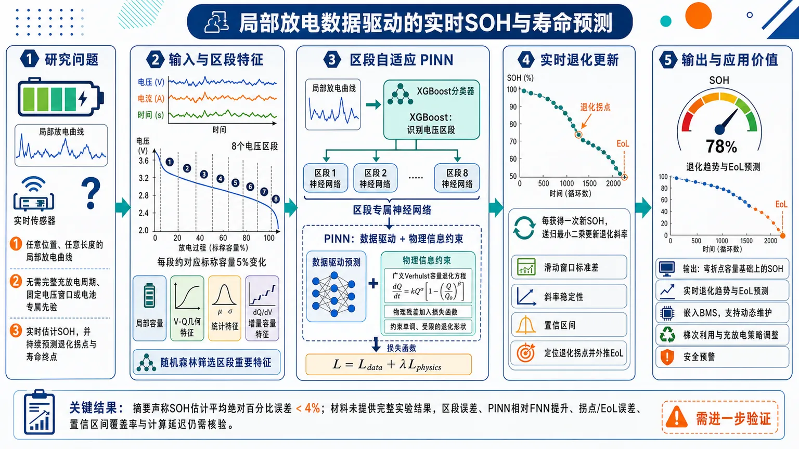
研究问题在真实运行中只能获得任意位置、任意长度的局部放电曲线时，能否不依赖完整充放电周期、固定电压窗口或电池专属先验，实时估计锂离子电池健康状态，并随着新数据到达持续预测退化拐点与寿命终点？创新方法提出融合“电压区段自适应识别、区段专属特征与神经网络、物理信息约束、在线退化更新”的PINN框架：先用XGBoost判断局部放电段所属电压类别，再调用对应模型；将随机森林筛选出的区段特征输入PINN，并把广义Verhulst容量退化方程作为物理残差加入损失函数，迫使预测轨迹保持单调、受限的退化形状；随后用递归最小二乘线性回归实时更新退化斜率，通过斜率稳定性和置信区间识别退化拐点及EoL。工作流程采集局部电压、电流和时间序列 → 将放电曲线划分为覆盖3.6–2.0 V的8个电压区段，每段约对应标称容量5%的变化 → 独立计算局部容量并提取V-Q几何、统计量和增量容量等候选特征 → 用随机森林按电压区段筛选重要特征 → 用XGBoost识别新输入所属区段 → 调用该区段专属神经网络和广义Verhulst物理残差联合训练的PINN → 输出弯折点容量基础上的SOH → 每获得一次新SOH便在线更新线性退化趋势 → 根据斜率变化、滑动窗口标准差和置信区间定位退化拐点并外推EoL。关键结果摘要声称SOH估计平均绝对百分比误差低于4%，并支持不依赖完整历史寿命轨迹或电池专属参数的实时退化趋势更新。提供材料未包含完整实验结果，尚无法核验不同电压区段的误差、PINN相对FNN的提升幅度、拐点与EoL预测误差、置信区间覆盖率及计算延迟；因此“低于4%”应视为摘要层面的总体主张。应用价值可嵌入电池管理系统，在车辆、储能设备等无法持续获得完整充放电曲线的场景中，仅利用新到达的局部放电数据实时更新SOH和寿命轨迹，减少固定测试协议与早期寿命样本依赖，为动态维护、梯次利用、充放电策略调整和安全预警提供依据。其工程适用性仍需通过不同温度、倍率、材料体系和实际工况验证。第一部分：核心概览
该研究提出一种面向真实运行场景的物理信息神经网络（PINN）框架，仅利用任意电压区间内的部分锂离子电池放电曲线估计健康状态（SOH），无需完整充放电周期或预定义电压窗口。方法将分段特征、XGBoost电压区间识别、区段专属神经网络与Verhulst退化方程结合，在SOH估计中加入单调退化约束，并通过在线更新的线性回归识别退化拐点与寿命终点。摘要声称平均绝对百分比误差低于4%。不过，所提供材料在第2.3.2节中途截断，缺少实验结果、完整结论、数据划分、统计显著性和复现实验细节，因此无法独立验证其领域性能地位。
第二部分：结构化快速回顾
《Real-Time State-of-Health Estimation and Online Degradation Prognosis from Partial Battery Discharge Using Physics-Informed Neural Networks》（None，）
背景
传统SOH与RUL方法通常依赖完整充放电曲线、固定电压区段、大规模历史数据或早期寿命样本。实际电池运行中只能获得任意长度、任意电压位置的局部观测，且工况可能持续变化。
方法
数据集包含122个锂离子电池，标称容量1.1 Ah、标称电压3.3 V，放电倍率4C，截止电压2.0–3.6 V。每条放电曲线被划分为8个区段，每段对应标称容量5%的容量变化。15个候选特征经随机森林重要性筛选后，为每个电压区段训练独立神经网络；XGBoost负责识别新区段所属的电压类别。SOH网络采用带广义Verhulst方程物理残差的PINN。在线退化预测使用递归最小二乘线性拟合，并通过斜率变化与置信区间估计识别拐点和EoL。
结果
摘要报告SOH估计MAPE低于4%，并宣称可进行不依赖历史数据或电池专属参数的实时退化趋势更新。具体测试集规模、FNN与PINN的逐项指标、置信区间覆盖率及拐点误差未出现在所提供文本中。
讨论
核心价值在于将输入区段自适应选择、区段专属特征、物理退化约束和在线趋势更新整合到一个流程中。Verhulst方程提供了有限容量损失与退化方向约束，但它仍是半经验近似，并非完整电化学机理。
局限
SOH采用放电曲线弯折点容量，而非严格的满放电容量定义；所有电池共享(r,K,C)参数的假设限制了异质电池泛化；数据均来自恒流4C放电和特定快充协议。原文尚未提供不同温度、倍率、老化机制、数据划分、超参数和完整结果。
结论
框架目标是从任意部分放电段实时估计SOH，并随新观测持续修正退化轨迹，从而克服固定协议和早期预测不可适应的问题。由于论文材料不完整，该结论目前只能视为方法设计与摘要层面的主张。
第三部分：逐章节冷凝解析
1 Introduction
能源转型提高了电池健康管理的重要性
可再生能源和电动交通的发展使储能系统成为关键基础设施，电池退化直接影响BMS中的寿命管理与RUL估计。文中将问题概括为 *“Battery degradation is a key aspect in the management of these systems”*，并指出研究长期集中于物理模型与数据驱动模型两类路线。
高保真物理模型具有解释性但计算成本高
P2D模型是Doyle–Fuller–Newman模型的空间化表达，能够描述锂离子电池内部物理过程；SPM则把每个电极近似为单个球形颗粒，以降低计算量。ECM使用被动电路元件表示电池动态，计算简单，适合SOH估计，但依赖精确参数识别且通常不支持实时参数更新。原文直接指出ECM *“require accurate parameter identification and generally do not support real-time parameter updates.”*
特定退化机理模型难以满足实时要求
SEI膜演化和负极颗粒机械损伤模型具备物理可解释性，也不依赖训练数据，但计算昂贵，限制了在线应用。其主要矛盾是物理可信度与实时计算能力之间的权衡。
数据驱动模型响应快但依赖分布假设
RVM可用于预测退化拐点，GPR可推断容量衰减轨迹、拐点和EoL，LSTM、Elman网络及CNN–LSTM能够捕捉时间依赖与时空特征。问题在于，大多数方法需要大量数据、完整充放电周期或相同长度的充放电片段。原文明确指出这些方法 *“require large amounts of data, complete charge-discharge cycles, or alternatively, equal charge-discharge data segments.”*
固定区段假设削弱了实际适用性
即使某些研究不需要完整放电曲线，也往往要求所有电池使用相同的预定义电压区域。不同电压区段对退化的敏感性不同，因此通用特征集和单一预测模型可能并不合理。该问题被概括为 *“different voltage regions may exhibit different degradation sensitivities and, therefore, require different predictive models and features.”*
PINN提供数据拟合与物理约束的折中方案
PINN在观测数据损失之外加入控制系统的微分方程残差，使网络输出趋向物理一致解。其优势尤其体现在数据有限时的泛化能力，原文表述为 *“the learning process is constrained to satisfy known physical laws”*，并可 *“improv[e] generalization capability, particularly in scenarios with limited data.”*
电池PINN仍面临方程缺失与未知参数问题
电池BMS通常没有完整、可直接使用的退化微分方程；即便有方程，参数也可能未知，仍需观测数据进行识别。因此，研究采用经验或半经验方程近似退化动力学，包括Arrhenius方程、光化学动力学公式和Verhulst方程。需要严格区分：这些公式可以拟合宏观行为，但不等同于完整电化学机理。
现有RUL方法过度依赖早期寿命信息
UPF–OMKRVM、LSTM–STW等方法可获得较高RUL精度，但通常在电池早期循环阶段建立预测，并假定早期退化模式能够代表整个寿命。原文称这类预测 *“depend on the assumption that early-life degradation patterns remain representative throughout the battery lifetime.”* 当后续使用工况发生变化时，早期预测可能失效。
研究提出四个研究问题
RQ1：充电还是放电包含更多SOH信息；RQ2：任意充放电片段能否在没有完整曲线和固定电压区间时准确估计SOH；RQ3：不同电压区段是否需要不同预测特征；RQ4：能否利用持续更新的SOH预测，在没有电池专属先验或预定义退化模型的情况下在线估计退化轨迹。
方法贡献由四个模块组成
框架包括：对充电和放电信息量的比较；任意放电区段的自动电压类别识别；每个区段独立的特征筛选和SOH模型；基于在线SOH序列的退化趋势、拐点和EoL估计。原文将目标概括为 *“SOH estimation from arbitrary charge or discharge segments”* 以及 *“a real-time degradation forecast that continuously integrates all usage.”*
2 Materials and Methods
数据集包含122个完整寿命电池
数据集包含122个锂离子电池，全部循环至EoL；每个电池标称容量为1.1 Ah，标称电压为3.3 V，上截止电压为3.6 V，下截止电压为2.0 V。放电统一采用4C恒流，充电包含一步和两步快充策略。原文给出规模和规格： *“comprises 122 lithium-ion batteries cycled until their End of Life (EoL), each with a nominal capacity of 1.1Ah and, a nominal voltage of 3.3V.”*
充电协议具有两步快充结构
两步充电先以一个恒流充至SOC达到80%，再切换到另一电流完成充电。不同快充策略被认为会显著影响退化行为，但提供材料没有给出两种协议各自的电流值、样本数量和分组方式。
#### 2.1 Data processing
数据处理目标是把局部曲线转化为可输入特征
流程依次完成曲线选择、放电弯折点识别、SOH计算、曲线分段、特征提取、特征筛选和电压类别分类。每一个局部放电段被视为一个独立样本，而不是依赖完整循环中的累积容量。
##### 2.1.1 Charge/Discharge curve selection
充电与放电的信息量通过早期退化预测比较
研究使用退化曲线的前100个循环，分别以充电和放电数据预测退化拐点与EoL，并采用RF、XGB和FNN三类模型提高比较稳健性。评价指标为MAPE。原文明确写道： *“The first 100 cycles of the degradation curve … are used to perform these predictions.”*
SOH的传统容量定义基于完整放电容量
容量通过放电电流积分计算：
[
Q=intₜ I(t),dt
]
其中(I(t))为放电电流。研究以完全放电时得到的容量作为常规健康参考，但后续实际训练标签改用弯折点容量。
充电与放电的优劣在提供文本中没有数值结果
文本只说明后续选择预测精度更高的过程，且摘要和方法后续实际聚焦于放电段。没有给出RF、XGB、FNN在充电与放电上的具体MAPE、误差差值、置信区间或统计检验，因此不能定量断言放电优于充电的程度。
##### 2.1.2 Discharge bend point and computation of the SOH
常规SOH定义是实际容量与标称容量之比
公式为：
[
SOH=fracQₐcₜQₙₒₘ×100
]
其中(Qₐcₜ)是实际容量，(Qₙₒₘ)是标称容量。该定义对应完整容量意义上的SOH。
实际训练标签采用弯折点容量这一替代健康指标
弯折点位于放电曲线曲率最大的区域，在恒定放电电流下通常对应相近电压，因此其容量可跨循环比较。该容量早于完全放电即可获得，更适用于部分放电场景。原文明确承认定义差异： *“it does not correspond to its conventional definition.”*
弯折点SOH与标准SOH不能直接等同
研究将弯折点容量称为SOH，是为了建立可由局部放电数据获得的健康标签；但它实际表示的是某一特定曲线位置的容量。若不同循环的DoD不同，则必须进行DoD归一化。当前数据具有恒定DoD，因此可以直接按循环编号追踪。
Kneedle算法用于识别最大曲率位置
Kneedle通过计算曲线与连接两端点直线之间的最大垂直距离来定位弯折点。每个电池、每个循环都产生一个弯折点容量序列，作为PINN训练和验证的ground truth。
##### 2.1.3 Data segmentation and features extraction
每条放电曲线被均匀划分为8个电压区段
8个区段覆盖3.6 V到2.0 V的完整放电范围，每个区段对应标称容量变化的5%。这两个参数被视为区段数量、区段长度和特征可提取性的折中。原文指出： *“each discharge curve is segmented into 8 sections, uniformly distributed between the upper and lower cut-off voltages.”*
局部容量必须独立重新计算
完整数据包含累积放电容量，但局部区段场景下不能使用该全局信息。每个区段根据：
[
Q=intₜ I(t),dt
]
独立计算容量，从而模拟实际运行中只有局部电压、电流和时间观测的情况。
不同电压区段拥有独立预测模型
核心假设是不同电压范围中的退化信息由不同特征表达。因此最终形成8个数据集、8套特征子集和8个独立神经网络。新区段到达后，系统先识别其电压范围，再调用相应模型。原文称： *“each voltage-based segment has its own feature selection process and a dedicated NN model for SOH estimation.”*
候选特征总数为15个
候选特征包括：
- VQ几何特征：弧长(LVQ)、斜率(mVQ)、包围面积(AVQ)；
- 电压统计特征：均值、方差、峰度、偏度；
- 电流统计特征：均值、方差、峰度、偏度；
- 增量容量特征：IC曲线面积、(dQ/dV)最大值、其二阶导数均值。
总计为3+4+4+3=14项，但原文同时声称候选集合为15 features，表格中实际列出的项目数量与该数字存在内部不一致，需要查验原始PDF或补充材料。
随机森林重要性用于区段内特征筛选
随机森林给每个特征分配归一化重要性(FI)，所有特征重要性之和为1。若有(|N|)个候选特征，则等贡献基线为：
[
FI=frac1|N|
]
重要性高于该基线的特征被保留。该规则不是显著性检验，也不是因果筛选，而是相对于均匀贡献假设的模型驱动筛选。
XGBoost负责任意区段的电压类别识别
XGBoost分类器使用表1特征，但排除电压均值、方差、峰度和偏度，以降低过拟合风险。分类结果决定调用8个SOH网络中的哪一个。该机制使输入不必严格对齐到预先指定的固定电压窗口。
#### 2.2 SOH estimation
Verhulst方程被用作退化动力学近似
基础Verhulst模型为：
[
fracdu(t)dt=ru(t)łeft(1-fracu(t)Ki̊ght)
]
约束为(r>0)、(0<u(t)<K)。这里(u(t))表示容量损失，定义为(u(t)=1-SOH(t))；(r)是退化速率常数，(K)是有限容量损失上界；时间变量(t)对应循环编号。
多电池差异通过潜变量健康指标表达
单纯使用循环编号无法表示不同电池的退化轨迹，因此引入：
[
ěcx=[x₁,łdots,xₙ]inRⁿ
]
这些潜变量承载监测数据和特征信息，使网络学习多维条件下的退化状态。
初始制造或静置损失由C表示
考虑电池投入使用前已经存在的容量损失，引入常数(C)，得到广义Verhulst方程：
[
fracpartial u(ěcx,t)partial t
=
r[u(ěcx,t)-C]
łeft[
1-fracu(ěcx,t)-CK-C
i̊ght]
]
并要求(r>0)、(0<u<K)、(0<Cłeq u₀)。参考设定中(u₀)通常取10%，(K)位于20%–100%。
物理参数在训练过程中共同优化
(r)、(K)、(C)均未知，由训练过程优化。由于所有电池被视为同质，三者被假定在所有电芯之间相同。原文限定为 *“since all batteries are identical, these parameters are assumed to be identical across all cells.”* 这一假设对于具有不同温度、倍率、材料批次或健康初值的电池并不充分。
PINN损失由数据项和物理项组成
物理残差为：
[
L_f=
fracpartial u(ěcx,t)partial t
-G(u(ěcx,t);r,K,C)
]
总损失为：
[
LPINN
=
łambdaᵤLᵤ₊
łambda_fL_f
]
其中(Lᵤ)是预测SOH与真实标签之间的MSE，(L_f)惩罚网络违反Verhulst退化动力学的程度，(łambdaᵤ,łambda_f)控制二者权重。网络时间导数通过自动微分获得。
FNN基线用于隔离物理约束的贡献
PINN与相同实验条件下训练的普通FNN进行比较，以判断性能提升是否来自物理损失，而不仅仅来自网络结构或输入特征。验证指标包括MAPE、RMSE和(R²)。
符号与语义存在潜在冲突
公式将(u=1-SOH)定义为容量损失，但文字又写道 *“The network output (u(ěcx,t)) represents the SOH”*。如果SOH按百分比表示，则(u=1-SOH)还涉及0–1归一化问题；如果SOH按0–1表示，则文字“u represents SOH”与退化方程又相矛盾。这是模型复现前必须澄清的关键技术问题。
#### 2.3 Degradation estimation
在线预测不依赖早期一次性预测
传统方法通常使用大量具有完整寿命轨迹的历史电池，并在早期预测拐点或EoL。该方法每完成一次新的放电过程，就获得一个新的SOH估计，并重新更新退化趋势。原文强调预测会 *“continuously update the predicted degradation trajectory as new measurements become available.”*
线性回归近似拐点前退化趋势
在退化拐点之前，容量衰减被近似为线性过程。图4中两个线性区间分别为：
[
y₁₌ₘ₁ₓ₊ₙ₁,qquad
y₂₌ₘ₂ₓ₊ₙ₂
]
两条线的交点定义为退化拐点。第一段对应缓慢、近似线性的老化，第二段对应加速容量衰减。
##### 2.3.1 Fitting a linear regression
采用线性最小二乘以获得计算效率
方法不使用复杂的深度时序预测器，而采用线性最小二乘拟合SOH与循环数之间的关系。原因是希望降低在线计算成本，并允许随每次新观测即时更新。原文称其为 *“a computationally efficient strategy based on a linear least-squares approximation.”*
回归从第二个SOH预测开始更新
直线至少需要两个点，因此第一个SOH不能形成退化趋势；从第二次预测开始，每获得一个新SOH值便重新拟合一次。该设定体现了在线算法的基本可启动性，但早期两点拟合的斜率可能高度不稳定。
方法针对工况变化保留适应能力
早期一次性RUL预测无法纳入后续使用行为变化，而持续回归会使用最新SOH信息修正当前轨迹。该优势依赖一个重要前提：新SOH估计足够准确，且线性前拐点阶段确实存在。
##### 2.3.2 Defining a Confidence Interval
斜率稳定性被用作在线可信起点
早期样本少，拟合斜率变化大；随着循环数增加，斜率变化应逐渐减小。算法追踪斜率随循环数的演化，并计算斜率连续变化的标准差，以识别趋势开始稳定的循环位置。原文称： *“the slope of the fitted line may vary substantially due to the limited amount of data, but these variations decrease as more cycles are incorporated.”*
斜率变化标准差采用滑动窗口
标准差使用长度为(φ)的滑动窗口计算。图示示例中出现了长度为100个循环的窗口，但提供材料未明确说明100是否为所有实验的固定参数，还是仅为图5示例。
稳定性判断基于衰减趋势的转折
斜率变化标准差预计类似(e⁻t)衰减；当新增斜率对标准差的影响小于新增SOH观测对计算的影响时，认为衰减速率发生改变。此变化被用来确定(φ)，即趋势稳定分析所需的窗口长度。
置信区间由两条边界回归线构造
置信区间围绕拟合退化线建立，并随可用数据增加而逐渐收窄。两条边界线在拟合线前(φ)个循环的位置与其相交。提供文本在此处截断，未说明边界线的具体斜率、置信水平、残差估计方式、是否为统计置信区间，以及如何由置信区间触发拐点判定。
3 Results
提供材料没有包含该章节
引言称第3节报告实验结果，但原文内容在第2.3.2节中途停止。缺少以下关键证据：充电与放电比较结果、8个区段的分类性能、每区段特征子集、PINN与FNN的MAPE/RMSE/(R²)、PINN参数(r,K,C)、在线拐点误差、EoL误差、计算延迟和跨电池泛化结果。
4 Conclusions
提供材料没有包含该章节
引言说明第4节总结结论，但具体结论文本未提供。摘要只给出MAPE低于4%的总体性表述，无法判断该数字对应平均值、最佳区段、测试集还是所有样本汇总。
第四部分：深度理解与语言支持
术语解析
State of Health（SOH）
通常表示当前最大可用容量相对于额定容量的比例，常写作(Qₐcₜ/Qₙₒₘ)。这里使用的是弯折点容量，不是完整放电容量，因此更准确地说是“bend-point-based health indicator”。“SOH”是工程命名，不能自动保证与标准容量SOH等价。
Degradation knee-point
指容量衰减从近似线性阶段转入加速衰减阶段的转折位置，不等同于EoL。拐点回答“退化何时开始加速”，EoL回答“何时达到失效阈值”。二者在循环轴上的位置可能相差很大。
Physics-informed
并不意味着网络完全由物理方程求解，也不意味着使用了完整电化学机理。这里是将Verhulst方程残差加入损失函数，使网络在拟合数据的同时尽量满足一个半经验退化动力学。
Arbitrary discharge segment
“任意”主要指输入段不必固定在某一个预定义电压窗口，且可来自8个电压类别中的任意一类。它不一定意味着任意长度、任意采样频率、任意噪声水平都能可靠工作，因为训练时区段仍被设计为对应标称容量5%的固定结构。
Online degradation prognosis
“Online”表示随着新循环数据到达，SOH和退化轨迹持续更新；它不是离线获得完整寿命曲线后再回放预测。“Prognosis”也比单纯SOH估计更进一步，涉及未来退化趋势、拐点或EoL推断。
疑难概念查证
为什么部分曲线可以估计整体现状？
电池老化并不会均匀影响所有电压区间。某些区间的斜率、曲率、增量容量峰或电流统计量会随活性锂损失、内阻增加和反应动力学变化而改变。因此，一个局部区间可能携带全局退化程度的代理信息。这里的关键不是“局部曲线包含完整容量”，而是“局部形状与容量退化存在可学习映射”。
为什么必须为不同区段训练不同模型？
同一个特征在不同电压区间的物理含义不同。例如，某区间的VQ斜率可能主要反映相变平台变化，另一区间则更多反映极化或阻抗变化。使用单一模型会迫使网络把不同机制混在一起；区段专属模型则允许特征重要性随电压位置变化。
Verhulst约束具体限制了什么？
它主要限制退化轨迹的形状：容量损失具有受限上界，退化速率由(r)控制，并通过(C)表示初始损失。它不能保证模型准确反映SEI生长、锂析出、活性材料损失等具体机理，也不能自动处理温度或倍率变化。
在线线性趋势为何可能识别拐点？
如果拐点前SOH近似线性下降，新增观测会使拟合斜率趋于稳定；拐点后，加速衰减会导致新观测持续偏离旧直线，使置信区间或残差结构发生变化。问题在于，噪声、异常循环和工况改变也会造成类似偏离，因此必须报告误报率和检测延迟。
第五部分：创新评估与关联
创新性判断
最明确的创新是把“任意局部放电段”作为统一输入场景
过去2–5年相关SOH/RUL工作普遍依赖完整曲线、固定电压窗口、等长片段或早期寿命样本。该框架将完整曲线拆为8个电压区段，用XGBoost自动分类，再调用区段专属模型，直接回应了实际BMS中观测不完整且位置不固定的问题。
第二项创新是区段专属特征选择与物理约束的联合设计
不是为所有电压位置假定同一组特征，而是先使用15个候选特征，再依据随机森林重要性阈值(1/|N|)为每个区段筛选特征。随后将筛选结果输入带广义Verhulst残差的PINN。这种组合同时处理了输入异质性和数据驱动模型外推不稳定问题。
第三项创新是把SOH估计连接到持续在线退化预测
很多RUL方法在早期阶段一次性预测剩余寿命，无法适应后续工况变化。这里每次新放电完成后更新SOH、线性趋势、斜率稳定性和置信区间，目标是形成使用过程中的动态预测。其实际创新程度取决于结果章节是否证明：在线更新确实降低了工况变化下的拐点和EoL误差。
第四项创新是减少对电池专属先验的依赖
方法宣称不需要预定义退化模型或电池特定参数，但这一表述需要限定：模型仍使用了共同的Verhulst结构，并假设所有电池共享(r,K,C)。因此，更准确的说法是“不需要为每个电池单独提供退化参数”，而不是完全不依赖退化模型。
创新性受到实验外推范围的约束
当前证据来自122个电池、恒流4C放电、2.0–3.6 V电压范围和特定快充协议。若没有跨温度、跨倍率、跨制造批次、跨化学体系和跨工况实验，尚不能证明“arbitrary”具有广泛工程含义。尤其需要确认MAPE低于4%是否适用于所有8个区段，还是仅为整体平均值。
相对于前人工作的真正比较仍不完整
引文只提供编号，没有完整参考文献、基线配置或逐项结果；而且第3、4节缺失。因此可以确认方法层面的新颖性主张，但不能严谨判定其性能是否显著超过近2–5年的PINN、CNN–LSTM、GPR、RVM或早期RUL预测方法，也不能声称存在统计显著优势。
-
16
📊 含图深析
📄 摘要：文章面向等离激元纳米腔中的单分子表面增强拉曼光谱，构建物理对齐深度学习框架，结合对比注意力多实例学习、三通道多核卷积分类器和轨迹级转移引导序列重建，以处理光谱异质性、瞬态热点采样和背景干扰。摘要未提供序列准确率或采样时长。
📖 英文原文
arXiv:2608.16576v1 Announce Type: new Abstract: Single-molecule surface-enhanced Raman spectroscopy (SM-SERS) captures dynamic molecular behavior with ultrahigh sensitivity, but its biopolymer analysis is hindered by strong spectral heterogeneity, transient hotspot sampling, and background interference. Here, we develop a physics-aligned deep learning framework integrating contrastive attention-based multiple-instance learning (CAMIL), a tri-channel multi-kernel CNN classifier, and trajectory-level transition-guided sequence reconstruction to decode single-molecule DNA oligomer dynamics in a plasmonic nanocavity. In this work, CAMIL mines informative spectra enriched with chain-embedded nucleotide and dinucleotide signatures from contrastive positive and negative DNA trajectory bags, generating a single-molecule DNA-segment spectral-states library. This library trains a 12-class CNN to assign query time-resolved DNA SM-SERS frames to high-confidence DNA-segment states, enabling trajectory-level analysis of state composition, dwell length, entropy, switching frequency, and transition matrix. The transition matrix is further converted into state-transition-edge evidence for candidate sequence scoring, enabling asymmetric DNA sequences inference from confined stochastic sampling dynamics. This framework transforms SM-SERS heterogeneity into quantitative analytical information, advancing dynamic single-molecule decoding.
💡 亮点：工作将对比注意力多实例学习、三通道多核卷积和轨迹级转移引导重建结合，用于等离激元纳米腔中动态单分子DNA的光谱解析与测序。模型把单分子光谱的异质性、热点瞬态和序列转移约束纳入识别流程。该研究与团队的光激发、界面电荷转移和光电材料没有直接材料交叉，但物理对齐机器学习值得方法借鉴。
🔬 与我们研究方向的关系
📐 方法要点：方法上，这篇工作可归入热力学知情 ML、机器学习势、自由能采样、CALPHAD/团簇展开。从摘要能确认的线索包括：论文题目和摘要中可确认的方法，以及缺陷、畴壁、成核和开关动力学对应的结构或物理量。若迁移到团队流程，应采用“在 DFT 能量/力/应力之外加入跨温度构型、相对自由能、熵或热膨胀信息；用主动学习补采相变、畴壁和相竞争区域，再用热力学积分、MC 或有限温度 MD 验证”的分层验证，而不是只比较单点能量或单一回归误差。还需核对原文的训练数据规模、损失函数、边界条件和误差分解，才能判断其是否适合团队的材料模拟任务。
🔗 相关工作关联：它与五位研究人员已有工作的直接连接是：热力学知情 ML、机器学习势、自由能采样、CALPHAD/团簇展开已经出现在团队的方向画像中，可对应到HfO₂ 基铁电、二维滑移铁电、钙钛矿和磁性氧化物。与传统只做 0 K formation energy/静态势垒的工作相比，这里更应关注缺陷、畴壁、成核和开关动力学在温度、缺陷、应变或外场下的变化；摘要没有给出的模型细节不作延伸判断。这种联系应通过同一材料体系上的独立基准和跨分布测试确认，不能仅凭方法名称或期刊来源下结论。
💡 对你方向的启示：对当前研究最具体的启示不是泛泛地“使用 ML”，而是把该文的热力学知情 ML、机器学习势、自由能采样、CALPHAD/团簇展开嵌入现有材料模拟链：先在HfO₂ 基铁电、二维滑移铁电、钙钛矿和磁性氧化物中选择一个已有 DFT 数据基础的体系，按“在 DFT 能量/力/应力之外加入跨温度构型、相对自由能、熵或热膨胀信息；用主动学习补采相变、畴壁和相竞争区域，再用热力学积分、MC 或有限温度 MD 验证”补充训练/验证集，再比较《物理对齐深度学习解析等离激元纳米腔中动态单分子DNA》对应模型对相稳定、极化/磁序、缺陷或动力学指标的改进。若结果只在训练分布内有效，应通过跨温度、跨应变、跨缺陷浓度和跨超胞测试检查可迁移性。第一步可以选取团队已有的 HfO₂、二维磁体、半导体缺陷或钙钛矿数据做小样本试验，再决定是否扩大到生产级计算。
📖 展开分析 + 配图
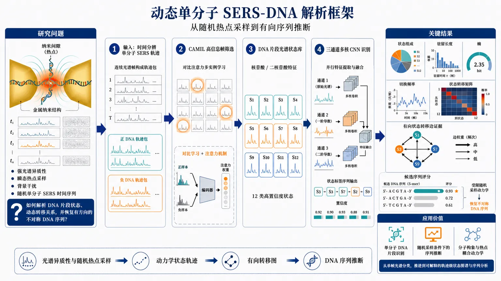
研究问题如何在等离激元纳米腔中，从强光谱异质性、瞬态热点采样和背景干扰造成的随机单分子SERS时间序列中，解析DNA寡聚体的片段状态、动态转移关系，并进一步恢复具有方向性的不对称DNA序列？创新方法提出物理对齐的动态解码框架：先用对比注意力多实例学习（CAMIL）从正负DNA轨迹包中筛选含核苷酸和二核苷酸特征的高信息量光谱，建立单分子DNA片段光谱状态库；再以三通道多核CNN进行12类高置信度状态识别；最后把状态驻留、切换和转移矩阵转化为有向状态转移边证据，对候选DNA序列进行评分。Aha点在于把原本被视为噪声的光谱异质性和随机热点采样，重构为可用于序列推断的动力学状态轨迹。工作流程输入等离激元纳米腔中的时间分辨单分子SERS轨迹；将连续光谱按正负样本组成轨迹包；CAMIL通过对比学习和注意力机制筛选最具判别力的光谱帧；利用这些帧构建DNA片段光谱状态库；三通道多核CNN将每个查询帧映射为12类高置信度DNA状态；按时间顺序连接状态标签，计算状态组成、驻留长度、熵、切换频率和状态转移矩阵；将转移矩阵转换为有向边证据；比较不同候选序列与观测状态转移图的一致性，输出候选DNA序列评分及动态状态解析结果。关键结果框架能够在动态单分子层面解析DNA状态组成、驻留时间、熵、切换频率和转移矩阵，并利用受限随机采样动力学推断不对称DNA序列，实现从单帧光谱分类到轨迹级状态图谱和候选序列评分的扩展。现有材料未提供准确率、召回率、F1、序列恢复率、样本量、误差范围或与基线的定量比较，因此尚不能据此确认其统计性能优势或达到可靠DNA测序标准。应用价值为纳米腔单分子光谱提供一种无需依赖完整、连续、固定方向采样的动态DNA解析路径，可用于单分子DNA片段识别、随机采样条件下的序列推断、分子构象与热点耦合动力学研究，并为将SERS从静态成分检测推进到可解释的单分子动态测量和序列分析提供方法基础。第一部分：核心概览（Overview）
该工作提出一种面向物理机制的深度学习框架，用于从等离激元纳米腔中的单分子表面增强拉曼光谱（SM-SERS）解析动态DNA寡聚体。方法将对比注意力多实例学习、三通道多核卷积网络与基于状态转移的序列重构结合，把瞬态热点、光谱异质性和背景干扰转化为可分析的状态轨迹信息。其潜在贡献不只是提高单帧光谱分类准确率，而是尝试从随机、受限采样的时间序列中恢复DNA片段组成及不对称序列。由于目前提供的材料只有arXiv页面摘要，实验样本量、统计检验、模型超参数和完整性能数据尚无法核验。
第二部分：结构化快速回顾
《Physics-Aligned Deep Learning Enables SERS Resolving and Sequencing of Dynamic Single-Molecule DNA Oligomers in Plasmonic Nanocavity》（None，）
背景
单分子SERS存在三重困难。 DNA分析受到强烈光谱异质性、瞬态热点采样和背景干扰限制，摘要将其概括为 *“strong spectral heterogeneity, transient hotspot sampling, and background interference”*。
传统单帧识别不足以处理动态分子行为。 问题不只是区分某一帧属于哪类分子状态，还包括状态持续时间、切换频率和状态间转移关系。
方法
建立物理对齐的深度学习框架。 框架由三部分构成：对比注意力多实例学习（CAMIL）、三通道多核CNN分类器以及轨迹级转移引导序列重构，原文表述为 *“integrating contrastive attention-based multiple-instance learning (CAMIL), a tri-channel multi-kernel CNN classifier, and trajectory-level transition-guided sequence reconstruction”*。
利用轨迹包而不是孤立光谱。 CAMIL从DNA正、负轨迹包中挖掘信息量较高的光谱，形成单分子DNA片段光谱状态库。
将时间序列映射为离散状态。 状态库用于训练一个12分类CNN，把时间分辨DNA SM-SERS帧分配到高置信度DNA片段状态。
从状态转移中推断序列。 转移矩阵被转换为状态转移边证据，并用于候选DNA序列评分。
结果
实现动态状态层面的解析。 框架能够分析状态组成、驻留长度、熵、切换频率和转移矩阵。
提出不对称DNA序列推断路径。 摘要声称可从受限随机采样动力学中推断不对称DNA序列，原文为 *“enabling asymmetric DNA sequences inference from confined stochastic sampling dynamics”*。
没有提供可量化性能指标。 当前材料未给出准确率、召回率、F1、序列恢复率、误差范围、置信区间、样本量或P值，因此无法判断方法相对于基线的统计优势。
讨论
核心思想是把异质性重新定义为信息。 摘要明确提出 *“This framework transforms SM-SERS heterogeneity into quantitative analytical information”*。这意味着不同光谱并非全部被视为噪声，而是被解释为分子构象、片段组成或热点采样过程中的状态变化。
物理先验可能改善机器学习的可解释性。 状态、驻留、切换和转移边均对应可解释的动力学量，比单纯端到端分类更接近分子运动过程。
局限
实验规模不可知。 未提供DNA序列数量、单分子轨迹数量、每条轨迹帧数、训练/验证/测试划分或独立重复实验数。
12类状态的生物化学含义不明确。 尚无法判断12类分别对应单核苷酸、二核苷酸、长度不同的DNA片段、构象状态，还是混合标签。
序列可辨识性尚未证明。 从状态转移矩阵推断序列，需要证明不同候选序列产生的转移分布足够可区分；摘要没有给出可辨识性分析或消融实验。
缺乏与既有方法的定量比较。 未提供与传统SERS分析、PCA/PLS、普通CNN、RNN、Transformer或其他单分子测序方法的对照结果。
结论
方法学贡献集中于动态单分子解码。 框架将光谱分类推进到轨迹级状态解析和候选序列评分，目标是 *“advancing dynamic single-molecule decoding”*。
证据等级仍属于摘要级别。 现有信息支持“提出了一个完整方法框架”的判断，但不足以支持“已实现可靠DNA测序”或“优于现有方法”的强结论。
第三部分：逐章节冷凝解析
提供的文本只有arXiv元数据和摘要，没有PDF正文，因此无法严格恢复论文原始章节标题，也无法提取正文中未显示的实验数字、图表结果、统计检验或模型参数。以下仅对可核验的标题、摘要和元数据进行逐点解析；所有英文引述均来自所提供文本。
Title: Physics-Aligned Deep Learning Enables SERS Resolving and Sequencing of Dynamic Single-Molecule DNA Oligomers in Plasmonic Nanocavity
标题同时声明方法、任务和实验场景。
“Physics-aligned deep learning”暗示深度学习结构或训练目标受到光谱学、分子动力学或纳米腔采样机制约束，而非单纯使用通用分类网络。“SERS resolving”指向对光谱状态或分子成分的分辨；“sequencing”则进一步声称能够恢复DNA排列顺序。“dynamic single-molecule DNA oligomers”限定分析对象是动态变化的单分子DNA寡聚体，而不是静态群体平均测量；“plasmonic nanocavity”限定信号增强和采样环境。
“Sequencing”是最需要证据支撑的标题术语。
从摘要可确认的方法是利用状态转移证据对候选序列评分，但不能仅凭标题判断其是否达到标准DNA测序意义上的逐碱基、逐位置、可重复序列读取。
Abstract
SM-SERS的主要障碍是信号生成机制本身的不稳定性。
单分子SERS通常依赖局部增强热点，分子进入、离开或改变取向都会造成光谱波动。摘要将困难概括为 *“strong spectral heterogeneity, transient hotspot sampling, and background interference”*。这三项因素分别对应：不同分子状态产生不同谱型、热点只在短时间内采样部分分子、基底或环境信号污染目标信号。
CAMIL以正负轨迹包挖掘判别性光谱。
方法被定义为 *“contrastive attention-based multiple-instance learning (CAMIL)”*。其中“multiple-instance”意味着一个轨迹包由多个光谱实例组成，标签可能属于整个轨迹包而非每一帧；“contrastive”意味着通过正样本与负样本之间的对比学习增强判别表示；“attention”意味着模型为不同光谱实例分配不同权重。
正负DNA轨迹包用于构建状态库。
摘要指出，CAMIL *“mines informative spectra enriched with chain-embedded nucleotide and dinucleotide signatures from contrastive positive and negative DNA trajectory bags”*。可提取的关键机制包括：
- 从轨迹中选择信息量更高的光谱，而非平均所有帧。
- 关注核苷酸和二核苷酸特征，说明模型试图利用局部序列单元。
- “chain-embedded”暗示这些光谱特征可能来自嵌入DNA链环境中的局部化学结构，而非游离单体的独立光谱。
- 输出是 *“a single-molecule DNA-segment spectral-states library”*，即单分子DNA片段光谱状态库。
三通道多核CNN承担12类状态判别。
摘要明确指出，状态库训练 *“a 12-class CNN”*，将查询时间分辨帧映射到 *“high-confidence DNA-segment states”*。但未说明：
- 三个通道分别对应何种光谱预处理或物理表征；
- 多核尺寸为何选择这些数值；
- 12类的标签定义；
- 高置信度的阈值；
- CNN层数、参数量、优化器、学习率和训练轮数；
- 类别不平衡是否存在及如何处理。
轨迹级统计量把离散分类转化为动力学分析。
摘要列出五类轨迹指标：*“state composition, dwell length, entropy, switching frequency, and transition matrix”*。
- State composition：不同状态在轨迹中的占比。
- Dwell length：分子停留在某一状态的持续时间或连续帧长度。
- Entropy：状态分布或转移分布的不确定性。
- Switching frequency：单位时间内状态变化次数。
- Transition matrix：从状态i转移到状态j的概率或计数矩阵。
这些指标的价值在于，它们能够把单帧光谱识别转化为分子动态行为描述。
转移矩阵被转化为序列评分证据。
摘要说明 *“The transition matrix is further converted into state-transition-edge evidence for candidate sequence scoring”*。这表明序列推断可能采用如下逻辑：候选序列对应一组预期状态及其相邻关系；实验轨迹提供状态间转移证据；候选序列按照其与观测转移边的一致性进行评分。
不对称序列推断依赖随机采样中的方向性信息。
摘要声称该方法能够 *“infer asymmetric DNA sequences from confined stochastic sampling dynamics”*。这里的关键假设是：即使分子在纳米腔内受到随机、非完整采样，不同方向或不同相邻片段仍会产生可区分的状态转移统计。
总体贡献是分析范式的变化。
摘要最后概括为 *“This framework transforms SM-SERS heterogeneity into quantitative analytical information”*。真正的新意不只是使用CNN，而是将异质光谱作为状态轨迹的一部分，并将其用于动力学统计和序列推断。
Comments: 28 pages, 4 figures, 1 table
论文规模与展示材料有限。
元数据显示全文28页，包含4幅图和1张表。仅凭这一信息无法判断实验数据规模、补充材料内容或统计分析充分性。若序列推断是主要结论，4幅主图是否覆盖装置表征、训练过程、分类验证、轨迹动力学和序列重构，需要查阅PDF才能确认。
Subjects: Optics
学科归类强调光学与纳米光子学属性。
论文被归入Optics，而研究问题同时涉及机器学习、单分子生物物理、拉曼光谱和DNA序列分析。该归类说明核心实验平台和信号来源是等离激元增强光学测量，而不是传统测序平台。
Submission history
当前版本是arXiv预印本。
元数据给出 *“[v1] Mon, 17 Aug 2026 13:37:35 UTC”*，并标记为arXiv:2608.16576。当前材料没有同行评审期刊、接受状态、修订版本或独立复现实验信息。因此，方法和结论应视为待进一步验证的预印本主张。
第四部分：深度理解与语言支持
1. Physics-aligned deep learning
Physics-aligned不是泛指“使用物理实验数据”，而是指模型设计、特征选择、约束条件或损失函数与物理机制相一致。此处可能包括：
- 以DNA核苷酸/二核苷酸的拉曼特征作为模型可识别状态；
- 把热点瞬态采样视为轨迹生成机制；
- 使用驻留时间和状态转移描述动态过程；
- 通过转移矩阵约束序列评分。
它与physics-informed neural network（PINN）并不完全等价。PINN通常把微分方程残差直接加入损失函数；“physics-aligned”范围更宽，可能只是让机器学习表示与实验机制和可观测量保持一致。必须查阅正文才能确定物理约束的数学形式。
2. Multiple-instance learning
多实例学习处理的是“包级标签、实例级不确定性”问题。一个DNA轨迹包包含许多光谱帧，但并非每帧都处于清晰、可分类的分子状态。CAMIL不要求每一个实例都被准确标注，而是学习哪些帧对整个轨迹包的判别最重要。
这比直接对所有光谱取平均更适合SM-SERS，因为平均可能抹去短暂热点事件；但风险是注意力权重也可能偏向强度异常、背景峰或仪器伪影。因此必须通过注意力可视化、人工标注或扰动实验验证其确实聚焦于核苷酸相关峰。
3. Spectral states
光谱状态是把连续变化的拉曼光谱离散化后的分析单位。它不一定等同于一个碱基，也可能代表：
- 某个核苷酸；
- 某个二核苷酸；
- 一个DNA片段；
- 某种构象或取向；
- 某个分子与热点的耦合状态。
“DNA-segment state”比“base identity”更宽泛。因此，12类状态不能自动解释为12种碱基或12个确定序列位置。状态标签的化学定义是判断“解析”是否等于“测序”的关键。
4. Dwell length
Dwell length表示轨迹在某一状态中连续停留的时间长度，可能以帧数、毫秒或秒为单位。它与状态出现次数不同：一个状态可能出现很多次，但每次只停留一帧；也可能出现次数较少，却每次持续很久。
解释驻留长度时必须区分：
- 真实分子停留；
- 相邻帧分类稳定性；
- CNN标签平滑造成的人工延长；
- 相机曝光时间和采样频率带来的时间分辨率限制。
5. State-transition-edge evidence
状态转移边证据把状态转移矩阵中的非零或高概率转移看作图上的有向边。例如，状态A到状态B的频繁转移可作为某种相邻片段关系的支持证据。使用“edge evidence”而非直接宣称“读取碱基顺序”，体现出序列推断是基于图结构和概率证据的间接推断。
关键问题是：高频转移是否来自DNA链内相邻结构，还是来自热点位置变化、分子进出腔体、光漂白或分类错误。如果没有阴性对照、随机化实验和转移矩阵消融，序列解释可能存在混淆。
第五部分：创新评估与关联
1. 创新性判断
最明确的创新点是把SM-SERS的异质性转化为轨迹信息。
常见光谱机器学习流程通常把每条光谱作为独立样本，目标是分类、回归或成分识别。这里的框架则使用：
- 轨迹包级对比学习；
- 信息量光谱筛选；
- 离散DNA片段状态分类；
- 驻留和切换统计；
- 转移矩阵驱动的候选序列评分。
这种从“单帧识别”到“动态状态图谱”的层级扩展，是概念上最有价值的部分。
第二个创新点是将有限、随机的纳米腔采样用于序列推断。
单分子纳米腔测量往往无法保证分子按固定方向、完整路径或均匀速度通过热点。若模型确实能利用非完整轨迹中的转移统计恢复不对称序列，它解决的是传统逐帧分类无法解决的受限采样下的顺序信息缺失问题。
第三个创新点是将局部化学特征与动力学模型结合。
摘要同时强调核苷酸/二核苷酸光谱特征和状态转移动力学。前者提供局部化学身份，后者提供相邻关系与方向性，二者结合比单独依赖光谱峰或单独依赖时间序列更有潜力。
2. 相对于近年相关工作的可核验程度
目前无法严谨完成“相对于过去2—5年相关工作”的定量新颖性排名，因为提供文本没有参考文献列表、基线方法、检索范围或正文对比实验。可以做出的保守判断是：
- 相对于纯光谱分类工作：新增了轨迹级状态转移和序列评分层。
- 相对于一般深度学习SERS工作：新增了CAMIL、三通道多核CNN与物理可解释动力学量的组合。
- 相对于传统DNA测序方法：尝试在无需明确逐步化学反应读取的条件下，从纳米腔内随机采样的SERS轨迹恢复序列。
- 相对于一般时间序列模型：摘要没有显示使用RNN、Transformer或隐马尔可夫模型，因此其特色可能在于将CNN状态识别与显式转移矩阵结合，而不是直接进行黑箱序列预测。
3. 需要重点核查的创新真实性
12类状态是否真正具有序列分辨能力。
需要查看混淆矩阵、独立测试集、跨实验日验证、跨基底验证和未知序列测试。若训练与测试轨迹来自同一分子、同一热点或同一实验批次，性能可能被数据泄漏高估。
序列恢复是否超过随机或简单先验。
需要比较候选序列评分与随机猜测、仅使用状态组成、仅使用单帧分类、仅使用一阶转移矩阵以及完整模型之间的差异。
转移边是否具有化学来源。
需要检查DNA序列打乱、反向序列、非DNA分子、无DNA空白腔体和不同热点位置等对照。尤其需要证明转移结构不是由仪器漂移、背景变化或分类器标签粘滞造成。
“物理对齐”是否被形式化。
需要明确模型中哪些部分是物理约束，哪些只是物理启发的特征工程。若没有显式损失函数、先验概率、守恒关系或可检验的动力学假设，该术语的含义可能主要是方法命名，而不是严格的物理信息神经网络。
结论是否达到“测序”标准。
严格意义上的测序通常需要给出碱基级准确率、读长、错误谱、重复性、未知样本泛化能力和与标准测序结果的一致性。当前摘要只足以确认“提出了候选序列推断框架”，不足以确认其已经达到成熟测序技术的可靠性。
-
17
📊 含图深析
📄 摘要：文章提出适用于黎曼流形的弱物理信息神经网络，用于逼近几何相容双曲守恒律的熵解。方法针对传统PINN依赖光滑解、而非线性双曲方程可能产生低正则性解的问题，强调复杂几何上的无网格求解。摘要未给出具体方程实例、网络规模或误差数值。
📖 英文原文
arXiv:2505.19036v3 Announce Type: replace-cross Abstract: Physics-informed neural networks (PINNs) provide a mesh-free approach to solving high-dimensional PDEs on complex geometries, but their theoretical foundations on manifolds remain limited. Moreover, conventional PINN analyses typically rely on solution smoothness, while PINNs may perform poorly for low-regularity solutions arising from nonlinear hyperbolic equations. In this paper, we develop a weak PINN (wPINN) framework for approximating entropy solutions of geometry-compatible hyperbolic conservation laws on Riemannian manifolds M^d. Building on the well-posedness theory, we establish a localized L₁₋ₛₜₐbility estimate that converts localized entropy residuals into terminal error bounds and leads to a rigorous convergence analysis of the proposed method. We then derive approximation guarantees for time-dependent entropy solutions on manifolds, revealing how approximation errors accumulate over long time horizons. For the quadrature error, we develop a problem-adapted localization complexity analysis and show that, for a fixed adversarial test-network architecture, the solution-network contribution achieves the fast rate VCₘₐₜₕcₐₗ F/n, up to logarithmic factors. The resulting algebraic network-complexity exponent depends only on the intrinsic dimension d, rather than the ambient dimension. For fixed localization scales, and up to logarithmic factors and the localization bias, the solution-network statistical exponent matches the corresponding minimax exponent in d-dimensional Euclidean Sobolev approximation. Numerical experiments illustrate that the proposed wPINN framework accurately approximates entropy solutions on manifold geometries.
💡 亮点：工作把PINN推广到黎曼流形上的几何相容双曲守恒律，并以弱形式逼近低正则性熵解。核心创新是摆脱传统PINN对光滑解和点值残差的依赖，处理复杂几何与非线性守恒结构。摘要未提供具体材料或定量误差，与团队材料体系没有直接交叉，但对守恒约束动力学和复杂边界建模有理论启发。
🔬 与我们研究方向的关系
📐 方法要点：方法上，这篇工作可归入热力学知情 ML、机器学习势、自由能采样、CALPHAD/团簇展开。从摘要能确认的线索包括：论文题目和摘要中可确认的方法，以及AI for science 与材料/物理问题的结构化分析对应的结构或物理量。若迁移到团队流程，应采用“在 DFT 能量/力/应力之外加入跨温度构型、相对自由能、熵或热膨胀信息；用主动学习补采相变、畴壁和相竞争区域，再用热力学积分、MC 或有限温度 MD 验证”的分层验证，而不是只比较单点能量或单一回归误差。还需核对原文的训练数据规模、损失函数、边界条件和误差分解，才能判断其是否适合团队的材料模拟任务。
🔗 相关工作关联：它与五位研究人员已有工作的直接连接是：热力学知情 ML、机器学习势、自由能采样、CALPHAD/团簇展开已经出现在团队的方向画像中，可对应到HfO₂ 基铁电、二维滑移铁电、钙钛矿和磁性氧化物。与传统只做 0 K formation energy/静态势垒的工作相比，这里更应关注AI for science 与材料/物理问题的结构化分析在温度、缺陷、应变或外场下的变化；摘要没有给出的模型细节不作延伸判断。这种联系应通过同一材料体系上的独立基准和跨分布测试确认，不能仅凭方法名称或期刊来源下结论。
💡 对你方向的启示：对当前研究最具体的启示不是泛泛地“使用 ML”，而是把该文的热力学知情 ML、机器学习势、自由能采样、CALPHAD/团簇展开嵌入现有材料模拟链：先在HfO₂ 基铁电、二维滑移铁电、钙钛矿和磁性氧化物中选择一个已有 DFT 数据基础的体系，按“在 DFT 能量/力/应力之外加入跨温度构型、相对自由能、熵或热膨胀信息；用主动学习补采相变、畴壁和相竞争区域，再用热力学积分、MC 或有限温度 MD 验证”补充训练/验证集，再比较《流形上几何相容双曲守恒律的弱物理信息神经网络》对应模型对相稳定、极化/磁序、缺陷或动力学指标的改进。若结果只在训练分布内有效，应通过跨温度、跨应变、跨缺陷浓度和跨超胞测试检查可迁移性。第一步可以选取团队已有的 HfO₂、二维磁体、半导体缺陷或钙钛矿数据做小样本试验，再决定是否扩大到生产级计算。
📖 展开分析 + 配图
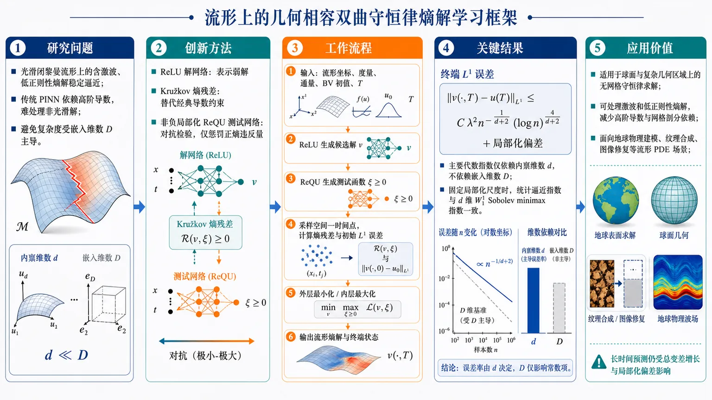
研究问题如何在光滑闭黎曼流形上，稳定逼近含激波和低正则性的几何相容双曲守恒律熵解？传统 PINN 依赖经典高阶导数，难以处理非光滑解；同时还需避免网络复杂度被嵌入空间维数 D 主导，以缓解高维计算中的维数灾难。创新方法提出流形弱物理信息神经网络（wPINN）：用 ReLU 解网络表示可能含激波的弱解，将 PDE 约束改写为 Kružkov 熵残差；用非负局部化 ReQU 测试网络执行对抗检验，仅惩罚正熵违反量；结合几何相容通量、局部化 L1 稳定性和残差子水平集复杂度分析，把局部熵残差转化为终端误差，并使收敛指数仅依赖流形内禀维数 d。工作流程输入黎曼流形嵌入坐标、度量结构、几何相容通量、BV 初值和终止时间 T；用 ReLU 网络生成时空解候选 v，用局部化 ReQU 网络生成非负测试函数 ξ，并采样流形空间—时间点；计算 Kružkov 熵通量、弱形式内部熵残差和初始时刻 L1 误差；通过外层最小化解网络、内层最大化测试函数正残差训练 wPINN；输出满足熵条件的流形熵解预测及终端状态。关键结果在初值属于 L∞∩BV、通量足够光滑、测试网络结构固定且经验目标被精确最小化的条件下，终端 L1 误差满足约 Cλ² n⁻¹/⁽d⁺²⁾(log n)⁴/⁽d⁺²⁾ 加局部化偏差的上界。网络深度、宽度和稀疏度的主要代数指数只依赖内禀维数 d，而不依赖嵌入维数 D；固定局部化尺度后，统计逼近指数与 d 维 W₁¹ Sobolev 函数逼近的 minimax 指数一致。应用价值为球面等曲面、复杂几何区域上的无网格守恒律求解提供可证明的神经网络框架，适用于地球物理建模、纹理合成、图像修复等流形 PDE 场景。它能够直接处理激波和低正则性熵解，减少对高阶导数和网格剖分的依赖，并从理论上降低环境维数带来的计算复杂度；但长时间预测仍可能受总变差指数增长和局部化偏差影响。第一部分：核心概览（Overview）
论文建立了面向黎曼流形上几何相容双曲守恒律的弱物理信息神经网络（wPINN）理论框架，目标是逼近具有激波和低正则性的熵解。核心贡献包括：利用熵解的 (L₁) 收缩性构造局部稳定性估计，将局部熵残差转化为终端误差；建立流形上的 Sobolev 神经网络逼近率；提出基于局部化残差子水平集的复杂度分析。误差的代数指数仅依赖流形内禀维数 (d)，而非嵌入空间维数 (D)，从而在理论上缓解高维计算中的维数灾难。该工作位于PINN 理论、双曲守恒律、熵解分析和流形数值计算的交叉前沿。
第二部分：结构化快速回顾
《Weak Physics Informed Neural Networks for Geometry Compatible Hyperbolic Conservation Laws on Manifolds》（None，）
背景
传统 PINN 通常依赖经典微分残差和高阶光滑性，难以稳定逼近双曲方程中的激波与低正则性解。流形上的 PDE 理论相较欧氏区域仍不充分，尤其缺少针对熵解的严格收敛分析。
方法
在光滑、闭、定向的 (d) 维黎曼流形 ((mathcal M^d,g)) 上，考虑
[
partialₜᵤ₊øperatornamediv_g(fₓ₍ᵤ₎₎₌₀,
]
并要求通量满足几何相容条件
[
øperatornamediv_g(fₓ₍bar u))=0.
]
采用 Kružkov 熵残差、非负局部化 ReQU 测试网络、ReLU 解网络和 Monte Carlo 求积，构造正熵违反量驱动的 wPINN 目标函数。
结果
在 (u₀ᵢₙ Lᵢₙftya̧p BV)、通量足够光滑且测试网络结构固定等条件下，令
[
a=frac1d+2,
]
则终端误差满足
[
|uₙ₍ḑot,T)-u^*(ḑot,T)|L_₁₍ₘₐₜₕcₐₗ M^d₎
łesssim C_łambda²ⁿ⁻a(łog n)⁴a+błₐₘbdₐ,T(mathcal F).
]
网络深度、宽度和稀疏度的代数增长指数只依赖 (d)。
讨论
误差由神经网络逼近误差、求积误差和局部化偏差构成。固定局部化尺度后，解网络统计误差的指数与 (d) 维欧氏 (W₁¹) Sobolev 逼近的 minimax 指数一致，但长时间演化会通过总变差估计产生近似 (eC₁T) 的增长。
局限
理论主要覆盖光滑闭流形、几何相容通量、(BV) 初值和精确经验风险最小化。测试网络架构被视为固定，局部化偏差通常不会随样本数自动消失。数值实现还使用了与理论目标不同的归一化、平方正熵违反损失。
结论
wPINN 能够在流形上直接逼近低正则性熵解，并获得以内禀维数为核心的收敛界。其主要理论价值是把双曲守恒律的稳定性理论与局部经验过程分析结合起来，为流形上的无网格熵解计算提供可证明的框架。
第三部分：逐章节冷凝解析
以下解析严格依据提供的论文内容。原文在 Section 2.4 Corollary 2 处中断，Section 3–7 及附录正文未提供，因此不能凭空补全其中的实验数值、定理内容或章节细节。
1 Introduction
PINN 被置于高维 PDE 数值计算背景中
经典有限差分、有限元和谱方法在低维 PDE 上具有成熟理论，但在高维情况下受到维数灾难限制。神经网络通过非线性逼近能力构造 PDE 解的代理模型，形成数据驱动和物理驱动两类方法。原文将 PINN 与 Deep Ritz method 分别概括为直接拟合 PDE 物理规律和变分结构的方法：*"physics-driven methods adopt an unsupervised learning framework, utilizing the expressive power of DNNs to directly fit the underlying physical laws"*。
研究对象从欧氏区域扩展到黎曼流形
流形 PDE 出现在纹理合成、图像修复和地球物理建模等问题中，但 PINN 的严格理论主要集中于欧氏区域。已有工作开始研究流形 PINN，却仍缺少完整收敛理论：*"a rigorous and comprehensive convergence analysis for such methods is still lacking"*。这里的关键空白不是简单地把欧氏坐标替换成曲线坐标，而是需要同时处理流形几何、守恒结构、熵条件和低正则性。
PINN 的理论可靠性依赖三个条件
第一是 PDE 解的存在唯一性。没有唯一解，PINN 训练可能在多个候选解之间振荡。第二是神经网络对解及其高阶导数的逼近能力，因为传统 PINN 损失通常包含高阶微分项。第三是 PDE 稳定性，它负责把残差控制转化为总误差控制。原文将这三点分别归纳为：*"Existence and uniqueness of solutions"*, *"Approximation capacity of neural networks"* 和 *"Stability of PDEs"*。
传统 PINN 对非光滑双曲解存在结构性困难
非线性双曲守恒律的解通常可能包含激波，因此经典导数残差并不适合直接描述解。已有研究显示，传统 PINN 对非光滑解的逼近效率较低：*"traditional PINNs struggle to efficiently approximate non-smooth solutions of PDEs"*。这解释了为什么需要从强形式残差转向弱形式熵残差。
wPINN 的思想来源于一维标量守恒律
已有 wPINN 工作针对一维欧氏空间中的标量守恒律，重点逼近具有良定性的熵解。当前框架将这一思路推广到 (dge2) 的黎曼流形，并依托流形守恒律的熵测度值解理论。原文的直接表述是：*"we propose a novel wPINN framework for geometry-compatible hyperbolic conservation laws"*。
几何相容通量是流形守恒律的核心结构
欧氏空间中可以使用与位置无关的常通量，但一般黎曼流形上不存在这种全局结构。几何相容通量通过
[
øperatornamediv_g(fₓ₍bar u))=0
]
保证常状态 (bar u) 的几何兼容性，并使守恒律具有可用的熵理论。该条件是后续 (L₁) 收缩、熵解唯一性和 wPINN 稳定性估计的基础。
主要贡献具有四个层次
第一，首次构造流形上的几何相容双曲守恒律 wPINN 框架。第二，使用 ReLU 解网络处理弱解，降低对高阶光滑激活函数的依赖。第三，构造基于嵌入空间径向核的局部化 ReQU 测试网络。第四，分别分析逼近误差和求积误差，其中求积误差对解网络复杂度的依赖为
[
C_łambda²fracVCₘₐₜₕcₐₗ Fłog nn
]
的量级，忽略置信度项和对数因子。
复杂度指数依赖内禀维数而非环境维数
流形 (mathcal M^d) 被等距嵌入 (mathbb R^D)，但主定理中的 (n) 代数指数只依赖 (d)。原文强调：*"The algebraic exponents in (n) depend only on the intrinsic dimension (d)"*。环境维数 (D) 仍可能进入常数，但不进入主要样本复杂度指数。
长时间区间会放大误差
熵解总变差满足
[
TV(u(t))łe eC₁ₜ(1+TV(u₀₎₎.
]
因此时间推进中的误差可能随 (T) 指数增长。原文明确指出：*"the constant term in (2.12) depends on the total variation of the entropy solution"*，并进一步说明其规模大致为 (eC₁T)。
2 Preliminaries and Main Results
2.1 Geometry-Compatible Hyperbolic Conservation Laws
流形、维数与几何设定
研究对象是光滑、紧致、无边界、定向的 (d) 维黎曼流形 ((mathcal M^d,g))，并明确限定
[
dge2.
]
体积测度记为 (dV_g)，梯度和散度分别由黎曼度量 (g) 定义。
守恒律采用散度形式
基本方程为
[
partialₜᵤ₊div_g(fₓ₍ᵤ₎₎₌₀. tag2.1
]
其中 (fₓ₍bar u)in Tₓmathcal M^d) 是依赖空间点 (x) 和状态参数 (bar u) 的切向量场。散度作用于
[
xmapsto fₓ₍ᵤ₍ₓ,t)).
]
这种写法保留了流形上的守恒结构。
几何相容条件保证常状态的兼容性
通量满足
[
div_g(fₓ₍bar u))=0,qquad bar uinmathbb R,;xinmathcal M^d. tag2.2
]
该条件意味着任意常数状态在几何上不会因流形曲率产生额外源项。原文指出：*"a constant flux generally does not exist on a Riemannian manifold"*，因此必须使用 geometry-compatible flux。
弱解仅保证分布意义下成立，不保证唯一性
初值为
[
u(x,0)=u₀₍ₓ₎,qquad u₀ᵢₙ Lᵢₙfty(mathcal M^d).
]
弱解属于
[
Lᵢₙfty(mathcal M^d×mathbb R₊₎,
]
并以分布意义满足守恒律。但弱解可能不唯一，故必须添加熵条件。关键表述为：*"the uniqueness of weak solutions is not guaranteed, necessitating an entropy condition to ensure well-posedness"*。
熵通量对由凸熵函数诱导
给定凸函数 (U:mathbb R→mathbb R)，熵通量为
[
Fₓ₍bar u)
=
intbar u
partialᵤ'U(u'),
partialᵤ'fₓ₍ᵤ'),du'.
]
凸性使其能够表达熵耗散方向，并将原守恒律扩展为一族熵不等式。
熵解定义包含所有非负光滑测试函数
对任意凸熵通量对 ((U,F)) 和非负
[
ξin C_cⁱⁿfty(mathcal M^d×[0,infty)),
]
熵解满足
[
int₀ⁱⁿftyintₘₐₜₕcₐₗ M^d
łeft(
U(u)partialₜξ+
gₓ₍Fₓ₍ᵤ₎,nabla_gξ)
i̊ght)dV_gdt
+
intₘₐₜₕcₐₗ M^dU(u₀₎ξ(x,0)dV_g
ge0.
]
其中测试函数必须非负，因为熵条件是单侧不等式，而非等式或双侧残差约束。
熵不等式可推广到 (W¹,ⁱⁿfty₀) 测试函数
Lemma 1 将测试函数从光滑紧支集函数扩展到
[
ξin W¹,ⁱⁿfty₀₍mathcal M^d×(0,T)).
]
证明依赖有限坐标图、单位分解和非负 Euclidean mollifier，得到
[
ξₖ→ξ
quadin W¹,¹(mathcal M^d×(0,T)).
]
由于 (u) 有界、通量在其本性值域上光滑，(U(u)) 和 (Fₓ₍ᵤ₎) 一致有界，因此可以通过极限传递熵不等式。原文证据为：*"there exist nonnegative functions (ξₖᵢₙ C_cⁱⁿfty(mathcal M^d×(0,T))) such that (ξₖłongrightarrowξ) in (W¹,¹)"*。
初值采用流形 BV 空间刻画
定义
[
BV(mathcal M^d;dV_g)
=
hin L₁₍mathcal M^d;dV_g):TV(h)<infty,
]
其中
[
TV(h)=
sup|ψ|L_ᵢₙfₜyłₑ₁
intₘₐₜₕcₐₗ M^dh,øperatornamediv_gψ,dV_g.
]
测试对象 (ψ) 是流形上的 (C¹) 切向量场，因此这是由流形结构内在定义诱导的总变差。
良定性给出 (Lₚ)、时间连续性和 TV 控制
若
[
u₀ᵢₙ Lᵢₙfty(mathcal M^d)a̧p BV(mathcal M^d;dV_g),
]
则存在熵解，并满足：
[
|u(t)|L_ₚłe|u₀|L_ₚ,
qquad 1łe płeinfty;
]
[
|u(t)-u(t')|L_₁
łe TV(u₀₎|t-t'|,
qquad 0łe t'łe t;
]
[
TV(u(t))
łe eC₁ₜ(1+TV(u₀₎₎.
]
这些估计是神经网络逼近和稳定性分析的 PDE 基础。尤其是时间 Lipschitz 控制直接用于离散时间节点上的 spline 插值。
熵解之间具有 (L₁) 收缩性
若 (u,v) 对应初值 (u₀,v₀)，则
[
|v(t)-u(t)|L_₁₍ₘₐₜₕcₐₗ M^d₎
łe
|v₀₋ᵤ₀|L_₁₍ₘₐₜₕcₐₗ M^d₎.
]
这一估计将初始误差稳定地传递到未来时间，是构造 wPINN 局部稳定性估计的核心。原文称其为：*"the following contraction inequality holds"*。
BV 假设并非最一般的良定性条件
已有理论允许使用更一般的熵测度值解，此时不必要求初值具有有限总变差；但代价是无法继续获得上述 TV 估计。论文当前的误差界因此选择 (BV) 初值，以换取明确的时间正则性和误差控制。
2.2 Mathematical Definition of Neural Networks
网络采用带偏置的前馈结构
输入维数为 (m) 的网络写成
[
f(x)
=
W_Lσₘₐₜₕbf ᵥ_LWL₋₁
ḑots
W₁σₘₐₜₕbf ᵥ_₁W₀ₓ.
]
隐藏层数为 (L)，第 (i) 个隐藏层宽度为 (pᵢ)，输入和输出维数分别为
[
p₀₌ₘ,qquad pL₊₁=1.
]
理论逼近部分使用 ReLU
激活函数固定为
[
σ(x)=maxx,0=(x)₊.
]
ReLU 的低光滑性与弱解逼近目标相匹配，避免了传统 PINN 对高阶可微激活函数的依赖。原文强调：*"We utilize neural networks with ReLU activation functions to approximate weak solutions"*。
网络类同时约束深度、宽度、稀疏度、参数幅值和输出
网络类
[
mathcal Fₘ₍Q,G,S,B,F)
]
包含以下限制：
[
Lłe Q,qquad maxᵢ pᵢłe G;
]
[
sumᵢ₌₀L|Wᵢ|₀₊
sumᵢ₌₁L|mathbf vᵢ|₀
łe S;
]
[
maxᵢ|Wᵢ|ᵢₙfty
ěe
maxᵢ|mathbf vᵢ|ᵢₙfty
łe B;
]
[
|f|L_ᵢₙfₜyłe F.
]
其中 (S) 控制非零参数数量，(B) 控制参数幅值，(F) 控制输出范围。
空间网络和时空网络的输入维数不同
空间逼近网络输入维数为嵌入空间维数 (D)，时间依赖解网络输入维数为 (D+1)。这体现了流形通过环境坐标进入网络，而收敛指数仍由流形内禀维数 (d) 决定。
有界权重可通过深度编码大系数
部分标准逼近构造要求权重上界随目标精度增加。这里使用有界权重复制构造，通过对数深度表达大系数，因此可覆盖
[
B=1
]
的情形。复杂度分析还允许
[
B=infty,qquad S=infty.
]
求积分析使用经验 (L₂₍Pₙ₎) 覆盖数和伪维数
参数空间上的全局覆盖数被经验覆盖数替代，复杂度由伪维数控制。解网络复杂度通过
[
VCₘₐₜₕcₐₗ F=SLłog S
]
表达。这一处理使解网络规模和固定测试网络结构分离。
2.3 Construction of wPINNs on Manifolds
流形通过 Nash 嵌入进入欧氏网络
根据 Nash 嵌入定理，紧流形可等距嵌入 (mathbb R^D)，因此设
[
mathcal M^dhookrightarrowmathbb R^D,qquad dłe D.
]
网络在环境坐标中计算，但理论误差的代数指数依赖 (d)。
目标从经典解转向熵解
由于双曲守恒律可能产生激波，方法在时间区间
[
[0,T]
]
上逼近熵解，而不是要求解具有高阶经典导数。原文直接说明：*"we focus on approximating entropy solutions over the time interval ([0,T]) using wPINNs"*。
采用 Kružkov 型熵通量对
对参数 (bar u,bar v)，定义
[
widetilde U(bar u,bar v)=|bar v-bar u|,
]
[
widetilde F(bar u,bar v)
=
(f(bar v)-f(bar u))
øperatornamesgn(bar v-bar u).
]
这类熵对直接比较试探解 (v) 与常数状态 (c)，对应标量守恒律中的 Kružkov 熵结构。
内部熵残差是弱形式残差
对
[
vin(Lᵢₙftya̧p L₁₎₍mathcal M^d×[0,T]),
]
[
ξin W₀¹,ⁱⁿfty(mathcal M^d×[0,T]),
]
定义
[
mathcal Rⁱⁿt(v,ξ,c)
=
intₘₐₜₕcₐₗ M^d×[₀,T]
rⁱⁿt(v,ξ,c),dV_gdt,
]
其中
[
rⁱⁿt(v,ξ,c)
=
-widetilde U(v,c)partialₜξ
-
gₓ₍widetilde F(v,c),nabla_gξ).
]
网络不需要显式计算 (v) 的高阶导数，而是通过测试函数导数对解进行弱形式检验。
损失只惩罚正熵违反量
给定非负、统一有界的测试类 (Ξ) 和包含熵解本性值域的紧区间 (mathcal C)，定义
[
mathcal L_Ξ⁺⁽v)
=
supξᵢₙΞ,;cᵢₙₘₐₜₕcₐₗ C
[mathcal Rⁱⁿt(v,ξ,c)]₊.
]
初始时刻误差为
[
mathcal Rtb(v)
=
intₘₐₜₕcₐₗ M^d
|v(x,0)-u₀₍ₓ₎|,dV_g.
]
总目标为
[
mathcal J_Ξ(v)
=
mathcal Rtb(v)
+
TøperatornameVol_g(mathcal M^d)mathcal L_Ξ⁺⁽v).
]
正部算子不可省略，因为熵不等式只禁止正方向的违反；负残差并不意味着 PDE 不成立。原文给出两个理由：*"The positive part in (2.9) is essential"*，以及 *"a negative signed residual does not violate the entropy inequality"*。
测试函数必须归一化或限制幅值
如果对未归一化的 (W₀¹,ⁱⁿfty) 测试函数取带符号的 supremum，那么测试函数可以任意正倍增，除非残差分布恒为零，否则 supremum 不有限。因此测试类必须统一有界。
局部化 ReQU 测试网络适配流形几何
测试类采用由嵌入流形环境坐标中的外禀径向核构造的局部化 ReQU 网络。它需要满足：
- 近似恒等性；
- 局部化；
- 梯度抵消性。
这些性质共同支撑局部化 (L₁) 稳定性估计。测试网络的中心、时间位置和时间窗参数参与内层对抗优化，但架构和参数数目固定，不随求积样本数 (n) 或解网络规模增长。
Monte Carlo 求积离散化连续残差
在 (mathcal M^d×[0,T]) 上从均匀概率分布独立采样
[
(Xᵢ,tᵢ₎ᵢ₌₁ⁿ,
]
得到
[
mathcal Rₙⁱⁿt(u,ξ,c)
=
fracTøperatornameVol_g(mathcal M^d)n
sumᵢ₌₁ⁿ
rⁱⁿt(u(Xᵢ,tᵢ₎,ξ(Xᵢ,tᵢ₎,c).
]
初值项使用 (n₀) 个流形样本，并为简化取
[
n₀₌ₙ.
]
经验 wPINN 目标包含外层最小化和内层最大化
经验目标为
[
mathcal JΞ,ₙ(u)
=
mathcal Rₙtb(u)
+
TøperatornameVol_g(mathcal M^d)
supξᵢₙΞ,cᵢₙₘₐₜₕcₐₗ C
[mathcal Rₙⁱⁿt(u,ξ,c)]₊.
]
理论估计器是
[
uₙᵢₙargminᵤᵢₙₘₐₜₕcₐₗ Fmathcal JΞ,ₙ(u).
]
实际数值算法采用归一化对抗损失，并将正违反量平方化；收敛证明则针对未平方的正部损失，因为
[
zmapsto[z]₊
]
是 1-Lipschitz 映射。
2.4 Main Results
主定理的误差包含统计项和局部化偏差
设
[
a=frac1d+2,
]
并令 (u^*) 为熵解。若初值属于
[
Lᵢₙfty(mathcal M^d)a̧p BV(mathcal M^d),
]
通量满足在 (|u|łe M) 上的导数有界条件，测试网络架构固定，且 (uₙ) 是经验正 wPINN 目标的精确最小化器，则对充分大的 (n)，以至少
[
1-expłeft[-c,n¹⁻²a(łog n)⁸ai̊ght]
]
的概率，有
[
|uₙ₍ḑot,T)-u^*(ḑot,T)|L_₁₍ₘₐₜₕcₐₗ M^d₎
łesssim
C_łambda²ⁿ⁻a(łog n)⁴a
+
błₐₘbdₐ,T(mathcal F).
tag2.12
]
网络规模呈现内禀维数控制的代数增长
网络参数可以选择为
[
Lłesssimłogbigl(n(łog n)⁻⁴bigr),
]
[
Włesssim
na⁽d⁺¹⁾(łog n)⁻⁴a⁽d⁺¹⁾,
]
[
Słesssim
na⁽d⁺¹⁾(łog n)⁻⁴a⁽d⁺¹⁾
łogbigl(n(łog n)⁻⁴bigr).
]
因此深度近似对数增长，宽度和稀疏度的代数指数依赖 (d)，而非 (D)。常数可以依赖嵌入、几何参数、通量参数、(M,T) 和固定测试架构。
统计指数与 (d) 维 (W₁¹) minimax 指数一致
当局部化尺度固定，且忽略对数因子和局部化偏差时，
[
n⁻¹/⁽d⁺²⁾
]
与 (d) 维欧氏 (W₁¹) Sobolev 函数逼近的经典 minimax 指数一致。原文称：*"the solution-network contribution achieves the classical minimax exponent for approximating functions in (W¹₁) over (d)-dimensional Euclidean domains"*。
局部化偏差由时间模量、空间尺度和通量参数共同决定
定义
[
ømegaₜ₍ᵥ;r)
=
supₛᵤbₛₜₐcₖₛ,ₜᵢₙ[₀,T]|ₜ₋ₛ|łₑ ᵣ
|v(ḑot,t)-v(ḑot,s)|L_₁₍ₘₐₜₕcₐₗ M^d₎.
]
局部化偏差为
[
błₐₘbdₐ,T(mathcal F)
=
supᵥᵢₙₘₐₜₕcₐₗ F
C_Tłeft[
ømegaₜ₍ᵥ;Cη)
+
ømegaₜ₍ᵥ;Ch)
+
(η+h)TV(u₀₎
+
α(1+TV(u₀₎₎
i̊ght].
]
这里 (łambda=(α,η,h))：(α) 控制核或测试函数近似误差，(η,h) 控制时空局部化尺度。
时间受控子类把抽象偏差变成显式项
定义
[
mathcal Fₘ̊ ₜₘ
=
łeft{
vinmathcal F:
ømegaₜ₍ᵥ;r)
łe Cₘ̊ ₜₘ(1+TV(u₀₎₎ᵣ
i̊ght}.
]
在该子类上，Corollary 1 给出
[
|uₙ₍ḑot,T)-u^*(ḑot,T)|L_₁
łesssim
C_łambda²ⁿ⁻a(łog n)⁴a
+
C_T(1+TV(u₀₎₎₍α+η+h).
tag2.13
]
该限制不损害逼近率，因为专门构造的逼近网络仍属于 (mathcal Fₘ̊ ₜₘ)。
长期预测的主要风险来自 TV 增长
总变差估计
[
TV(u(t))łe eC₁ₜ(1+TV(u₀₎₎
]
意味着最终误差常数可能随时间指数增长。论文提出未来可采用短时间区间上的高精度逼近，并结合 TV 正则化，以改善长时间预测。
额外 Sobolev 正则性可能提高空间逼近效率
Corollary 2 的陈述在提供的论文文本中被截断，仅能确认其起始假设为“若熵解具有额外 Sobolev 正则性”，并且节点式空间逼近会更高效。具体正则性阶数、网络规模和改进后的收敛率未提供，不能进一步准确重构。
3 Approximation Rates for Entropy Solutions on Manifolds
该章节正文未提供。根据引言和 Section 2.4 的交叉引用，只能确定其理论任务包括：
建立流形 Sobolev 函数的神经网络逼近率
关键目标是针对由流形结构内在定义的 Sobolev 类，而不是仅依赖环境坐标或环境欧氏距离定义的 Hölder 类。相关原文表述为：*"we are the first to establish approximation rates of neural networks applied to approximate Sobolev functions on manifolds"*。
利用熵解的时间 Lipschitz 性构造时空逼近
理论使用
[
|u(t)-u(t')|L_₁
łe TV(u₀₎|t-t'|
]
在离散时间节点上逼近空间切片，再通过经典 spline interpolation 构造时空网络。原文概括为：*"we construct a (W¹₁) function approximation, and subsequently apply spline interpolation to build neural networks"*。
4 Localized (L₁)-Stability Estimate
该章节正文未提供。已知其作用是建立从局部熵残差到终端 (L₁) 误差的桥梁。
局部残差被转换为终端误差
摘要明确指出，该估计能够将 localized entropy residuals 转化为 terminal error bounds：*"we establish a localized (L₁)-stability estimate that converts localized entropy residuals into terminal error bounds"*。
测试网络的三种结构性质是证明关键
局部 ReQU 测试函数需要近似恒等性、空间局部化和梯度抵消性。它们用于模拟 Kružkov 双变量测试函数，并将局部残差信息集中到终端时刻附近。
5 Quadrature Error
该章节正文未提供，但引言给出了误差分析的核心结论。
求积误差采用局部复杂度而非全局经验过程界
分析利用残差子水平集和 wPINN 损失的稳定性结构，而不是对整个函数类做统一全局控制。原文明确对比道：*"our analysis exploits residual sublevel sets and the stability structure of the wPINN loss"*。
固定测试架构后，增长复杂度来自解网络
解网络部分的求积误差由
[
C_łambda²
fracVCₘₐₜₕcₐₗ Fłog nn
]
控制，其中
[
VCₘₐₜₕcₐₗ F=SLłog S.
]
测试网络的参数熵被吸收到依赖 (łambda) 的常数中，因此解网络和测试网络的复杂度贡献被显式分离。
6 Overall Convergence Rate
该章节正文未提供，但 Theorem 1 的结果表明总体误差由以下三类来源组成：
神经网络逼近误差
由流形上的 (W₁¹) 逼近和时间插值产生，最终呈
[
n⁻¹/⁽d⁺²⁾
]
量级，忽略对数修正。
经验求积误差
由 Monte Carlo 采样和网络函数类复杂度产生，其控制量与
[
SLłog S
]
相关。
局部化偏差
由 (α,η,h) 和试探网络的时间模量决定。若不限制时间模量，偏差只能保持为抽象的
[
błₐₘbdₐ,T(mathcal F).
]
若限制到 (mathcal Fₘ̊ ₜₘ)，则变为
[
C_T(1+TV(u₀₎₎₍α+η+h).
]
7 Numerical Experiments
提供的文本没有 Section 7 的具体内容，因此无法准确报告：
- 测试了哪些具体流形；
- 每个实验的样本数 (n)；
- 网络层数、宽度、学习率和训练轮数；
- 误差表、收敛斜率或可视化结果；
- 与传统 PINN、有限元或其他方法的定量比较；
- 是否包含激波位置、守恒误差或熵违反量统计。
唯一可确认的信息是：*"Numerical experiments illustrate that the proposed wPINN framework accurately approximates entropy solutions on manifold geometries."* 这只能支持定性结论，不能替代具体实验数据。
第四部分：深度理解与语言支持
术语解析
Geometry-compatible flux
不是“适合几何形状的通量”这一泛化表达，而是满足
[
øperatornamediv_g(fₓ₍bar u))=0
]
的通量。其含义是：任意常数状态 (bar u) 在流形几何下仍保持无散，从而守恒律不会因为空间曲率引入人为源项。它是流形版本的结构保持条件。
Entropy solution
熵解不是普通意义上的弱解。弱解只要求 PDE 在分布意义成立，但激波处可能存在多个弱解。熵条件通过所有凸熵函数施加单侧不等式，排除非物理解，最终恢复唯一性和 (L₁) 稳定性。
Weak PINN
这里的“weak”并非网络本身较弱，而是 PDE 约束从点态强形式转变为对测试函数的积分形式。传统 PINN 需要计算
[
partialₜᵤ,quad øperatornamediv_g(fₓ₍ᵤ₎₎
]
等经典导数；wPINN 将导数转移到测试函数 (ξ) 上，因此更适合激波和 (BV) 解。
Localized (L₁)-stability
全局 (L₁) 收缩比较两个完整解；localized (L₁)-stability 则利用空间和时间局部测试函数，从局部熵残差推断某个终端时刻的全局或局部误差。局部化降低了测试函数类的复杂度，但会引入
[
błₐₘbdₐ,T(mathcal F)
]
这样的偏差。
Intrinsic dimension
内禀维数 (d) 是流形自身的维数，例如球面作为嵌入 (mathbb R³) 的对象具有 (d=2,D=3)。网络计算可能使用 (D) 个环境坐标，但主要样本复杂度指数只依赖 (d)，这正是流形结构能够缓解维数灾难的数学来源。
疑难概念解释
为什么熵残差只能取正部？
熵解满足的是
[
mathcal Rⁱⁿt(u,ξ,c)łe 0
]
或等价的符号约定下的单侧不等式。若某个测试函数产生负残差，它没有违反熵条件；只有正残差表示不可接受的熵产生方向。因此目标函数使用
[
[mathcal Rⁱⁿt]₊
]
而不是 (|mathcal Rⁱⁿt|)。后者会错误惩罚合法的负残差。
为什么 ReLU 可以处理低正则性解？
ReLU 网络本身是分片线性的，通常不具备传统 PINN 常用的 (Cⁱⁿfty) 光滑性。但弱形式只要求网络函数具有足够的积分意义和可测性，不要求解网络在激波位置拥有经典高阶导数。因此 ReLU 的低光滑性不再是障碍，反而更贴近 (BV) 或 Sobolev 逼近环境。
为什么局部化会产生偏差？
理想的熵稳定性可能需要非常灵活的测试函数族；实际测试网络只能在空间尺度 (η)、时间尺度 (h) 和核宽度 (α) 上进行局部化。局部测试函数不能完全复现理想的尖锐测试，因此出现
[
ømegaₜ₍ᵥ;Cη),quad
ømegaₜ₍ᵥ;Ch),quad
(η+h)TV(u₀₎,quad
α(1+TV(u₀₎₎
]
等项。减小局部化尺度可以降低偏差，但会增加测试函数振荡和复杂度，这构成偏差—方差权衡。
为什么误差指数是 (1/(d+2))？
该指数反映两个因素的平衡：(d) 维空间逼近误差和 Monte Carlo 统计误差。空间网络复杂度随精度增加，样本误差又随函数类复杂度增长；优化两者后得到
[
a=frac1d+2.
]
它不是双曲方程特有的 CFL 指数，而是弱监督网络逼近、统计求积和内禀维度共同决定的复杂度指数。
为什么 (D) 仍可能影响常数？
流形通过 (mathbb R^D) 的嵌入坐标被网络访问，径向核、坐标图覆盖和权重构造都会受到嵌入方式影响。因此 (D) 可能进入常数 (C_łambda) 或隐藏常数，但只要流形本身的维数为 (d)，理论中的 (n) 代数指数不直接依赖 (D)。
第五部分：创新评估与关联
创新性判断
从一维欧氏 wPINN 推广到流形双曲守恒律
已有 wPINN 工作针对一维欧氏空间中的标量守恒律；流形版本同时增加了黎曼散度、几何相容通量、熵测度值解和流形上的 (L₁) 稳定性。创新不只是改变输入域，而是重新建立与几何结构一致的稳定性证明链条。
首次把局部熵稳定性用于流形 wPINN 收敛分析
传统 PINN 分析往往依赖解的高阶光滑性和强形式残差。该框架使用熵解理论，将残差定义为对抗测试函数上的正熵违反量，再通过局部 (L₁) 稳定性控制终端误差。这解决了激波存在时经典 PINN 残差缺乏适定性的问题。
建立了内在 Sobolev 类上的流形逼近率
过去相关流形神经网络逼近结果主要围绕由环境坐标或环境欧氏度量定义的 Hölder 类。此处转向由流形结构诱导的 Sobolev 类，理论表达更接近守恒律熵解的实际正则性。原文强调过去结果可能“less straightforward to verify intrinsically”，而当前构造直接使用内在流形结构。
局部化测试网络实现几何适配
局部 ReQU 测试网络由环境坐标中的外禀径向核构造，同时要求近似恒等、局部化和梯度抵消。这种测试族是将流形几何嵌入对抗残差分析的具体机制，而非简单使用通用 MLP。
求积误差分析显式分离解网络与测试网络复杂度
相较全局经验过程界，局部化子水平集分析只让随 (n) 增长的解网络贡献通过
[
VCₘₐₜₕcₐₗ F=SLłog S
]
出现，测试网络架构保持固定。这减少了全局参数覆盖带来的限制，并允许
[
B=1quad或quad B=infty.
]
理论上达到内禀维度下的 minimax 指数
固定局部化尺度、忽略对数因子和局部化偏差时，解网络统计指数与 (d) 维欧氏 (W₁¹) Sobolev 逼近的 minimax 指数一致。这意味着方法并未因流形嵌入或弱残差形式而引入额外的环境维数指数，体现出明确的维数灾难缓解性质。
相对于近年相关工作的边界
依据所给材料，可以可靠确认的比较关系如下：
- 相对于传统 PINN 理论：减少了对高阶 Sobolev 或 Hölder 光滑性的依赖，并允许 ReLU 解网络。
- 相对于一维欧氏 wPINN：扩展到 (dge2) 的黎曼流形，并引入几何相容通量和流形 (L₁) 收缩结构。
- 相对于早期流形 PINN 工作：补充了面向双曲守恒律熵解的严格收敛估计。
- 相对于全局经验过程分析：采用局部化残差子水平集，使解网络 VC 复杂度的作用更加透明。
但“过去 2–5 年内所有相关工作的完整新颖性排序”无法仅凭提供的文本完成，因为参考文献的完整题名、发表年份、理论假设和数值结果没有给出；Section 3–7 及附录也缺失。现有证据足以支持“流形几何相容双曲守恒律 wPINN 的系统收敛框架”这一核心创新判断，但不足以确认其在全部相关文献中的绝对“首次”地位。
-
18
📄 摘要：交替磁体具有非相对论自旋劈裂电子态，其微观起源在理论上与隐藏电荷有序相关，然而关于这种电荷有序的实验研究仍然有限。因此，我们研究了 CoF₂ 中的电荷有序，CoF₂ 是一种具有金红石晶体结构和 Γ 点反铁磁性的 d 波交替磁化合物。结合共振弹性 X 射线散射、对称性分析和从头算计算，我们直接观测到电荷有序，并将其识别为反铁四极性质。通过电子结构计算，我们表明实验观测到的反铁四极有序会产生典型的交替磁自旋劈裂，从而为交替磁序参量分解为磁自由度和电荷自由度提供了经验证据。因此，我们证明反铁四极有序是 CoF₂ 中交替磁性的微观起源，这对更广泛的金红石交替磁体家族具有启示意义。此外，我们的方法适用于一般性交替磁性研究，因为我们已经证明共振弹性 X 射线散射可以作为直接探测这些材料中支撑自旋劈裂电子态的电荷多极矩的手段。
📖 英文原文
arXiv:2608.14889v1 Announce Type: new Abstract: Altermagnets host non-relativistic spin-split electronic states whose microscopic origin is theoretically linked to a hidden charge order, yet experimental studies of this charge order are limited. We therefore investigate charge order within CoF₂, a d-wave altermagnetic compound with a rutile crystal structure and Γ-point antiferromagnetism. Combining resonant elastic X-ray scattering, symmetry analysis and ab initio calculations, we directly observe charge ordering and identify it as antiferroquadrupolar in nature. Via electronic structure calculations, we show that the experimentally observed antiferroquadrupolar order gives rise to the characteristic altermagnetic spin-splitting, thereby establishing empirical evidence for the decomposition of the altermagnetic order parameter into magnetic and charge degrees of freedom. We hence demonstrate that antiferroquadrupolar order is the microscopic origin of altermagnetism in CoF₂, with implications to the wider family of rutile altermagnets. Furthermore, our approach is applicable to studying altermagnetism in general, having demonstrated that resonant elastic X-ray scattering can serve as a direct probe of the charge multipoles that underpin spin-split electronic states in these materials.
💡 亮点：工作在交替磁性CoF₂中把隐藏电荷序具体识别为反铁磁四极序，并以共振弹性X射线散射、群论对称性和第一性原理计算形成实验—理论闭环。关键贡献不是仅预测自旋分裂，而是将其微观来源落实到可测的电荷多极排列。该结果把交替磁性、非相对论自旋分裂和多极序联系起来，对团队研究反铁磁、交替磁性及自旋—晶格耦合具有直接参考价值。
🔬 与我们研究方向的关系
📐 方法要点：方法上，这篇工作可归入磁性机器学习势、自旋 Hamiltonian、自旋—晶格动力学和非共线磁结构。从摘要能确认的线索包括：论文题目和摘要中可确认的方法，以及铁电/多铁、极化翻转和电场驱动过程, 磁性、自旋以及自旋—晶格耦合对应的结构或物理量。若迁移到团队流程，应采用“训练集同时覆盖原子位移和自旋构型，显式标注交换、各向异性、DMI 或自旋力；用自旋 MD/MC 与 DFT 自旋能差验证温度、应变和缺陷下的磁序稳定性”的分层验证，而不是只比较单点能量或单一回归误差。还需核对原文的训练数据规模、损失函数、边界条件和误差分解，才能判断其是否适合团队的材料模拟任务。
🔗 相关工作关联：它与五位研究人员已有工作的直接连接是：磁性机器学习势、自旋 Hamiltonian、自旋—晶格动力学和非共线磁结构已经出现在团队的方向画像中，可对应到CrI₃/CrSBr 等范德华磁体、反铁磁/交替磁材料、磁性氧化物。与传统只做 0 K formation energy/静态势垒的工作相比，这里更应关注铁电/多铁、极化翻转和电场驱动过程, 磁性、自旋以及自旋—晶格耦合, 晶体结构、功能材料和结构—性质关系在温度、缺陷、应变或外场下的变化；摘要没有给出的模型细节不作延伸判断。这种联系应通过同一材料体系上的独立基准和跨分布测试确认，不能仅凭方法名称或期刊来源下结论。
💡 对你方向的启示：对当前研究最具体的启示不是泛泛地“使用 ML”，而是把该文的磁性机器学习势、自旋 Hamiltonian、自旋—晶格动力学和非共线磁结构嵌入现有材料模拟链：先在CrI₃/CrSBr 等范德华磁体、反铁磁/交替磁材料、磁性氧化物中选择一个已有 DFT 数据基础的体系，按“训练集同时覆盖原子位移和自旋构型，显式标注交换、各向异性、DMI 或自旋力；用自旋 MD/MC 与 DFT 自旋能差验证温度、应变和缺陷下的磁序稳定性”补充训练/验证集，再比较《交替磁性 CoF₂ 中的反铁磁四极序》对应模型对相稳定、极化/磁序、缺陷或动力学指标的改进。若结果只在训练分布内有效，应通过跨温度、跨应变、跨缺陷浓度和跨超胞测试检查可迁移性。第一步可以选取团队已有的 HfO₂、二维磁体、半导体缺陷或钙钛矿数据做小样本试验，再决定是否扩大到生产级计算。
📖 展开分析 + 配图
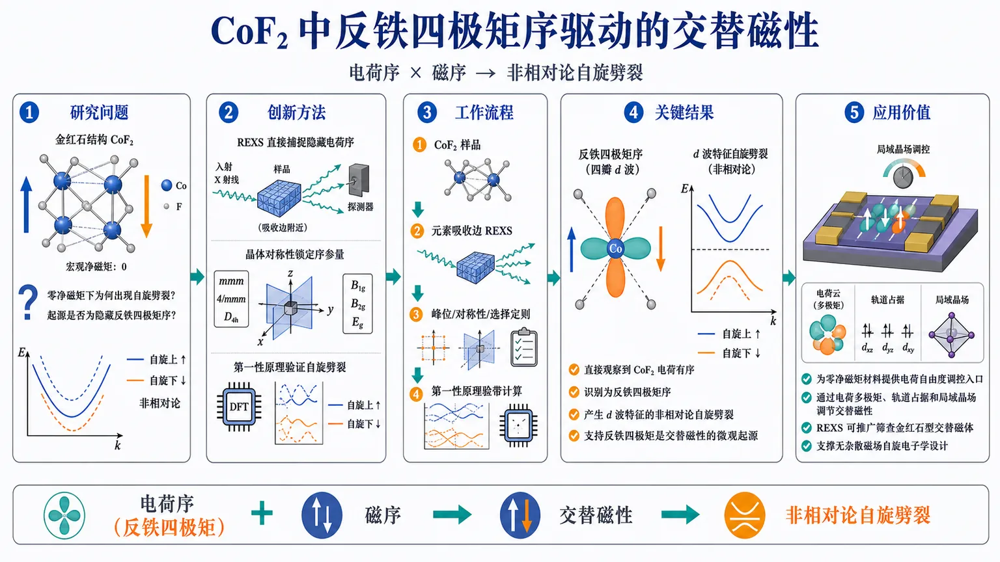
研究问题CoF₂为何能在宏观净磁矩为零的反铁磁状态下产生不依赖自旋轨道耦合的非相对论自旋劈裂？其交替磁性的微观起源是否来自隐藏的电荷多极矩序，尤其是反铁四极矩序？创新方法以共振弹性X射线散射直接捕捉隐藏电荷序，再用晶体对称性分析锁定允许的序参量，最后通过第一性原理计算验证反铁四极矩序能够生成具有d波特征的交替磁性自旋劈裂。Aha点在于：将交替磁性拆解为相互耦合的磁性自由度与电荷多极矩自由度。工作流程从具有金红石结构和Γ点反铁磁性的CoF₂样品出发，在元素吸收边附近进行共振弹性X射线散射，获得对电荷分布敏感的散射信号；结合峰位、对称性及散射选择定则识别反铁四极矩序；将该序参量输入第一性原理电子结构计算，对比其引入前后的能带，确认是否出现特征性的非相对论自旋劈裂；最终建立电荷序、磁序与交替磁性之间的因果证据链。关键结果实验直接观察到CoF₂中的电荷有序，并将其识别为反铁四极矩序。计算显示，该电荷多极矩序能够产生交替磁性所代表的自旋劈裂，支持反铁四极矩是CoF₂交替磁性的微观起源，也为交替磁性序参量由磁性与电荷两种自由度共同构成提供实验依据。论文未提供劈裂能量、峰强度或误差范围等定量数据。应用价值为理解和调控零净磁矩材料中的自旋劈裂提供新的电荷自由度入口，可通过电荷多极矩、轨道占据和局域晶场调节交替磁性。REXS还可作为探测隐藏电荷多极矩的直接实验工具，推广筛查更广泛金红石型交替磁体，并为无杂散磁场自旋电子学材料设计提供机制基础。第一部分：核心概览（Overview）
研究聚焦于金红石结构、Γ 点反铁磁性的 CoF₂，通过共振弹性 X 射线散射、对称性分析与第一性原理计算，直接识别出其隐藏的 反铁四极矩序。计算表明，该电荷多极矩序产生特征性的非相对论自旋劈裂，从而将 交替磁性 分解为磁性与电荷两个自由度。核心贡献是为“电荷多极矩支撑交替磁性”提供实验依据，并建立共振散射探测相关多极矩的通用路径。
第二部分：结构化快速回顾
《Antiferroquadrupolar Order in Altermagnetic CoF₂》（None，）
背景
- 交替磁性材料具有不依赖自旋轨道耦合的自旋劈裂电子态。
- 其微观起源在理论上与隐藏的电荷序相关，但直接实验研究有限。
- CoF₂具有金红石晶体结构、Γ 点反铁磁性，并被归类为 d 波交替磁体。
方法
- 采用共振弹性 X 射线散射（REXS）探测电荷多极矩。
- 结合晶体对称性分析确定允许的序参量。
- 使用从头算电子结构计算检验所识别电荷序是否能够产生交替磁性自旋劈裂。
结果
- 直接观察到 CoF₂ 中的电荷有序。
- 电荷序被识别为反铁四极矩序。
- 电子结构计算显示，该序能够产生实验上具有代表性的交替磁性自旋劈裂。
- 由此建立磁性自由度与电荷自由度共同构成交替磁性序参量的经验依据。
讨论
- CoF₂ 的交替磁性微观起源被归因于反铁四极矩序。
- 该机制可能适用于更广泛的金红石型交替磁体。
- REXS 可作为探测支撑自旋劈裂电子态的电荷多极矩的直接手段。
局限
- 提供的材料没有实验温度、样品数量、散射峰位置、峰强度、误差范围、拟合残差或统计显著性。
- 没有给出第一性原理计算所采用的交换关联泛函、磁矩、晶格参数、四极矩大小或自旋劈裂能量。
- 没有提供完整正文，因此无法核对具体实验流程、背景扣除、结构因子分析和替代模型排除过程。
- 无法仅凭摘要判断反铁四极矩序与其他可能的电荷多极矩序之间的定量区分度。
结论
- 反铁四极矩序是 CoF₂ 中交替磁性的微观来源。
- REXS、对称性分析和第一性原理计算构成了从实验电荷序到电子自旋劈裂之间的证据链。
第三部分：逐章节冷凝解析
提供的文本只有 arXiv 页面信息与摘要，没有完整论文正文、章节标题、图表、参考文献和补充材料。因此，不能可靠地重建“每一个原始章节”，也不能补写样本量、实验数值、统计显著性或模型参数。下面仅整理摘要中能够直接核验的全部实质性信息；所有英文引述均来自所给文本。
原始章节标题：Abstract
#### 交替磁性具有非相对论自旋劈裂
交替磁体的核心电子结构特征是非相对论自旋劈裂，即即使不依赖强自旋轨道耦合，也能形成自旋依赖的能带分裂。摘要中的原始表述为 *"Altermagnets host non-relativistic spin-split electronic states"*。这一区别使交替磁性不同于传统铁磁体：总体磁矩可以为零，但动量空间中的自旋简并仍可被解除。
摘要没有给出具体能带劈裂幅度、费米面位置、动量路径、计算能带图或实验测得的能量尺度，因此无法提供数值化的自旋劈裂大小。
#### 交替磁性与隐藏电荷序存在理论联系
交替磁性的微观起源被表述为与一种隐藏电荷序相联系。原文为 *"whose microscopic origin is theoretically linked to a hidden charge order"*。这里的“隐藏”并非指电荷密度完全不可观测，而是指该序不一定表现为普通意义上的均匀电荷调制，可能以更高阶的电荷多极矩形式出现。
摘要只说明存在理论联系，没有给出具体理论模型、序参量定义、群论表示、自由能展开或先前预测的定量结果。
#### CoF₂是适合检验该机制的体系
研究对象为 CoF₂，其材料特征包括：
- 金红石晶体结构；
- Γ 点反铁磁性；
- d 波交替磁性。
对应原文为 *"a d-wave altermagnetic compound with a rutile crystal structure and Γ-point antiferromagnetism"*。这三个特征共同限定了其磁空间群和允许的电子态对称性。尤其是金红石结构中的两个磁性子晶格及其空间操作，为“反铁磁排列如何与动量依赖的自旋劈裂结合”提供了结构基础。
摘要没有给出 Co–F 键长、晶格常数、磁有序温度、Co 离子自旋态或磁空间群编号。
#### 采用共振弹性 X 射线散射探测电荷多极矩
实验方法包括 共振弹性 X 射线散射，即在特定元素吸收边附近调节入射光子能量，使散射对局域电子态和轨道占据更加敏感。摘要明确写道，研究通过 *"Combining resonant elastic X-ray scattering, symmetry analysis and ab initio calculations"* 展开。
这意味着证据链至少包含三个层次：
- REXS 提供实验散射信号；
- 对称性分析判断该信号对应的允许序参量；
- 从头算计算检验该序参量对电子结构的后果。
但当前材料没有给出 X 射线能量、偏振、倒易空间扫描方向、散射矢量、共振边、温度依赖或峰强度。
#### 直接观察到电荷有序
摘要声称 *"we directly observe charge ordering"*。这里的“直接”应理解为电荷序通过对电荷敏感的共振散射通道被实验探测，而不是仅由磁散射或电子结构计算间接推断。
严格而言，是否足以称为“直接观察”，取决于正文中是否完成了以下论证：
- 观测信号是否只在共振能量附近增强；
- 信号的偏振和 azimuthal-angle 依赖是否符合指定多极矩；
- 是否排除了结构畸变、磁散射、荧光背景和多重散射；
- 峰位与晶体对称性是否相容；
- 反射强度是否符合理论结构因子。
这些实验细节在所给文本中缺失。
#### 电荷序被确定为反铁四极矩序
最核心的识别结果是电荷序属于反铁四极矩序，原文为 *"identify it as antiferroquadrupolar in nature"*。
“反铁”表示相邻或对称相关子晶格上的四极矩取向或符号呈交替排列，总体四极矩可能相互抵消；“四极矩”表示电荷分布的二阶张量成分，而不是净电荷或普通偶极矩。因而，这种序可以在宏观净电荷为零的情况下存在，并通过特定散射选择定则留下可测信号。
摘要没有说明四极矩的具体分量，例如 (Qₓ^₂₋y^₂)、(Q₃z^₂₋ᵣ^₂) 或 (Qₓy)，也没有给出四极矩方向、序波矢、反射条件或序参量幅值。
#### 反铁四极矩序产生交替磁性自旋劈裂
第一性原理计算得到的关键因果关系是：实验观测到的反铁四极矩序可以产生交替磁性的特征自旋劈裂。原文为 *"the experimentally observed antiferroquadrupolar order gives rise to the characteristic altermagnetic spin-splitting"*。
该结论的重要性在于，它并非只证明“电荷序存在”，而是进一步将实验测到的电荷序与交替磁体最具辨识度的电子结构特征连接起来。理论论证至少需要比较：
- 不包含反铁四极矩序时的能带；
- 包含该序时的能带；
- 自旋简并解除的动量位置；
- 劈裂的对称性和动量依赖；
- 计算结果与已知 CoF₂ 交替磁性特征的一致性。
上述比较的具体图像和参数没有提供。
#### 交替磁性序参量可分解为磁性与电荷自由度
摘要将结果概括为对交替磁性序参量分解的实验依据：*"establishing empirical evidence for the decomposition of the altermagnetic order parameter into magnetic and charge degrees of freedom"*。
这表明交替磁性不应仅被视为一种特殊的磁矩排列，也应理解为由两个相互耦合的部分共同描述：
- 磁性自由度：反铁磁自旋或磁矩排列；
- 电荷自由度：反铁四极矩等高阶电荷多极矩排列。
这里使用的是 *"empirical evidence"*，即经验性实验依据，而不是纯粹的数学证明。它支持该分解在 CoF₂ 中成立，但是否具有普适性，还需要更多材料和不同实验手段验证。
#### CoF₂中的交替磁性起源被归结为反铁四极矩序
摘要给出强因果判断：*"We hence demonstrate that antiferroquadrupolar order is the microscopic origin of altermagnetism in CoF₂"*。
“微观起源”比“伴随现象”更强，意味着反铁四极矩序不是交替磁性出现后的被动结果，而是形成自旋劈裂电子结构的关键内部序。要使该判断成立，通常需要证明：
- 电荷序与磁有序的对称性兼容；
- 电荷序能够产生所需的能带劈裂；
- 其他候选电荷序不能同样解释实验；
- 计算和散射实验在结构与能量上相互一致。
摘要只给出结论，未提供候选机制之间的定量比较。
#### 结果可能推广至金红石型交替磁体
研究结果被延伸到材料家族层面：*"with implications to the wider family of rutile altermagnets"*。这意味着金红石结构可能通过类似的子晶格几何、磁空间群和轨道环境，普遍支持反铁四极矩序或相关电荷多极矩序。
但“具有启示”不等同于“已经证明普适”。不同金红石型化合物的离子价态、轨道占据、晶格畸变、磁交换和电子关联强度可能不同，因此不能仅凭 CoF₂ 的结果断言所有金红石交替磁体都具有相同序参量。
#### REXS可作为交替磁性研究的普适实验工具
摘要最后提出方法学推广：*"resonant elastic X-ray scattering can serve as a direct probe of the charge multipoles that underpin spin-split electronic states in these materials"*。
其方法学价值在于，传统交替磁性研究往往集中于：
- 自旋分辨能带；
- 磁性衍射；
- 对称性允许的电子结构；
- 输运或光学响应。
REXS 则可能直接访问支撑自旋劈裂的电荷多极矩。不过，REXS 的“直接性”依赖于共振选择定则、偏振分析和多极矩模型是否足够唯一；这些判断需要正文数据支持。
论文其他原始章节
所给文本没有提供 Introduction、Methods、Results、Discussion、Conclusion、References 或图注等原始章节。因此，下列信息无法从现有材料确定：
- 样品数量 (n)；
- 样品制备方法与纯度；
- 测量温度范围；
- 磁有序温度与电荷有序温度；
- 散射峰位置及其强度；
- 拟合模型和自由参数；
- 误差条与统计显著性 (P) 值；
- 第一性原理计算的软件、泛函、(U) 值和收敛标准；
- 四极矩分量与数值大小；
- 能带自旋劈裂的能量尺度；
- 对照样品或替代解释；
- 与近 2–5 年相关工作的完整定量比较。
第四部分：深度理解与语言支持
术语解析
#### Altermagnetism：交替磁性
交替磁性是一类宏观净磁矩可为零、但电子能带仍具有自旋劈裂的磁性状态。它不同于：
- 铁磁性：通常具有非零净磁矩；
- 普通共线反铁磁性：常因时间反演与平移等联合对称性保持自旋简并；
- 交替磁性：磁性子晶格的交替排列与特定晶体旋转或空间操作结合，使不同自旋态在动量空间呈现非相对论劈裂。
摘要中的 *"non-relativistic spin-split electronic states"* 强调劈裂本身不必依靠自旋轨道耦合。
#### Antiferroquadrupolar order：反铁四极矩序
四极矩描述局域电荷分布的二阶空间各向异性。例如，电子云可能沿某一方向拉长、沿另一方向压缩，但总电荷和偶极矩均为零。
“反铁”表示这些四极矩在不同子晶格之间交替排列。它与普通反铁磁序的形式相似，但被交替排列的对象从自旋或磁矩换成了电荷分布的二阶张量。
#### Charge multipole：电荷多极矩
电荷多极矩是对电荷密度空间分布的分层描述：
- 单极矩：总电荷；
- 偶极矩：电荷中心偏移；
- 四极矩：电荷分布的二阶各向异性；
- 更高阶多极矩：更复杂的空间结构。
在晶体中，高阶电荷多极矩可能总体相消，因此不容易通过普通电荷密度测量发现，却可以通过共振散射的能量、偏振和角度依赖被识别。
#### Resonant elastic X-ray scattering：共振弹性 X 射线散射
REXS在入射光子能量接近元素特定吸收边时测量弹性散射。共振过程增强了 X 射线对局域轨道占据、价态、各向异性电荷分布和多极矩的敏感性。
其中：
- elastic 表示散射前后光子能量近似不变；
- resonant 表示入射能量调谐至吸收边附近；
- 散射峰的位置反映空间周期；
- 偏振与方位角依赖有助于判断多极矩的对称性。
#### d-wave altermagnet：d 波交替磁体
“d 波”通常表示自旋劈裂或相关序参量具有类似 (d) 轨道的角向变号结构。它并不意味着材料中一定存在传统超导意义上的 d 波配对，而是表示动量空间的对称性具有二阶角动量特征，例如在不同晶向之间改变符号。
疑难概念查证
#### 为什么零净磁矩仍能产生自旋劈裂？
关键在于“零净磁矩”是宏观积分性质，而“自旋劈裂”是动量分辨的电子结构性质。两个磁性子晶格的总磁矩可以抵消，但如果它们在晶体空间中由旋转、镜像或其他非平移操作联系，电子在不同动量点感受到的交换场可能不同。
因此：
[
总磁矩=0
]
并不必然推出：
[
Eₚ̆ₐᵣᵣₒw(k)=Edₒwₙₐᵣᵣₒw(k)
]
只要维持自旋简并的联合对称性被破坏，能带就可能出现自旋分裂。
#### 为什么需要电荷四极矩，而不仅是反铁磁序？
磁性序主要描述自旋排列，但交替磁性自旋劈裂的具体动量结构还需要晶体空间对称性参与。反铁四极矩序可以改变局域轨道占据与电子云形状，从而调制不同方向上的交换作用和电子跃迁。
可以将其理解为：
- 反铁磁序提供自旋交替背景；
- 反铁四极矩序改变局域电荷和轨道环境；
- 晶体对称性把这种空间各向异性映射到动量空间；
- 最终形成具有 d 波特征的自旋劈裂。
#### “直接探测”是否等于“唯一证明”？
不等于。REXS 直接测量的是散射强度，而不是直接读取“四极矩数值”。从散射峰到具体四极矩序，需要理论结构因子、偏振选择定则和对称性模型共同解释。
因此，严谨表述应是：REXS 为反铁四极矩序提供直接实验通道；其唯一性仍取决于是否排除了磁散射、晶格畸变和其他电荷多极矩模型。
第五部分：创新评估与关联
创新性判断
在所给信息范围内，最明确的创新点有三项。
#### 首次将CoF₂中的电荷序与交替磁性微观起源直接连接
过去关于交替磁性的讨论通常集中于磁空间群、能带对称性和非相对论自旋劈裂。这里进一步指出，CoF₂中的关键内部自由度是反铁四极矩电荷序，并用 REXS 对其进行实验识别。
#### 将电荷多极矩纳入交替磁性序参量的实验描述
核心概念推进是把交替磁性序参量分解为：
[
altermagnetic order
=
magnetic degrees of freedom
+
charge degrees of freedom
]
这比单纯将交替磁性看作“特殊反铁磁排列”更细致，也为研究其调控机制提供了额外变量，例如轨道占据、局域晶场和电荷多极矩取向。
#### 建立REXS探测交替磁性隐藏电荷序的方法路径
如果完整数据能够证明散射信号具有明确的共振、偏振和方位角选择定则，那么 REXS 将不仅是 CoF₂ 的个案工具，也可能用于筛查其他金红石型交替磁体中的电荷多极矩。
相对于近2–5年工作的审慎判断
无法仅凭提供的摘要完成严格的文献优先权判断，因为没有给出参考文献、相关工作列表或完整出版信息。尤其需要核查以下问题：
- 近年是否已有理论工作预测 CoF₂ 的反铁四极矩序；
- 是否已有实验研究观察到 CoF₂ 的异常共振散射；
- “首次直接观察”究竟指首次观察电荷序、首次确认四极矩性质，还是首次证明其导致自旋劈裂；
- 其他金红石交替磁体是否已经通过 REXS 或非弹性散射研究过类似多极矩；
- 该工作相对于已有磁散射、线性光学和自旋分辨 ARPES 结果增加了哪些独立信息。
在当前证据层级下，最稳妥的结论是：该研究提出并支持了一个重要的微观机制，即 CoF₂ 的交替磁性由反铁四极矩电荷序支撑；但其相对于近 2–5 年具体工作的“首创性”和“首次性”仍需完整正文与参考文献核验。
-
19
📊 含图深析
📄 摘要：文章针对块体材料需约10⁹个原子才能描述大尺度性质、现有机器学习势显存占用过高的问题，提出小占用机器学习原子间势，以降低多组分块体分子动力学的硬件门槛。作者指出即使单组分体系也可能需要数万GPU，摘要未给出新势函数的具体压缩比例、体系规模或精度。
📖 英文原文
arXiv:2608.16329v1 Announce Type: new Abstract: Bulk materials, as opposed to nanomaterials, require molecular dynamics (MD) simulations on a large spatial scale (~10⁹ atoms or more) to adequately capture their atomic-scale physical properties. Previously, the introduction of machine-learning interatomic potentials (MLIPs) has extended MD to this scale, but even single-component bulk systems require tens of thousands of GPUs on high-end supercomputers. However, multi-component bulk MD simulations remain barely achievable, as the HBM footprint of existing MLIPs - already substantial for single-component systems - grows explosively in multi-component scenarios. This paper proposes an MLIP with a small HBM footprint - less than 3% that of existing MLIPs - unlocking multi-component bulk MD using only hundreds of GPUs. This is achieved by first identifying feature vectors and intermediate tensors as the two primary contributors to HBM footprints in existing MLIPs. To address these two sources, the dimensionality of the feature vectors has been reduced by introducing physical and chemical knowledge, and intermediate tensors have been eliminated by aggressively fusing all kernels into a single mega-kernel. In evaluation, the proposed MLIP has used 144 NVIDIA A100 GPUs to perform MD simulations on a 6-component bulk system with 1.14x10⁹ atoms, while previously such MD simulation spatial scale has been restricted to unary systems and typically achieved on high-end supercomputers equipped with tens of thousands of GPUs.
💡 亮点：工作聚焦多组分块体材料的超大规模分子动力学，核心改进是降低机器学习原子间势的高带宽显存占用。目标体系尺度约为10⁹个原子，现有单组分模拟甚至可能需要数万GPU；摘要未给出新模型的实际规模、速度和精度。该问题与团队的大体系机器学习势、缺陷动力学和界面模拟高度相关。
🔬 与我们研究方向的关系
📐 方法要点：方法上，摘要目前只能确认：分子动力学与有限温度轨迹。需要回到原文核对数据来源、标签定义、模型架构、物理约束和验证集，不能把题名直接等同于可迁移算法。若要接入团队的 ML 势或 Hamiltonian 流程，应先确认它是否同时学习能量、力、应力、自旋、极化或电子结构，以及是否报告跨材料/跨温度外推。还需核对原文的训练数据规模、损失函数、边界条件和误差分解，才能判断其是否适合团队的材料模拟任务。
🔗 相关工作关联：与团队方向的可能连接在于：晶体结构、功能材料和结构—性质关系。团队已有机器学习势、第一性原理、有效 Hamiltonian、缺陷计算、电子—声子耦合和有限温度动力学基础，但该文是否提供可复用数据或物理量仍需查证。若研究对象属于机器人、量子信息或电网等非材料场景，关联主要是物理约束学习、少样本建模或不确定性评估，而不是直接迁移材料机制。这种联系应通过同一材料体系上的独立基准和跨分布测试确认，不能仅凭方法名称或期刊来源下结论。
💡 对你方向的启示：对《用小型机器学习原子间势解锁多组分块体材料分子动力学》的启示是先做可证伪的对接：从一个已有材料体系和小规模 DFT 基准开始，明确输入、目标、基线和外推测试，再决定是否接入铁电/磁性、缺陷或载流子动力学工作。具体可先把该文的表示或损失函数在 HfO₂、二维滑移铁电、CrI₃/CrSBr、SiC/GaN 缺陷或卤化物钙钛矿上做小规模复现；若没有直接交叉，应保留为方法参考而非强行迁移。第一步可以选取团队已有的 HfO₂、二维磁体、半导体缺陷或钙钛矿数据做小样本试验，再决定是否扩大到生产级计算。
📖 展开分析 + 配图
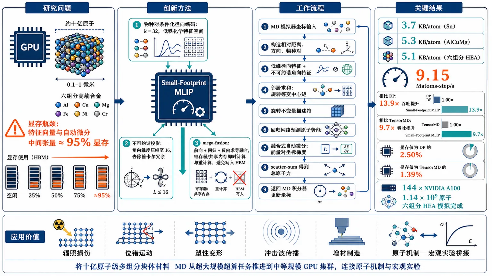
研究问题如何突破多组分块体材料分子动力学的显存瓶颈，在约十亿原子、0.1–1微米尺度上高效模拟六组分高熵合金？现有机器学习原子间势的单位原子显存会随组分数激增，特征向量与自动微分中间张量约占显存的95%。创新方法提出协同压缩的Small-Footprint MLIP：按中心—邻居物种对条件化径向编码，使化学特征空间呈低秩结构并将径向维度设为k=32；通过不可约谐投影删除笛卡尔角向特征冗余，将角向维度压缩至16；再以mega-fusion融合前向、回归和反向求导，在寄存器或共享内存中即时计算、重计算中间结果，避免写入HBM。Aha点是同时重构特征表示、自动微分路径和GPU内存生命周期，用更多片上计算换取数量级显存节省。工作流程从MD模拟器接收原子坐标，构造中心—邻居相对距离、方向和物种对信息；用物种对条件化编码器生成低维径向特征，用不可约谐基生成去冗余角向特征；对邻居特征求和形成旋转等变中心矩，并转换为旋转不变量描述符；回归网络预测每个原子的势能；通过融合式自动微分计算能量对坐标的梯度，将中心—邻居部分力scatter-sum为总原子力；把能量和力返回MD积分器，更新下一时间步坐标。关键结果在单GPU端到端测试中，Sn、AlCuMg和六组分HEA的显存占用分别仅为3.7、5.3和5.1 KB/atom。HEA吞吐达到9.15 Matoms-step/s，相比DP提升13.9倍、相比TensorMD提升9.7倍；显存仅为DP的2.50%、TensorMD的1.39%。最终在144张NVIDIA A100 GPU上完成1.14×10⁹原子的六组分高熵合金模拟。应用价值将多组分块体材料的十亿原子级分子动力学从超大规模超算任务推进到中等规模GPU集群，使研究者能够在接近0.1–1微米的尺度上模拟高熵合金、辐照损伤、位错运动、塑性变形、冲击波传播和增材制造过程，为连接原子机制与宏观实验提供更可行的计算工具。第一部分：核心概览（Overview）
该研究针对多组分块体材料分子动力学（MD）受限于显存容量的问题，提出一种小显存占用的机器学习原子间势（MLIP）。方法从特征向量和反向自动微分中间张量两方面压缩显存：利用原子种类条件化降低径向特征秩，利用不可约谐投影消除角向冗余，并将前向、反向计算融合为单一 mega-kernel。结果显示，六组分高熵合金可在 144 张 NVIDIA A100 GPU、1.14 × 10⁹ 个原子规模上运行，单位原子显存占用仅 5.1 KB，约为现有方法的 1.39%–2.50%。核心地位在于将多组分十亿原子级MD从超算专属任务推进至中等规模GPU集群。
第二部分：结构化快速回顾
《Unlocking Multi-Component Bulk-Materials Molecular Dynamics with a Small-Footprint Machine Learning Interatomic Potential》（None，）
背景
块体材料的性质主要由内部微结构决定，需要约 10⁹ 个原子和 0.1–1 μm空间尺度以降低表面效应和统计涨落。既有MLIP虽然扩展了MD规模，但显存占用随组分数快速增长；例如DP从单组分Sn的 38.1 KB/atom 增至六组分HEA的 204.6 KB/atom。
方法
识别出显存占用的两大来源：特征向量和中间张量，二者合计约 95%。通过邻居物种或中心-邻居物种对条件化降低径向特征维度，通过不可约谐投影压缩角向特征，并用mega-fusion、重计算、分块和warp级数据交换消除HBM中的中间张量。
结果
在单GPU端到端测试中，Sn、AlCuMg和HEA的显存占用分别为 3.7、5.3、5.1 KB/atom；HEA吞吐量为 9.15 Matoms-step/s，相较DP和TensorMD分别提升 13.9倍和 9.7倍。144张A100上完成 1.14 × 10⁹ 原子的六组分HEA模拟。
讨论
小显存设计通过牺牲部分片上计算和重计算，换取更低的HBM占用。FP32可使用单一mega-kernel；FP64因寄存器压力更高，采用partial-fusion。默认配置 k = 32、ℓmax = 3 被视为精度、吞吐量与显存规模之间的折中。
局限
提供的论文内容在“4.1.3. MLIPs and Architectures”处截断，因此无法核查完整训练数据规模、训练集/测试集划分、时间积分设置、长时间动力学稳定性、强标度扩展、能量守恒以及完整消融实验。文中没有报告统计显著性 P值，也没有给出误差置信区间。部分模型精度低于基线，例如HEA能量RMSE为 2.75 meV/atom，但力RMSE为 49.8 meV/Å，不能仅凭单一指标宣称全面优于所有基线。
结论
该MLIP将六组分块体材料MD推进到十亿原子级，并将每原子显存压缩至现有方法的约百分之几。技术关键并非单独改进神经网络结构，而是同时重构特征表示、自动微分执行路径和GPU内存生命周期。
第三部分：逐章节冷凝解析（Section-by-Section Condensing）
Abstract
问题规模由块体物理决定。 块体材料需要约 10⁹ 个原子或更多才能捕捉原子尺度物理性质，核心表述是 *“Bulk materials, as opposed to nanomaterials, require molecular dynamics (MD) simulations on a large spatial scale (∼10⁹ atoms or more)”*。这一规模与缺陷动力学、冲击波传播和宏观实验之间存在直接联系。
多组分体系的显存增长具有爆炸性。 既有MLIP在单组分体系中已经需要大规模超算资源，而多组分体系还要为邻居物种编码额外特征。论文将问题概括为 *“the HBM footprint of existing MLIPs — already substantial for single-component systems — grows explosively in multi-component scenarios”*。
显存压缩幅度达到数量级。 所提出MLIP的HBM占用低于既有MLIP的 3%，原文为 *“less than 3% that of existing MLIPs”*。但表1显示具体比例依基线不同而不同：HEA中为DP的 2.50%、TensorMD的 1.39%。
完成六组分十亿原子模拟。 使用 144张NVIDIA A100 GPU，在六组分体系上达到 1.14 × 10⁹ 原子，原文为 *“perform MD simulations on a 6-component bulk system with 1.14 × 10⁹ atoms”*。该结果将此前主要限于单组分体系的空间规模拓展到多组分HEA。
1. Introduction
块体材料模拟需要抑制表面效应。 块体材料的响应由内部微结构主导，量子限域效应可以忽略，物性近似与系统尺寸无关。原文称其为 *“material volumes sufficiently large that their response is governed primarily by interior microstructure rather than by surfaces or nanoscale size effects”*。研究场景包括核能抗辐照合金和极端条件下的宏观力学响应。
十亿原子规模具有实验连接意义。 大尺度不是单纯的计算便利，而是降低表面效应和统计波动的必要条件；论文明确指出 *“the scale of MD simulation – especially spatial scale – is not a luxury but a necessity”*，并进一步称十亿原子模拟对直接连接实验至关重要。
目标空间尺度为0.1–1 μm。 金属和合金中的缺陷动力学及波传播需要达到 0.1–1 μm 的模拟尺度，相关应用包括冲击加载、塑性、辐照损伤、位错、增材制造和连续介质多尺度耦合。
既有大规模成果主要限于单组分体系。 表1列出：DP达到 1.3 × 10¹⁰ Cu原子/90,000加速器，DP达到 3.4 × 10⁹原子/27,360 GPU，TensorMD达到 4.0 × 10⁹ W原子/16,000 GPU。对应原文为 *“SOTA MLIP MD simulations of bulk materials are confined to single-component systems and are quite expensive.”*
多组分导致单位原子显存急剧增加。 DP在单组分Sn中为 38.1 KB/atom，六组分HEA中为 204.6 KB/atom，增长约 5.37倍。TensorMD的HEA占用为 365.6 KB/atom。论文用此事实说明 *“making multi-component bulk-materials MD simulation barely feasible even on leading supercomputers.”*
特征向量是第一类显存瓶颈。 每个中心原子通常有数百个邻居，每个邻居由包含数十个元素的特征向量表示。多组分体系还需要区分邻居物种，因此特征向量维度和数量都会推高HBM占用。原文为 *“MLIPs must keep track of all its neighbors (typically hundreds for bulk materials due to their high density)”*。
中间张量是第二类显存瓶颈。 势能推断后必须立即进行自动微分以得到原子力，前向和反向阶段之间需要保留大量中间张量。论文指出 *“This requires a large number of intermediate tensors to be retained across the two phases”*。
研究贡献分为三类。 第一，压缩径向和角向特征；第二，将前向、反向全部计算封装到单一mega-kernel；第三，在 144张A100 GPU上完成六组分、1.14 × 10⁹原子HEA模拟。相对于DP和TensorMD，HEA吞吐分别提高 13.9倍和 9.7倍。
2. Background
2.1. Overview of MLIPs
#### 2.1.1. MLIP Training
训练数据来自第一性原理。 MLIP使用高精度第一性原理计算生成的数据进行训练，以逼近ab initio精度。数据包含三类信息：原子坐标、势能和原子力。原文概括为 *“the datasets are composed of three parts of atomic coordinates, potential energies and atomic forces”*。
训练目标是同时学习能量和力相关性。 原子力通常由势能对坐标的梯度得到，因此模型不仅需要拟合能量，还必须保持可微性和梯度质量。这一结构直接导致推理阶段存在前向和反向内存保存问题。
#### 2.1.2. MLIP Inference
MLIP以MD时间步为调用单位。 每个时间步通常为 0.001 ps。MLIP从MD模拟器接收坐标，计算势能和原子力，再返回模拟器以更新下一步坐标。原文为 *“This interfacing occurs at each time step (typically 0.001 picoseconds)”*。
推理包含Encoding、Regression和Derivation三个阶段。 Encoding根据邻居坐标构造原子描述符；Regression根据描述符预测原子势能；Derivation通过对坐标求导得到原子力。
反向传播的物理输出是原子力。 势能是标量，原子力是其对原子坐标的梯度。因而模型推理的显存需求不能只按前向神经网络参数估算，还必须考虑反向路径上的激活、中间导数和邻居级几何量。
2.2. Analysis on MD Spatial Scales
TensorMD的HEA显存分解揭示了近95%的主要来源。 表2给出：Encoding中的特征向量占 42.8%，Derivation中的中间张量占 52.2%，其他MLIP数据占 4.1%，MD模拟器占 0.9%。因此特征向量和中间张量合计 95.0%。
Encoding受邻居数、径向维度和角向维度控制。 邻居特征数组的复杂度近似为
[
O(|N(i)|(k+d)),
]
其中 (|N(i)|) 是邻居数，(k) 是径向特征维度，(d) 是角向特征维度。原文称 *“Their footprint is controlled primarily by the k, d, and neighbor count.”*
Derivation受跨阶段存活张量控制。 需要共享或保留的对象包括 (PᵢᵢₙRd× k)、其伴随量 (WᵢᵢₙRd× k)、描述符 (GᵢᵢₙR⁽ellₘₐₓ⁺¹⁾× k) 以及神经网络激活。它们要么跨阶段保持存活，要么被重新计算。
3. Methodology and Innovations
优化对象覆盖MLIP显存的约95%。 该节将42.8%的特征向量和52.2%的中间张量作为直接优化目标，原文为 *“the two major memory consumers, i.e., feature vectors and intermediate tensors, together accounting for ∼95% of MLIP footprint”*。
3.1. Inference Pipeline
#### 3.1.1. The Encoding Stage
邻居几何量由相对坐标构造。 对中心原子 (i) 和邻居 (j)，定义
[
mathbf rᵢⱼ=mathbf rⱼ₋mathbf rᵢ,quad
rᵢⱼ=|mathbf rᵢⱼ|,quad
hatmathbf rᵢⱼ=mathbf rᵢⱼ/rᵢⱼ.
]
相对坐标保证平移不变性。
径向和角向特征分别描述距离与方向。
[
mathbf gradⁱalᵢⱼ=mathcal E(rᵢⱼ;ḩiₘₐₜₕcal E)inmathbb R^k,
]
[
mathbf gaⁿgularᵢⱼ=Ømegaₑₗₗₘₐₓ(hatmathbf rᵢⱼ)inmathbb R^d.
]
其中 (ḩiₘₐₜₕcal E) 表示编码网络携带的物种信息。
中心等变矩通过邻居求和构造。
[
Pᵢ₌G^Tₐₙgᵤₗₐᵣ,ᵢGᵣₐdᵢₐₗ,ᵢ
=sumⱼᵢₙₘₐₜₕcₐₗ N₍ᵢ₎
(mathbf gaⁿgularᵢⱼ)^Tøtimesmathbf gradⁱalᵢⱼ
inmathbb Rd× k.
]
该构造同时具有平移不变性、邻居排列不变性以及旋转等变性，原文为 *“the neighbor sum makes it invariant to neighbor ordering, and its angular blocks transform equivariantly under rotation.”*
高阶角向块通过平方范数转成不变量。 对角动量阶数 (ell)，标量块直接保留，高阶块使用
[
(mathbf p⁽ell⁾ᵢ,ₖ)^T Cₑₗₗₘₐₜₕbf p⁽ell⁾ᵢ,ₖ.
]
最终描述符维度为 ((ellₘₐₓ+1)× k)。(Cₑₗₗ₎ 是角向基的固定度量矩阵；在正交归一不可约表示中为单位矩阵。
#### 3.1.2. The Regression Stage
原子势能由不变量描述符预测。
[
Eᵢ₌mathcal R(Gᵢ;ḩiₘₐₜₕcal R),
]
其中 (ḩiₘₐₜₕcal R) 表示回归网络携带的中心原子物种信息。该设计允许Encoding和Regression采用不同的物种条件化策略。
#### 3.1.3. The Derivation Stage
能量梯度先从描述符传播至中心矩。 定义
[
Wᵢequivfracpartial Eᵢpartial Pᵢ.
]
随后得到邻居级径向和角向伴随量：
[
Uᵢ₌Gₐₙgᵤₗₐᵣ,ᵢWᵢ,
qquad
Vᵢ₌Gᵣₐdᵢₐₗ,ᵢWᵢ^T.
]
部分力由径向和角向导数组合得到。
[
fᵢⱼ
=fracpartial Eᵢpartial rᵢⱼ
=(Jradⁱalᵢⱼ)^Tuᵢⱼ
+(Jaⁿgularᵢⱼ)^Tvᵢⱼ.
]
原文明确指出 *“Atomic forces are the scatter-sum of the partial forces.”* 即总原子力通过对相关邻居贡献进行scatter-sum获得。
#### 3.1.4. Major Sources of HBM Footprint
边相关状态随邻居数量线性增长。 未融合实现可能显式存储径向特征、角向特征、(Uᵢ)、(Vᵢ)以及几何导数；其规模为
[
mathcal O(|mathcal N(i)|(k+d)).
]
原子相关状态需要跨阶段保存。 (Pᵢ)、(Wᵢ)、(Gᵢ)和网络激活共同构成跨前向/反向阶段的存活状态。研究的基本执行策略是减少这些对象的维度，或在需要时重新计算。
3.2. Radial Feature Dimensionality Reduction
径向维度 (k) 是精度和规模的直接折中。 更大的 (k)通常保留更多化学信息，但增加每原子显存；传统DP使用 k = 100，TensorMD使用 k = 64。研究选择从物种条件化位置入手，而非仅经验确定宽度。
#### 3.2.1. Differentiating Atom Species
编码网络和回归网络具有不同物种条件化选项。 对C组分体系，编码网络可采用三种配置：
- (ḩiₘₐₜₕcal E=ǎrnothing)：所有物种共用一个编码网络；
- (ḩiₘₐₜₕcal E=sⱼ)：按邻居物种区分，使用C个编码网络；
- (ḩiₘₐₜₕcal E=(sᵢ,sⱼ₎)：按中心-邻居物种对区分，使用 (C²) 个编码网络。
回归网络可采用：
- (ḩiₘₐₜₕcal R=ǎrnothing)：所有中心原子共用一个回归网络；
- (ḩiₘₐₜₕcal R=sᵢ)：按中心原子物种区分，使用C个回归网络。
基线采用不同的条件化策略。 TensorMD使用
[
ḩiₘₐₜₕcal E=ǎrnothing,quad ḩiₘₐₜₕcal R=sᵢ,
]
DP使用
[
ḩiₘₐₜₕcal E=sⱼ,quad ḩiₘₐₜₕcal R=sᵢ.
]
此前研究没有系统回答不同条件化方式如何影响 (k) 以及最终MD空间规模。
#### 3.2.2. Exposing a Low-Rank Radial Feature Space
中心-邻居物种对条件化可分解化学混合问题。 径向依赖本质上是有界区间 ([0,r_c]) 上的一维平滑函数。通用编码器必须学习适用于所有化学对的共同基；物种对条件化则将问题拆分为更平滑的有序化学对响应。论文将这一物理直觉表述为 *“Pair conditioning decomposes this mixed problem into smoother ordered-pair responses.”*
SVD显示径向特征确实具有更低秩。 对三组分AlCuMg和六组分HEA分别训练 k = 64、ℓmax = 3 模型；每个径向特征矩阵含 50,001行，每行是 64维径向特征。在保留总奇异值平方和 (1-10⁻⁸) 的条件下：
- AlCuMg的物种对条件化模型仅需前 21个奇异方向；
- HEA的物种对条件化模型仅需前 29个奇异方向；
- 通用编码器和仅按物种编码的模型至少需要 48个方向。
原文结论为 *“The faster decay confirms that pair conditioning exposes a substantially lower-rank radial feature space.”* 需要注意，这证明的是表示空间的低秩结构，不等同于证明窄模型在所有动力学任务上都保持相同误差。
#### 3.2.3. Determining the Radial Feature Dimensionality
SVD只用于提出候选维度，不能替代重新训练。 候选集合为
[
kin16,32,64.
]
每个窄模型均需从头训练，并同时检查精度、吞吐和显存。单个A100从头训练通常只需数小时，但论文没有给出具体训练步数、数据量或收敛阈值。
最终默认选择为 (k=32)。 该选择被描述为多个材料体系上的经验平衡点，且适配GPU tile和warp宽度。原文为 *“Based on our experiences across various systems, k = 32 is a balanced choice.”*
3.3. Angular Feature Dimensionality Reduction
原始笛卡尔角向表示包含冗余。 最大角阶为 (ellₘₐₓ)时，原始维度为
[
d=sumₑₗₗ₌₀ellₘₐₓbinomell+22
=frac(ellₘₐₓ+1)(ellₘₐₓ+2)(ellₘₐₓ+3)6.
]
例如，(ellₘₐₓ=1)时 (d=4)，(ellₘₐₓ=2)时 (d=10)。
高阶笛卡尔单项式不是完全独立的。 二阶的六个单项式中，五个属于独立四极分量，另一个标量迹满足
[
hat x²⁺hat y²⁺hat z²⁼¹,
]
重复了 (ell=0)的信息。论文称原始基 *“reducible under rotations.”*
#### 3.3.1. Irreducible Harmonic Projection
不可约谐投影删除旋转表示中的依赖。 每个总次数为(ell)的笛卡尔单项式向量左乘
[
Qₑₗₗᵢₙₘₐₜₕbb R⁽²ell⁺¹⁾×bⁱⁿomell⁺²²,
]
并满足
[
Qₑₗₗ Qₑₗₗ^T=I.
]
该操作将可约表示投影到维度为 (2ell+1)的不可约谐子空间。
投影矩阵同时满足调和性和球面正交归一。
[
Lₑₗₗ Qₑₗₗ^T=0,qquad
Qₑₗₗ Dₑₗₗ⁻¹Qₑₗₗ^T=I.
]
其中 (Lₑₗₗ₎是拉普拉斯算子的矩阵表示，(Dₑₗₗ₎的对角元素是多项式多重组合系数。第一条约束移除径向冗余，第二条约束保证球面上的正交归一。
压缩率随角阶提高而增加。 表3给出：
| (ellₘₐₓ) | 0 | 1 | 2 | 3 | 4 | 5 |
|---|---:|---:|---:|---:|---:|---:|
| 原始维度 | 1 | 4 | 10 | 20 | 35 | 56 |
| 降维后 | 1 | 4 | 9 | 16 | 25 | 36 |
| 降维率 | 0% | 0% | 10.0% | 20.0% | 28.6% | 35.7% |
#### 3.3.2. Choosing the Maximum Angular Order
默认最大角阶为 (ellₘₐₓ=3)。 此时包含各向同性、偶极、四极和八极角向信息，对应最终角向维度 16。论文认为其对块体材料结构多样性已足够，原文为 *“this angular coverage is sufficient for describing the structural diversity of bulk materials.”*
更高角阶的收益被认为有限。 这是基于经验和物理对应关系的判断，而非在所给文本中由完整消融表严格证明。论文将 (ellₘₐₓ)与物理理论中的动量量子数联系起来，并指出更高阶项仅产生边际收益。
3.4. Intermediate Tensor Reduction
所有中间张量通过mega-fusion从HBM中消除。 每个MD时间步只启动一个mega-kernel；中间结果保留在寄存器或共享内存中，或在需要时即时计算。原文为 *“all intermediate tensors are either kept on-chip (in registers or shared memory) or computed on-the-fly, thereby leaving no footprint on HBM.”*
特征降维是融合可行的前提。 降低 (k)和(d)减少了片上工作集，使更多阶段能够在单个kernel中完成，而不超过寄存器和共享内存容量。
#### 3.4.1. Configurable Fusion
未融合实现包含10个CUDA kernel。 对应式(1)–(10)，每个kernel产生的径向特征、角向特征、(Pᵢ)、(Gᵢ)、(Wᵢ)、(Uᵢ)、(Vᵢ)等结果都可能写入HBM。
Mega-fusion将10个kernel合并为1个。 大型且生命周期长的径向、角向特征不再从Encoding阶段一直保留到Derivation阶段，而是在Derivation阶段重计算。表4明确记录mega-fusion的HBM footprint来源为 None。
Partial-fusion将10个kernel合并为3个。 三个kernel分别对应式(1–5)、式(6)、式(7–10)，仍需将描述符 (Gᵢ)和势能 (Eᵢ)写入HBM；(Pᵢ)在Derivation阶段重计算。
两种融合配置适应不同精度和片上存储容量。 在A100上，FP32使用mega-fusion，FP64使用partial-fusion。原因是FP32占用较低，可使用更大的tile；FP64寄存器压力更高，单一mega-kernel可能不利于执行。原文为 *“mega-fusion is adopted for FP32 simulations, whereas partial-fusion is used for FP64.”*
#### 3.4.2. Tensor-Core-Accelerated Fusion
反向阶段的矩阵收缩由Tensor Core加速。 邻居对按tile处理，径向特征及其导数与 (Wᵢ^T)执行warp级矩阵乘加，得到 (Vᵢ)，并通过重新结合计算避免显式构造较宽的 (Uᵢ)张量。
反向中间量停留在片上。 tile局部向量留在共享内存中，并立即进入后续力投影，从而避免HBM往返。该设计本质上是计算重排与内存生命周期压缩的联合优化。
3.5. Implementation
实现规模较大且面向GPU执行。 代码包含约 20K行C/C++和 17K行CUDA，并计划开源。具体原文为 *“implemented with 20K lines of C/C++ and 17K lines of CUDA codes”*。
MD模拟器也被GPU化。 既有DP和TensorMD主要使用CPU版LAMMPS，因为MLIP计算占主导；本研究由于MLIP本身被显著加速，进一步启用LAMMPS的Kokkos GPU接口，减少模拟器部分的相对开销。
4. Evaluation
4.1. Experimental Setup
#### 4.1.1. Platform Configuration
评测平台为144张A100 PCIe GPU。 每个节点包含两颗 64核、3.0 GHz Armv8.2-A CPU和四张A100 PCIe GPU；每张GPU拥有 40 GB HBM2。集群互联为每节点四条 100 Gb/s RoCE链路。
软件环境明确。 使用GCC 11.3.0、CUDA 12.2、CUDA-aware Open MPI 4.1.5和UCX 1.15.0。这些细节对复现实验和解释通信性能至关重要。
#### 4.1.2. Bulk-Material Systems
评估覆盖三种组分复杂度。 系统包括：
- Sn：单组分金属；
- AlCuMg：三元合金；
- HEA：六组分高熵合金，元素为Ta、Nb、W、Mo、V和Al。
单GPU端到端结果显示显存大幅下降。
| 系统 | 模型 | 能量RMSE（meV/atom） | 力RMSE（meV/Å） | 吞吐（Matoms-step/s） | 显存（KB/atom） | OOM前规模（百万原子） |
|---|---|---:|---:|---:|---:|---:|
| Sn | DP | 7.55 | 93.5 | 1.41 | 38.1 | 1.01 |
| Sn | TensorMD | 6.21 | 56.2 | 3.56 | 69.5 | 0.55 |
| Sn | 本研究 | 4.69 | 54.3 | 15.75 | 3.7 | 10.98 |
| AlCuMg | DP | 3.67 | 45.0 | 0.87 | 107.2 | 0.36 |
| AlCuMg | TensorMD | 7.32 | 51.5 | 1.48 | 242.2 | 0.14 |
| AlCuMg | 本研究 | 3.20 | 35.6 | 9.33 | 5.3 | 7.75 |
| HEA | DP | 28.7 | 141 | 0.66 | 204.6 | 0.18 |
| HEA | TensorMD | 11.40 | 97.7 | 0.94 | 365.6 | 0.10 |
| HEA | 本研究 | 2.75 | 49.8 | 9.15 | 5.1 | 7.89 |
HEA上同时实现精度、吞吐和显存优势。 本研究的HEA能量RMSE为 2.75 meV/atom，低于DP的 28.7和TensorMD的 11.40；力RMSE为 49.8 meV/Å，低于DP的 141和TensorMD的 97.7。吞吐为 9.15 Matoms-step/s，分别是DP的约 13.9倍和TensorMD的约 9.7倍。
多组分规模提升最具代表性。 HEA单位原子显存为 5.1 KB，仅为DP的
[
5.1/204.6approx2.50%
]
和TensorMD的
[
5.1/365.6approx1.39%.
]
单GPU OOM前规模从TensorMD的 0.10 × 10⁶原子提高到 7.89 × 10⁶原子。
#### 4.1.3. MLIPs and Architectures
所提出模型采用物种对条件化共享编码器。 编码器包含 3个隐藏层，每层宽度128；能量头依赖中心原子物种，包含 4个隐藏层，每层宽度64，使用 SiLU激活和残差连接。
基线为DP和TensorMD。 DP通过 DeePMD-kit v3.1.2评估。所提供论文内容在介绍DP之后截断，因而缺少TensorMD具体版本、训练方案、数据集配置、邻居截断半径、时间步数、精度设置及完整基线公平性说明。
第四部分：深度理解与语言支持（Understanding & Nuance）
1. 术语解析
Small-footprint MLIP
这里的“footprint”不是模型文件大小，而是推理过程中每个原子占用的HBM显存工作集，包括邻居特征、中间激活、梯度相关张量和模拟器数据。论文用 KB/atom衡量它。小footprint不必然意味着参数量小，也不必然意味着算力消耗低；本研究实际上通过更多片上重计算换取更小HBM占用。
Feature vector dimensionality
(k)和(d)分别表示径向和角向特征的内部维度。维度越高通常能够表达更多环境信息，但会增加邻居级数组和矩阵乘法规模。论文的关键不是盲目缩小维度，而是先改变物种信息进入网络的位置，使特征空间本身变得低秩。
Low-rank radial feature space
低秩意味着不同径向通道之间存在较强相关性，可以用较少独立方向近似原始表示。SVD中的“前21或29个方向保留 (1-10⁻⁸) 的奇异值平方和”是数值表示冗余的证据，但不是完整的物理误差保证。真正能否缩小到 (k=32)，仍需重新训练并用能量、力及动力学性质验证。
Irreducible harmonic projection
“不可约”指角向特征在旋转群表示下不能再分解为相互耦合的更小表示。原始笛卡尔单项式虽然容易生成，但包含不同角动量阶之间的冗余，例如 (hat x²⁺hat y²⁺hat z²⁼¹)。谐投影保留真正独立的角向自由度，并使旋转变换性质更清晰。
Mega-fusion
mega-fusion不是简单地把多个kernel串联，而是将Encoding、Regression和Derivation的计算路径合并，并主动管理变量生命周期。需要跨阶段的大数组不再写入HBM，而是选择片上保留或按需重计算。其代价是更高的寄存器压力、较小的tile或更多算术操作。
2. 疑难查证
为什么物种对条件化可以降低特征维度？
假设一个通用编码器同时处理Ta-Ta、Ta-Nb、Ta-W等多种化学相互作用。它需要用同一组径向通道表示不同键长分布、配位壳层和化学环境，因此64个通道中可能包含许多用于“区分化学对”的自由度。若改为每个有序物种对使用独立编码器，编码器不再承担全部化学分类任务，径向函数可以更专注于该化学对的距离依赖，因而不同通道更相关，SVD谱衰减更快。
但这不是无代价优化。六组分体系的物种对条件化理论上需要 (C²⁼³⁶)个编码网络。显存压缩来自运行时特征维度降低，并不表示模型参数、编译复杂度或训练管理复杂度一定降低。
为什么角向降维不会破坏旋转性质？
原始笛卡尔单项式可以组成旋转下的可约表示。通过拉普拉斯零空间约束 (Lₑₗₗ Qₑₗₗ^T=0)，投影保留调和多项式，即真正的角动量(ell)子空间；通过 (Qₑₗₗ Dₑₗₗ⁻¹Qₑₗₗ^T=I)，进一步固定球面度量下的正交归一。随后对高阶块取合适的二次不变量，既消除了整体旋转依赖，也避免了直接存储冗余笛卡尔分量。
为什么反向传播需要大量显存？
自动微分通常需要保留前向中间结果，以便反向时计算链式法则。MLIP不仅有神经网络激活，还有每个中心-邻居边的径向特征、角向特征及其几何导数。邻居数为数百时，边级中间状态的数量会远大于每个原子最终输出的一个能量标量。mega-fusion通过重计算牺牲部分算力，避免把这些边级中间量写入容量较大的HBM。
FP32与FP64为何采用不同融合策略？
FP64每个数占用更多字节，同时寄存器文件可容纳的元素更少，单kernel中保持全部工作集会造成寄存器溢出或占用率下降。因此FP64使用partial-fusion，允许部分阶段之间通过HBM传递较小的 (Gᵢ)和(Eᵢ)。FP32则可采用更大tile和单kernel路径。这里的“更低显存”与“更高性能”并非在所有数值精度下同步成立。
第五部分：创新评估与关联（Synthesis & Novelty）
1. 创新性判断
核心创新是系统级显存重构，而非单一模型结构改进。 过去工作已经分别探索过动态邻居内存分配和kernel fusion，但效果有限。论文明确指出 *“Several prior works have attempted to reduce this per-atom footprint through dynamic memory allocation of neighboring atoms and aggressive kernel fusion”*。新方法将三类层面联动：
- 表示层：用邻居物种或中心-邻居物种对条件化降低径向特征秩；
- 数学表示层：用不可约谐投影移除角向特征冗余；
- 系统执行层：用mega-fusion、重计算、Tensor Core和片上内存管理消除中间张量。
解决了前人未充分解决的多组分可扩展性问题。 既有十亿原子级成果集中于单组分Cu或W，例如 1.3 × 10¹⁰ Cu原子和 4 × 10⁹ W原子，而六组分体系的单位原子显存可达到 204.6–365.6 KB。本研究在 144张A100上运行 1.14 × 10⁹原子HEA，将瓶颈从“只能在数万GPU超算上运行”转为“普通集群可执行”。
创新的量化幅度显著。 在HEA上：
- 相对于DP，显存由 204.6降至 5.1 KB/atom，降至 2.50%；
- 相对于TensorMD，显存由 365.6降至 5.1 KB/atom，降至 1.39%；
- 吞吐相对DP提升 13.9倍；
- 吞吐相对TensorMD提升 9.7倍；
- OOM前单GPU规模达到 7.89 × 10⁶原子。
相对于近年工作的真正差异在于优化目标。 近年的MLIP研究通常重点关注势能/力精度、模型表达能力、等变性或单GPU吞吐；该研究把HBM容量作为十亿原子MD的首要约束，并将特征秩分析与GPU kernel执行路径共同纳入模型设计。这种“表示-自动微分-硬件内存”协同设计，是其最明确的新颖性。
2. 需要谨慎保留的判断
“3%”是显存占用结论，不是全面性能结论。 该比例针对每原子HBM footprint，不代表训练成本、参数数量、通信量、功耗或总时间都降低到3%。
精度优势需要完整实验支撑。 所给表格显示HEA上本研究的RMSE优于两个基线，但训练数据是否完全一致、测试集是否独立、误差是否覆盖不同温度和应变状态，均因原文截断而无法核查。
大规模运行成功不等于物理可靠性已经充分验证。 十亿原子规模证明了工程可扩展性，但还需要长时间NVE能量漂移、温度稳定性、缺陷迁移、冲击波传播和跨体系迁移等结果，才能证明该MLIP适合生产级块体材料研究。
文献时效性无法完整确认。 所给内容标注为 arXiv:2608.16329v1，17 Aug 2026，且材料在4.1.3处中断。因缺少完整参考文献和后续章节，无法严格完成与过去2–5年全部相关工作的系统文献计量比较。基于已提供内容，最可信的结论是：该研究在多组分十亿原子级MD的HBM压缩和GPU执行协同优化方面具有明显方法学新颖性。
-
20
📊 含图深析
📄 摘要：《德国应用化学》国际版，第 65 卷，第 34 期，2026 年 8 月 17 日。
📖 英文原文
Angewandte Chemie International Edition, Volume 65, Issue 34, 17 August 2026.
💡 亮点：工作以反应特异性数据集为基础，用机器学习重新挖掘未充分探索的催化剂结构。题名表明研究强调数据集与反应之间的匹配，而非寻找跨反应通用的最佳催化剂。由于摘要正文缺失，无法确认材料、模型、结构特征或定量结论；与团队的功能材料设计存在间接联系，但没有足够信息建立具体物理交叉。
🔬 与我们研究方向的关系
📐 方法要点：方法上，摘要目前只能确认：论文题目和摘要中可确认的方法。需要回到原文核对数据来源、标签定义、模型架构、物理约束和验证集，不能把题名直接等同于可迁移算法。若要接入团队的 ML 势或 Hamiltonian 流程，应先确认它是否同时学习能量、力、应力、自旋、极化或电子结构，以及是否报告跨材料/跨温度外推。还需核对原文的训练数据规模、损失函数、边界条件和误差分解，才能判断其是否适合团队的材料模拟任务。
🔗 相关工作关联：与团队方向的可能连接在于：AI for science 与材料/物理问题的结构化分析。团队已有机器学习势、第一性原理、有效 Hamiltonian、缺陷计算、电子—声子耦合和有限温度动力学基础，但该文是否提供可复用数据或物理量仍需查证。若研究对象属于机器人、量子信息或电网等非材料场景，关联主要是物理约束学习、少样本建模或不确定性评估，而不是直接迁移材料机制。这种联系应通过同一材料体系上的独立基准和跨分布测试确认，不能仅凭方法名称或期刊来源下结论。
💡 对你方向的启示：对《将未充分探索的催化剂视为通用结构：面向特定反应数据集的机器学习应用》的启示是先做可证伪的对接：从一个已有材料体系和小规模 DFT 基准开始，明确输入、目标、基线和外推测试，再决定是否接入铁电/磁性、缺陷或载流子动力学工作。具体可先把该文的表示或损失函数在 HfO₂、二维滑移铁电、CrI₃/CrSBr、SiC/GaN 缺陷或卤化物钙钛矿上做小规模复现；若没有直接交叉，应保留为方法参考而非强行迁移。第一步可以选取团队已有的 HfO₂、二维磁体、半导体缺陷或钙钛矿数据做小样本试验，再决定是否扩大到生产级计算。
📖 展开分析 + 配图
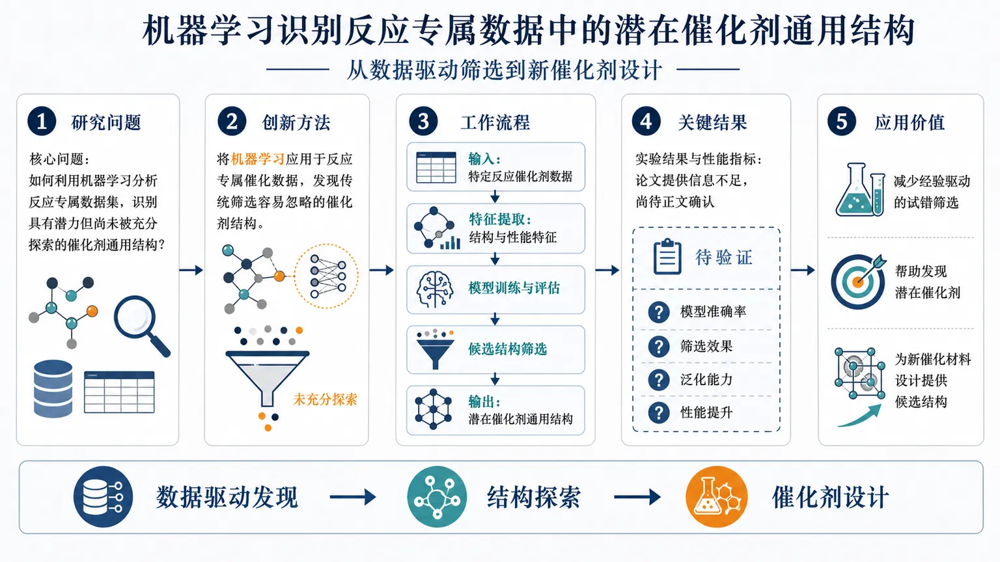
研究问题如何利用机器学习分析反应专属数据集，识别具有潜力但尚未被充分探索的催化剂通用结构？论文正文信息不足，具体研究假设与数据范围无法确定。创新方法将机器学习应用于反应专属催化数据，可能用于发现传统筛选容易忽略的催化剂结构；但摘要未提供模型、特征工程或算法细节，无法确认具体技术创新。工作流程可能流程为：收集特定反应的催化剂数据，提取结构与性能特征，训练机器学习模型，评估模型预测能力，并筛选未充分探索的候选催化剂结构。由于缺少摘要正文，实际输入、处理步骤和输出形式尚不明确。关键结果论文提供内容未包含实验结果、性能指标或对比结论，无法判断模型准确率、催化剂筛选效果、泛化能力或性能提升。应用价值若题目所示方向得到验证，该研究可帮助研究人员从反应专属数据中发现潜在催化剂，减少经验驱动的试错筛选，并为新催化材料设计提供候选结构。具体应用范围仍需论文正文确认。核心概览
所提供内容仅为期刊、卷期与发布日期，未包含论文摘要正文，无法判断其研究内容、方向或具体贡献。
方法要点
- 摘要未详述所采用的研究方法或技术。
- 仅从论文题目可知其可能涉及机器学习与反应专属数据集，但具体模型、数据处理和实验流程均无法确定。
关键结果
- 摘要未陈述任何实验结果、性能指标或结论。
- 无法据此判断催化剂筛选效果、模型准确性或泛化能力。
创新性判断
- 论文题目暗示其可能关注“未充分探索的催化剂”及其一般结构，并将机器学习用于反应特定数据集。
- 但由于未提供摘要正文，无法可靠判断其相对既有工作的具体新颖性、技术突破或适用范围；相关判断仅能作为题目层面的初步推测。
-
21
📄 摘要：提出结合高斯过程回归增强的线积分串优化和涨落前因子代理模型的机器学习框架，用于环聚合物瞬子速率计算。利用代理模型不确定性估计，瞬子路径收敛所需力评估次数基本不再随离散路径的珠子数增加；同时改进高斯过程训练效率。
📖 英文原文
arXiv:2602.16962v3 Announce Type: replace Abstract: We develop an efficient machine-learning framework for ring-polymer instanton rate calculations that combines Gaussian process regression (GPR)-enhanced line integral string optimization with scalable surrogate modeling of the fluctuation prefactor. By exploiting uncertainty estimates from the surrogate modeling, we show that the number of force evaluations required to converge an instanton path becomes effectively independent of the number of beads used to discretize the pathway. To improve the efficiency of GPR model training, we introduce a strategy combining a physics-informed kernel prior, Hessian-free hyperparameter optimization, and GPU-accelerated Blackbox Matrix-Matrix Multiplication (BBMM), reducing model-training costs by more than an order of magnitude. For rate calculations, we develop adaptive regression, selective Hessian training, and cubic-spline interpolation strategies that substantially reduce the number of explicit Hessian evaluations while maintaining accurate tunneling rates. We apply and compare both cubic spline interpolation and GPR methods to approximate the instanton rate for representative proton transfer systems such as malonaldehyde, Z-3-aminopropenal, and 7,9-dinitro-10-hydroxybenzo[h]quinoline (dinitro-HBQ). Both approaches perform well for the smaller systems, whereas the dinitro-HBQ results expose limitations of the GPR model and demonstrate the greater robustness of the cubic spline interpolation method. These developments provide a practical workflow for reducing the computational cost of instanton rate calculations in complex molecular systems.
💡 亮点：该框架把高斯过程回归用于环聚合物瞬子路径优化和涨落前因子建模，并用不确定性估计驱动力计算。最强结论是瞬子路径收敛所需力评估次数对珠子数近似不敏感，缓解了低温量子核效应离散化带来的成本增长。它与团队非绝热动力学、路径积分分子动力学、缺陷跃迁和机器学习势高度相关，可用于研究离子迁移和极化翻转中的量子核效应。
🔬 与我们研究方向的关系
📐 方法要点：方法上，摘要目前只能确认：论文题目和摘要中可确认的方法。需要回到原文核对数据来源、标签定义、模型架构、物理约束和验证集，不能把题名直接等同于可迁移算法。若要接入团队的 ML 势或 Hamiltonian 流程，应先确认它是否同时学习能量、力、应力、自旋、极化或电子结构，以及是否报告跨材料/跨温度外推。还需核对原文的训练数据规模、损失函数、边界条件和误差分解，才能判断其是否适合团队的材料模拟任务。
🔗 相关工作关联：与团队方向的可能连接在于：AI for science 与材料/物理问题的结构化分析。团队已有机器学习势、第一性原理、有效 Hamiltonian、缺陷计算、电子—声子耦合和有限温度动力学基础，但该文是否提供可复用数据或物理量仍需查证。若研究对象属于机器人、量子信息或电网等非材料场景，关联主要是物理约束学习、少样本建模或不确定性评估，而不是直接迁移材料机制。这种联系应通过同一材料体系上的独立基准和跨分布测试确认，不能仅凭方法名称或期刊来源下结论。
💡 对你方向的启示：对《用于环聚合物瞬子速率计算的机器学习框架》的启示是先做可证伪的对接：从一个已有材料体系和小规模 DFT 基准开始，明确输入、目标、基线和外推测试，再决定是否接入铁电/磁性、缺陷或载流子动力学工作。具体可先把该文的表示或损失函数在 HfO₂、二维滑移铁电、CrI₃/CrSBr、SiC/GaN 缺陷或卤化物钙钛矿上做小规模复现；若没有直接交叉，应保留为方法参考而非强行迁移。第一步可以选取团队已有的 HfO₂、二维磁体、半导体缺陷或钙钛矿数据做小样本试验，再决定是否扩大到生产级计算。
-
22
📄 摘要：用第一性原理电子结构和声子计算研究非中心对称Pnn2相Ag₂BiO₃的键歧化绝缘态，并与中心对称金属Pnna相比较。结果将名义Bi⁴⁺描述为Bi³⁺配体空穴构型，指出Bi-6s态完全占据；声子分析进一步检验Pnn2结构稳定性。
📖 英文原文
arXiv:2608.16247v1 Announce Type: new Abstract: The origin of the proposed bond disproportionated insulating state of the non-centrosymmetric (Pnn2) phase of Ag₂BiO₃ is explored using first principles electronic structure calculations. The novel insulating state is elucidated by first considering the initially proposed centosymmetric metallic (Pnna) phase of Ag₂BiO₃. Our calculations reveal that the valence skipping Bi⁴⁺ ions in this phase are better described as Bi³⁺n̆derlineL with completely filled Bi-(6s) states and a ligand hole. However, phonon calculations indicate that the metallic (Pnna) state is dynamically unstable. Structural stability is achieved through breathing distortions of the oxygen octahedra, resulting in two inequivalent Bi sites and a reduction of symmetry to the Pnn2 phase. Electronic structure calculations further reveal that the Pnn2 phase is a bond disproportionated insulator where the nominal charge state of Bi is described by : 2[Bi³⁺n̆derlineL (Bi⁴⁺)] i̊ghtarrow Bi³⁺n̆derlineL²⁻δ (Bi1⁵⁺) + Bi³⁺n̆derlineLδ (Bi2³⁺), highlighting the crucial role of ligand holes in driving the insulating state. Next we have investigated the electronic structure of Ag₂BiO₃ in the insulating (Pnn2) phase including spin-orbit coupling. Our density functional theory (DFT ) calculations complemented by bf k.p model Hamiltonian analysis reveal persistent spin-textures around the X and Y high symmetry points of the orthorhombic Brillouin zone imposed by non-symmorphic symmetry, positioning Ag₂BiO₃ as a promising candidate for spintronic applications.
💡 亮点：该文以Ag₂BiO₃为例重新解释键歧化绝缘态，将名义Bi⁴⁺刻画为Bi³⁺与配体空穴，而非简单价态分离。作者比较Pnna金属相和Pnn2非中心对称相，并结合第一性原理电子结构与声子计算分析结构稳定性。摘要没有给出自旋纹理的具体波矢、持久性判据或数值，因此其与团队铁电极化、非中心对称结构和量子功能材料的联系目前主要停留在机制启发层面。
🔬 与我们研究方向的关系
📐 方法要点：方法上，这篇工作可归入磁性机器学习势、自旋 Hamiltonian、自旋—晶格动力学和非共线磁结构。从摘要能确认的线索包括：密度泛函理论和电子结构计算, 有效哈密顿量或机器学习哈密顿量，以及磁性、自旋以及自旋—晶格耦合, 声子、有限温度和输运性质对应的结构或物理量。若迁移到团队流程，应采用“训练集同时覆盖原子位移和自旋构型，显式标注交换、各向异性、DMI 或自旋力；用自旋 MD/MC 与 DFT 自旋能差验证温度、应变和缺陷下的磁序稳定性”的分层验证，而不是只比较单点能量或单一回归误差。还需核对原文的训练数据规模、损失函数、边界条件和误差分解，才能判断其是否适合团队的材料模拟任务。
🔗 相关工作关联：它与五位研究人员已有工作的直接连接是：磁性机器学习势、自旋 Hamiltonian、自旋—晶格动力学和非共线磁结构已经出现在团队的方向画像中，可对应到CrI₃/CrSBr 等范德华磁体、反铁磁/交替磁材料、磁性氧化物。与传统只做 0 K formation energy/静态势垒的工作相比，这里更应关注磁性、自旋以及自旋—晶格耦合, 声子、有限温度和输运性质在温度、缺陷、应变或外场下的变化；摘要没有给出的模型细节不作延伸判断。这种联系应通过同一材料体系上的独立基准和跨分布测试确认，不能仅凭方法名称或期刊来源下结论。
💡 对你方向的启示：对当前研究最具体的启示不是泛泛地“使用 ML”，而是把该文的磁性机器学习势、自旋 Hamiltonian、自旋—晶格动力学和非共线磁结构嵌入现有材料模拟链：先在CrI₃/CrSBr 等范德华磁体、反铁磁/交替磁材料、磁性氧化物中选择一个已有 DFT 数据基础的体系，按“训练集同时覆盖原子位移和自旋构型，显式标注交换、各向异性、DMI 或自旋力；用自旋 MD/MC 与 DFT 自旋能差验证温度、应变和缺陷下的磁序稳定性”补充训练/验证集，再比较《Ag₂BiO₃ 中的键歧化、配体空穴与持久自旋纹理》对应模型对相稳定、极化/磁序、缺陷或动力学指标的改进。若结果只在训练分布内有效，应通过跨温度、跨应变、跨缺陷浓度和跨超胞测试检查可迁移性。第一步可以选取团队已有的 HfO₂、二维磁体、半导体缺陷或钙钛矿数据做小样本试验，再决定是否扩大到生产级计算。
-
23
📄 摘要：稀土铁石榴石，如钇铁石榴石（YIG）和铥铁石榴石（TmIG），是自旋电子和磁振子器件的基准磁性绝缘体，但在这些材料中实现可用的垂直磁各向异性通常依赖于衬底应变工程，需要仔细的晶格匹配和特定生长条件，从而限制了材料的可及性。在这里，我们确立了溅射生长的六角铁氧体钡（BaFe12O19，BaM）作为一种具有强本征垂直各向异性的磁性绝缘体替代材料，并且不需要应变工程。X 射线衍射、透射电子显微镜和拉曼光谱证实了具有原子级平滑表面的化学计量薄膜，而第一性原理计算支持其稳健的亚铁磁基态。薄膜表现出方形的面外磁滞回线，矫顽场接近 0.1 T。不同于稀土石榴石，BaM 中的垂直各向异性是其磁铅石晶体结构所固有的，并且不依赖高度有序的应变。当与 Pt 以及剥离的 BiSbTeSe2（BSTS）形成界面时，BaM 诱导出近邻诱导的异常霍尔输运，证实了有效的界面交换耦合，而 BSTS/BaM 异质结构显示出额外的霍尔贡献，暗示存在非共线界面自旋织构。这些结果将 BaM 薄膜定位为一种可扩展的磁性绝缘体平台，可用于超越石榴石化学限制的自旋电子和拓扑异质结构器件。
📖 英文原文
arXiv:2608.15331v1 Announce Type: new Abstract: Rare-earth iron garnets, such as yttrium iron garnet (YIG) and thulium iron garnet (TmIG), are the benchmark magnetic insulators for spintronic and magnonic devices, but achieving usable perpendicular magnetic anisotropy (PMA) in these materials typically relies on substrate strain- engineering, requiring careful lattice-matching and specific growth conditions that constrain ma- terial accessibility. Here we establish sputter grown barium hexaferrite (BaFe12O19, BaM) as a magnetic-insulator alternative with strong intrinsic perpendicular anisotropy, requiring no strain engineering. X-ray diffraction, transmission electron microscopy and Raman spectroscopy confirm stoichiometric films with atomically smooth surfaces, while first-principles calculations corroborate a robust ferrimagnetic ground state. The films exhibit square out-of-plane hysteresis with a coercive field of nearly 0.1 T. Unlike rare-earth garnets, the perpendicular anisotropy in BaM is intrinsic to its magnetoplumbite crystal structure, arising independent of highly ordered strain. Interfaced with Pt and with exfoliated BiSbTeSe2 (BSTS), BaM induces proximity induced anomalous Hall trans- port, confirming efficient interfacial exchange coupling, while the BSTS/BaM heterostructure shows an additional Hall contribution suggestive of non-collinear interfacial spin textures. These results position BaM thin films as a scalable magnetic-insulator platform for spintronic and topological heterostructure devices beyond the constraints of garnet chemistry.
💡 亮点：作者提出溅射生长BaFe12O19薄膜作为YIG、TmIG之外的磁性绝缘体平台，核心卖点是强本征垂直磁各向异性而非依赖衬底应变。方法重点是薄膜制备与磁性表征，摘要未给出各向异性常数、阻尼、厚度范围或自旋泵浦数据。它与团队二维范德华磁体、磁性绝缘体和自旋—晶格耦合方向存在材料与问题层面的交叉，但对计算方法的直接贡献有限。
🔬 与我们研究方向的关系
📐 方法要点：方法上，这篇工作可归入磁性机器学习势、自旋 Hamiltonian、自旋—晶格动力学和非共线磁结构。从摘要能确认的线索包括：第一性原理标注与结构优化，以及磁性、自旋以及自旋—晶格耦合, 晶体结构、功能材料和结构—性质关系对应的结构或物理量。若迁移到团队流程，应采用“训练集同时覆盖原子位移和自旋构型，显式标注交换、各向异性、DMI 或自旋力；用自旋 MD/MC 与 DFT 自旋能差验证温度、应变和缺陷下的磁序稳定性”的分层验证，而不是只比较单点能量或单一回归误差。还需核对原文的训练数据规模、损失函数、边界条件和误差分解，才能判断其是否适合团队的材料模拟任务。
🔗 相关工作关联：它与五位研究人员已有工作的直接连接是：磁性机器学习势、自旋 Hamiltonian、自旋—晶格动力学和非共线磁结构已经出现在团队的方向画像中，可对应到CrI₃/CrSBr 等范德华磁体、反铁磁/交替磁材料、磁性氧化物。与传统只做 0 K formation energy/静态势垒的工作相比，这里更应关注磁性、自旋以及自旋—晶格耦合, 晶体结构、功能材料和结构—性质关系在温度、缺陷、应变或外场下的变化；摘要没有给出的模型细节不作延伸判断。这种联系应通过同一材料体系上的独立基准和跨分布测试确认，不能仅凭方法名称或期刊来源下结论。
💡 对你方向的启示：对当前研究最具体的启示不是泛泛地“使用 ML”，而是把该文的磁性机器学习势、自旋 Hamiltonian、自旋—晶格动力学和非共线磁结构嵌入现有材料模拟链：先在CrI₃/CrSBr 等范德华磁体、反铁磁/交替磁材料、磁性氧化物中选择一个已有 DFT 数据基础的体系，按“训练集同时覆盖原子位移和自旋构型，显式标注交换、各向异性、DMI 或自旋力；用自旋 MD/MC 与 DFT 自旋能差验证温度、应变和缺陷下的磁序稳定性”补充训练/验证集，再比较《BaFe12O19薄膜：可规模化的磁性绝缘体自旋电子学平台》对应模型对相稳定、极化/磁序、缺陷或动力学指标的改进。若结果只在训练分布内有效，应通过跨温度、跨应变、跨缺陷浓度和跨超胞测试检查可迁移性。第一步可以选取团队已有的 HfO₂、二维磁体、半导体缺陷或钙钛矿数据做小样本试验，再决定是否扩大到生产级计算。
-
24
📄 摘要：一大类关联量子材料具有强 Hund 耦合。然而，冷原子量子模拟器迄今主要集中于接近 Mott 绝缘体的单轨道 Fermi-Hubbard 体系。在这里，我们表明，将排斥相互作用的费米子装载到六角晶格的 p 能带中，为研究“Hund 性”和“Mott 性”的相互作用提供了一个独特平台。我们的理论预言，尽管存在几何受挫，轨道自由度仍会产生丰富相图，其中包含相互竞争的巡游铁磁金属和自旋 1 反铁磁绝缘体，并在半填充附近出现一个由密度控制的出人意料的一级相变。铁磁性在低填充时由平带产生，并通过双交换机制持续到更强相互作用和更高填充，其中自旋通过取向一致来避免 Hund 规则能量惩罚，代价是 Dirac 费米子的动能。我们进一步认为，顺磁区域是一个关联的“Hund 金属”。因此，p 轨道费米气体为研究多轨道体系中局域自旋与巡游自旋共存时相互竞争的交换机制提供了理想的实验环境。
📖 英文原文
arXiv:2601.20639v2 Announce Type: replace Abstract: A large class of correlated quantum materials feature strong Hund's coupling. Yet cold-atom quantum simulators have so far focused primarily on single-orbital Fermi-Hubbard systems near a Mott insulator. Here we show that repulsively interacting fermions loaded into the p-bands of a hexagonal lattice offer a unique platform to study the interplay of "Hundness" and "Mottness." Our theory predicts that the orbital degrees of freedom, despite geometric frustration, produce a rich phase diagram featuring a competing itinerant ferromagnetic (FM) metal and a spin-1 antiferromagnetic (AFM) insulator, with a surprising first-order transition between them controlled by density near half-filling. Ferromagnetism emerges at low fillings from the flat band and persists to stronger interactions and higher fillings via a double-exchange mechanism, where spins align to avoid Hund-rule penalties at the expense of Dirac-fermion kinetic energy. We further argue that the paramagnetic regime is a correlated "Hund metal." p-orbital Fermi gases thus provide an ideal experimental setting to investigate competing exchange mechanisms in multi-orbital systems with coexisting localized and itinerant spins.
💡 亮点：该工作把费米原子装入六角晶格p轨道，构造研究Hund耦合与Mott物理竞争的冷原子平台，并预测轨道自由度和几何受挫共同产生复杂磁性相图。核心对象是双交换铁磁性及其与巡游磁性、轨道序的竞争。摘要没有给出相边界、相互作用强度或具体求解算法，因此不能把其定量结论外推到真实氧化物或范德华磁体。
🔬 与我们研究方向的关系
📐 方法要点：方法上，这篇工作可归入热力学知情 ML、机器学习势、自由能采样、CALPHAD/团簇展开。从摘要能确认的线索包括：论文题目和摘要中可确认的方法，以及铁电/多铁、极化翻转和电场驱动过程, 磁性、自旋以及自旋—晶格耦合对应的结构或物理量。若迁移到团队流程，应采用“在 DFT 能量/力/应力之外加入跨温度构型、相对自由能、熵或热膨胀信息；用主动学习补采相变、畴壁和相竞争区域，再用热力学积分、MC 或有限温度 MD 验证”的分层验证，而不是只比较单点能量或单一回归误差。还需核对原文的训练数据规模、损失函数、边界条件和误差分解，才能判断其是否适合团队的材料模拟任务。
🔗 相关工作关联：它与五位研究人员已有工作的直接连接是：热力学知情 ML、机器学习势、自由能采样、CALPHAD/团簇展开已经出现在团队的方向画像中，可对应到HfO₂ 基铁电、二维滑移铁电、钙钛矿和磁性氧化物。与传统只做 0 K formation energy/静态势垒的工作相比，这里更应关注铁电/多铁、极化翻转和电场驱动过程, 磁性、自旋以及自旋—晶格耦合, 晶体结构、功能材料和结构—性质关系在温度、缺陷、应变或外场下的变化；摘要没有给出的模型细节不作延伸判断。这种联系应通过同一材料体系上的独立基准和跨分布测试确认，不能仅凭方法名称或期刊来源下结论。
💡 对你方向的启示：对当前研究最具体的启示不是泛泛地“使用 ML”，而是把该文的热力学知情 ML、机器学习势、自由能采样、CALPHAD/团簇展开嵌入现有材料模拟链：先在HfO₂ 基铁电、二维滑移铁电、钙钛矿和磁性氧化物中选择一个已有 DFT 数据基础的体系，按“在 DFT 能量/力/应力之外加入跨温度构型、相对自由能、熵或热膨胀信息；用主动学习补采相变、畴壁和相竞争区域，再用热力学积分、MC 或有限温度 MD 验证”补充训练/验证集，再比较《p轨道六角晶格费米原子的双交换铁磁性》对应模型对相稳定、极化/磁序、缺陷或动力学指标的改进。若结果只在训练分布内有效，应通过跨温度、跨应变、跨缺陷浓度和跨超胞测试检查可迁移性。第一步可以选取团队已有的 HfO₂、二维磁体、半导体缺陷或钙钛矿数据做小样本试验，再决定是否扩大到生产级计算。
-
25
📄 摘要：提出在氧化物超晶格中结合对称性破缺、静电掺杂和量子限域，实现交替磁性与金属性共存。第一性原理计算显示，块体SrCrO3因相邻层补偿不表现交替磁性，而界面和限域可改变层间补偿及电子结构，为设计金属交替磁体提供路径。
📖 英文原文
arXiv:2608.15765v1 Announce Type: new Abstract: The discovery of altermagnetism has initiated intensive research and opened new avenues for spin- tronic and transport applications. While current efforts are mostly focused on bulk materials which are typically insulating, here we propose design strategies to achieve a combination of altermag- netism and metallicity in oxide superlattices by exploiting symmetry breaking, electrostatic doping and confinement. While bulk SrCrO3 does not exhibit altermagnetism due to compensating effects between adjacent layers our density functional theory calculations with a Hubbard U parameter re- veal, that a single SrCrO3 layer confined in a (SrCrO3)1/(SrTiO3)1(001) superlattice (SL) exhibits a sizable non-relativistic spin splitting (NRSS) up to 350 meV with bulk d-wave nature due to the coexistence of orbital ordering and octahedral rotations (OORs). Since this system is insulating, we extend to SrCrO3/LaCrO3(001) SLs. In the (SrCrO3)4/(LaCrO3)4(001) SL the combination of a polar discontinuity at the interface and stronger OORs promotes metallic d-wave altermagnetism. The NRSS of up to 120 meV is contributed by the interfacial Cr d bands at the Fermi level with indications for a spin-selective Fermi surface nesting. These findings establish oxide superlattices as a promising platform to realize and explore altermagnetism for quantum transport and spintronic functionalities
💡 亮点：作者针对块体SrCrO3中相邻层补偿导致的交替磁性缺失，提出用氧化物超晶格界面、静电掺杂和量子限域打破补偿并保持金属性。核心工具是第一性原理超晶格电子结构计算与对称性设计。摘要没有给出具体层数、载流子浓度、自旋分裂或稳定性数值，但问题设置与团队的交替磁性、界面效应、量子限域和高通量材料设计高度吻合。
🔬 与我们研究方向的关系
📐 方法要点：方法上，这篇工作可归入磁性机器学习势、自旋 Hamiltonian、自旋—晶格动力学和非共线磁结构。从摘要能确认的线索包括：密度泛函理论和电子结构计算，以及磁性、自旋以及自旋—晶格耦合, 缺陷、畴壁、成核和开关动力学对应的结构或物理量。若迁移到团队流程，应采用“训练集同时覆盖原子位移和自旋构型，显式标注交换、各向异性、DMI 或自旋力；用自旋 MD/MC 与 DFT 自旋能差验证温度、应变和缺陷下的磁序稳定性”的分层验证，而不是只比较单点能量或单一回归误差。还需核对原文的训练数据规模、损失函数、边界条件和误差分解，才能判断其是否适合团队的材料模拟任务。
🔗 相关工作关联：它与五位研究人员已有工作的直接连接是：磁性机器学习势、自旋 Hamiltonian、自旋—晶格动力学和非共线磁结构已经出现在团队的方向画像中，可对应到CrI₃/CrSBr 等范德华磁体、反铁磁/交替磁材料、磁性氧化物。与传统只做 0 K formation energy/静态势垒的工作相比，这里更应关注磁性、自旋以及自旋—晶格耦合, 缺陷、畴壁、成核和开关动力学, 声子、有限温度和输运性质在温度、缺陷、应变或外场下的变化；摘要没有给出的模型细节不作延伸判断。这种联系应通过同一材料体系上的独立基准和跨分布测试确认，不能仅凭方法名称或期刊来源下结论。
💡 对你方向的启示：对当前研究最具体的启示不是泛泛地“使用 ML”，而是把该文的磁性机器学习势、自旋 Hamiltonian、自旋—晶格动力学和非共线磁结构嵌入现有材料模拟链：先在CrI₃/CrSBr 等范德华磁体、反铁磁/交替磁材料、磁性氧化物中选择一个已有 DFT 数据基础的体系，按“训练集同时覆盖原子位移和自旋构型，显式标注交换、各向异性、DMI 或自旋力；用自旋 MD/MC 与 DFT 自旋能差验证温度、应变和缺陷下的磁序稳定性”补充训练/验证集，再比较《利用界面效应与量子限域设计氧化物超晶格交替磁性》对应模型对相稳定、极化/磁序、缺陷或动力学指标的改进。若结果只在训练分布内有效，应通过跨温度、跨应变、跨缺陷浓度和跨超胞测试检查可迁移性。第一步可以选取团队已有的 HfO₂、二维磁体、半导体缺陷或钙钛矿数据做小样本试验，再决定是否扩大到生产级计算。
-
26
📄 摘要：理论研究手性阻尼对反铁磁电流驱动畴壁的影响。子晶格间不对称手性阻尼产生畴壁质量张量的非对角分量，耦合平移与旋转模；栅压通过Rashba自旋—轨道相互作用调制阻尼后，对称和不对称分量分别驱动速度与倾角振荡，并由微扰分析得到振幅表达式。
📖 英文原文
arXiv:2608.16057v1 Announce Type: new Abstract: We investigate the impact of chiral damping (CD) on current-driven domain-wall (DW) dynamics in antiferromagnets (AFMs). Asymmetric CD between sublattices generates off-diagonal components in the DW mass tensor, thereby coupling translational and rotational modes. When CD is modulated by an ac gate voltage via the Rashba spin-orbit interaction (RSOI), symmetric and asymmetric contributions induce oscillations in the DW velocity and tilt angle, respectively. A perturbative analysis yields explicit expressions for the oscillation amplitudes, in quantitative agreement with numerical simulations. Remarkably, even in the absence of Dzyaloshinskii-Moriya interaction (DMI), asymmetric CD enables chirality switching between Néel- and Bloch-type DWs. Finally, by exploiting the relativistic Lorentz contraction of the DW width at high driving currents, we propose an experimentally viable protocol to qualitatively and quantitatively extract the CD contribution. These results establish clear experimental signatures of CD in antiferromagnetic DW dynamics and demonstrate its potential as a control parameter for magnetic textures.
💡 亮点：工作把反铁磁畴壁的平移和旋转耦合归因于子晶格不对称手性阻尼导致的非对角质量张量。作者在Rashba自旋—轨道相互作用调制的交流栅压下，区分速度振荡与倾角振荡，并给出微扰解析表达式。摘要未提供材料、频率、阻尼系数或振幅数值，但其动力学建模直接对应团队的反铁磁、自旋轨道效应、畴壁和自旋动力学方向。
🔬 与我们研究方向的关系
📐 方法要点：方法上，这篇工作可归入HfO₂ 铁电、二维滑移铁电、极化翻转、畴壁和疲劳/缺陷问题。从摘要能确认的线索包括：论文题目和摘要中可确认的方法，以及铁电/多铁、极化翻转和电场驱动过程, 磁性、自旋以及自旋—晶格耦合对应的结构或物理量。若迁移到团队流程，应采用“把电场、极化、应变、氧空位和局域结构序参一起纳入轨迹数据；比较均匀翻转、局域成核和畴壁传播，并用 DFT/有效 Hamiltonian 对关键路径复核”的分层验证，而不是只比较单点能量或单一回归误差。还需核对原文的训练数据规模、损失函数、边界条件和误差分解，才能判断其是否适合团队的材料模拟任务。
🔗 相关工作关联：它与五位研究人员已有工作的直接连接是：HfO₂ 铁电、二维滑移铁电、极化翻转、畴壁和疲劳/缺陷问题已经出现在团队的方向画像中，可对应到HfO₂、Hf₀.₅Zr₀.₅O₂、二维范德华铁电、钙钛矿氧化物。与传统只做 0 K formation energy/静态势垒的工作相比，这里更应关注铁电/多铁、极化翻转和电场驱动过程, 磁性、自旋以及自旋—晶格耦合, 缺陷、畴壁、成核和开关动力学在温度、缺陷、应变或外场下的变化；摘要没有给出的模型细节不作延伸判断。这种联系应通过同一材料体系上的独立基准和跨分布测试确认，不能仅凭方法名称或期刊来源下结论。
💡 对你方向的启示：对当前研究最具体的启示不是泛泛地“使用 ML”，而是把该文的HfO₂ 铁电、二维滑移铁电、极化翻转、畴壁和疲劳/缺陷问题嵌入现有材料模拟链：先在HfO₂、Hf₀.₅Zr₀.₅O₂、二维范德华铁电、钙钛矿氧化物中选择一个已有 DFT 数据基础的体系，按“把电场、极化、应变、氧空位和局域结构序参一起纳入轨迹数据；比较均匀翻转、局域成核和畴壁传播，并用 DFT/有效 Hamiltonian 对关键路径复核”补充训练/验证集，再比较《手性阻尼诱导的反铁磁畴壁手性切换与调控》对应模型对相稳定、极化/磁序、缺陷或动力学指标的改进。若结果只在训练分布内有效，应通过跨温度、跨应变、跨缺陷浓度和跨超胞测试检查可迁移性。第一步可以选取团队已有的 HfO₂、二维磁体、半导体缺陷或钙钛矿数据做小样本试验，再决定是否扩大到生产级计算。
-
27
📄 摘要：针对堆叠双层材料，提出显式区分层内强成键与层间弱范德华相互作用的图学习框架，以减少依赖昂贵DFT结构优化的性质预测成本。模型面向堆垛依赖性质和结构生成，摘要未给出具体材料、网络规模、数据集或误差数值。
📖 英文原文
arXiv:2608.14640v1 Announce Type: cross Abstract: Stacked bilayer materials exhibit rich stacking-dependent properties driven by the interplay between strong intra-layer bonding and weak inter-layer van der Waals interactions. The computational discovery of such materials is challenging because accurate structure generation typically relies on expensive DFT-based optimization, while existing machine-learning models often fail to explicitly distinguish different interaction types during property prediction. To address these challenges, we propose a machine-learning framework for efficient construction and property prediction of stacked bilayer materials. The framework employs a MatterSim-D3-based structural optimization workflow to generate DFT-quality bilayer structures from monolayer building blocks and stacking configurations at substantially reduced computational cost. For property prediction, we introduce BDIP-Net (Bilayer Dual-Interaction Potential Network), a graph neural network that explicitly models intra-layer and inter-layer interactions through interaction-specific potential representations and adaptive message fusion. We evaluate the proposed framework on BiDB, HetDB, and SAMBA, encompassing homobilayers, heterobilayers, and twisted bilayer systems. Results show that the MatterSim-D3-based workflow closely reproduces DFT-PBE-D3 optimized structures, while BDIP-Net consistently outperforms existing graph neural network and potential-based approaches for bilayer property prediction.
💡 亮点：BDIP-Net把双层材料中的层内化学键和层间范德华作用拆成两类交互，针对堆垛依赖性质预测设计双相互作用图网络。其价值在于让模型结构对应材料相互作用层级，并减少每个候选堆垛都进行DFT优化的需求。摘要没有报告具体误差、速度、堆垛数量或泛化测试，因此无法判断对滑移铁电、二维磁性和界面电荷转移的定量能力。
🔬 与我们研究方向的关系
📐 方法要点：方法上，摘要目前只能确认：图神经网络结构—性质建模。需要回到原文核对数据来源、标签定义、模型架构、物理约束和验证集，不能把题名直接等同于可迁移算法。若要接入团队的 ML 势或 Hamiltonian 流程，应先确认它是否同时学习能量、力、应力、自旋、极化或电子结构，以及是否报告跨材料/跨温度外推。还需核对原文的训练数据规模、损失函数、边界条件和误差分解，才能判断其是否适合团队的材料模拟任务。
🔗 相关工作关联：与团队方向的可能连接在于：晶体结构、功能材料和结构—性质关系。团队已有机器学习势、第一性原理、有效 Hamiltonian、缺陷计算、电子—声子耦合和有限温度动力学基础，但该文是否提供可复用数据或物理量仍需查证。若研究对象属于机器人、量子信息或电网等非材料场景，关联主要是物理约束学习、少样本建模或不确定性评估，而不是直接迁移材料机制。这种联系应通过同一材料体系上的独立基准和跨分布测试确认，不能仅凭方法名称或期刊来源下结论。
💡 对你方向的启示：对《BDIP-Net：双层材料性质预测的双相互作用图学习》的启示是先做可证伪的对接：从一个已有材料体系和小规模 DFT 基准开始，明确输入、目标、基线和外推测试，再决定是否接入铁电/磁性、缺陷或载流子动力学工作。具体可先把该文的表示或损失函数在 HfO₂、二维滑移铁电、CrI₃/CrSBr、SiC/GaN 缺陷或卤化物钙钛矿上做小规模复现；若没有直接交叉，应保留为方法参考而非强行迁移。第一步可以选取团队已有的 HfO₂、二维磁体、半导体缺陷或钙钛矿数据做小样本试验，再决定是否扩大到生产级计算。
-
28
📄 摘要：参数化偏微分方程（PDE）族的物理信息机器学习能够在变化的物理条件下实现快速预测，然而由此得到的任务表示通常嵌入在难以进行物理解释的神经网络潜在特征中。这提出了一个问题：参数化神经 PDE 求解器是否能够明确展示物理任务参数如何重组底层解表示。为弥补这一空白，我们引入 Meta-Sparse、Physics-based and partially Interpretable Neural Network（Meta-SPINN），它将任务参数映射到一个浅层 RBF 模型，该模型具有可检查的系数、中心、尺度和方向参数。我们表明，在椭圆型、输运、对流-扩散、变系数和非线性 PDE 族中，学习到的基函数会适应并围绕主导的物理解结构进行组织，包括局域强迫响应、沿特征线对齐的输运轨迹、由扩散展宽的时空通道以及黏性激波前沿。Meta-SPINN 既可作为未见任务的直接预测器，也可作为后续单实例残差引导细化的任务感知初始化器，从而提供可复用的预测，并以可解释的可视化方式展示解几何如何在参数族中变化。
📖 英文原文
Physics-informed machine learning of parametric partial differential equation (PDE) families enables rapid prediction across varying physical conditions, yet the resulting task representations are commonly embedded in latent neural features that are difficult to interpret physically. This raises the question of whether a parametric neural PDE solver can make explicit how physical task parameters reorganize the underlying solution representation. To address this gap, we introduce Meta-Sparse, Physics-based, and partially Interpretable Neural Network (SPINN), which maps task parameters to a shallow RBF model with inspectable coefficients, centers, scales, and directional parameters. We show that, across elliptic, transport, advection–diffusion, variable-coefficient, and nonlinear PDE families, the learned bases adapt to and organize around the dominant physical solution structures, including localized forcing responses, characteristic-aligned transport trajectories, diffusion-broadened space–time corridors, and viscous shock fronts. Meta-SPINN works both as a direct predictor for unseen tasks and as a task-aware initializer for subsequent single-instance residual-guided refinement, providing reusable predictions together with an interpretable visualization of how solution geometry changes across a parameter family.
💡 亮点：Meta-SPINN的核心创新是让任务参数直接重组神经偏微分方程求解器的显式基表示，而不是仅隐藏在不可解释的潜变量中。模型采用元学习、稀疏基和物理驱动约束，面向参数化方程族的快速预测。给定摘要没有误差、加速比、参数维度或训练样本数，无法判断其对材料偏微分方程或多尺度模拟的实际收益。它与团队的AI材料模拟只有方法论层面的交叉。
🔬 与我们研究方向的关系
📐 方法要点：方法上，这篇工作可归入磁性机器学习势、自旋 Hamiltonian、自旋—晶格动力学和非共线磁结构。从摘要能确认的线索包括：论文题目和摘要中可确认的方法，以及磁性、自旋以及自旋—晶格耦合, 声子、有限温度和输运性质对应的结构或物理量。若迁移到团队流程，应采用“训练集同时覆盖原子位移和自旋构型，显式标注交换、各向异性、DMI 或自旋力；用自旋 MD/MC 与 DFT 自旋能差验证温度、应变和缺陷下的磁序稳定性”的分层验证，而不是只比较单点能量或单一回归误差。还需核对原文的训练数据规模、损失函数、边界条件和误差分解，才能判断其是否适合团队的材料模拟任务。
🔗 相关工作关联：它与五位研究人员已有工作的直接连接是：磁性机器学习势、自旋 Hamiltonian、自旋—晶格动力学和非共线磁结构已经出现在团队的方向画像中，可对应到CrI₃/CrSBr 等范德华磁体、反铁磁/交替磁材料、磁性氧化物。与传统只做 0 K formation energy/静态势垒的工作相比，这里更应关注磁性、自旋以及自旋—晶格耦合, 声子、有限温度和输运性质在温度、缺陷、应变或外场下的变化；摘要没有给出的模型细节不作延伸判断。这种联系应通过同一材料体系上的独立基准和跨分布测试确认，不能仅凭方法名称或期刊来源下结论。
💡 对你方向的启示：对当前研究最具体的启示不是泛泛地“使用 ML”，而是把该文的磁性机器学习势、自旋 Hamiltonian、自旋—晶格动力学和非共线磁结构嵌入现有材料模拟链：先在CrI₃/CrSBr 等范德华磁体、反铁磁/交替磁材料、磁性氧化物中选择一个已有 DFT 数据基础的体系，按“训练集同时覆盖原子位移和自旋构型，显式标注交换、各向异性、DMI 或自旋力；用自旋 MD/MC 与 DFT 自旋能差验证温度、应变和缺陷下的磁序稳定性”补充训练/验证集，再比较《Meta-SPINN：参数化偏微分方程的元学习基适应》对应模型对相稳定、极化/磁序、缺陷或动力学指标的改进。若结果只在训练分布内有效，应通过跨温度、跨应变、跨缺陷浓度和跨超胞测试检查可迁移性。第一步可以选取团队已有的 HfO₂、二维磁体、半导体缺陷或钙钛矿数据做小样本试验，再决定是否扩大到生产级计算。
-
29
📄 摘要：针对微观结构与宏观构件之间的尺度差异，提出神经嵌入图模型实现复杂复合材料的自洽分层上尺度。方法试图绕开渐近均匀化的严格数学条件和子模型耦合的复杂接口，摘要未给出材料体系、网络结构、训练数据或误差。
📖 英文原文
arXiv:2608.15570v1 Announce Type: new Abstract: A persistent challenge in computational physical modeling is the substantial disparity between the characteristic length scales of microstructures and macroscopic structural components. Multiscale modeling has been widely adopted to bridge this gap by coupling methodologies tailored to different scales. However, conventional approaches, such as asymptotic homogenization (bottom-up) and submodeling (top-down), often entail rigorous mathematical prerequisites or intricate interfacing procedures. To address these limitations, we introduce a fully scalable neural-embedded graphical model (NEGM) that provides a unified framework for the progressive upscaling of highly heterogeneous composite materials. Specifically, NEGM encodes all microstructure- and material-related complexities into constituent neural network blocks, which are then organized into a hypergraph to simulate progressively larger domains. Extensive numerical benchmarks demonstrate that NEGM reliably predicts the physical responses of 2D and 3D composites exhibiting strong material nonlinearity, arbitrary boundary conditions, and irregular geometries. Crucially, because NEGM relies solely on neural network training and inference, it offers a scale-invariant formulation. This enables iterative application of NEGM to upscale from the microscale to arbitrarily large scales, circumventing the need for complex interfacing protocols between disparate modeling frameworks. We validate this progressive upscaling strategy on a large mosaic composite domain, showing that the accumulated error can be effectively contained provided the constituent blocks achieve sufficiently high prediction accuracy. Our findings suggest that artificial neural networks not only enhance the efficiency of direct single-scale simulations, as previously demonstrated, but also provide a clean and elegant pathway toward streamlined multiscale modeling.
💡 亮点：该文提出神经嵌入图模型，将复杂复合材料的微观结构信息分层传递到宏观响应，目标是实现自洽上尺度。创新点在于把多尺度耦合接口纳入学习模型，而不是单独依赖渐近均匀化或自顶向下子建模。摘要没有说明图节点含义、守恒约束、材料本构、尺度层数和定量精度，与团队研究仅有多尺度计算和机器学习代理模型的泛方法交叉。
🔬 与我们研究方向的关系
📐 方法要点：方法上，这篇工作可归入机器学习 Hamiltonian、带电缺陷形成能、缺陷扩散和非辐射复合。从摘要能确认的线索包括：论文题目和摘要中可确认的方法，以及缺陷、畴壁、成核和开关动力学, 晶体结构、功能材料和结构—性质关系对应的结构或物理量。若迁移到团队流程，应采用“把电荷态、有限尺寸修正、局域配位和缺陷迁移路径纳入标注；用小超胞 DFT+U/GW 或缺陷形成能基准校准，再扩展到大超胞和有限温度扩散”的分层验证，而不是只比较单点能量或单一回归误差。还需核对原文的训练数据规模、损失函数、边界条件和误差分解，才能判断其是否适合团队的材料模拟任务。
🔗 相关工作关联：它与五位研究人员已有工作的直接连接是：机器学习 Hamiltonian、带电缺陷形成能、缺陷扩散和非辐射复合已经出现在团队的方向画像中，可对应到SiO₂、SiC、GaN、卤化物钙钛矿、HfO₂ 氧空位和二维半导体。与传统只做 0 K formation energy/静态势垒的工作相比，这里更应关注缺陷、畴壁、成核和开关动力学, 晶体结构、功能材料和结构—性质关系在温度、缺陷、应变或外场下的变化；摘要没有给出的模型细节不作延伸判断。这种联系应通过同一材料体系上的独立基准和跨分布测试确认，不能仅凭方法名称或期刊来源下结论。
💡 对你方向的启示：对当前研究最具体的启示不是泛泛地“使用 ML”，而是把该文的机器学习 Hamiltonian、带电缺陷形成能、缺陷扩散和非辐射复合嵌入现有材料模拟链：先在SiO₂、SiC、GaN、卤化物钙钛矿、HfO₂ 氧空位和二维半导体中选择一个已有 DFT 数据基础的体系，按“把电荷态、有限尺寸修正、局域配位和缺陷迁移路径纳入标注；用小超胞 DFT+U/GW 或缺陷形成能基准校准，再扩展到大超胞和有限温度扩散”补充训练/验证集，再比较《复杂复合材料自洽分层均匀化的神经嵌入图模型》对应模型对相稳定、极化/磁序、缺陷或动力学指标的改进。若结果只在训练分布内有效，应通过跨温度、跨应变、跨缺陷浓度和跨超胞测试检查可迁移性。第一步可以选取团队已有的 HfO₂、二维磁体、半导体缺陷或钙钛矿数据做小样本试验，再决定是否扩大到生产级计算。
-
30
📄 摘要：提出p自旋玻璃网络，试图降低序列模型对大内存和大批次随机优化的依赖。摘要宣称原生三值量化可将内部参数压缩8倍，精确隐式梯度使激活内存复杂度受限于O(B·T·D)，并面向单批次持续学习；未给出材料任务。
📖 英文原文
arXiv:2608.14774v1 Announce Type: new Abstract: Modern sequence models heavily rely on massive memory footprints and large-batch stochastic optimization, barriers that restrict sample efficiency and continual learning. We introduce the p-Spin Glass Network, a novel architecture that overcomes these limitations, structurally manages optimization variance and yields four noticeable capabilities: 1. It enforces memory efficiency: native ternary quantization compresses internal parameters by 8×, while exact implicit gradients strictly bound activation memory to O(B ḑot T ḑot D). 2. it demonstrates sample efficiency, matching the asymptotic performance of a Transformer baseline while utilizing 8× fewer training sequences. 3. Method enables single-batch stability and smooth, monotonic convergence at a stochastic micro-batch size of 1. 4. Finally, this stability proves modality-agnostic, maintaining robust temporal credit assignment across both discrete subword and long horizon uncompressed raw byte streams. Ultimately, this work removes large batch requirement for stable deep learning, establishing a foundation for continuous learning and edge AI.
💡 亮点：p自旋玻璃网络以三值参数量化和隐式梯度为核心，面向低内存、单批次和持续学习场景。摘要给出的最强定量信息是内部参数压缩8倍，激活内存复杂度为O(B·T·D)。模型没有被用于材料、方程或物理场预测，因而对团队的直接价值仅在于研究如何降低图网络或哈密顿量模型的训练与部署内存，不能推断其物理泛化能力。
🔬 与我们研究方向的关系
📐 方法要点：方法上，这篇工作可归入磁性机器学习势、自旋 Hamiltonian、自旋—晶格动力学和非共线磁结构。从摘要能确认的线索包括：论文题目和摘要中可确认的方法，以及磁性、自旋以及自旋—晶格耦合对应的结构或物理量。若迁移到团队流程，应采用“训练集同时覆盖原子位移和自旋构型，显式标注交换、各向异性、DMI 或自旋力；用自旋 MD/MC 与 DFT 自旋能差验证温度、应变和缺陷下的磁序稳定性”的分层验证，而不是只比较单点能量或单一回归误差。还需核对原文的训练数据规模、损失函数、边界条件和误差分解，才能判断其是否适合团队的材料模拟任务。
🔗 相关工作关联：它与五位研究人员已有工作的直接连接是：磁性机器学习势、自旋 Hamiltonian、自旋—晶格动力学和非共线磁结构已经出现在团队的方向画像中，可对应到CrI₃/CrSBr 等范德华磁体、反铁磁/交替磁材料、磁性氧化物。与传统只做 0 K formation energy/静态势垒的工作相比，这里更应关注磁性、自旋以及自旋—晶格耦合在温度、缺陷、应变或外场下的变化；摘要没有给出的模型细节不作延伸判断。这种联系应通过同一材料体系上的独立基准和跨分布测试确认，不能仅凭方法名称或期刊来源下结论。
💡 对你方向的启示：对当前研究最具体的启示不是泛泛地“使用 ML”，而是把该文的磁性机器学习势、自旋 Hamiltonian、自旋—晶格动力学和非共线磁结构嵌入现有材料模拟链：先在CrI₃/CrSBr 等范德华磁体、反铁磁/交替磁材料、磁性氧化物中选择一个已有 DFT 数据基础的体系，按“训练集同时覆盖原子位移和自旋构型，显式标注交换、各向异性、DMI 或自旋力；用自旋 MD/MC 与 DFT 自旋能差验证温度、应变和缺陷下的磁序稳定性”补充训练/验证集，再比较《p自旋玻璃网络：高效单批次持续学习》对应模型对相稳定、极化/磁序、缺陷或动力学指标的改进。若结果只在训练分布内有效，应通过跨温度、跨应变、跨缺陷浓度和跨超胞测试检查可迁移性。第一步可以选取团队已有的 HfO₂、二维磁体、半导体缺陷或钙钛矿数据做小样本试验，再决定是否扩大到生产级计算。
-
31
📄 摘要：面向高能物理探测器电磁簇射模拟，提出跨几何迁移学习方法，使生成式量热器模拟模型能够适配不同探测器几何。模型采用点云表示，目标是在改变设计或更换探测器时减少数据和重新训练需求。该主题不属于凝聚态材料模拟。
📖 英文原文
arXiv:2512.00187v2 Announce Type: replace Abstract: Accurate particle shower simulation remains a critical computational bottleneck for high-energy physics. Traditional Monte Carlo methods, such as Geant4, are computationally prohibitive, while existing machine learning surrogates are tied to specific detector geometries and require complete retraining for each design change or alternative detector. We present a transfer learning methodology for generative calorimeter simulation models that enables adaptation across diverse geometries with high data efficiency. Using point cloud representations and pre-training on the International Large Detector, our approach handles new configurations without re-voxelizing showers for each geometry. On the CaloChallenge dataset, transfer learning with only 100 target-domain samples achieves a 51% improvement on the geometric mean of Wasserstein distance over training from scratch. Parameter-efficient fine-tuning with bias-only adaptation achieves competitive performance while updating only 17% of model parameters. Our analysis provides insight into adaptation mechanisms for particle shower development, establishing a baseline for future progress of point cloud approaches in calorimeter simulation.
💡 亮点：工作解决生成式电磁簇射模型被单一探测器几何束缚的问题，使用点云表示和迁移学习适配多种几何。核心定量结论是跨几何适应具有较高数据效率，但给定摘要没有具体样本减少比例、物理分布误差或模型架构细节。它与团队的材料AI只有代理模型迁移和几何泛化的抽象方法联系，对电子结构、缺陷或输运没有直接贡献。
🔬 与我们研究方向的关系
📐 方法要点：方法上，这篇工作可归入磁性机器学习势、自旋 Hamiltonian、自旋—晶格动力学和非共线磁结构。从摘要能确认的线索包括：蒙特卡洛统计采样，以及磁性、自旋以及自旋—晶格耦合对应的结构或物理量。若迁移到团队流程，应采用“训练集同时覆盖原子位移和自旋构型，显式标注交换、各向异性、DMI 或自旋力；用自旋 MD/MC 与 DFT 自旋能差验证温度、应变和缺陷下的磁序稳定性”的分层验证，而不是只比较单点能量或单一回归误差。还需核对原文的训练数据规模、损失函数、边界条件和误差分解，才能判断其是否适合团队的材料模拟任务。
🔗 相关工作关联：它与五位研究人员已有工作的直接连接是：磁性机器学习势、自旋 Hamiltonian、自旋—晶格动力学和非共线磁结构已经出现在团队的方向画像中，可对应到CrI₃/CrSBr 等范德华磁体、反铁磁/交替磁材料、磁性氧化物。与传统只做 0 K formation energy/静态势垒的工作相比，这里更应关注磁性、自旋以及自旋—晶格耦合在温度、缺陷、应变或外场下的变化；摘要没有给出的模型细节不作延伸判断。这种联系应通过同一材料体系上的独立基准和跨分布测试确认，不能仅凭方法名称或期刊来源下结论。
💡 对你方向的启示：对当前研究最具体的启示不是泛泛地“使用 ML”，而是把该文的磁性机器学习势、自旋 Hamiltonian、自旋—晶格动力学和非共线磁结构嵌入现有材料模拟链：先在CrI₃/CrSBr 等范德华磁体、反铁磁/交替磁材料、磁性氧化物中选择一个已有 DFT 数据基础的体系，按“训练集同时覆盖原子位移和自旋构型，显式标注交换、各向异性、DMI 或自旋力；用自旋 MD/MC 与 DFT 自旋能差验证温度、应变和缺陷下的磁序稳定性”补充训练/验证集，再比较《电磁簇射快速模拟中的跨几何迁移学习》对应模型对相稳定、极化/磁序、缺陷或动力学指标的改进。若结果只在训练分布内有效，应通过跨温度、跨应变、跨缺陷浓度和跨超胞测试检查可迁移性。第一步可以选取团队已有的 HfO₂、二维磁体、半导体缺陷或钙钛矿数据做小样本试验，再决定是否扩大到生产级计算。
-
32
📄 摘要：自 Stankowski 等人关于 YBa₂Cu₃O₇₋ₓ 的开创性实验以来，磁调制微波吸收（MMMA）已成为检测非均匀陶瓷化合物中超导转变的重要技术。低于 T_c 后微波吸收的上升伴随着若干低场异常，这些异常通常被归因于显示约瑟夫森效应的超导晶粒之间的弱连接，或归因于 Abrikosov-Josephson 涡旋的动力学。在本文中，我们简要回顾了若干用于解释高温超导体 MMMA 谱的理论模型，重点关注具有随机参数的三维约瑟夫森结阵列，其中包括每个结的电阻率、电容和电感，并展示实验中观察到的特征吸收异常。文中还讨论了这些结果对近期研究的约瑟夫森结量子比特中微波吸收的意义。
📖 英文原文
arXiv:2608.15441v1 Announce Type: new Abstract: Since the seminal experiment by Stankowski et al. [Phys. Rev. B 36, 7126 (1987)] on YBa₂Cu₃O₇₋ₓ, Magnetically-Modulated Microwave Absorption (MMMA) has become an important technique for detecting the superconducting transition in inhomogeneous ceramic compounds. The rise of microwave absorption below T_c is accompanied by several low-field anomalies, usually attributed to the weak links between superconducting grains showing the Josephson effect, or to the dynamics of Abrikosov-Josephson vortices. In this article, we briefly review selected theoretical models rationalizing MMMA spectra for high-temperature superconductors, focusing on the 3-dimensional array of Josephson junctions with random parameters including the resistivity, capacity and inductance of each junction, showing characteristic absorption anomalies observed in the experiment. The implications for recently studied microwave absorption in Josephson junction qubits are also discussed.
💡 亮点：文章以约瑟夫森网络解释非均匀YBa₂Cu₃O₇₋ₓ陶瓷的磁场调制微波吸收，聚焦颗粒间弱连接和Abrikosov—约瑟夫森涡旋。它的性质是理论综述而非新的第一性原理或机器学习模型，摘要没有给出新的拟合参数、吸收峰数值或临界温度数据。与团队的超导、电子—声子耦合和量子功能材料方向存在主题交叉，但与当前缺陷和AI模拟主线的直接联系较弱。
🔬 与我们研究方向的关系
📐 方法要点：方法上，这篇工作可归入磁性机器学习势、自旋 Hamiltonian、自旋—晶格动力学和非共线磁结构。从摘要能确认的线索包括：论文题目和摘要中可确认的方法，以及磁性、自旋以及自旋—晶格耦合对应的结构或物理量。若迁移到团队流程，应采用“训练集同时覆盖原子位移和自旋构型，显式标注交换、各向异性、DMI 或自旋力；用自旋 MD/MC 与 DFT 自旋能差验证温度、应变和缺陷下的磁序稳定性”的分层验证，而不是只比较单点能量或单一回归误差。还需核对原文的训练数据规模、损失函数、边界条件和误差分解，才能判断其是否适合团队的材料模拟任务。
🔗 相关工作关联：它与五位研究人员已有工作的直接连接是：磁性机器学习势、自旋 Hamiltonian、自旋—晶格动力学和非共线磁结构已经出现在团队的方向画像中，可对应到CrI₃/CrSBr 等范德华磁体、反铁磁/交替磁材料、磁性氧化物。与传统只做 0 K formation energy/静态势垒的工作相比，这里更应关注磁性、自旋以及自旋—晶格耦合在温度、缺陷、应变或外场下的变化；摘要没有给出的模型细节不作延伸判断。这种联系应通过同一材料体系上的独立基准和跨分布测试确认，不能仅凭方法名称或期刊来源下结论。
💡 对你方向的启示：对当前研究最具体的启示不是泛泛地“使用 ML”，而是把该文的磁性机器学习势、自旋 Hamiltonian、自旋—晶格动力学和非共线磁结构嵌入现有材料模拟链：先在CrI₃/CrSBr 等范德华磁体、反铁磁/交替磁材料、磁性氧化物中选择一个已有 DFT 数据基础的体系，按“训练集同时覆盖原子位移和自旋构型，显式标注交换、各向异性、DMI 或自旋力；用自旋 MD/MC 与 DFT 自旋能差验证温度、应变和缺陷下的磁序稳定性”补充训练/验证集，再比较《约瑟夫森网络作为高温超导体模型及其拓展》对应模型对相稳定、极化/磁序、缺陷或动力学指标的改进。若结果只在训练分布内有效，应通过跨温度、跨应变、跨缺陷浓度和跨超胞测试检查可迁移性。第一步可以选取团队已有的 HfO₂、二维磁体、半导体缺陷或钙钛矿数据做小样本试验，再决定是否扩大到生产级计算。
-
33
📄 摘要：在现代无线网络中，无线电信道具有双重作用。虽然其主要功能是将信息比特从发射机传送到接收机，但传输信号对环境物理结构的内在敏感性使该信道成为关于世界的强大知识来源。在本文中，我们考虑一个智能体，它使用一种由量子电路优化的量子传感探针来学习其环境，该探针与射频（RF）电磁场相互作用。我们使用从射线追踪器获得的数据来训练量子电路和学习模型，并在定位任务上于现实条件下提供了大量实验。我们表明，使用量子传感器从无线电信号中学习，可以使智能系统在部署时不需要信道测量，对微弱和受阻的 RF 信号保持敏感，并且尽管其可用信息严格少于经典基线，仍能学习关于世界的信息。
📖 英文原文
In modern wireless networks, radio channels serve a dual role. Whilst their primary function is to carry bits of information from a transmitter to a receiver, the intrinsic sensitivity of transmitted signals to the physical structure of the environment makes the channel a powerful source of knowledge about the world. In this paper, we consider an agent that learns about its environment using a quantum sensing probe, optimised using a quantum circuit, which interacts with the radio-frequency (RF) electromagnetic field. We use data obtained from a ray-tracer to train the quantum circuit and learning model and we provide extensive experiments under realistic conditions on a localisation task. We show that using quantum sensors to learn from radio signals can enable intelligent systems that require no channel measurements at deployment, remain sensitive to weak and obstructed RF signals, and can learn about the world despite operating with strictly less information than classical baselines.
💡 亮点：该文把射频信道同时视为通信载体和环境传感信息源，用射线追踪数据训练经过变分优化的量子电路。创新在于将量子传感探针嵌入环境识别流程，而非预测材料性质。摘要没有给出量子比特数、线路深度、识别准确率或噪声模型，因此无法评价量子优势。与团队的交叉仅限量子机器学习和物理场感知方法，缺乏材料物理关联。
🔬 与我们研究方向的关系
📐 方法要点：方法上，这篇工作可归入磁性机器学习势、自旋 Hamiltonian、自旋—晶格动力学和非共线磁结构。从摘要能确认的线索包括：论文题目和摘要中可确认的方法，以及磁性、自旋以及自旋—晶格耦合对应的结构或物理量。若迁移到团队流程，应采用“训练集同时覆盖原子位移和自旋构型，显式标注交换、各向异性、DMI 或自旋力；用自旋 MD/MC 与 DFT 自旋能差验证温度、应变和缺陷下的磁序稳定性”的分层验证，而不是只比较单点能量或单一回归误差。还需核对原文的训练数据规模、损失函数、边界条件和误差分解，才能判断其是否适合团队的材料模拟任务。
🔗 相关工作关联：它与五位研究人员已有工作的直接连接是：磁性机器学习势、自旋 Hamiltonian、自旋—晶格动力学和非共线磁结构已经出现在团队的方向画像中，可对应到CrI₃/CrSBr 等范德华磁体、反铁磁/交替磁材料、磁性氧化物。与传统只做 0 K formation energy/静态势垒的工作相比，这里更应关注磁性、自旋以及自旋—晶格耦合在温度、缺陷、应变或外场下的变化；摘要没有给出的模型细节不作延伸判断。这种联系应通过同一材料体系上的独立基准和跨分布测试确认，不能仅凭方法名称或期刊来源下结论。
💡 对你方向的启示：对当前研究最具体的启示不是泛泛地“使用 ML”，而是把该文的磁性机器学习势、自旋 Hamiltonian、自旋—晶格动力学和非共线磁结构嵌入现有材料模拟链：先在CrI₃/CrSBr 等范德华磁体、反铁磁/交替磁材料、磁性氧化物中选择一个已有 DFT 数据基础的体系，按“训练集同时覆盖原子位移和自旋构型，显式标注交换、各向异性、DMI 或自旋力；用自旋 MD/MC 与 DFT 自旋能差验证温度、应变和缺陷下的磁序稳定性”补充训练/验证集，再比较《利用变分量子射频传感从无线电学习》对应模型对相稳定、极化/磁序、缺陷或动力学指标的改进。若结果只在训练分布内有效，应通过跨温度、跨应变、跨缺陷浓度和跨超胞测试检查可迁移性。第一步可以选取团队已有的 HfO₂、二维磁体、半导体缺陷或钙钛矿数据做小样本试验，再决定是否扩大到生产级计算。
-
34
📄 摘要：提出MiNO学习偏微分方程演化的传播子，即相空间中的相位与振幅，而非直接拟合解场或解映射。其动机是输运不连续解在时空中不光滑，但生成传播规则的多项式相位可更平滑；方法基于微局部结构和余切丛表示。
📖 英文原文
arXiv:2608.15187v1 Announce Type: new Abstract: Scientific machine learning for partial differential equations commonly targets solution fields, as in physics-informed neural networks, or solution maps, as in neural operators. We study a third target: the propagator itself, a phase and amplitude in phase space. The motivation is a gap in regularity. A transported discontinuity is nonsmooth in space and time, yet the rule that moves it can be a polynomial phase carrying unit amplitude, so the object that generates an evolution can be far smoother than the field it generates. The microlocal neural operator (MiNO) learns that object, using the eikonal equation for the phase and the transport equation for the amplitude, and recovers the solution by an oscillatory integral. Sharp fronts and caustics then belong to propagation geometry rather than to a field fitted pointwise. Small residuals certify more than the reconstructed field. They place the learned canonical relation, the geometry that carries singularities, close to the exact one, and they separate trainable error from the frequency-truncation tail. On a matched-budget discontinuous-advection benchmark, MiNO stops improving within 10,000 steps at the accuracy limit of its finite reconstruction window, a limit predicted in closed form, whereas a physics-informed neural network with neural-tangent-kernel loss balancing stays near its initial error. On smooth advection, the mean error is 3.84×10⁻³ for MiNO and 3.12×10⁻² for a supervised Fourier neural operator. Single-branch MiNO is the smallest model compared, and one trained generator serves five unseen initial conditions without retraining.
💡 亮点：MiNO把神经算子的学习目标从解场或解映射转向相空间传播子，以处理输运不连续导致的低正则性。核心表示是余切丛上的相位—振幅传播规则，利用生成演化的对象可能比被生成场更平滑。摘要没有给出网络结构、训练损失、误差或具体方程，因此对材料动力学的价值尚属方法学推断，与团队直接交叉有限。
🔬 与我们研究方向的关系
📐 方法要点：方法上，这篇工作可归入非绝热分子动力学、电子—声子耦合、Wannier/GW-BSE 和载流子输运。从摘要能确认的线索包括：论文题目和摘要中可确认的方法，以及声子、有限温度和输运性质对应的结构或物理量。若迁移到团队流程，应采用“先用高精度电子结构和声子/电子—声子矩阵元建立小规模基准，再训练可迁移 Hamiltonian 或 ML 势，最后在长时间尺度非绝热 MD、输运或界面电荷转移中验证”的分层验证，而不是只比较单点能量或单一回归误差。还需核对原文的训练数据规模、损失函数、边界条件和误差分解，才能判断其是否适合团队的材料模拟任务。
🔗 相关工作关联：它与五位研究人员已有工作的直接连接是：非绝热分子动力学、电子—声子耦合、Wannier/GW-BSE 和载流子输运已经出现在团队的方向画像中，可对应到卤化物钙钛矿、二维半导体、FeSe、光电界面和能源材料。与传统只做 0 K formation energy/静态势垒的工作相比，这里更应关注声子、有限温度和输运性质在温度、缺陷、应变或外场下的变化；摘要没有给出的模型细节不作延伸判断。这种联系应通过同一材料体系上的独立基准和跨分布测试确认，不能仅凭方法名称或期刊来源下结论。
💡 对你方向的启示：对当前研究最具体的启示不是泛泛地“使用 ML”，而是把该文的非绝热分子动力学、电子—声子耦合、Wannier/GW-BSE 和载流子输运嵌入现有材料模拟链：先在卤化物钙钛矿、二维半导体、FeSe、光电界面和能源材料中选择一个已有 DFT 数据基础的体系，按“先用高精度电子结构和声子/电子—声子矩阵元建立小规模基准，再训练可迁移 Hamiltonian 或 ML 势，最后在长时间尺度非绝热 MD、输运或界面电荷转移中验证”补充训练/验证集，再比较《MiNO：用于偏微分方程的余切丛传播子学习》对应模型对相稳定、极化/磁序、缺陷或动力学指标的改进。若结果只在训练分布内有效，应通过跨温度、跨应变、跨缺陷浓度和跨超胞测试检查可迁移性。第一步可以选取团队已有的 HfO₂、二维磁体、半导体缺陷或钙钛矿数据做小样本试验，再决定是否扩大到生产级计算。
-
35
📄 摘要：在非厄米Bogoliubov—de Gennes哈密顿量中提出基于例外点编织的拓扑学习框架。作者推导例外点超曲面的闭合代数方程，并通过有限体系动量量子化预测例外点数量和参数位置；以态交换保真度和归一化Berry相位刻画拓扑，指出拓扑例外点的两种不变量不能同时为零。
📖 英文原文
arXiv:2608.15829v1 Announce Type: cross Abstract: We present a framework for topological learning based on exceptional point (EP) braiding in a non-Hermitian Bogoliubov-de Gennes Hamiltonian. A closed algebraic equation for the EP super-surface is derived; through momentum quantisation in finite systems, it predicts the exact number and parameter positions of all EPs in real space, irrespective of system size. The EP topology is characterised by two quantised invariants the state-swap fidelity and the normalised Berry phase which cannot both be zero for a topological EP. A complete topological map shows that all EPs lie within a specefic region. Adiabatic encirclements confirm robust state swapping and yield a universal set of braid gates, including Pauli-X, Pauli-Y, Pauli-Z, a Hadamard-like gate, the T-gate, and a SWAP operation, with the special case where a is 0, providing additional phase gates. Building on these generators, we reformulate learning as braid programming a discrete search over the braid group that replaces gradient descent on continuous weights with combinatorial optimisation. A proof-of-concept genetic search successfully discovers short braid words that reproduce the standard Hadamard gate and the H.Z gate with perfect fidelity. This paradigm offers inherent noise immunity, catastrophic-forgetting prevention through compositional concatenation, and guaranteed generalisation by mathematical construction, establishing EP braiding as a promising substrate for robust, interpretable, and topologically protected neuromorphic computation.
💡 亮点：该工作把非厄米Bogoliubov—de Gennes哈密顿量中的例外点编织用于拓扑学习和参数编程。核心方法是推导例外点超曲面的闭合方程，再结合有限体系动量量子化确定例外点位置，并用态交换保真度和归一化Berry相位表征拓扑。摘要没有给出具体材料或数值编程任务，但与团队拓扑、超导、非厄米量子功能材料和Berry相位计算有理论层面的交叉。
🔬 与我们研究方向的关系
📐 方法要点：方法上，摘要目前只能确认：有效哈密顿量或机器学习哈密顿量。需要回到原文核对数据来源、标签定义、模型架构、物理约束和验证集，不能把题名直接等同于可迁移算法。若要接入团队的 ML 势或 Hamiltonian 流程，应先确认它是否同时学习能量、力、应力、自旋、极化或电子结构，以及是否报告跨材料/跨温度外推。还需核对原文的训练数据规模、损失函数、边界条件和误差分解，才能判断其是否适合团队的材料模拟任务。
🔗 相关工作关联：与团队方向的可能连接在于：AI for science 与材料/物理问题的结构化分析。团队已有机器学习势、第一性原理、有效 Hamiltonian、缺陷计算、电子—声子耦合和有限温度动力学基础，但该文是否提供可复用数据或物理量仍需查证。若研究对象属于机器人、量子信息或电网等非材料场景，关联主要是物理约束学习、少样本建模或不确定性评估，而不是直接迁移材料机制。这种联系应通过同一材料体系上的独立基准和跨分布测试确认，不能仅凭方法名称或期刊来源下结论。
💡 对你方向的启示：对《从例外点编织的拓扑保护学习：迈向编织编程》的启示是先做可证伪的对接：从一个已有材料体系和小规模 DFT 基准开始，明确输入、目标、基线和外推测试，再决定是否接入铁电/磁性、缺陷或载流子动力学工作。具体可先把该文的表示或损失函数在 HfO₂、二维滑移铁电、CrI₃/CrSBr、SiC/GaN 缺陷或卤化物钙钛矿上做小规模复现；若没有直接交叉，应保留为方法参考而非强行迁移。第一步可以选取团队已有的 HfO₂、二维磁体、半导体缺陷或钙钛矿数据做小样本试验，再决定是否扩大到生产级计算。
-
36
📄 摘要：弹塑性分析计算开销很大，因为其非线性且路径依赖的本构行为需要增量加载以及重复的迭代求解。为应对这一挑战，我们提出Plasolver，一种物理信息神经算子框架，将算子学习的高效率与经典数值求解器的准确性和鲁棒性结合起来。Plasolver由物理信息预训练阶段和可选的热启动阶段组成。在预训练阶段，神经算子仅通过最小化Simo提出的弹塑性增量势能进行训练，无需任何有标签的解数据。它直接作用于非结构点云，将空间坐标、加载历史和材料参数编码为统一的逐点提示。这种表述对空间离散和加载路径离散具有双重不变性，使其能够在不同空间分辨率以及表示同一加载轨迹的不同增量数目下给出一致预测。预训练后的Plasolver可实现约1%量级的相对误差，同时比传统有限元模拟快约两个数量级。在热启动阶段，预训练预测被作为经典迭代求解器的初始解，从而在保持其数值精度、鲁棒性和收敛性质的同时显著加快收敛。数值结果表明，与传统零初值求解器相比，Plasolver可将所需迭代次数减少约50%，并在任意给定容差下收敛到解。因而，Plasolver为非线性、路径依赖的弹塑性问题提供了一种高效、准确且对离散方式不敏感的计算框架。
📖 英文原文
arXiv:2608.15157v1 Announce Type: new Abstract: Elastoplastic analysis is computationally demanding because its nonlinear, path-dependent constitutive behavior requires incremental loading and repeated iterative solutions. To address this challenge, we propose Plasolver, a physics-informed neural operator framework that combines the efficiency of operator learning with the accuracy and robustness of classical numerical solvers. Plasolver consists of a physics-informed pretraining stage and an optional warm-start stage. During pretraining, the neural operator is trained solely by minimizing the incremental potential energy of elastoplasticity formulated by Simo, without requiring any labeled solution data. It operates directly on unstructured point clouds by encoding spatial coordinates, loading histories, and material properties as unified point-wise prompts. This formulation provides dual invariance to spatial and loading-path discretizations, enabling consistent predictions across different spatial resolutions and different numbers of increments representing the same loading trajectory. The pretrained Plasolver achieves relative errors on the order of 1% while providing approximately two orders of magnitude acceleration over conventional finite element simulations. In the warm-start stage, the pretrained prediction is supplied as the initial solution to a classical iterative solver, preserving its numerical accuracy, robustness, and convergence properties while substantially accelerating convergence. Numerical results show that Plasolver reduces the required number of iterations by approximately 50% compared with conventional zero-initialized solvers and converges to solutions at any prescribed tolerance. Plasolver thus provides an efficient, accurate, and discretization-invariant computational framework for nonlinear, path-dependent elastoplastic problems.
💡 亮点：Plasolver把神经算子用于具有非线性和路径依赖的弹塑性问题，先进行仅依赖物理残差的预训练，再用暖启动改善后续数值求解。创新点是将算子学习作为传统增量迭代求解器的加速器，而非完全替代物理求解。摘要没有给出收敛步数、速度比、材料参数或误差，因此与团队的材料模拟只有物理信息代理和多尺度力学层面的间接关联。
🔬 与我们研究方向的关系
📐 方法要点：方法上，摘要目前只能确认：论文题目和摘要中可确认的方法。需要回到原文核对数据来源、标签定义、模型架构、物理约束和验证集，不能把题名直接等同于可迁移算法。若要接入团队的 ML 势或 Hamiltonian 流程，应先确认它是否同时学习能量、力、应力、自旋、极化或电子结构，以及是否报告跨材料/跨温度外推。还需核对原文的训练数据规模、损失函数、边界条件和误差分解，才能判断其是否适合团队的材料模拟任务。
🔗 相关工作关联：与团队方向的可能连接在于：晶体结构、功能材料和结构—性质关系。团队已有机器学习势、第一性原理、有效 Hamiltonian、缺陷计算、电子—声子耦合和有限温度动力学基础，但该文是否提供可复用数据或物理量仍需查证。若研究对象属于机器人、量子信息或电网等非材料场景，关联主要是物理约束学习、少样本建模或不确定性评估，而不是直接迁移材料机制。这种联系应通过同一材料体系上的独立基准和跨分布测试确认，不能仅凭方法名称或期刊来源下结论。
💡 对你方向的启示：对《Plasolver：用于弹塑性力学的物理信息神经算子》的启示是先做可证伪的对接：从一个已有材料体系和小规模 DFT 基准开始，明确输入、目标、基线和外推测试，再决定是否接入铁电/磁性、缺陷或载流子动力学工作。具体可先把该文的表示或损失函数在 HfO₂、二维滑移铁电、CrI₃/CrSBr、SiC/GaN 缺陷或卤化物钙钛矿上做小规模复现；若没有直接交叉，应保留为方法参考而非强行迁移。第一步可以选取团队已有的 HfO₂、二维磁体、半导体缺陷或钙钛矿数据做小样本试验，再决定是否扩大到生产级计算。
-
37
📄 摘要：针对异构多任务去中心化语义通信中的负迁移和过度共识偏差，提出个性化框架。节点级策略驱动的多路径路由分离任务特定特征与共享表示，以减少跨任务干扰。研究聚焦分布式通信学习，未涉及材料或凝聚态物理。
📖 英文原文
arXiv:2608.15256v1 Announce Type: new Abstract: Collaborative training in distributed semantic communication (DSC) networks typically relies on decentralized federated learning (DFL). However, pushing topology-agnostic aggregation into heterogeneous, multi-task environments creates a fundamental bottleneck: it drives negative transfer and overconsensus bias (OCB). This paper introduces a personalized DSC framework that cuts off this cross-task interference. At the node level, a policy-driven multi-path routing mechanism separates task-specific features from shared representations to preserve local fidelity. Across the network, we deploy a "communicationwhile- aggregation" protocol. It calibrates a column-stochastic consensus matrix using task affinities. This limits the system to absorbing complementary knowledge while actively blocking mismatched parameter updates. To bound the convergence, we derive a unified Lyapunov drift analysis. We reveal a strict Ushaped trade-off: deeper topological mixing reduces variance but amplifies structural OCB. Resolving this tension yields a closed-form expression for the optimal aggregation depth. We evaluate the proposed framework on NYU-v2, where the results reveal a clear trade-off between insufficient aggregation and excessive topological mixing. At the analytically derived optimal aggregation depth, our method achieves a 4.77% global relative improvement over the no-aggregation baseline and outperforms decentralized FedAvg, FedAMP, and heuristic max aggregation. We further evaluate the framework on Taskonomy and imperfect wireless links to examine the effects of network-size variation and wireless-link reliability.
💡 亮点：该工作在异构多任务语义通信中用策略驱动的多路径路由分离共享表示和任务特定特征，针对去中心化联邦学习的负迁移与过度共识偏差。摘要没有给出拓扑规模、通信开销、准确率增益或聚合算法细节。它与团队的直接交叉仅限多任务机器学习、分布式训练和跨体系知识迁移，不涉及物理约束、材料图、电子结构或动力学。
🔬 与我们研究方向的关系
📐 方法要点：方法上，摘要目前只能确认：论文题目和摘要中可确认的方法。需要回到原文核对数据来源、标签定义、模型架构、物理约束和验证集，不能把题名直接等同于可迁移算法。若要接入团队的 ML 势或 Hamiltonian 流程，应先确认它是否同时学习能量、力、应力、自旋、极化或电子结构，以及是否报告跨材料/跨温度外推。还需核对原文的训练数据规模、损失函数、边界条件和误差分解，才能判断其是否适合团队的材料模拟任务。
🔗 相关工作关联：与团队方向的可能连接在于：AI for science 与材料/物理问题的结构化分析。团队已有机器学习势、第一性原理、有效 Hamiltonian、缺陷计算、电子—声子耦合和有限温度动力学基础，但该文是否提供可复用数据或物理量仍需查证。若研究对象属于机器人、量子信息或电网等非材料场景，关联主要是物理约束学习、少样本建模或不确定性评估，而不是直接迁移材料机制。这种联系应通过同一材料体系上的独立基准和跨分布测试确认，不能仅凭方法名称或期刊来源下结论。
💡 对你方向的启示：对《异构多任务语义通信的去中心化联邦学习》的启示是先做可证伪的对接：从一个已有材料体系和小规模 DFT 基准开始，明确输入、目标、基线和外推测试，再决定是否接入铁电/磁性、缺陷或载流子动力学工作。具体可先把该文的表示或损失函数在 HfO₂、二维滑移铁电、CrI₃/CrSBr、SiC/GaN 缺陷或卤化物钙钛矿上做小规模复现；若没有直接交叉，应保留为方法参考而非强行迁移。第一步可以选取团队已有的 HfO₂、二维磁体、半导体缺陷或钙钛矿数据做小样本试验，再决定是否扩大到生产级计算。
-
38
📄 摘要：提出黎曼Hodge消息传递，将网格上的拓扑与几何分离：由有向关联矩阵固定余边界以严格保持守恒，由模型学习对称正定的余链度量以表达几何、材料响应和各向异性耦合。方法面向网格物理场代理建模，摘要未给出具体材料任务或误差数值。
📖 英文原文
arXiv:2608.14556v1 Announce Type: new Abstract: Physical fields on meshes require a separation between topology and geometry: conservation laws are topological and should be exact, while geometry, material response, and anisotropic coupling must be learned from data. Existing neural surrogates often mix these roles inside unconstrained message passing. We introduce Riemannian Hodge Message Passing (RHMP), which turns this separation into an architectural principle. RHMP fixes the cellular coboundaries (dₖ₎ determined by oriented incidence and learns symmetric positive-definite cochain metrics (Hₖ₎ for geometry-dependent propagation. Treating Hₖ as the learned metric motivates cochain-frame equivariance: physical propagation should be invariant to orthogonal changes of the hidden cochain feature basis. RHMP implements this principle with metric-weighted Hodge blocks (dₖ^→p Hₖ₊₁dₖ₎, yielding exact cochain-complex identities (dₖ₊₁dₖ₌₀₎, nonnegative Hodge energies, positive-semidefinite operators, and exact Abelian curvature invariance. Across seven physical benchmarks spanning fluids, electromagnetism, gauge fields, and variable-mesh CFD, RHMP achieves the best overall performance, with the largest gains when topology, learned geometry, and field structure interact.
💡 亮点：该方法把离散物理场中的拓扑守恒和几何材料响应分开建模，固定由有向关联决定的余边界，学习对称正定余链度量。黎曼Hodge消息传递因此能在网络架构层面保持守恒，同时表达各向异性耦合。摘要没有给出具体方程、网络规模或定量误差，但其结构化归纳偏置与团队发展等变图网络、输运模型和机器学习哈密顿量高度相关。
🔬 与我们研究方向的关系
📐 方法要点：方法上，这篇工作可归入磁性机器学习势、自旋 Hamiltonian、自旋—晶格动力学和非共线磁结构。从摘要能确认的线索包括：论文题目和摘要中可确认的方法，以及磁性、自旋以及自旋—晶格耦合, 晶体结构、功能材料和结构—性质关系对应的结构或物理量。若迁移到团队流程，应采用“训练集同时覆盖原子位移和自旋构型，显式标注交换、各向异性、DMI 或自旋力；用自旋 MD/MC 与 DFT 自旋能差验证温度、应变和缺陷下的磁序稳定性”的分层验证，而不是只比较单点能量或单一回归误差。还需核对原文的训练数据规模、损失函数、边界条件和误差分解，才能判断其是否适合团队的材料模拟任务。
🔗 相关工作关联：它与五位研究人员已有工作的直接连接是：磁性机器学习势、自旋 Hamiltonian、自旋—晶格动力学和非共线磁结构已经出现在团队的方向画像中，可对应到CrI₃/CrSBr 等范德华磁体、反铁磁/交替磁材料、磁性氧化物。与传统只做 0 K formation energy/静态势垒的工作相比，这里更应关注磁性、自旋以及自旋—晶格耦合, 晶体结构、功能材料和结构—性质关系在温度、缺陷、应变或外场下的变化；摘要没有给出的模型细节不作延伸判断。这种联系应通过同一材料体系上的独立基准和跨分布测试确认，不能仅凭方法名称或期刊来源下结论。
💡 对你方向的启示：对当前研究最具体的启示不是泛泛地“使用 ML”，而是把该文的磁性机器学习势、自旋 Hamiltonian、自旋—晶格动力学和非共线磁结构嵌入现有材料模拟链：先在CrI₃/CrSBr 等范德华磁体、反铁磁/交替磁材料、磁性氧化物中选择一个已有 DFT 数据基础的体系，按“训练集同时覆盖原子位移和自旋构型，显式标注交换、各向异性、DMI 或自旋力；用自旋 MD/MC 与 DFT 自旋能差验证温度、应变和缺陷下的磁序稳定性”补充训练/验证集，再比较《用余链框架等变性学习物理场的离散黎曼度量》对应模型对相稳定、极化/磁序、缺陷或动力学指标的改进。若结果只在训练分布内有效，应通过跨温度、跨应变、跨缺陷浓度和跨超胞测试检查可迁移性。第一步可以选取团队已有的 HfO₂、二维磁体、半导体缺陷或钙钛矿数据做小样本试验，再决定是否扩大到生产级计算。
-
39
📄 摘要：研究有向无环图上的网络化信息聚合：每个学习者依据本地特征及父节点预测，按拓扑顺序迭代学习固定随机变量Y的线性预测器。文章分析受信息流约束时当前学习者相对Y的误差，并给出该问题的最优下界；摘要截断，未提供下界公式。
📖 英文原文
arXiv:2608.15472v1 Announce Type: new Abstract: The problem of networked information aggregation, studied in Kearns et al. (2026), involves a group of learners situated on the vertices of a directed acyclic graph G, each learning a linear predictor widehat Y for a fixed random variable Y given access to a local feature, as well as the predictors learnt by its parents. Learning proceeds iteratively, with learners ordered according to a topological sort of G. The main quantity of interest is the error incurred by the current learner, constrained to this flow of information, with respect to the best linear predictor using all the features seen so far. When the studied error is the MSE, i.e., E (widehat Y - Y)², Kearns et al. (2026) show that the error is at most O(1/sqrtD) along a path of length D. They also obtain a hard instance where the MSE is lower bounded by Ømega(1/D), leaving the correct order open. In this work, we resolve this central open problem, and obtain a family of worst case problem instances with a MSE lower bound of Ømega(1/sqrtD). By exploiting invariances in the structure of the learnt predictors, our analysis generalizes to all convex loss functions ell(widehat Y, Y) satisfying regularity conditions which include strong convexity in a ball around the origin, and that the ideal predictor minimizing the population loss is positively correlated with the label. We show that networked information aggregation on a gaussian instance in our worst case family incurs an ell-error lower bounded by Ømega(1/sqrtD) with respect to this ideal predictor. We demonstrate that a variety of common losses satisfy these regularity conditions. In particular, the logistic loss satisfies them, and hence our analysis also closes the gap between the upper and lower bounds in Bateni et al. (2026).
💡 亮点：文章研究有向无环信息网络中逐节点学习线性预测器的误差下界，形式化了本地特征和父节点预测受限时的信息聚合能力。核心对象是拓扑顺序、线性预测和最优误差下界，而不是材料模型或物理场学习。摘要没有给出定理表达式、分布假设或达到下界的算法，因此无法评估其技术强度。与团队仅有主动学习、分布式模型和信息融合的抽象联系。
🔬 与我们研究方向的关系
📐 方法要点：方法上，摘要目前只能确认：论文题目和摘要中可确认的方法。需要回到原文核对数据来源、标签定义、模型架构、物理约束和验证集，不能把题名直接等同于可迁移算法。若要接入团队的 ML 势或 Hamiltonian 流程，应先确认它是否同时学习能量、力、应力、自旋、极化或电子结构，以及是否报告跨材料/跨温度外推。还需核对原文的训练数据规模、损失函数、边界条件和误差分解，才能判断其是否适合团队的材料模拟任务。
🔗 相关工作关联：与团队方向的可能连接在于：AI for science 与材料/物理问题的结构化分析。团队已有机器学习势、第一性原理、有效 Hamiltonian、缺陷计算、电子—声子耦合和有限温度动力学基础，但该文是否提供可复用数据或物理量仍需查证。若研究对象属于机器人、量子信息或电网等非材料场景，关联主要是物理约束学习、少样本建模或不确定性评估，而不是直接迁移材料机制。这种联系应通过同一材料体系上的独立基准和跨分布测试确认，不能仅凭方法名称或期刊来源下结论。
💡 对你方向的启示：对《网络化信息聚合的最优下界》的启示是先做可证伪的对接：从一个已有材料体系和小规模 DFT 基准开始，明确输入、目标、基线和外推测试，再决定是否接入铁电/磁性、缺陷或载流子动力学工作。具体可先把该文的表示或损失函数在 HfO₂、二维滑移铁电、CrI₃/CrSBr、SiC/GaN 缺陷或卤化物钙钛矿上做小规模复现；若没有直接交叉，应保留为方法参考而非强行迁移。第一步可以选取团队已有的 HfO₂、二维磁体、半导体缺陷或钙钛矿数据做小样本试验，再决定是否扩大到生产级计算。
-
40
📄 摘要：针对α-铁中氢扩散与晶界捕获，构建覆盖多种Fe-H环境的原子团簇展开机器学习势，并结合核量子效应模拟。结果显示，即使在室温，氢的核量子效应也会改变一般晶界的偏聚行为；摘要未给出具体增强幅度和采样参数。
📖 英文原文
arXiv:2608.16652v1 Announce Type: new Abstract: Atomistic descriptions of hydrogen diffusion and trapping at defects are essential for understanding hydrogen embrittlement. As the lightest solute in metals, hydrogen exhibits nuclear quantum effects that alter these processes even at room temperature. Explicit treatment of such effects is computationally demanding, limiting large-scale simulations of complex environments. Here, we use an Fe-H machine-learning interatomic potential (MLIP) based on the performant implementation of the atomic cluster expansion (PACE), covering diverse Fe-H environments, and relabel the training configurations underpinning its transferability with quantum mean forces from centroid-constrained path-integral molecular dynamics at 300 K. This yields a nuclear-quantum-corrected PACE (NQC-PACE) without additional density functional theory calculations. At parent PACE, NQC-PACE describes nuclear quantum effects on hydrogen trapping at vacancies, dislocations, surfaces and general grain boundaries, H-H interactions, and diffusion in alpha-Fe. Grand-canonical Monte Carlo/molecular dynamics simulations show nuclear quantum effects markedly enhance hydrogen segregation at general grain boundaries and trapping behaviour in closer agreement with experimental trends. This enhancement arises from selective quantum stabilisation of open, anisotropically soft local environments. Our framework uses finite-temperature quantum mean forces to relabel the configurational space covered by an MLIP, enabling large-scale analysis of complex materials where light-element quantum effects matter.
💡 亮点：工作将原子团簇展开势用于Fe-H复杂晶界，并显式考虑氢的核量子效应。机器学习势覆盖多样局域环境，使大尺度缺陷模拟成为可能。摘要只明确指出室温下出现量子增强氢偏聚，未提供增强倍数或势能误差。其价值在于把轻元素量子动力学与可扩展材料模拟结合起来。
🔬 与我们研究方向的关系
📐 方法要点：方法上，这篇工作可归入机器学习 Hamiltonian、带电缺陷形成能、缺陷扩散和非辐射复合。从摘要能确认的线索包括：分子动力学与有限温度轨迹, 密度泛函理论和电子结构计算, 蒙特卡洛统计采样，以及缺陷、畴壁、成核和开关动力学, 晶体结构、功能材料和结构—性质关系对应的结构或物理量。若迁移到团队流程，应采用“把电荷态、有限尺寸修正、局域配位和缺陷迁移路径纳入标注；用小超胞 DFT+U/GW 或缺陷形成能基准校准，再扩展到大超胞和有限温度扩散”的分层验证，而不是只比较单点能量或单一回归误差。还需核对原文的训练数据规模、损失函数、边界条件和误差分解，才能判断其是否适合团队的材料模拟任务。
🔗 相关工作关联：它与五位研究人员已有工作的直接连接是：机器学习 Hamiltonian、带电缺陷形成能、缺陷扩散和非辐射复合已经出现在团队的方向画像中，可对应到SiO₂、SiC、GaN、卤化物钙钛矿、HfO₂ 氧空位和二维半导体。与传统只做 0 K formation energy/静态势垒的工作相比，这里更应关注缺陷、畴壁、成核和开关动力学, 晶体结构、功能材料和结构—性质关系在温度、缺陷、应变或外场下的变化；摘要没有给出的模型细节不作延伸判断。这种联系应通过同一材料体系上的独立基准和跨分布测试确认，不能仅凭方法名称或期刊来源下结论。
💡 对你方向的启示：对当前研究最具体的启示不是泛泛地“使用 ML”，而是把该文的机器学习 Hamiltonian、带电缺陷形成能、缺陷扩散和非辐射复合嵌入现有材料模拟链：先在SiO₂、SiC、GaN、卤化物钙钛矿、HfO₂ 氧空位和二维半导体中选择一个已有 DFT 数据基础的体系，按“把电荷态、有限尺寸修正、局域配位和缺陷迁移路径纳入标注；用小超胞 DFT+U/GW 或缺陷形成能基准校准，再扩展到大超胞和有限温度扩散”补充训练/验证集，再比较《核量子校正机器学习势揭示α-铁晶界氢偏聚增强》对应模型对相稳定、极化/磁序、缺陷或动力学指标的改进。若结果只在训练分布内有效，应通过跨温度、跨应变、跨缺陷浓度和跨超胞测试检查可迁移性。第一步可以选取团队已有的 HfO₂、二维磁体、半导体缺陷或钙钛矿数据做小样本试验，再决定是否扩大到生产级计算。
-
41
📄 摘要：提出面向非平稳数据流的持续学习神经系统，使模型结构本身也能动态生长。设计目标是长期在线学习，通过结构可塑性和治理机制维持稳定性；摘要未说明具体生长规则、网络规模、基准任务和性能数值。
📖 英文原文
arXiv:2608.16409v1 Announce Type: new Abstract: Today, a neural system is almost always used in two phases -- trained, then deployed -- and in that regime it freezes twice: training ends, and the topology itself was never a degree of freedom. We take the opposite premise as an axiom -- total plasticity: no part of a model, including its structure, is ever frozen -- and derive the governance a lifelong learner then requires. The design's target regime is continual, in-service learning: a long-lived model on a non-stationary stream, whose stability comes from governance rather than immobility and whose capacity follows demand. The result is a growable soft model: an algebra of structural operators (width, hierarchy, composition, input interface, grown cycles, attention heads), each exact at application, budgeted, and audited, with adoption decided solely by a held-out reality gate that treats parametric and structural change uniformly. A complete from-scratch system realizes the whole account; its factory surface is operated end-to-end by a production LLM. Two conclusions follow from the axiom by construction: stability under lifelong change becomes an audit property of the lifecycle, and structure that follows demand removes the silent cap a fixed topology places on later capability where the capacity floor binds. A third is measured: in the worlds where this was measured, the marginal value of new capacity was unobservable before adoption, so workable growth governance took its ex-post form. The same governance extends to evaluative signals, and the core method is evaluated on standard continual-learning benchmarks, where governed growth preserves the ability to keep learning along long task sequences. A pre-registered experimental program adjudicates the mechanism and value claims on the tested problems and reports its failures at full prominence; the map -- positive and negative -- is the contribution.
💡 亮点：SoftModel把神经网络拓扑视为持续可变的学习变量，面向长期、非平稳数据流进行在线适应。其核心不是冻结参数，而是通过结构生长和治理机制兼顾可塑性与稳定性。摘要未提供具体架构、扩展触发条件、遗忘指标或基准结果。对材料AI的启发在于处理不断加入新相、新缺陷和新精度数据时的模型持续更新问题。
🔬 与我们研究方向的关系
📐 方法要点：方法上，这篇工作可归入机器学习 Hamiltonian、带电缺陷形成能、缺陷扩散和非辐射复合。从摘要能确认的线索包括：论文题目和摘要中可确认的方法，以及缺陷、畴壁、成核和开关动力学对应的结构或物理量。若迁移到团队流程，应采用“把电荷态、有限尺寸修正、局域配位和缺陷迁移路径纳入标注；用小超胞 DFT+U/GW 或缺陷形成能基准校准，再扩展到大超胞和有限温度扩散”的分层验证，而不是只比较单点能量或单一回归误差。还需核对原文的训练数据规模、损失函数、边界条件和误差分解，才能判断其是否适合团队的材料模拟任务。
🔗 相关工作关联：它与五位研究人员已有工作的直接连接是：机器学习 Hamiltonian、带电缺陷形成能、缺陷扩散和非辐射复合已经出现在团队的方向画像中，可对应到SiO₂、SiC、GaN、卤化物钙钛矿、HfO₂ 氧空位和二维半导体。与传统只做 0 K formation energy/静态势垒的工作相比，这里更应关注缺陷、畴壁、成核和开关动力学在温度、缺陷、应变或外场下的变化；摘要没有给出的模型细节不作延伸判断。这种联系应通过同一材料体系上的独立基准和跨分布测试确认，不能仅凭方法名称或期刊来源下结论。
💡 对你方向的启示：对当前研究最具体的启示不是泛泛地“使用 ML”，而是把该文的机器学习 Hamiltonian、带电缺陷形成能、缺陷扩散和非辐射复合嵌入现有材料模拟链：先在SiO₂、SiC、GaN、卤化物钙钛矿、HfO₂ 氧空位和二维半导体中选择一个已有 DFT 数据基础的体系，按“把电荷态、有限尺寸修正、局域配位和缺陷迁移路径纳入标注；用小超胞 DFT+U/GW 或缺陷形成能基准校准，再扩展到大超胞和有限温度扩散”补充训练/验证集，再比较《软模型：自主生长拓扑的持续学习神经模型》对应模型对相稳定、极化/磁序、缺陷或动力学指标的改进。若结果只在训练分布内有效，应通过跨温度、跨应变、跨缺陷浓度和跨超胞测试检查可迁移性。第一步可以选取团队已有的 HfO₂、二维磁体、半导体缺陷或钙钛矿数据做小样本试验，再决定是否扩大到生产级计算。
-
42
📄 摘要：文献报道利用深度学习发现和工程化PETase，用于生理条件下聚对苯二甲酸乙二醇酯微塑料的解聚与解毒。所给信息仅包含题名、期刊和作者，摘要正文及模型架构、底物、活性提升、反应条件和定量结果均未提供。
📖 英文原文
Advanced Science, EarlyView.
💡 亮点：工作以深度学习辅助PETase筛选和工程化，目标是在生理条件下促进PET微塑料解聚并降低毒性。题名没有透露训练数据、蛋白结构表示、突变策略或活性定量结果。与团队的凝聚态材料模拟无直接交叉，能够借鉴的仅是机器学习驱动的候选生成与实验验证闭环，不能据此推断其可迁移到无机材料。
🔬 与我们研究方向的关系
📐 方法要点：方法上，摘要目前只能确认：论文题目和摘要中可确认的方法。需要回到原文核对数据来源、标签定义、模型架构、物理约束和验证集，不能把题名直接等同于可迁移算法。若要接入团队的 ML 势或 Hamiltonian 流程，应先确认它是否同时学习能量、力、应力、自旋、极化或电子结构，以及是否报告跨材料/跨温度外推。还需核对原文的训练数据规模、损失函数、边界条件和误差分解，才能判断其是否适合团队的材料模拟任务。
🔗 相关工作关联：与团队方向的可能连接在于：AI for science 与材料/物理问题的结构化分析。团队已有机器学习势、第一性原理、有效 Hamiltonian、缺陷计算、电子—声子耦合和有限温度动力学基础，但该文是否提供可复用数据或物理量仍需查证。若研究对象属于机器人、量子信息或电网等非材料场景，关联主要是物理约束学习、少样本建模或不确定性评估，而不是直接迁移材料机制。这种联系应通过同一材料体系上的独立基准和跨分布测试确认，不能仅凭方法名称或期刊来源下结论。
💡 对你方向的启示：对《深度学习驱动的高效PETase设计及生理条件下PET解聚解毒》的启示是先做可证伪的对接：从一个已有材料体系和小规模 DFT 基准开始，明确输入、目标、基线和外推测试，再决定是否接入铁电/磁性、缺陷或载流子动力学工作。具体可先把该文的表示或损失函数在 HfO₂、二维滑移铁电、CrI₃/CrSBr、SiC/GaN 缺陷或卤化物钙钛矿上做小规模复现；若没有直接交叉，应保留为方法参考而非强行迁移。第一步可以选取团队已有的 HfO₂、二维磁体、半导体缺陷或钙钛矿数据做小样本试验，再决定是否扩大到生产级计算。
-
43
📄 摘要：本研究系统考察了用于训练机器学习力场（MLFF）的两种多保真策略——预训练/微调和多头训练——并阐明了支撑其成功的机制。对于预训练和微调，我们揭示了预训练精度与微调精度之间存在一种对数-对数线性关系，这一关系在不同模型架构、模型大小和量子化学方法中均成立。该方法的成功取决于可用预训练数据的数量和质量，并且关键在于包含力标签。我们证明，预训练表示本质上具有方法特异性，因此在微调过程中需要调整模型骨干。相比之下，多头模型学习的是方法无关的骨干表示，其中各头的精度同样呈对数-对数线性相关。相对于预训练和微调，这些共享表示在多数情况下会使模型性能略有下降。然而，这种权衡被实际优势所抵消：多头训练可自然扩展到多种标注方法，并能够用更便宜的替代标签部分取代昂贵标签，从而为实现具有成本效益的通用 MLFF 铺平道路。
📖 英文原文
This study systematically investigates two multi-fidelity strategies used to train machine-learned force fields (MLFFs)—pre-training/fine-tuning and multi-headed training—and elucidates the mechanisms underpinning their success. For pre-training and fine-tuning, we uncover a log–log linear relationship between pre-trained and fine-tuned accuracies that holds across model architectures, model sizes, and quantum-chemical methods. The success of this approach hinges on the quantity and quality of available pre-training data, and, critically, the inclusion of force labels. We demonstrate that pre-trained representations are inherently method-specific, requiring adaptation of the model backbone during fine-tuning. In contrast, multi-headed models learn method-independent backbone representations, where again the heads’ accuracies are log–log linearly related. Relative to pre-training and fine-tuning, these shared representations marginally reduce model performance in most cases. However, this trade-off is offset by practical advantages: multi-headed training extends naturally to multiple labelling methods and enables partial replacement of expensive labels with cheaper alternatives, paving the way towards cost-efficient universal MLFFs.
💡 亮点：文章比较预训练—微调和多头训练两类多保真力场方案，分析其有效机制。作者发现跨模型架构、模型规模和量子化学层级均存在精度的对数—对数线性关系。力标签的加入被指出是成功的关键因素之一，但摘要没有报告统一的误差改善百分比。该结论直接对应材料机器学习中的数据分层和训练成本分配问题。
🔬 与我们研究方向的关系
📐 方法要点：方法上，摘要目前只能确认：论文题目和摘要中可确认的方法。需要回到原文核对数据来源、标签定义、模型架构、物理约束和验证集，不能把题名直接等同于可迁移算法。若要接入团队的 ML 势或 Hamiltonian 流程，应先确认它是否同时学习能量、力、应力、自旋、极化或电子结构，以及是否报告跨材料/跨温度外推。还需核对原文的训练数据规模、损失函数、边界条件和误差分解，才能判断其是否适合团队的材料模拟任务。
🔗 相关工作关联：与团队方向的可能连接在于：AI for science 与材料/物理问题的结构化分析。团队已有机器学习势、第一性原理、有效 Hamiltonian、缺陷计算、电子—声子耦合和有限温度动力学基础，但该文是否提供可复用数据或物理量仍需查证。若研究对象属于机器人、量子信息或电网等非材料场景，关联主要是物理约束学习、少样本建模或不确定性评估，而不是直接迁移材料机制。这种联系应通过同一材料体系上的独立基准和跨分布测试确认，不能仅凭方法名称或期刊来源下结论。
💡 对你方向的启示：对《机器学习力场的多保真训练机制》的启示是先做可证伪的对接：从一个已有材料体系和小规模 DFT 基准开始，明确输入、目标、基线和外推测试，再决定是否接入铁电/磁性、缺陷或载流子动力学工作。具体可先把该文的表示或损失函数在 HfO₂、二维滑移铁电、CrI₃/CrSBr、SiC/GaN 缺陷或卤化物钙钛矿上做小规模复现；若没有直接交叉，应保留为方法参考而非强行迁移。第一步可以选取团队已有的 HfO₂、二维磁体、半导体缺陷或钙钛矿数据做小样本试验，再决定是否扩大到生产级计算。
-
44
📄 摘要：为接入电池储能系统的配电网建立大语言模型监测框架，将自然语言问题转换为基于预定义数据库模式的经验证SQL查询，并连接结构化遥测数据库。目标是辅助电压调节和需求响应分析；摘要未给出查询准确率及安全评估。
📖 英文原文
arXiv:2608.15396v1 Announce Type: new Abstract: Battery energy storage systems (BESS) are increasingly used in distribution networks for voltage regulation and demand response, which increases the volume and complexity of operational telemetry available to grid operators. This paper presents an AI-enabled monitoring framework that connects a large language model (LLM) interface with a structured telemetry database for BESS-integrated distribution system analysis. Operator questions are submitted in natural language and translated into validated SQL queries using predefined database schema information and approved KPI views. Retrieved measurements, including bus voltages, state of charge, active power, and reactive power, are evaluated against engineering constraints for voltage limits, BESS operation, and demand response tracking. The framework is validated using hardware-in-the-loop co-simulation data from a BESS-equipped distribution feeder operating under reactive power-based voltage control and price-driven demand response. Case studies show that the framework generates valid database queries, identifies repeated voltage violations, detects reactive power overshoot, and evaluates active-power tracking performance. The results show that LLM-assisted monitoring can connect structured grid telemetry with automated engineering assessment for BESS operation analysis.
💡 亮点：该框架用大语言模型把运行人员的自然语言问题转换为经过校验的SQL查询，再访问储能配电网遥测数据库。它针对BESS接入后监测数据量和复杂度增加的问题，强调模式约束与查询验证。摘要没有给出模型规模、验证规则、响应延迟或错误率。与团队电池材料研究的交叉在数据接口和运行监测，而非电化学机理或材料模拟。
🔬 与我们研究方向的关系
📐 方法要点：方法上，摘要目前只能确认：论文题目和摘要中可确认的方法。需要回到原文核对数据来源、标签定义、模型架构、物理约束和验证集，不能把题名直接等同于可迁移算法。若要接入团队的 ML 势或 Hamiltonian 流程，应先确认它是否同时学习能量、力、应力、自旋、极化或电子结构，以及是否报告跨材料/跨温度外推。还需核对原文的训练数据规模、损失函数、边界条件和误差分解，才能判断其是否适合团队的材料模拟任务。
🔗 相关工作关联：与团队方向的可能连接在于：AI for science 与材料/物理问题的结构化分析。团队已有机器学习势、第一性原理、有效 Hamiltonian、缺陷计算、电子—声子耦合和有限温度动力学基础，但该文是否提供可复用数据或物理量仍需查证。若研究对象属于机器人、量子信息或电网等非材料场景，关联主要是物理约束学习、少样本建模或不确定性评估，而不是直接迁移材料机制。这种联系应通过同一材料体系上的独立基准和跨分布测试确认，不能仅凭方法名称或期刊来源下结论。
💡 对你方向的启示：对《大语言模型辅助电池储能配电网运行监测》的启示是先做可证伪的对接：从一个已有材料体系和小规模 DFT 基准开始，明确输入、目标、基线和外推测试，再决定是否接入铁电/磁性、缺陷或载流子动力学工作。具体可先把该文的表示或损失函数在 HfO₂、二维滑移铁电、CrI₃/CrSBr、SiC/GaN 缺陷或卤化物钙钛矿上做小规模复现；若没有直接交叉，应保留为方法参考而非强行迁移。第一步可以选取团队已有的 HfO₂、二维磁体、半导体缺陷或钙钛矿数据做小样本试验，再决定是否扩大到生产级计算。
-
45
📄 摘要：在DPA3框架中系统研究机器学习原子势的混合专家和混合线性专家架构，比较路由策略与专家设计。结果表明，稀疏激活结合共享专家可显著提升性能；非线性混合专家优于混合线性专家，摘要未给出具体误差和计算开销。
📖 英文原文
arXiv:2603.07977v3 Announce Type: replace Abstract: Machine Learning Interatomic Potentials (MLIPs) enable accurate large-scale atomistic simulations, yet improving their expressive capacity efficiently remains challenging. Here we systematically investigate Mixture-of-Experts (MoE) and Mixture-of-Linear-Experts (MoLE) architectures within the DPA3 framework for MLIPs and analyze the effects of routing strategies and expert designs. We show that sparse activation combined with shared experts yields substantial performance gains, and that nonlinear MoE formulations outperform MoLE when shared experts are present, underscoring the importance of nonlinear expert specialization. Furthermore, element-wise routing consistently surpasses configuration-level routing, while global MoE routing often leads to numerical instability. The resulting element-wise MoE model consistently outperforms all DPA3-based baselines across the OMol25, OMat24, and OC20M benchmarks. Analysis of routing patterns reveals chemically interpretable expert specialization aligned with periodic-table trends, indicating that the model effectively captures element-specific chemical characteristics for precise interatomic modeling.
💡 亮点：工作把混合专家架构引入DPA3机器学习原子势，以提升复杂势能面的表达能力。稀疏激活和共享专家组合带来性能增益，非线性专家优于混合线性专家。摘要没有给出数据集、参数量、误差下降或推理加速倍数。对材料模拟而言，关键启发是让不同专家分担不同局域环境，同时控制总体计算成本。
🔬 与我们研究方向的关系
📐 方法要点：方法上，摘要目前只能确认：论文题目和摘要中可确认的方法。需要回到原文核对数据来源、标签定义、模型架构、物理约束和验证集，不能把题名直接等同于可迁移算法。若要接入团队的 ML 势或 Hamiltonian 流程，应先确认它是否同时学习能量、力、应力、自旋、极化或电子结构，以及是否报告跨材料/跨温度外推。还需核对原文的训练数据规模、损失函数、边界条件和误差分解，才能判断其是否适合团队的材料模拟任务。
🔗 相关工作关联：与团队方向的可能连接在于：AI for science 与材料/物理问题的结构化分析。团队已有机器学习势、第一性原理、有效 Hamiltonian、缺陷计算、电子—声子耦合和有限温度动力学基础，但该文是否提供可复用数据或物理量仍需查证。若研究对象属于机器人、量子信息或电网等非材料场景，关联主要是物理约束学习、少样本建模或不确定性评估，而不是直接迁移材料机制。这种联系应通过同一材料体系上的独立基准和跨分布测试确认，不能仅凭方法名称或期刊来源下结论。
💡 对你方向的启示：对《用于机器学习原子势的混合专家架构》的启示是先做可证伪的对接：从一个已有材料体系和小规模 DFT 基准开始，明确输入、目标、基线和外推测试，再决定是否接入铁电/磁性、缺陷或载流子动力学工作。具体可先把该文的表示或损失函数在 HfO₂、二维滑移铁电、CrI₃/CrSBr、SiC/GaN 缺陷或卤化物钙钛矿上做小规模复现；若没有直接交叉，应保留为方法参考而非强行迁移。第一步可以选取团队已有的 HfO₂、二维磁体、半导体缺陷或钙钛矿数据做小样本试验，再决定是否扩大到生产级计算。
-
46
📄 摘要：研究分数阶优化方法与分形激活函数的组合效果。分数阶优化器引入导数记忆效应，分形激活函数采用魏尔斯特拉斯和布朗尚型自相似函数；在Ackley、Himmelblau等基准曲面上评估，摘要未给出具体收敛数值。
📖 英文原文
arXiv:2608.14636v1 Announce Type: new Abstract: Fractional optimization methods and fractal activation functions are two independent directions for improving neural network training. Fractional optimizers extend first-order optimization through fractional derivatives and memory effects, whereas fractal activations introduce multi-scale nonlinear representations based on self-similar Weierstrass- and Blancmange-type functions. Here, we investigate their interaction within a unified experimental framework. We evaluate fractional optimizer families on Ackley and Himmelblau benchmark surfaces, in standard form and with additive Weierstrass-type perturbations, and then in feed-forward neural networks with conventional and fractal activations on ten classification datasets. The comparison includes standard methods, regularization-style optimizers, explicit and adaptive memory-based fractional optimizers, and other representative literature methods. Overall, fractional optimization and fractal activations show useful but selective pairings. Regularization-style fractional scaling performs well with selected fractal activations in network training, while Grünwald--Letnikov memory is most relevant on perturbed surfaces. Adaptive memory improves plain memory substitution in several cases, supporting controlled fractional memory as a promising direction rather than a universal replacement.
💡 亮点：工作把带记忆效应的分数阶优化器与多尺度分形激活函数放入统一实验框架比较。实验使用Ackley和Himmelblau等优化基准，考察两类机制的组合关系。摘要未报告最优组合、收敛速度或泛化结果。对AI for science的相关性主要是优化器研究，尚未证明其适合材料势函数、哈密顿量或物理约束网络训练。
🔬 与我们研究方向的关系
📐 方法要点：方法上，摘要目前只能确认：论文题目和摘要中可确认的方法。需要回到原文核对数据来源、标签定义、模型架构、物理约束和验证集，不能把题名直接等同于可迁移算法。若要接入团队的 ML 势或 Hamiltonian 流程，应先确认它是否同时学习能量、力、应力、自旋、极化或电子结构，以及是否报告跨材料/跨温度外推。还需核对原文的训练数据规模、损失函数、边界条件和误差分解，才能判断其是否适合团队的材料模拟任务。
🔗 相关工作关联：与团队方向的可能连接在于：AI for science 与材料/物理问题的结构化分析。团队已有机器学习势、第一性原理、有效 Hamiltonian、缺陷计算、电子—声子耦合和有限温度动力学基础，但该文是否提供可复用数据或物理量仍需查证。若研究对象属于机器人、量子信息或电网等非材料场景，关联主要是物理约束学习、少样本建模或不确定性评估，而不是直接迁移材料机制。这种联系应通过同一材料体系上的独立基准和跨分布测试确认，不能仅凭方法名称或期刊来源下结论。
💡 对你方向的启示：对《分数阶优化器与分形激活函数的多尺度优化研究》的启示是先做可证伪的对接：从一个已有材料体系和小规模 DFT 基准开始，明确输入、目标、基线和外推测试，再决定是否接入铁电/磁性、缺陷或载流子动力学工作。具体可先把该文的表示或损失函数在 HfO₂、二维滑移铁电、CrI₃/CrSBr、SiC/GaN 缺陷或卤化物钙钛矿上做小规模复现；若没有直接交叉，应保留为方法参考而非强行迁移。第一步可以选取团队已有的 HfO₂、二维磁体、半导体缺陷或钙钛矿数据做小样本试验，再决定是否扩大到生产级计算。
-
47
📄 摘要：面向卢旺达移动支付中的高频小额交易，建立机器学习交易监测框架，用于识别洗钱和恐怖融资活动。研究结合交易流数据与监管场景，处理静态规则难以覆盖的规模问题；摘要未提供模型、特征、样本量和检测性能。
📖 英文原文
arXiv:2608.15447v1 Announce Type: new Abstract: Mobile money has widened financial access across Sub-Saharan Africa and enlarged the surface for money-laundering and terrorism-financing (ML/TF) activity in ecosystems dominated by high-volume, low-value transactions. Rwanda is a case in point: several million active mobile-money users, telecom-led wallets on the MTN and Airtel networks, and a Financial Intelligence Centre (FIC) supervising transaction streams whose scale exceeds static rule-based monitoring. This paper develops and evaluates a transaction-monitoring framework aligned to the Rwandan AML/CFT regime under (i) extreme class imbalance (~0.1% prevalence), (ii) scarce and delayed labels, and (iii) bounded investigator capacity. Using SAML-D, a synthetic dataset of 9,504,852 transactions with 17 laundering typologies, we engineer account-centric behavioural features (rolling velocity, net-flow directionality, counterparty diversity, burstiness) and benchmark supervised classifiers (Logistic Regression, Random Forest, LightGBM), unsupervised anomaly detectors (Isolation Forest, Local Outlier Factor), a dense autoencoder, and a late-fusion meta-learner. Evaluation is operational: PR-AUC, recall at a calibrated ~90%-precision point, recall at top-K%, and alerts per 10,000. On the chronologically held-out test period, LightGBM attains PR-AUC = 0.0469, capturing 64 laundering cases at precision ~0.89 with 0.51 alerts per 10,000; the fusion stacker reaches PR-AUC = 0.0477 at precision ~0.91 and 0.46 alerts per 10,000, recovering 59 true positives. We map score bands to Rwanda-relevant analyst workflows and STR/SAR escalation, and outline a staged path from synthetic prototyping to real-data validation with the National Bank of Rwanda and FIC. The contribution is operational: a governance-aware pipeline and evaluation protocol calibrated to the constraints of an African mobile-money regulator, not a new algorithm.
💡 亮点：文章针对移动支付交易中的异常模式设计机器学习监测框架，应用场景是卢旺达移动支付网络。其重点是从高频、低额、复杂交易流中识别洗钱和恐怖融资风险。摘要没有说明使用何种分类器、图模型或评估指标，也未给出检测率和误报率。与材料科学没有直接联系，只有异常检测和大规模数据处理层面的通用方法关联。
🔬 与我们研究方向的关系
📐 方法要点：方法上，摘要目前只能确认：论文题目和摘要中可确认的方法。需要回到原文核对数据来源、标签定义、模型架构、物理约束和验证集，不能把题名直接等同于可迁移算法。若要接入团队的 ML 势或 Hamiltonian 流程，应先确认它是否同时学习能量、力、应力、自旋、极化或电子结构，以及是否报告跨材料/跨温度外推。还需核对原文的训练数据规模、损失函数、边界条件和误差分解，才能判断其是否适合团队的材料模拟任务。
🔗 相关工作关联：与团队方向的可能连接在于：AI for science 与材料/物理问题的结构化分析。团队已有机器学习势、第一性原理、有效 Hamiltonian、缺陷计算、电子—声子耦合和有限温度动力学基础，但该文是否提供可复用数据或物理量仍需查证。若研究对象属于机器人、量子信息或电网等非材料场景，关联主要是物理约束学习、少样本建模或不确定性评估，而不是直接迁移材料机制。这种联系应通过同一材料体系上的独立基准和跨分布测试确认，不能仅凭方法名称或期刊来源下结论。
💡 对你方向的启示：对《卢旺达移动支付反洗钱机器学习框架》的启示是先做可证伪的对接：从一个已有材料体系和小规模 DFT 基准开始，明确输入、目标、基线和外推测试，再决定是否接入铁电/磁性、缺陷或载流子动力学工作。具体可先把该文的表示或损失函数在 HfO₂、二维滑移铁电、CrI₃/CrSBr、SiC/GaN 缺陷或卤化物钙钛矿上做小规模复现；若没有直接交叉，应保留为方法参考而非强行迁移。第一步可以选取团队已有的 HfO₂、二维磁体、半导体缺陷或钙钛矿数据做小样本试验，再决定是否扩大到生产级计算。
-
48
📄 摘要：针对空间区域间协变量—响应关系不同的非参数回归问题，模型用仅依赖位置的神经网络学习未知分区，并为各簇建立独立回归网络。退火软最大值实现可微离散分配，同时结合图拉普拉斯和其他正则项；摘要未提供具体数据集和性能数值。
📖 英文原文
arXiv:2608.14968v1 Announce Type: new Abstract: We consider nonparametric regression when the association between a response and its covariates changes across an unknown partition of a spatial domain. The proposed estimator learns the partition and the cluster-specific regression functions jointly. A neural network depending only on location determines cluster membership, while separate neural networks describe the covariate--response relationship within the clusters. An annealed softmax relaxation permits gradient-based estimation of the otherwise discrete assignments. Graph-Laplacian and occupancy penalties are used to discourage fragmented regions and degenerate solutions. We establish identifiability up to label permutation, bound partition error under a margin condition, and decompose prediction risk into regression and assignment components. The resulting rate agrees with that of an oracle estimator when the partition is estimated sufficiently accurately. Simulations show that joint estimation is useful when regression surfaces change abruptly across spatial boundaries, including settings with nonlinear effects, unequal region sizes, preferential sampling, and spatially correlated errors. Finally, a real data analysis is provided to demonstrate the validity and effectiveness of the proposed method.
💡 亮点：该模型联合学习空间分区和分区内回归函数，将离散聚类分配改写为退火软最大值以便梯度优化。位置网络决定样本归属，簇内网络拟合协变量与响应关系，图拉普拉斯正则鼓励空间连续性。摘要没有给出具体精度或簇数选择结果。它更接近空间统计机器学习方法，与材料物理的关联主要在结构域分区建模层面。
🔬 与我们研究方向的关系
📐 方法要点：方法上，摘要目前只能确认：论文题目和摘要中可确认的方法。需要回到原文核对数据来源、标签定义、模型架构、物理约束和验证集，不能把题名直接等同于可迁移算法。若要接入团队的 ML 势或 Hamiltonian 流程，应先确认它是否同时学习能量、力、应力、自旋、极化或电子结构，以及是否报告跨材料/跨温度外推。还需核对原文的训练数据规模、损失函数、边界条件和误差分解，才能判断其是否适合团队的材料模拟任务。
🔗 相关工作关联：与团队方向的可能连接在于：AI for science 与材料/物理问题的结构化分析。团队已有机器学习势、第一性原理、有效 Hamiltonian、缺陷计算、电子—声子耦合和有限温度动力学基础，但该文是否提供可复用数据或物理量仍需查证。若研究对象属于机器人、量子信息或电网等非材料场景，关联主要是物理约束学习、少样本建模或不确定性评估，而不是直接迁移材料机制。这种联系应通过同一材料体系上的独立基准和跨分布测试确认，不能仅凭方法名称或期刊来源下结论。
💡 对你方向的启示：对《基于可微聚类分配的空间聚类数据深度学习模型》的启示是先做可证伪的对接：从一个已有材料体系和小规模 DFT 基准开始，明确输入、目标、基线和外推测试，再决定是否接入铁电/磁性、缺陷或载流子动力学工作。具体可先把该文的表示或损失函数在 HfO₂、二维滑移铁电、CrI₃/CrSBr、SiC/GaN 缺陷或卤化物钙钛矿上做小规模复现；若没有直接交叉，应保留为方法参考而非强行迁移。第一步可以选取团队已有的 HfO₂、二维磁体、半导体缺陷或钙钛矿数据做小样本试验，再决定是否扩大到生产级计算。
-
49
📄 摘要：提出Flexer架构，按策略网络先验质量自适应调节蒙特卡洛树搜索深度，并逐步混合神经网络策略与搜索策略。搜索越有价值时越偏向蒙特卡洛树搜索；摘要未给出具体混合公式、任务和性能增益。
📖 英文原文
arXiv:2608.15700v1 Announce Type: new Abstract: Background: Distillation of training targets generated thru search/planning has proven useful in reinforcement learning, but search can take exceedingly long. Objectives: Rather than perform search to the same depth every time (typically at a fixed period of steps), reduce the search depth proportionally to the quality of the policy network priors. Methods: We describe Flexer, an architecture that, for each step, mixes the policy from a neural network and the policy from Monte Carlo tree search. The mixing factor favors the MCTS policy as the policy imitation error of the network and the environment models' variance increases. Results: Flexer outperforms a version of AlphaZero (and DQN and ADP) for some experiments on three toy symbolic problems.
💡 亮点：Flexer在每一步混合神经网络策略与蒙特卡洛树搜索策略，并依据策略网络先验质量调整搜索深度。它试图降低固定深度搜索的计算开销，同时保留搜索在困难状态下的校正作用。摘要没有提供搜索深度、混合因子、训练任务或胜率提升。与材料研究的关联限于主动搜索、结构搜索和计算预算分配，非材料物理方法。
🔬 与我们研究方向的关系
📐 方法要点：方法上，摘要目前只能确认：蒙特卡洛统计采样、强化学习和闭环控制。需要回到原文核对数据来源、标签定义、模型架构、物理约束和验证集，不能把题名直接等同于可迁移算法。若要接入团队的 ML 势或 Hamiltonian 流程，应先确认它是否同时学习能量、力、应力、自旋、极化或电子结构，以及是否报告跨材料/跨温度外推。还需核对原文的训练数据规模、损失函数、边界条件和误差分解，才能判断其是否适合团队的材料模拟任务。
🔗 相关工作关联：与团队方向的可能连接在于：AI for science 与材料/物理问题的结构化分析。团队已有机器学习势、第一性原理、有效 Hamiltonian、缺陷计算、电子—声子耦合和有限温度动力学基础，但该文是否提供可复用数据或物理量仍需查证。若研究对象属于机器人、量子信息或电网等非材料场景，关联主要是物理约束学习、少样本建模或不确定性评估，而不是直接迁移材料机制。这种联系应通过同一材料体系上的独立基准和跨分布测试确认，不能仅凭方法名称或期刊来源下结论。
💡 对你方向的启示：对《搜索策略与学习策略的自适应混合》的启示是先做可证伪的对接：从一个已有材料体系和小规模 DFT 基准开始，明确输入、目标、基线和外推测试，再决定是否接入铁电/磁性、缺陷或载流子动力学工作。具体可先把该文的表示或损失函数在 HfO₂、二维滑移铁电、CrI₃/CrSBr、SiC/GaN 缺陷或卤化物钙钛矿上做小规模复现；若没有直接交叉，应保留为方法参考而非强行迁移。第一步可以选取团队已有的 HfO₂、二维磁体、半导体缺陷或钙钛矿数据做小样本试验，再决定是否扩大到生产级计算。
-
50
📄 摘要：研究用归一化压力面Q(T,μB)=P(T,μB)/T⁴判断核物质状态方程是否满足热力学稳定性和因果性。模型尝试仅依据压力面分类，而不逐一计算比热、重子数易感率和声速；摘要未给出分类准确率及数据规模。
📖 英文原文
arXiv:2608.16051v1 Announce Type: cross Abstract: Thermodynamic stability and causality impose fundamental constraints on the equation of state (EoS) of nuclear matter. Verifying these constraints conventionally requires calculating quantities such as the specific heat, baryon-number susceptibility, and speed of sound, which can become computationally expensive when many candidate EoSs must be examined. We investigate whether the normalized pressure surface, Q(T,μ_B)=P(T,μ_B)/T⁴, alone contains sufficient information to determine the physical admissibility of an EoS. We develop a supervised convolutional neural network (CNN) that uses only this pressure representation to classify EoSs as physically admissible or inadmissible. The network is provided with training labels obtained from direct thermodynmaic stability and causality check and its does not get any information about the parameters of the underlying EoS framework. For EoSs generated within an Ising-mapping framework, the model achieves 97.65% accuracy on unseen test data. Applied independently to EoSs from a distinct holographic framework, it achieves perfect classification of the test set. These results show that pressure surfaces contain geometric signatures of thermodynamic stability and causality violations that can be learned directly by a CNN. Because the classifier relies only on the pressure surface, it avoids evaluating higher-order thermodynamic observables during inference and is largely independent of the EoS-generation framework. When the pressure surface is supplied as a two-dimensional array, the machine-learning validation is approximately 20 times faster than direct validation. Our results establish a fast, framework-independent approach for identifying physically admissible EoSs directly from their pressure surfaces.
💡 亮点：作者考察压力面Q(T,μB)是否蕴含核物质状态方程物理可行性所需的信息。深度学习分类器以压力面为输入，目标是识别热力学稳定性和因果性约束。摘要没有提供网络架构、训练样本、准确率或误判类型。该工作与团队材料机器学习的直接交叉很弱，但涉及物理约束替代昂贵后处理这一共同问题。
🔬 与我们研究方向的关系
📐 方法要点：方法上，这篇工作可归入热力学知情 ML、机器学习势、自由能采样、CALPHAD/团簇展开。从摘要能确认的线索包括：热力学自由能、相稳定与有限温度建模，以及AI for science 与材料/物理问题的结构化分析对应的结构或物理量。若迁移到团队流程，应采用“在 DFT 能量/力/应力之外加入跨温度构型、相对自由能、熵或热膨胀信息；用主动学习补采相变、畴壁和相竞争区域，再用热力学积分、MC 或有限温度 MD 验证”的分层验证，而不是只比较单点能量或单一回归误差。还需核对原文的训练数据规模、损失函数、边界条件和误差分解，才能判断其是否适合团队的材料模拟任务。
🔗 相关工作关联：它与五位研究人员已有工作的直接连接是：热力学知情 ML、机器学习势、自由能采样、CALPHAD/团簇展开已经出现在团队的方向画像中，可对应到HfO₂ 基铁电、二维滑移铁电、钙钛矿和磁性氧化物。与传统只做 0 K formation energy/静态势垒的工作相比，这里更应关注AI for science 与材料/物理问题的结构化分析在温度、缺陷、应变或外场下的变化；摘要没有给出的模型细节不作延伸判断。这种联系应通过同一材料体系上的独立基准和跨分布测试确认，不能仅凭方法名称或期刊来源下结论。
💡 对你方向的启示：对当前研究最具体的启示不是泛泛地“使用 ML”，而是把该文的热力学知情 ML、机器学习势、自由能采样、CALPHAD/团簇展开嵌入现有材料模拟链：先在HfO₂ 基铁电、二维滑移铁电、钙钛矿和磁性氧化物中选择一个已有 DFT 数据基础的体系，按“在 DFT 能量/力/应力之外加入跨温度构型、相对自由能、熵或热膨胀信息；用主动学习补采相变、畴壁和相竞争区域，再用热力学积分、MC 或有限温度 MD 验证”补充训练/验证集，再比较《深度学习分类物理可行的核物质状态方程》对应模型对相稳定、极化/磁序、缺陷或动力学指标的改进。若结果只在训练分布内有效，应通过跨温度、跨应变、跨缺陷浓度和跨超胞测试检查可迁移性。第一步可以选取团队已有的 HfO₂、二维磁体、半导体缺陷或钙钛矿数据做小样本试验，再决定是否扩大到生产级计算。
-
51
📄 摘要：从头皮脑电重建源空间语言网络动态，结合神经扰动推断与皮层特征模态几何约束，再用元学习扩散解码器将动态信号转换为文本，并在中英文阅读脑电上进行少样本适配。摘要称达到先进解码性能，但未给出具体数值。
📖 英文原文
Non-invasive EEG-based speech decoding typically treats the neural-to-text mapping as a black box, offering limited interpretability and few explicit links to the brain’s language networks. Here we present a framework that reconstructs language-network dynamics in source space from scalp EEG by integrating neural perturbational inference with geometric constraints derived from cortical eigenmodes. A meta-learning diffusion decoder then translates these dynamics into text with few-shot adaptation. Evaluated on Chinese and English reading EEG, the framework achieves state-of-the-art decoding performance, reducing the character error rate by up to 11% relative to existing methods. The decoded semantic fields localize to temporal regions that match the ventral language pathway, and cross-modal experiments reveal shared semantic representations between reading and listening. Moreover, orthographic, omission, and semantic errors map onto distinct electrophysiological signatures—the N170, P200, and N400 components, respectively—and error-informed correction using these signatures further reduces the character error rate by 8.3%. By establishing an interpretable signal-to-language-network-to-text pathway, this work advances non-invasive brain–computer interfaces toward physiologically grounded, cross-modally generalizable, and diagnostically meaningful communication
💡 亮点：该框架把头皮脑电映射到源空间语言网络动态，再用结合皮层特征模态约束的元学习扩散解码器生成文本。方法强调神经网络重建的可解释性和跨语言少样本适配。摘要没有给出准确率、数据规模、时间窗或基线差异。与材料研究无直接关系，仅在几何约束、扩散模型和少样本学习层面存在通用AI联系。
🔬 与我们研究方向的关系
📐 方法要点：方法上，摘要目前只能确认：论文题目和摘要中可确认的方法。需要回到原文核对数据来源、标签定义、模型架构、物理约束和验证集，不能把题名直接等同于可迁移算法。若要接入团队的 ML 势或 Hamiltonian 流程，应先确认它是否同时学习能量、力、应力、自旋、极化或电子结构，以及是否报告跨材料/跨温度外推。还需核对原文的训练数据规模、损失函数、边界条件和误差分解，才能判断其是否适合团队的材料模拟任务。
🔗 相关工作关联：与团队方向的可能连接在于：AI for science 与材料/物理问题的结构化分析。团队已有机器学习势、第一性原理、有效 Hamiltonian、缺陷计算、电子—声子耦合和有限温度动力学基础，但该文是否提供可复用数据或物理量仍需查证。若研究对象属于机器人、量子信息或电网等非材料场景，关联主要是物理约束学习、少样本建模或不确定性评估，而不是直接迁移材料机制。这种联系应通过同一材料体系上的独立基准和跨分布测试确认，不能仅凭方法名称或期刊来源下结论。
💡 对你方向的启示：对《由非侵入式脑电重建语言网络并解码语音》的启示是先做可证伪的对接：从一个已有材料体系和小规模 DFT 基准开始，明确输入、目标、基线和外推测试，再决定是否接入铁电/磁性、缺陷或载流子动力学工作。具体可先把该文的表示或损失函数在 HfO₂、二维滑移铁电、CrI₃/CrSBr、SiC/GaN 缺陷或卤化物钙钛矿上做小规模复现；若没有直接交叉，应保留为方法参考而非强行迁移。第一步可以选取团队已有的 HfO₂、二维磁体、半导体缺陷或钙钛矿数据做小样本试验，再决定是否扩大到生产级计算。
-
52
📄 摘要：发布面向关系学习的RelArena-α、TabPFN-Rel和RPI软件，强调开放科学、可复现评测和真实关系数据任务。项目处于α版本，面向研究者和早期使用者；摘要未给出具体模型结构、基准成绩和材料数据结果。
📖 英文原文
arXiv:2608.16319v1 Announce Type: new Abstract: This first release of Prior Labs in relational learning shows our continued commitment to open science. We open-source three pieces of software that we expect to accelerate research in the field towards meaningful real-world impact. We aim to steer further development based on feedback from, and in collaboration with, the community. Given the early stage of development, our α-release targets researchers and early-adopting practitioners. Over the past years, a variety of datasets and tasks for relational learning have emerged, but the community has not converged on a reliable, reproducible way to compare different methods on these tasks. Our α-release, RelArena-α, provides a unified framework for running and comparing baselines on RelBench v1 by standardizing data loading, evaluation protocols, tuning regimes, and support for systems with custom tuning, inspired by established tabular benchmarks such as TabArena. We plan to work with the research community to further develop RelArena-α into a catalyst for progress in the relational learning community. We release the initial version of TabPFN-Rel, a purpose-built relational harness for TabPFN-3. Currently ranked first among models on RelArena-α, TabPFN-Rel makes key improvements upon RDBLearn. Beyond its ranking, TabPFN-Rel serves as a strong baseline, adding to the growing evidence that flattening a relational database into a single table remains competitive with specialized relational architectures on real-world tasks. To facilitate adoption of relational learning methods in research and industry, we release an initial α-version of our Relational Predictive Interface, RPI, an open-source, model-agnostic interface that enables early adopters to easily define problems on new databases and apply any model implemented in RelArena-α, including TabPFN-Rel, to these problems.
💡 亮点：该工作以软件和评测资源形式推进关系学习的开放与可复现研究，发布RelArena-α、TabPFN-Rel和RPI三个组件。目标是统一关系数据集与任务，支持社区复用和反馈。摘要未说明各组件的详细架构、训练规模或性能排名。对材料AI的价值主要在关系型数据基准和可复现实验基础设施，而非新的凝聚态物理模型。
🔬 与我们研究方向的关系
📐 方法要点：方法上，这篇工作可归入机器学习 Hamiltonian、带电缺陷形成能、缺陷扩散和非辐射复合。从摘要能确认的线索包括：论文题目和摘要中可确认的方法，以及缺陷、畴壁、成核和开关动力学对应的结构或物理量。若迁移到团队流程，应采用“把电荷态、有限尺寸修正、局域配位和缺陷迁移路径纳入标注；用小超胞 DFT+U/GW 或缺陷形成能基准校准，再扩展到大超胞和有限温度扩散”的分层验证，而不是只比较单点能量或单一回归误差。还需核对原文的训练数据规模、损失函数、边界条件和误差分解，才能判断其是否适合团队的材料模拟任务。
🔗 相关工作关联：它与五位研究人员已有工作的直接连接是：机器学习 Hamiltonian、带电缺陷形成能、缺陷扩散和非辐射复合已经出现在团队的方向画像中，可对应到SiO₂、SiC、GaN、卤化物钙钛矿、HfO₂ 氧空位和二维半导体。与传统只做 0 K formation energy/静态势垒的工作相比，这里更应关注缺陷、畴壁、成核和开关动力学在温度、缺陷、应变或外场下的变化；摘要没有给出的模型细节不作延伸判断。这种联系应通过同一材料体系上的独立基准和跨分布测试确认，不能仅凭方法名称或期刊来源下结论。
💡 对你方向的启示：对当前研究最具体的启示不是泛泛地“使用 ML”，而是把该文的机器学习 Hamiltonian、带电缺陷形成能、缺陷扩散和非辐射复合嵌入现有材料模拟链：先在SiO₂、SiC、GaN、卤化物钙钛矿、HfO₂ 氧空位和二维半导体中选择一个已有 DFT 数据基础的体系，按“把电荷态、有限尺寸修正、局域配位和缺陷迁移路径纳入标注；用小超胞 DFT+U/GW 或缺陷形成能基准校准，再扩展到大超胞和有限温度扩散”补充训练/验证集，再比较《开放可复现的关系学习：RelArena-α、TabPFN-Rel与RPI》对应模型对相稳定、极化/磁序、缺陷或动力学指标的改进。若结果只在训练分布内有效，应通过跨温度、跨应变、跨缺陷浓度和跨超胞测试检查可迁移性。第一步可以选取团队已有的 HfO₂、二维磁体、半导体缺陷或钙钛矿数据做小样本试验，再决定是否扩大到生产级计算。
-
53
📄 摘要：氧化铪基非晶薄膜是用于低温引力波探测器的有前景光学涂层材料，但其性能取决于掺杂和退火如何改变原子网络。我们将掠入射 X 射线全散射测量与实验约束原子建模相结合，研究了原沉积 HfO₂ 以及 27% SiO₂ 掺杂 HfO₂ 薄膜，这些薄膜在 150°C 和 400°C 下退火。纯非晶 HfO₂ 是由 Hf 中心多面体组成的致密、高配位网络，具有大量边共享和面共享连接。掺入 SiO₂ 引入稳定的 SiO₄ 四面体，降低 Hf 和 O 的配位，并以混合 Si-O-Hf 桥取代高度连接的富 Hf 氧环境。这产生了化学混合网络，而不是孤立的富 SiO₂ 区域，并将阳离子拓扑推向角共享连接。退火到 400°C 仅产生适度的额外结构弛豫。这些结果提供了关于 SiO₂ 如何改变氧化铪基非晶涂层拓扑的原子尺度描述，并提出了与理解其机械损耗行为相关的结构描述符。
📖 英文原文
arXiv:2608.15011v1 Announce Type: new Abstract: Amorphous hafnia-based films are promising optical-coating materials for cryogenic GW detectors, but their performance depends on how doping and annealing modify the atomic network. We combine grazing-incidence X-ray total scattering measurements with experimentally constrained atomic modeling to study the as-deposited HfO₂ and 27% SiO₂₋doped HfO₂ films annealed at 150ⁱ̧rcC and 400ⁱ̧rcC. Pure amorphous HfO₂ is a dense, high-coordination network of Hf-centered polyhedra with substantial edge- and face-sharing connectivity. Incorporating SiO₂ introduces stable SiO₄ tetrahedra, lowers the Hf and O coordination, and replaces highly connected Hf-rich oxygen environments with mixed Si--O--Hf bridges. This produces a chemically mixed network rather than isolated SiO₂₋ᵣᵢch regions, and shifts the cation topology toward corner-sharing connectivity. Annealing to 400ⁱ̧rcC produces only modest additional structural relaxation. These results provide an atomic-scale description of how SiO₂ modifies the topology of amorphous HfO₂₋based coatings and suggest structural descriptors relevant to understanding their mechanical-loss behavior.
💡 亮点：工作用掠入射X射线总散射结合实验约束原子模型，比较非晶HfO2与27% SiO2掺杂薄膜在两种退火温度下的局域网络。纯HfO2表现为高配位Hf多面体的致密边共享、面共享结构。摘要未报告键长、配位数变化，也未说明是否形成铁电相。它为HfO2薄膜的结构—工艺关联提供了实验建模参照。
🔬 与我们研究方向的关系
📐 方法要点：方法上，这篇工作可归入HfO₂ 铁电、二维滑移铁电、极化翻转、畴壁和疲劳/缺陷问题。从摘要能确认的线索包括：论文题目和摘要中可确认的方法，以及缺陷、畴壁、成核和开关动力学, 晶体结构、功能材料和结构—性质关系对应的结构或物理量。若迁移到团队流程，应采用“把电场、极化、应变、氧空位和局域结构序参一起纳入轨迹数据；比较均匀翻转、局域成核和畴壁传播，并用 DFT/有效 Hamiltonian 对关键路径复核”的分层验证，而不是只比较单点能量或单一回归误差。还需核对原文的训练数据规模、损失函数、边界条件和误差分解，才能判断其是否适合团队的材料模拟任务。
🔗 相关工作关联：它与五位研究人员已有工作的直接连接是：HfO₂ 铁电、二维滑移铁电、极化翻转、畴壁和疲劳/缺陷问题已经出现在团队的方向画像中，可对应到HfO₂、Hf₀.₅Zr₀.₅O₂、二维范德华铁电、钙钛矿氧化物。与传统只做 0 K formation energy/静态势垒的工作相比，这里更应关注缺陷、畴壁、成核和开关动力学, 晶体结构、功能材料和结构—性质关系, HfO₂ 基铁电体、氧空位和极化翻转在温度、缺陷、应变或外场下的变化；摘要没有给出的模型细节不作延伸判断。这种联系应通过同一材料体系上的独立基准和跨分布测试确认，不能仅凭方法名称或期刊来源下结论。
💡 对你方向的启示：对当前研究最具体的启示不是泛泛地“使用 ML”，而是把该文的HfO₂ 铁电、二维滑移铁电、极化翻转、畴壁和疲劳/缺陷问题嵌入现有材料模拟链：先在HfO₂、Hf₀.₅Zr₀.₅O₂、二维范德华铁电、钙钛矿氧化物中选择一个已有 DFT 数据基础的体系，按“把电场、极化、应变、氧空位和局域结构序参一起纳入轨迹数据；比较均匀翻转、局域成核和畴壁传播，并用 DFT/有效 Hamiltonian 对关键路径复核”补充训练/验证集，再比较《掠入射X射线散射与原子建模解析非晶HfO2涂层网络》对应模型对相稳定、极化/磁序、缺陷或动力学指标的改进。若结果只在训练分布内有效，应通过跨温度、跨应变、跨缺陷浓度和跨超胞测试检查可迁移性。第一步可以选取团队已有的 HfO₂、二维磁体、半导体缺陷或钙钛矿数据做小样本试验，再决定是否扩大到生产级计算。
-
54
📄 摘要：提出双尺度神经群框架模拟具有复杂微结构的复合材料力学响应：局部尺度描述代表性微结构，宏观尺度进行大范围建模。目标是避免传统均匀化过度简化和多尺度耦合高成本；摘要未给出材料实例、误差或加速倍数。
📖 英文原文
arXiv:2608.15588v1 Announce Type: new Abstract: Composite media with complex microstructures exhibit highly tailorable mechanical properties but remain challenging to model efficiently and accurately. Conventional homogenization often oversimplifies microstructural effects, whereas multiscale approaches typically require costly coupling across spatial and temporal scales. To address these limitations, we propose a two-scale neural-swarm framework for large-scale mechanical modeling of heterogeneous composites. At the local scale, the mechanical characteristics of representative microstructural features are encoded into building-block Fourier neural operators (FNOs) using level-set representations. At the global scale, these pretrained FNOs are assembled into an FNO swarm according to the spatial distribution of microstructural constituents. A coarse-mesh finite element model is employed to provide global physical guidance, while Schwarz iteration is used to synchronize neighboring FNOs and enforce consistency across shared interfaces. The proposed framework is validated through nonlinear simulations of SiC-Al composites with diverse microstructural configurations. Compared with nonlinear finite element analysis, the FNO-swarm method achieves comparable accuracy while reducing computational cost by orders of magnitude. For an extreme dual-property SiC-Al composite containing more than a billion nodal points, the proposed approach predicts the mechanical response within approximately one hour, demonstrating exceptional scalability. Furthermore, the framework naturally accommodates arbitrary Dirichlet boundary conditions and complex domain geometries. The proposed neural-swarm strategy provides a robust and scalable paradigm for large-scale mechanics simulations, reconciling the longstanding trade-off between computational efficiency and physical fidelity in heterogeneous materials modeling.
💡 亮点：文章构建双尺度傅里叶神经群算子，用局部微结构表征与宏观场预测联合建模超大复合材料。方法针对传统均匀化忽略微结构、多尺度数值耦合昂贵的问题。摘要未披露网络具体结构、训练数据来源、边界条件和最强定量结果。与团队研究的交叉在多尺度代理模型和大体系模拟加速，而非具体凝聚态材料物理。
🔬 与我们研究方向的关系
📐 方法要点：方法上，摘要目前只能确认：论文题目和摘要中可确认的方法。需要回到原文核对数据来源、标签定义、模型架构、物理约束和验证集，不能把题名直接等同于可迁移算法。若要接入团队的 ML 势或 Hamiltonian 流程，应先确认它是否同时学习能量、力、应力、自旋、极化或电子结构，以及是否报告跨材料/跨温度外推。还需核对原文的训练数据规模、损失函数、边界条件和误差分解，才能判断其是否适合团队的材料模拟任务。
🔗 相关工作关联：与团队方向的可能连接在于：晶体结构、功能材料和结构—性质关系。团队已有机器学习势、第一性原理、有效 Hamiltonian、缺陷计算、电子—声子耦合和有限温度动力学基础，但该文是否提供可复用数据或物理量仍需查证。若研究对象属于机器人、量子信息或电网等非材料场景，关联主要是物理约束学习、少样本建模或不确定性评估，而不是直接迁移材料机制。这种联系应通过同一材料体系上的独立基准和跨分布测试确认，不能仅凭方法名称或期刊来源下结论。
💡 对你方向的启示：对《面向超大复合材料力学建模的傅里叶神经群算子》的启示是先做可证伪的对接：从一个已有材料体系和小规模 DFT 基准开始，明确输入、目标、基线和外推测试，再决定是否接入铁电/磁性、缺陷或载流子动力学工作。具体可先把该文的表示或损失函数在 HfO₂、二维滑移铁电、CrI₃/CrSBr、SiC/GaN 缺陷或卤化物钙钛矿上做小规模复现；若没有直接交叉，应保留为方法参考而非强行迁移。第一步可以选取团队已有的 HfO₂、二维磁体、半导体缺陷或钙钛矿数据做小样本试验，再决定是否扩大到生产级计算。
-
55
📄 摘要：研究由周期性杆单元组成的一维杆网络，使用几何精确的特殊Cosserat杆理论，在微观和宏观尺度建立可承受任意大变形的模型，并推导均匀化后的非线性本构响应。摘要未给出具体网络、材料参数和误差结果。
📖 英文原文
arXiv:2605.10952v2 Announce Type: replace Abstract: One-dimensional periodic rod networks are the structures that are obtained by periodically assembling its microstructural unit, a network of rods itself, in just one direction. In this work, we present a scheme for obtaining the nonlinear constitutive response of such structures when homogenized macroscopically as a continuum rod. To accurately capture arbitrary and large deformations, the geometrically exact special Cosserat rod theory is used for modeling the rod at both micro- and macroscales. By assuming the periodic structure to be strained uniformly, at macroscale, along its arc length, the full structure problem is reduced to just that of its microstructural unit but subjected to helically periodic boundary condition. The microscale problem, consisting of a network of rods and formulated in a variational setting, is solved in the presence of rod-joint constraints and helically periodic boundary conditions. The expressions for the macroscale rod's stress resultants, i.e. internal contact force and moment, and stiffnesses are then obtained. Finally, several numerical examples having different microstructural units are presented to demonstrate our method. First, the results corresponding to simpler square and cross microstructural units are presented and validated with the existing literature. Square microstructural units having helical constituent rods are then taken up which have application as artificial muscle fiber material. Eventually, homogenization of auxetic tubular metamaterials is performed. It is shown how various design parameters of these microstructural units can be tuned to obtain the desired macroscopic response.
💡 亮点：文章将一维周期杆网络均匀化为特殊Cosserat杆，目标是保留微结构导致的非线性本构和大变形响应。微观与宏观两级均采用几何精确杆理论。摘要未提供具体均匀化公式、网络拓扑、边界条件或数值误差。它与团队材料研究没有直接物理联系，最多可作为周期微结构降阶建模的连续介质案例。
🔬 与我们研究方向的关系
📐 方法要点：方法上，摘要目前只能确认：论文题目和摘要中可确认的方法。需要回到原文核对数据来源、标签定义、模型架构、物理约束和验证集，不能把题名直接等同于可迁移算法。若要接入团队的 ML 势或 Hamiltonian 流程，应先确认它是否同时学习能量、力、应力、自旋、极化或电子结构，以及是否报告跨材料/跨温度外推。还需核对原文的训练数据规模、损失函数、边界条件和误差分解，才能判断其是否适合团队的材料模拟任务。
🔗 相关工作关联：与团队方向的可能连接在于：晶体结构、功能材料和结构—性质关系。团队已有机器学习势、第一性原理、有效 Hamiltonian、缺陷计算、电子—声子耦合和有限温度动力学基础，但该文是否提供可复用数据或物理量仍需查证。若研究对象属于机器人、量子信息或电网等非材料场景，关联主要是物理约束学习、少样本建模或不确定性评估，而不是直接迁移材料机制。这种联系应通过同一材料体系上的独立基准和跨分布测试确认，不能仅凭方法名称或期刊来源下结论。
💡 对你方向的启示：对《一维周期杆网络均匀化为特殊Cosserat杆》的启示是先做可证伪的对接：从一个已有材料体系和小规模 DFT 基准开始，明确输入、目标、基线和外推测试，再决定是否接入铁电/磁性、缺陷或载流子动力学工作。具体可先把该文的表示或损失函数在 HfO₂、二维滑移铁电、CrI₃/CrSBr、SiC/GaN 缺陷或卤化物钙钛矿上做小规模复现；若没有直接交叉，应保留为方法参考而非强行迁移。第一步可以选取团队已有的 HfO₂、二维磁体、半导体缺陷或钙钛矿数据做小样本试验，再决定是否扩大到生产级计算。
-
56
📄 摘要：研究光生物调控工程化细胞外囊泡通过UFL1介导的UFMylation促进脊髓损伤后的神经分化。文献发表于Advanced Science早期在线目录；摘要未提供实验体系、干预参数、样本量和定量结果。
📖 英文原文
Advanced Science, EarlyView.
💡 亮点：文章研究光生物调控的工程化细胞外囊泡，以及UFL1介导的UFMylation在脊髓损伤神经分化中的作用。研究对象是生物医学信号通路，而非凝聚态材料或人工智能材料模拟。所给信息没有说明光照波长、囊泡组成、动物模型或功能改善幅度。与团队方向不存在真实的直接交叉。
🔬 与我们研究方向的关系
📐 方法要点：方法上，这篇工作可归入磁性机器学习势、自旋 Hamiltonian、自旋—晶格动力学和非共线磁结构。从摘要能确认的线索包括：论文题目和摘要中可确认的方法，以及磁性、自旋以及自旋—晶格耦合对应的结构或物理量。若迁移到团队流程，应采用“训练集同时覆盖原子位移和自旋构型，显式标注交换、各向异性、DMI 或自旋力；用自旋 MD/MC 与 DFT 自旋能差验证温度、应变和缺陷下的磁序稳定性”的分层验证，而不是只比较单点能量或单一回归误差。还需核对原文的训练数据规模、损失函数、边界条件和误差分解，才能判断其是否适合团队的材料模拟任务。
🔗 相关工作关联：它与五位研究人员已有工作的直接连接是：磁性机器学习势、自旋 Hamiltonian、自旋—晶格动力学和非共线磁结构已经出现在团队的方向画像中，可对应到CrI₃/CrSBr 等范德华磁体、反铁磁/交替磁材料、磁性氧化物。与传统只做 0 K formation energy/静态势垒的工作相比，这里更应关注磁性、自旋以及自旋—晶格耦合在温度、缺陷、应变或外场下的变化；摘要没有给出的模型细节不作延伸判断。这种联系应通过同一材料体系上的独立基准和跨分布测试确认，不能仅凭方法名称或期刊来源下结论。
💡 对你方向的启示：对当前研究最具体的启示不是泛泛地“使用 ML”，而是把该文的磁性机器学习势、自旋 Hamiltonian、自旋—晶格动力学和非共线磁结构嵌入现有材料模拟链：先在CrI₃/CrSBr 等范德华磁体、反铁磁/交替磁材料、磁性氧化物中选择一个已有 DFT 数据基础的体系，按“训练集同时覆盖原子位移和自旋构型，显式标注交换、各向异性、DMI 或自旋力；用自旋 MD/MC 与 DFT 自旋能差验证温度、应变和缺陷下的磁序稳定性”补充训练/验证集，再比较《光生物调控细胞外囊泡促进脊髓损伤神经分化》对应模型对相稳定、极化/磁序、缺陷或动力学指标的改进。若结果只在训练分布内有效，应通过跨温度、跨应变、跨缺陷浓度和跨超胞测试检查可迁移性。第一步可以选取团队已有的 HfO₂、二维磁体、半导体缺陷或钙钛矿数据做小样本试验，再决定是否扩大到生产级计算。
-
57
📄 摘要：针对多芯粒3D集成电路热优化，DeepOHeat-v2用物理驱动算子学习替代重复热方程求解。高导热率对比结构会导致界面物理损失不适定及离散系统病态，条件数约为6×10⁴；模型通过自改进策略处理这些问题，摘要未给出最终误差。
📖 英文原文
arXiv:2608.16080v1 Announce Type: cross Abstract: Thermal-aware optimization of multi-die 3D integrated circuits evaluates many designs, each a costly heat-equation solve. Operator-learning surrogates replace this solve with a fast forward pass, ideally trained from physics alone, without labeled data. DeepOHeat-v1 made such surrogates fast and trustworthy, but only on low-contrast geometries. High-contrast multi-die stacks break it in two ways: discontinuous conductivities make the continuous physics loss ill-defined at material interfaces, and ill-conditioning (κ₂₍Aₕ₎ approx 6 × 10⁴⁾ puts the discretized strong-form loss beyond first-order optimization. We propose DeepOHeat-v2 to overcome both. First, we train on a discretized physics loss that handles the discontinuities natively; its energy form reduces the prediction-space loss-Hessian conditioning from κ² to κ, and a matrix-preconditioned optimizer cuts the mean peak temperature error from over 30 K to 0.55 K. Second, because optimization leaves the training distribution, we propose a self-improving framework: a hotspot trust gate sends flagged placements to a reference solver, and the surrogate incrementally retrains on the refined solutions, keeping an update only when it improves held-out validation error. On a multi-die benchmark, the surrogate-true peak gap on the returned design falls from 1.12 K to 0.11 K, matching a solve-at-every-step optimizer while running 56× faster.
💡 亮点：DeepOHeat-v2面向高对比度多芯粒堆叠，改进物理驱动算子学习以快速预测三维热场。作者明确指出材料界面不连续导热率使连续物理损失失效，离散系统条件数约为6×10⁴。模型采用自改进训练，但摘要没有给出网络结构、迭代策略和速度—误差结果。其方法对团队热输运和大尺度材料场模拟具有较强借鉴价值。
🔬 与我们研究方向的关系
📐 方法要点：方法上，摘要目前只能确认：论文题目和摘要中可确认的方法。需要回到原文核对数据来源、标签定义、模型架构、物理约束和验证集，不能把题名直接等同于可迁移算法。若要接入团队的 ML 势或 Hamiltonian 流程，应先确认它是否同时学习能量、力、应力、自旋、极化或电子结构，以及是否报告跨材料/跨温度外推。还需核对原文的训练数据规模、损失函数、边界条件和误差分解，才能判断其是否适合团队的材料模拟任务。
🔗 相关工作关联：与团队方向的可能连接在于：声子、有限温度和输运性质、晶体结构、功能材料和结构—性质关系。团队已有机器学习势、第一性原理、有效 Hamiltonian、缺陷计算、电子—声子耦合和有限温度动力学基础，但该文是否提供可复用数据或物理量仍需查证。若研究对象属于机器人、量子信息或电网等非材料场景，关联主要是物理约束学习、少样本建模或不确定性评估，而不是直接迁移材料机制。这种联系应通过同一材料体系上的独立基准和跨分布测试确认，不能仅凭方法名称或期刊来源下结论。
💡 对你方向的启示：对《DeepOHeat-v2：自改进算子学习加速三维集成电路热优化》的启示是先做可证伪的对接：从一个已有材料体系和小规模 DFT 基准开始，明确输入、目标、基线和外推测试，再决定是否接入铁电/磁性、缺陷或载流子动力学工作。具体可先把该文的表示或损失函数在 HfO₂、二维滑移铁电、CrI₃/CrSBr、SiC/GaN 缺陷或卤化物钙钛矿上做小规模复现；若没有直接交叉，应保留为方法参考而非强行迁移。第一步可以选取团队已有的 HfO₂、二维磁体、半导体缺陷或钙钛矿数据做小样本试验，再决定是否扩大到生产级计算。
-
58
📄 摘要：提出用团簇更新进行网络随机动力学稀有事件采样，以提高对级联失效、流行暴发和意见快速转变等宏观事件的研究效率。方法针对Gillespie等正向时间模拟难以访问稀有事件的问题；摘要未给出具体网络模型和加速倍数。
📖 英文原文
arXiv:2608.16171v1 Announce Type: new Abstract: Understanding the stochastic evolution in complex networks is a central challenge across physics, biology, engineering, social science, and finance. The most consequential macroscopic events, like cascading failures in communication networks, widespread epidemic outbreaks, and rapid shifts in societal opinions, often emerge from a confluence of rare, localized stochastic processes and need to pass certain bottlenecks. Standard forward-time simulation algorithms like the Gillespie method are inefficient for the investigation of such phenomena due to catastrophic rejection rates. Advanced rare-event techniques like splitting methods and transition-path sampling often suffer from kinetic trapping, path degeneracy, genealogical correlations, or critical slowing down when applied to complex heterogeneous networks. We propose to overcome this challenge by establishing a novel technique called conditional-path Monte Carlo (CPMC), inspired by loop algorithms from equilibrium condensed-matter physics. By employing non-local updates on spacetime clusters without rejections, CPMC generates a Markov chain of trajectories that all strictly respect the targeted macroscopic boundary conditions like the occurrence of a massive network failure. We demonstrate the framework's potential by performing a simple risk factor analysis for rare large-scale epidemic outbreaks in SIS dynamics on kinship networks.
💡 亮点：工作针对网络随机动力学中的稀有事件，使用团簇更新取代低效的逐事件正向采样。目标是跨越由局域随机过程和瓶颈形成的级联失效、流行暴发等宏观事件。摘要没有说明团簇如何定义、采样权重如何校正、适用动力学或数值加速。与团队的蒙特卡洛和动力学研究存在方法交叉，但缺少材料实例。
🔬 与我们研究方向的关系
📐 方法要点：方法上，这篇工作可归入机器学习 Hamiltonian、带电缺陷形成能、缺陷扩散和非辐射复合。从摘要能确认的线索包括：蒙特卡洛统计采样，以及AI for science 与材料/物理问题的结构化分析对应的结构或物理量。若迁移到团队流程，应采用“把电荷态、有限尺寸修正、局域配位和缺陷迁移路径纳入标注；用小超胞 DFT+U/GW 或缺陷形成能基准校准，再扩展到大超胞和有限温度扩散”的分层验证，而不是只比较单点能量或单一回归误差。还需核对原文的训练数据规模、损失函数、边界条件和误差分解，才能判断其是否适合团队的材料模拟任务。
🔗 相关工作关联：它与五位研究人员已有工作的直接连接是：机器学习 Hamiltonian、带电缺陷形成能、缺陷扩散和非辐射复合已经出现在团队的方向画像中，可对应到SiO₂、SiC、GaN、卤化物钙钛矿、HfO₂ 氧空位和二维半导体。与传统只做 0 K formation energy/静态势垒的工作相比，这里更应关注AI for science 与材料/物理问题的结构化分析在温度、缺陷、应变或外场下的变化；摘要没有给出的模型细节不作延伸判断。这种联系应通过同一材料体系上的独立基准和跨分布测试确认，不能仅凭方法名称或期刊来源下结论。
💡 对你方向的启示：对当前研究最具体的启示不是泛泛地“使用 ML”，而是把该文的机器学习 Hamiltonian、带电缺陷形成能、缺陷扩散和非辐射复合嵌入现有材料模拟链：先在SiO₂、SiC、GaN、卤化物钙钛矿、HfO₂ 氧空位和二维半导体中选择一个已有 DFT 数据基础的体系，按“把电荷态、有限尺寸修正、局域配位和缺陷迁移路径纳入标注；用小超胞 DFT+U/GW 或缺陷形成能基准校准，再扩展到大超胞和有限温度扩散”补充训练/验证集，再比较《网络随机动力学稀有事件的团簇更新采样》对应模型对相稳定、极化/磁序、缺陷或动力学指标的改进。若结果只在训练分布内有效，应通过跨温度、跨应变、跨缺陷浓度和跨超胞测试检查可迁移性。第一步可以选取团队已有的 HfO₂、二维磁体、半导体缺陷或钙钛矿数据做小样本试验，再决定是否扩大到生产级计算。
-
59
📄 摘要：提出按出行需求进行垂直起降机场选址，并与机队离散事件仿真和门到门时间可行性联动。需求点由通勤和客流数据估计，经K均值生成候选位置，再按航程和最小站距筛选网络；摘要未给出规模与性能数值。
📖 英文原文
arXiv:2608.14974v1 Announce Type: new Abstract: This paper presents a demand-driven framework for on-demand Urban Air Mobility (UAM) network design that links vertiport siting, fleet simulation, and door-to-door travel-time feasibility. Demand is estimated from commuter and passenger activity data, converted into spatial trip-end points, and clustered using K-means to generate candidate vertiport locations. Candidate networks are screened using range and minimum station-spacing constraints, then evaluated with a discrete-event simulation that models multi-vehicle dispatch, deadhead relocation, battery swaps, and service regularity. Flight time and energy consumption are computed using a point-mass eVTOL performance model. In a Greater Los Angeles case study, the preferred design expands from four stations and four eVTOLs at low demand to sixteen stations and twelve eVTOLs at the highest tested demand level. Results show that larger fleets improve completion time and vehicle-arrival regularity but do not eliminate deadhead flights, indicating that spatial demand imbalance remains an operational burden. The travel-time savings analysis further suggests that UAM is most defensible for longer or congestion-heavy trips where sufficient non-flight time remains after accounting for flight time.
💡 亮点：研究把需求估计、K均值候选站点生成、航程和站距约束筛选，与多飞行器离散事件仿真连接起来。仿真还考虑调度、空驶迁移和门到门时间可行性。摘要未报告网络规模、优化目标、求解器或最优性能。与团队材料研究没有直接交叉，仅在高通量候选筛选和离散事件模拟层面存在很弱的通用关联。
🔬 与我们研究方向的关系
📐 方法要点：方法上，摘要目前只能确认：论文题目和摘要中可确认的方法。需要回到原文核对数据来源、标签定义、模型架构、物理约束和验证集，不能把题名直接等同于可迁移算法。若要接入团队的 ML 势或 Hamiltonian 流程，应先确认它是否同时学习能量、力、应力、自旋、极化或电子结构，以及是否报告跨材料/跨温度外推。还需核对原文的训练数据规模、损失函数、边界条件和误差分解，才能判断其是否适合团队的材料模拟任务。
🔗 相关工作关联：与团队方向的可能连接在于：AI for science 与材料/物理问题的结构化分析。团队已有机器学习势、第一性原理、有效 Hamiltonian、缺陷计算、电子—声子耦合和有限温度动力学基础，但该文是否提供可复用数据或物理量仍需查证。若研究对象属于机器人、量子信息或电网等非材料场景，关联主要是物理约束学习、少样本建模或不确定性评估，而不是直接迁移材料机制。这种联系应通过同一材料体系上的独立基准和跨分布测试确认，不能仅凭方法名称或期刊来源下结论。
💡 对你方向的启示：对《需求驱动的垂直起降机场选址与机队离散事件仿真》的启示是先做可证伪的对接：从一个已有材料体系和小规模 DFT 基准开始，明确输入、目标、基线和外推测试，再决定是否接入铁电/磁性、缺陷或载流子动力学工作。具体可先把该文的表示或损失函数在 HfO₂、二维滑移铁电、CrI₃/CrSBr、SiC/GaN 缺陷或卤化物钙钛矿上做小规模复现；若没有直接交叉，应保留为方法参考而非强行迁移。第一步可以选取团队已有的 HfO₂、二维磁体、半导体缺陷或钙钛矿数据做小样本试验，再决定是否扩大到生产级计算。
-
60
📄 摘要：出版日期：2026年8月25日。来源：《计算材料科学》，第273卷。作者：Saswati Bagchi、D. Vignesh。该条目未提供实质性摘要；根据题名，该工作研究缺陷工程氧化铈中哈伯德局域化与神经学习动力学之间的相互作用，具体研究内容、数值结果和结论需查阅原文。
📖 英文原文
Publication date: 25 August 2026 Source: Computational Materials Science, Volume 273 Author(s): Saswati Bagchi, D. Vignesh
💡 亮点：该工作主题涉及铈氧化物缺陷、Hubbard局域化和神经学习动力学，直接落在缺陷电子结构与AI材料模拟的交叉区域。题录显示发布日期为2026年8月25日，因此与8月18日的时间范围存在冲突。所给内容没有具体摘要，无法确认局域化修正如何进入神经模型或得到什么数值结论。它值得跟踪，但当前不能过度解读。
🔬 与我们研究方向的关系
📐 方法要点：方法上，这篇工作可归入机器学习 Hamiltonian、带电缺陷形成能、缺陷扩散和非辐射复合。从摘要能确认的线索包括：论文题目和摘要中可确认的方法，以及缺陷、畴壁、成核和开关动力学, 晶体结构、功能材料和结构—性质关系对应的结构或物理量。若迁移到团队流程，应采用“把电荷态、有限尺寸修正、局域配位和缺陷迁移路径纳入标注；用小超胞 DFT+U/GW 或缺陷形成能基准校准，再扩展到大超胞和有限温度扩散”的分层验证，而不是只比较单点能量或单一回归误差。还需核对原文的训练数据规模、损失函数、边界条件和误差分解，才能判断其是否适合团队的材料模拟任务。
🔗 相关工作关联：它与五位研究人员已有工作的直接连接是：机器学习 Hamiltonian、带电缺陷形成能、缺陷扩散和非辐射复合已经出现在团队的方向画像中，可对应到SiO₂、SiC、GaN、卤化物钙钛矿、HfO₂ 氧空位和二维半导体。与传统只做 0 K formation energy/静态势垒的工作相比，这里更应关注缺陷、畴壁、成核和开关动力学, 晶体结构、功能材料和结构—性质关系在温度、缺陷、应变或外场下的变化；摘要没有给出的模型细节不作延伸判断。这种联系应通过同一材料体系上的独立基准和跨分布测试确认，不能仅凭方法名称或期刊来源下结论。
💡 对你方向的启示：对当前研究最具体的启示不是泛泛地“使用 ML”，而是把该文的机器学习 Hamiltonian、带电缺陷形成能、缺陷扩散和非辐射复合嵌入现有材料模拟链：先在SiO₂、SiC、GaN、卤化物钙钛矿、HfO₂ 氧空位和二维半导体中选择一个已有 DFT 数据基础的体系，按“把电荷态、有限尺寸修正、局域配位和缺陷迁移路径纳入标注；用小超胞 DFT+U/GW 或缺陷形成能基准校准，再扩展到大超胞和有限温度扩散”补充训练/验证集，再比较《铈氧化物缺陷工程中的Hubbard局域化与神经学习动力学》对应模型对相稳定、极化/磁序、缺陷或动力学指标的改进。若结果只在训练分布内有效，应通过跨温度、跨应变、跨缺陷浓度和跨超胞测试检查可迁移性。第一步可以选取团队已有的 HfO₂、二维磁体、半导体缺陷或钙钛矿数据做小样本试验，再决定是否扩大到生产级计算。